A dark fantasy 2.5D tactical brawler from TriLinkage, a small independent
game studio based in Marseille, France. This site separates the game,
the studio, the campaign pitch, story, gameplay, and production notes.
Game showcase: combat, skill deck & Vesliction, squad synergy, playable fighters, story, and music.Présentation du jeu : combats, deck de compétences & Vesliction, synergie d'escouade, combattants jouables, histoire et musique.
Read
7 min
Sections
6
Tables
0
#DIVERGENCY - Waning Aspiration : Dark Fantasy Brutal Combat - Pixel ArtDIVERGENCY - Waning Aspiration : Combat brutal Dark Fantasy - Pixel Art
A fast 2.5D pixel-art brawler where every fight is shaped by your fighter, your skill deck, and your squad commands.Un brawler nerveux en pixel art 2.5D où chaque combat dépend de votre combattant, de votre deck de compétences et de vos ordres d'escouade.
Divergency is built around the feeling of being fast, heavy, and in control. It takes the readable chaos of classic side-scrolling brawlers and adds tactical decisions before and during every mission: which fighter you bring, which skills you equip, where your allies stand, and when you call them in for synchronized assists.Divergency est pensé pour offrir une sensation de vitesse, d'impact lourd et de maîtrise totale. Il reprend le chaos lisible des beat 'em up classiques à défilement horizontal et y ajoute des choix tactiques avant et pendant chaque mission : quel combattant mener, quelles compétences équiper, où placer vos alliés et à quel moment déclencher leurs attaques synchronisées.
Combat is the hook. The campaign gives those fights a world, routes, bosses, and consequences, but the core promise is simple: a pixel-art brawler where your hands stay busy and your decisions actually matter.Le combat est le cœur de l'expérience. La campagne donne à ces affrontements un monde, des itinéraires, des boss et des conséquences, mais la promesse reste simple : un brawler en pixel art où vos mains ne s'arrêtent jamais et où vos décisions comptent vraiment.
DIVERGENCY - Waning Aspiration : Dark Fantasy Brutal Combat - Pixel ArtDIVERGENCY - Waning Aspiration : Combat brutal Dark Fantasy - Pixel Art
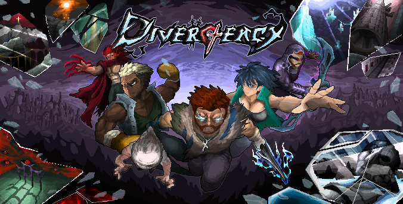
Divergency key artIllustration principale de DivergencyDivergency animated key art bannerBannière animée de Divergency
Divergency : Official Announcement TrailerBande-annonce officielle de Divergency
Divergency is built for players who love classic side-scrolling action refined with modern responsiveness, satisfying traversal, and tactical depth.Divergency s'adresse aux joueurs qui aiment l'action classique à défilement horizontal, enrichie d'une réactivité moderne, d'une mobilité fluide et d'une vraie profondeur tactique.
High-Velocity Combat & Satisfying Movement: Fast-paced, fluid 2D/2.5D brawling featuring highly responsive dashes, animation cancels, parries, and tight mechanical control.Combats nerveux & déplacements fluides : Action 2D/2.5D rapide et précise avec dashs réactifs, annulations d'animations, parades et contrôle mécanique exigeant.
Dynamic Playable Cast: Five core fighters, each with their own weapons, weight, movement rhythm, and mechanical feel.Casting jouable varié : Cinq combattants principaux, chacun doté de son arme ou style, de son poids, de son rythme de déplacement et de ses sensations propres.
Deck-Based Skill Loadouts: Customize your approach before every mission. Select and carry only 4 active skills from a pool of over 10 unique abilities per fighter.Decks de compétences personnalisables : Adaptez votre approche avant chaque mission en sélectionnant seulement 4 compétences actives parmi plus de 10 techniques uniques par combattant.
Real-Time Tactical Command: Direct your allies seamlessly in the heat of battle. Switch formations and call synchronized assist attacks to shatter enemy lines.Commandement tactique en temps réel : Dirigez vos alliés sans casser le rythme du combat. Changez de formation et lancez des attaques combinées synchronisées pour briser les lignes adverses.
Handcrafted Pixel-Art World: Explore branching stages with hidden routes, environmental puzzle sections, and secret lore encounters.Un monde en pixel art façonné à la main : Explorez des niveaux à embranchements dotés de passages secrets, d'énigmes environnementales et de rencontres cachées.
A Dark Fantasy Narrative: A gripping campaign about grief, survival, relic fragments, and the heavy price of turning human beings into weapons.Un récit dark fantasy : Une campagne intense sur le deuil, la survie, les fragments de reliques et le prix terrible qu'il faut payer lorsqu'on transforme des êtres humains en armes.
Divergency is inspired by games that made 2D action feel fast, readable, chaotic, and character-driven. These references explain the combat feeling, not the final art direction or story identity. Divergency has its own dark fantasy world, relic-fragment campaign, and party command systems.Divergency s'inspire de jeux qui ont su rendre l'action 2D rapide, lisible, chaotique et centrée sur la personnalité de chaque combattant. Ces références illustrent les sensations de combat, et non la direction artistique finale ni l'identité du récit : Divergency possède son propre univers dark fantasy, sa campagne autour des fragments de reliques et son système de commandement d'escouade.
Combat inspirations: classic and modern brawlersInspirations de combat : brawlers classiques et modernes
Divergency is an original game. Classic arcade brawlers like Final Fight, Teenage Mutant Ninja Turtles, Little Fighter 2, and Streets of Rage guide the 2.5D lane pressure, enemy waves, and stage pacing. Modern brawlers and action RPGs guide replayability, character identity, and loadout depth.Divergency est une œuvre originale. Les classiques d'arcade comme Final Fight, Teenage Mutant Ninja Turtles, Little Fighter 2 et Streets of Rage guident la pression sur les lignes en 2.5D, les vagues d'ennemis et le rythme des niveaux, tandis que les brawlers modernes et les action-RPG inspirent la rejouabilité, l'identité des personnages et la profondeur des builds.
#High-Velocity, Responsive CombatCombats rapides et réactifs
Combat in Divergency is defined by its speed, impact, and mechanical responsiveness. We want every strike, dash, and block to feel incredibly satisfying.Le combat dans Divergency se définit par sa vitesse, son impact et sa réactivité mécanique. Nous voulons que chaque coup, chaque esquive et chaque parade procure une satisfaction immédiate.
Fluid Traversal & Movement: Dash through lane pressure, cancel your attack animations to escape danger, and execute quick parries to turn the tide. Movement is not just a way to walk between fights—it is your primary survival tool, allowing for high-skill combat expressions.Déplacements fluides & esquive : Foncez à travers les lignes ennemies, annulez vos animations d'attaque pour éviter le danger et placez des parades rapides pour renverser le cours du duel. Le mouvement n'est pas un simple moyen d'aller d'un combat à l'autre : c'est votre premier outil de survie et d'expression technique.
Dynamic Physics & Hit-Stop: Every weapon impact features tailored visual hit-stop, camera shake, and screen-space particle effects that give combat a heavy, physical punch.Physique dynamique & hit-stop : Chaque impact bénéficie d'un arrêt sur image calibré, d'un léger tremblement de caméra et d'effets de particules qui donnent aux coups un poids physique réel.
Encounter Pressure: You don't just fight passive targets. Enemy groups act in formations. Soldiers, shield bearers, ranged shooters, and brutal bosses force you to constantly reposition, break formations, and adapt your rhythm.Pression tactique des affrontements : Vous n'affrontez pas de simples cibles passives. Les groupes ennemis agissent en formation. Soldats, porteurs de bouclier, tireurs à distance et boss brutaux vous obligent à vous replacer sans cesse, briser les lignes et adapter votre rythme.
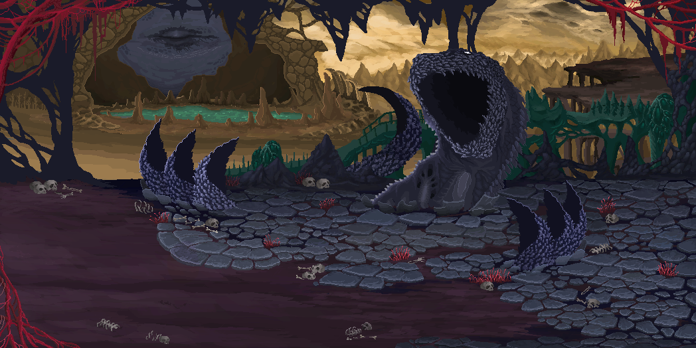
Boss encounter in Akam MeskulAffrontement de boss à Akam Meskul
#Deck-Based Combat Attunement (Loadouts)Équipement tactique par deck de compétences
Each fighter has access to an expansive pool of over 10 unique active skills, but you cannot bring them all. Before setting foot in a stage, you customize your combat deck by selecting only 4 active skills for the mission ahead.Chaque combattant dispose d'un répertoire de plus de 10 compétences actives uniques, mais vous ne pouvez pas toutes les emporter. Avant d'entrer dans un niveau, vous composez votre deck de combat en choisissant seulement 4 compétences actives pour la mission à venir.
This limit changes how you approach each route:Cette limite transforme votre façon d'aborder chaque itinéraire :
Crowd Control Attunement: Equip wide-sweeping attacks, area pressure, and stun tools for dense enemy waves.Orientation Contrôle de foule : Équipez des attaques larges, des outils de pression de zone et d'étourdissement face aux vagues d'ennemis denses.
High Mobility Attunement: Bring dashes, air control, and traversal tools for hazard-heavy sections.Orientation Haute mobilité : Emportez des dashs, du contrôle aérien et des outils de traversée pour les zones riches en pièges.
Guard-Breaking Attunement: Slot heavy impacts and shield-shattering strikes against defensive front lines.Orientation Brise-garde : Préparez des frappes lourdes capables de fissurer les lignes défensives ennemies.
Burst Damage Attunement: Pack high-damage finishers when preparing for major boss encounters.Orientation Dégâts explosifs : Emportez des techniques de finition à forts dégâts en prévision des combats de boss majeurs.
The attunement system is designed to create tactical preparation without slowing down the action. You analyze the map, select your loadout, and immediately feel the weight of your choices in battle.Ce système d'équipement est conçu pour offrir une préparation tactique sans jamais ralentir l'action. Vous analysez le niveau, sélectionnez votre deck et ressentez immédiatement l'impact de vos choix sur le terrain.
Skills are not static. As fighters level up, skill upgrades can improve damage, cooldown behavior, stamina or energy cost, and secondary effects.Les compétences ne sont pas figées. À mesure que vos combattants progressent, leurs améliorations peuvent renforcer les dégâts, le temps de recharge, le coût en endurance ou en énergie ainsi que les effets secondaires.
#Divergency's Item and VeslictionObjets et reliques maudites : Vesliction
Every relic in Divergency asks for something back.Dans Divergency, chaque relique réclame quelque chose en retour.
Across the world, you'll find Vesliction: cursed relics that give you a real edge in a fight, usually with a nasty catch. One mask might crank up your damage as your HP drops, while blocking almost every way to heal.À travers le monde, vous trouverez des Vesliction : des reliques maudites qui vous donnent un véritable avantage au combat, mais presque toujours avec un revers brutal. Un masque peut augmenter vos dégâts à mesure que vos PV baissent, tout en bloquant presque tous vos moyens de vous soigner.
They aren't just combat gear, either. Tracking down these relics pieces together forgotten lore, hidden caches, and new ways to build your squad.Elles ne servent pas qu'au combat. Retrouver ces reliques permet de reconstituer des récits oubliés, de dénicher des caches secrètes et d'ouvrir de nouvelles façons de construire votre escouade.
And if a curse isn't worth the risk? Leave it unequipped. Collecting them still pays off.Et si une malédiction ne vaut pas le risque ? Laissez-la de côté. Les collectionner reste toujours rentable.
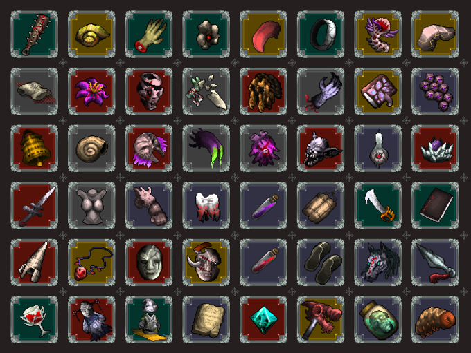
Vesliction & Item Relics: 48 hand-drawn cursed objects, gear, and consumablesVesliction & Objets : 48 reliques maudites, équipements et consommables dessinés à la mainDivergency's Item and Vesliction — Camp loadout, skills, and cursed objectsObjets et Vesliction dans Divergency — Interface d'équipement, compétences et reliques maudites
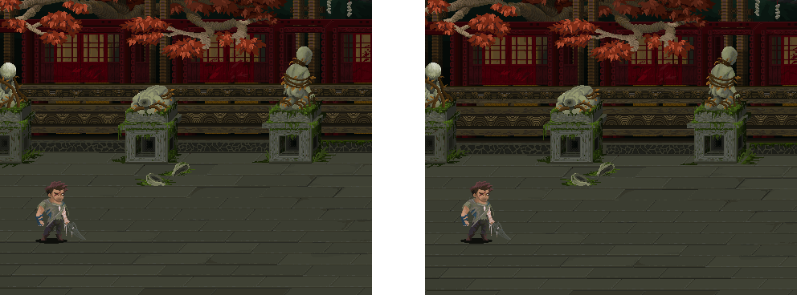
Before (left) vs After improve skill (right) — Skill upgrade impactAvant (gauche) vs Après amélioration de compétence (droite)Before (left) vs After improve skill (right) — Enhanced skill strikeAvant (gauche) vs Après amélioration de compétence (droite) — Frappe renforcée
#Real-Time Tactical Command (Squad Synergy)Commandement tactique en temps réel (Synergie d'escouade)
You are not fighting this war alone. Divergency features a seamless, real-time player-to-NPC command wheel that lets you orchestrate your squad without stopping the brawler action.Vous ne menez pas cette guerre seul. Divergency propose une roue de commandement fluide en temps réel entre le joueur et ses alliés, vous permettant de coordonner votre escouade sans interrompre l'action.
In-game ally command systemSystème de commandement des alliés en jeu
Quickly select a nearby ally and issue orders to coordinate attacks or protect your flanks:Sélectionnez rapidement un allié proche et donnez vos ordres pour coordonner les attaques ou protéger vos flancs :
Free: Release the squad to fight on their own.Libre (Free) : Laissez l'escouade combattre en toute autonomie.
Come: Instantly regroup around the player's position.Repli (Come) : Regroupez immédiatement vos alliés autour de votre position.
Hold Left / Hold Right: Hold a specific flank to control lane pressure.Tenir à gauche / Tenir à droite : Verrouillez un flanc précis pour contrôler la pression sur la voie.
Line / Wedge / Circle: Shift the party's formation dynamically.Ligne / Coin / Cercle : Modifiez dynamiquement la formation de votre groupe.
Synchronized Assist: Call a selected ally to trigger their signature support action.Assistance synchronisée : Sollicitez l'allié sélectionné pour déclencher son action de soutien signature.
While you brawl in real-time, the command system adds a satisfying layer of tactician control—pulling allies out of danger zones, locking down choke points, or calling in synchronized strikes exactly when a boss reveals a weak spot.Tout en combattant en temps réel, ce système ajoute une véritable dimension stratégique : extraire un allié d'une zone dangereuse, verrouiller un goulet d'étranglement ou déclencher une frappe synchronisée au moment précis où un boss expose son point faible.
#Partner Skill Fusion: Unleash a New Onslaught!Fusion de compétences entre partenaires : Déchaînez un nouvel assaut !
Tulas blood magic ground eruptionÉruption de magie du sang de TulasTulas aerial blood burst & combo onslaughtAssaut aérien de magie du sang de Tulas
Seeking peace after years of bloodshed, Deep, a battle-hardened veteran, brought his adopted niece Solei to the fortified metropolis of Marseille. But behind the city’s gleaming facade, Commander Jamerson Obsworth conducts ruthless experiments on refugees, obsessed with curing his comatose daughter at any cost.En quête de paix après des années de carnage, Deep, vétéran endurci par la guerre, a conduit sa nièce adoptive Solei jusqu'à la métropole fortifiée de Marseille. Mais derrière la façade éclatante de la cité, le commandant Jamerson Obsworth mène d'impitoyables expériences sur des réfugiés, obsédé par l'idée de guérir sa fille plongée dans le coma coûte que coûte.
When a trusted comrade is captured investigating the disappearances, Deep’s crew stages a daring assault on Bastonne Prison.Lorsqu'un compagnon de confiance est capturé alors qu'il enquête sur ces disparitions, l'escouade de Deep lance un assaut audacieux sur la prison de Bastonne.
Rescuing their ally, they uncover a horrifying secret behind Jamerson's true agenda that threatens the entire continent. Now branded as fugitives with nowhere left to run, your squad must fight their way across fractured lands to stop him before a desperate father's obsession triggers a catastrophe that consumes them all.En secourant leur allié, ils mettent au jour un secret terrifiant derrière les véritables plans de Jamerson — une menace qui pèse sur tout le continent. Désormais traqués comme fugitifs sans aucun refuge, vous devez vous frayer un chemin à travers des terres fracturées pour l'arrêter avant que l'obsession d'un père désespéré ne déclenche une catastrophe qui les engloutira tous.
Every miracle in Divergency leaves a wound. Long ago, people killed a newborn creature from beyond their world, remembered as the Infant God. Its body was divided into five living relics: the Eye, Ear, Tongue, Heart, and Umbilical Cord—tied to recurring Calamities of disease and curses.Chaque miracle dans Divergency laisse une cicatrice. Il y a longtemps, les hommes ont abattu une créature nouveau-née venue d'au-delà de leur monde, restée dans les mémoires sous le nom de Dieu Enfant (Infant God). Son corps fut divisé en cinq reliques vivantes — l'Œil, l'Oreille, la Langue, le Cœur et le Cordon ombilical — liées à des Calamités récurrentes de maladies et de malédictions.
Acheron (Composer, Sound Designer) is a Taiwan-born composer for games, film, and live orchestra with a rare gift for large-scale, genre-blending compositions.Acheron (Compositeur, Sound Designer) est un compositeur originaire de Taïwan œuvrant pour le jeu vidéo, le cinéma et l'orchestre live, doté d'un talent rare pour les compositions d'envergure mêlant les genres.
He doesn’t just write typical fight loops; his work grounds modern orchestral writing with traditional ethnic colors, raw electronic textures, and cinematic scope. Because he handles both the musical score and the sound design, the clash of weapons, martial arts impacts, and magic surges feel like they belong to the music rather than fighting against it.Il ne se contente pas d'écrire des boucles de combat classiques : son travail ancre l'écriture orchestrale moderne dans des couleurs traditionnelles, des textures électroniques brutes et une véritable ampleur cinématographique. Parce qu'il signe à la fois la bande originale et le sound design, le choc des armes, les impacts d'arts martiaux et les déferlantes magiques semblent faire corps avec la musique plutôt que d'entrer en conflit avec elle.
Hear the tone for yourself—stream the official Main Title theme below:Écoutez par vous-même le thème principal officiel ci-dessous :
#From Our Production Desk: The Story of TriLinkage StudioDans les coulisses : l'histoire de TriLinkage Studio
We started as high school friends. In 2021, years after graduation, we reunited with one goal: stop waiting for the game we wished existed and build it ourselves.Nous avons commencé comme amis de lycée. Des années après le diplôme, en 2021, nous nous sommes retrouvés avec une même conviction : arrêter d'attendre le jeu dont nous rêvions et le créer nous-mêmes.
Our production deskNotre bureau de production
Starting with a shoestring setup across distant time zones, we built Divergency through late-night calls, shared screens, and weekend sessions huddled around laptops in a living room—crafting the world day and night, frame by frame.Avec des moyens modestes et à distance, nous avons bâti Divergency au fil d'appels nocturnes, d'écrans partagés et de week-ends autour d'ordinateurs portables dans un salon — façonnant le jeu jour et nuit, image par image.
TriLinkage Studio is powered by a close-knit team of three:TriLinkage Studio réunit une équipe soudée de trois personnes :
Two developers driving daily production: programming, combat design, sprite animation, and visuals.Deux créateurs assurent la production quotidienne : programmation, design des combats, animation des sprites et visuels.
One writer shaping the narrative: world lore, character arcs, and storytelling.Un scénariste façonne le récit : lore du monde, arcs des personnages et écriture.
Like the classic anime and films we grew up with, we believe true magic comes from connection and enduring patience. That is why we chose the name TriLinkage—a reminder that trust, shared purpose, and relentless craft can bridge any gap and make every frame count.À l'image des animés et films classiques qui ont bercé notre jeunesse, nous croyons que la vraie magie naît du lien et de la patience. C'est pourquoi nous avons choisi le nom TriLinkage : un rappel que la confiance, un objectif commun et la persévérance permettent de franchir chaque obstacle et de faire compter chaque image.
#Follow & Support DivergencySuivre et soutenir Divergency
Divergency is for players who remember the joy of side-scrolling action, the tension of mastering a fighter, and the satisfaction of leading a small party through dangerous spaces.Divergency s'adresse aux joueurs qui se souviennent du plaisir de l'action à défilement horizontal, de la tension qu'offre la maîtrise d'un combattant et de la satisfaction de mener une petite escouade à travers des zones hostiles.
Your support helps us finish the full story campaign, sharpen the combat, complete the world beyond Marseille, and bring Divergency's dark fantasy brawler to release.Votre soutien nous aide à achever la campagne narrative complète, à affiner les combats, à déployer le monde au-delà de Marseille et à mener Divergency jusqu'à sa sortie.
Back Divergency and help us build a new 2D action game with skill loadouts, ally commands, handcrafted stages, and a story about refusing to sacrifice people for someone else's miracle.Soutenez Divergency et aidez-nous à bâtir un nouveau jeu d'action 2D mêlant decks de compétences, ordres aux alliés, niveaux façonnés à la main et un récit sur le refus de sacrifier des vies pour le miracle d'un autre.
Follow and support Divergency:Suivre et soutenir Divergency :
Dossier institutionnel complet pour la Région Sud, le CNC et les partenaires français : ancrage patrimonial à Marseille, pitch tactique 2.5D, contacts prioritaires vérifiés et templates de courriels.
Read
62 min
Sections
10
Tables
12
#1. Synthèse Exécutive et Fiche Projet (Dossier Officiel)
Ce qui est présenté aux commissions (CNC, Région Sud, Partenaires)
Phần tài liệu chính thức nộp cho hội đồng xét duyệt và đối tác
Ce dossier rassemble la vision artistique, l'ancrage territorial à Marseille, les innovations de gameplay, la galerie comparative des décors et le plan de co-financement pour soutenir la production de Divergency.
Tài liệu này tập hợp tầm nhìn nghệ thuật, dấu ấn địa phương tại Marseille, các đổi mới trong lối chơi, bảng đối chiếu hình ảnh thực tế với đồ họa trong game và kế hoạch đồng tài trợ để triển khai sản xuất tựa game Divergency.
Concept panoramique : Marseille, métropole méditerranéenne baignée de lumière et ses réseaux souterrains secrets (TriLinkage).Ý niệm bối cảnh toàn cảnh : Thành phố Marseille ngập tràn ánh nắng Địa Trung Hải cùng mạng lưới ngầm bí ẩn (TriLinkage).
Brawler tactique 2.5D sombre et narratif avec gestion d'escouade en temps réel.
Game hành động đối kháng chiến thuật 2.5D với cốt truyện đen tối sâu sắc và cơ chế chỉ huy đồng đội theo thời gian thực.
Studio porteurĐơn vị phát triển
TriLinkage
Studio indépendant fondé et établi à Marseille, Métropole Aix-Marseille-Provence.
Studio độc lập được thành lập và đặt trụ sở tại thành phố cảng Marseille, Pháp.
Genre et FiliationThể loại và Nguồn cảm hứng
Tactical Brawler / Beat 'em up 2.5D
Combats rapides propres à Divergency, enrichis par le contrôle tactique des alliés.
Nhịp chiến đấu dồn dập của Divergency, kết hợp chiều sâu chiến thuật và điều phối nhóm.
Plateformes ciblesNền tảng phát hành
PC (Steam, GOG, Epic) et Consoles
Prise en charge manette et clavier, optimisation native pour Steam Deck.
Hỗ trợ toàn diện tay cầm và bàn phím, tối ưu hóa mượt mà cho máy chơi game cầm tay Steam Deck.
Moteur technologiqueCông nghệ và Đồ họa
Unity (Pipeline hybride 2.5D)
Moteur physique customisé à 60 FPS constants, éclairage dynamique 3D sur pixel art haute définition.
Hệ thống vật lý va chạm chuyên biệt khóa mượt 60 khung hình mỗi giây, hiệu ứng ánh sáng động 3D trên nền pixel art độ nét cao.
Statut de productionTiến độ hiện tại
Vertical Slice jouable
Cinq combattants jouables intégrés, système COMMAND fonctionnel, Prologue et Chapitre 1 jouables.
Đã hoàn thiện bản chơi thử thực tế với 5 nhân vật, hệ thống lệnh COMMAND hoạt động ổn định, mở trọn vẹn màn mở đầu và Chương 1.
Ancrage géographiqueBối cảnh địa lý
Marseille et Région Sud
L'aventure débute à Marseille (Vieux-Port, Noailles, quais de Fos, Tunnel du Rove, Bastonne).
Toàn bộ hồi 1 của tác phẩm lấy bối cảnh tại Marseille (Cảng cổ Vieux-Port, khu phố Noailles, bến cảng công nghiệp Fos, hầm Rove, pháo đài Bastonne).
Dispositifs publics visésQuỹ tài trợ hướng tới
Région Sud et CNC FAJV
Fonds d'Aide Région Sud (Bourse d'émergence / soutien officiel : 5 000 €), Pôle Média Belle de Mai.
Quỹ Région Sud (Gói hỗ trợ khởi nghiệp & bảo chứng chính thức : 5 000 €), Vườn ươm Belle de Mai.
Campagne de financementMục tiêu Kickstarter
20 000 € (Octobre 2026)
Levier communautaire international pour consolider les co-financements publics.
Tạo đòn bẩy cộng đồng quốc tế để bảo chứng và đối ứng với các khoản trợ cấp nhà nước.
#Pitch Exécutif (Luận điểm thuyết phục hội đồng thẩm định)
1. Renouvellement du brawler d'arcade par la tactique d'escouade : Le marché indépendant témoigne d'un puissant regain d'intérêt pour les jeux de combat à progression. Divergency se distingue en introduisant le système COMMAND, une mécanique novatrice permettant au joueur de contrôler son héros tout en transmettant des consignes instantanées à ses alliés en plein affrontement.
2. Un décor méditerranéen authentique et singulier : À rebours des univers urbains génériques ou futuristes sans âme, Divergency choisit pour berceau la cité de Marseille. Le jeu valorise sa lumière aveuglante, ses calanques minérales, ses ruelles populaires et ses réseaux industriels historiques, créant une atmosphère visuelle d'une grande fraîcheur pour le public international.
3. Retombées directes pour l'emploi créatif en Région Sud : Conçu et programmé à Marseille, le projet mobilise des artistes, programmeurs et créateurs sonores de la métropole. L'intégralité des aides publiques accordées par la région est dépensée localement, favorisant l'insertion de jeunes diplômés des écoles régionales.
1. Làm mới dòng game đối kháng đi cảnh bằng chiều sâu chiến thuật nhóm : Thị trường game quốc tế đang đón nhận làn sóng hồi sinh mạnh mẽ của thể loại beat 'em up. Divergency tạo đột phá nhờ hệ thống COMMAND, cơ chế cho phép game thủ vừa trực tiếp tung đòn vừa ra lệnh tức thời cho các đồng minh phối hợp bọc lót và mở thế đánh trong thời gian thực.
2. Bối cảnh Địa Trung Hải chân thực và giàu bản sắc : Thay vì chọn những đô thị giả tưởng vô hồn, Divergency đặt nền móng cốt truyện ngay tại thành phố cảng Marseille. Trò chơi khắc họa nắng hè chói chang, vách đá vôi Calanques, các khu chợ dân cư sầm uất và di sản công nghiệp lâu đời, mang lại phong vị thẩm mỹ độc đáo cho bạn bè quốc tế.
3. Tác động kinh tế và tạo việc làm trực tiếp cho khu vực miền Nam nước Pháp : Dự án được sản xuất tại Marseille với đội ngũ họa sĩ, kỹ sư lập trình và nhạc sĩ tại chỗ. Toàn bộ kinh phí hỗ trợ từ vùng Région Sud được cam kết chi tiêu trong khu vực, tạo cầu nối hợp tác vững chắc với các trường đại học và cơ sở đào tạo truyền thông địa phương.
Ce projet est porté par une trajectoire singulière, celle d'un chercheur doctorant d'origine vietnamienne résidant en France depuis dix ans. Tombé amoureux des contrastes saisissants de Marseille, entre éclat solaire éclatant et mystère de ses venelles secrètes, il conçoit Divergency comme un dialogue vivant entre deux continents.
Tuyên ngôn tác giả và Cầu nối hai nền văn hóa
Dự án này được dẫn dắt bởi một hành trình đặc biệt, đó là của một nghiên cứu sinh tiến sĩ người Việt Nam đã sinh sống tại Pháp suốt mười năm qua. Yêu mến vẻ đẹp tương phản mãnh liệt của Marseille, giữa ánh mặt trời rực rỡ và những góc phố khuất kín đầy bí ẩn, tác giả xây dựng Divergency như một cây cầu văn hóa sống động nối liền phương Tây và phương Đông.
Dans l'évaluation des dossiers par les commissions du CNC et de la Région Sud, la maturité du porteur de projet et sa capacité d'exécution sont fondamentales :
Dix années d'immersion en France : Venu du Vietnam pour accomplir des études universitaires exigeantes, le fondateur s'est imprégné de la littérature, de la langue et du patrimoine français tout en restant fidèle à ses racines asiatiques.
Méthodologie et rigueur doctorale : La formation doctorale apporte une discipline d'ingénierie rigoureuse, une capacité d'analyse systémique et une constance précieuse face aux projets de longue haleine. Développer un moteur de combat en temps réel avec un système d'ordres tactiques exige une telle précision conceptuelle.
Artisanat numérique et sincérité : TriLinkage privilégie la profondeur artistique et la maîtrise technique plutôt que la surenchère publicitaire, avec une vertical slice jouable déjà aboutie.
Khi đánh giá hồ sơ tại các hội đồng nghệ thuật CNC và vùng Région Sud, năng lực thực thi và tư duy của người đứng đầu dự án mang tính quyết định :
Mười năm gắn bó và hòa nhập tại Pháp : Đến Pháp du học và hoàn thành các bậc học chuyên sâu, tác giả đã thẩm thấu sâu sắc ngôn ngữ, văn hóa và nếp sống Pháp, song hành cùng cội nguồn văn hóa Á Đông vững chắc.
Kỷ luật nghiên cứu và tư duy hệ thống : Quá trình làm nghiên cứu sinh tiến sĩ rèn luyện phương pháp làm việc khoa học, tư duy cấu trúc chặt chẽ và tính kiên định trong các đề án dài hạn. Việc lập trình cơ chế chiến đấu phức tạp cùng hệ thống lệnh chiến thuật thời gian thực đòi hỏi sự chuẩn xác tuyệt đối này.
Tinh thần thủ công số và sự chân thành : TriLinkage kiên trì theo đuổi chất lượng nghệ thuật nguyên bản và chiều sâu cơ chế thay vì chạy theo xu hướng nhất thời, minh chứng qua bản chơi thử hoàn chỉnh đã vận hành ổn định.
Les ruelles escarpées de Marseille dans le jeu : contrastes de lumière méditerranéenne et recoins discrets (TriLinkage).Những con dốc lát đá đặc trưng tại Marseille trong game : ánh nắng Địa Trung Hải rọi qua các ngõ hẹp cổ kính (TriLinkage).
Marseille est la ville où le créateur a vécu la plus grande partie de sa vie en France. Loin des images stéréotypées, le jeu retranscrit les tiraillements bien réels de la cité :
Le contraste entre éclat solaire et pénombre : La cité phocéenne est célèbre pour son soleil éclatant qui illumine la mer. Ce soleil donne son nom au personnage Solei. Pourtant, cette vive lumière projette aussi des ombres denses, celles des caves de Laundel, des entrepôts désaffectés et des arrangements discrets dans les arrière-cours.
Une énergie populaire et des havres de recueillement : Marseille déborde de vitalité sur le port et dans les marchés de Noailles, mais sait offrir des havres de paix silencieux dans ses calanques de calcaire. Ce double rythme dicte la cadence du jeu, alternant bagarres haletantes et dialogues intimistes au bar Armorlite.
Marseille là mảnh đất gắn bó phần lớn quãng đời của tác giả tại Pháp. Khác với những thước phim quảng bá du lịch khuôn mẫu, trò chơi lột tả những gam màu chân thực và sinh động của đô thị cảng :
Sự đối lập giữa ánh dương rực rỡ và bóng tối sâu thẳm : Marseille ngập tràn ánh nắng chói chang phản chiếu trên mặt biển, và ánh dương này đã gợi cảm hứng đặt tên cho nhân vật chính Solei. Tuy nhiên, ánh sáng càng gắt thì bóng râm càng đậm nét, thể hiện qua các khu ngầm Laundel, nhà kho cũ và những thỏa hiệp ngầm sau cánh cửa đóng kín.
Nhịp sống đường phố sôi động đan xen khoảng lặng trầm mặc : Thành phố luôn rộn rã tại bến cảng và khu chợ Noailles, nhưng lại ẩn chứa những góc bình yên tĩnh lặng nơi vách đá Calanques. Nhịp điệu tương phản này tạo nên mạch game độc đáo, đan xen giữa những trận đụng độ nghẹt thở và những phút giây tự sự lắng đọng trong quán bar Armorlite.
#Marseille, Porte de l'Orient et Carrefour des Imaginaires
Historiquement, Marseille portait le titre de Porte de l'Orient, point de départ des grandes lignes maritimes vers l'Asie et l'Océan Indien. Dans Divergency, ce lien culturel prend une forme concrète à travers l'univers du jeu :
Trong lịch sử, Marseille từng được vinh danh là Cửa ngõ hướng về phương Đông, nơi xuất phát của các tuyến hải hành lớn kết nối nước Pháp với châu Á và Ấn Độ Dương. Trong Divergency, cầu nối lịch sử này được tái hiện đầy sáng tạo qua các khía cạnh :
Axe CulturelTrục Văn Hóa
Héritage Français et MéditerranéenDấu Ấn Pháp và Địa Trung Hải
Héritage Asiatique et SynergieDấu Ấn Á Đông và Sự Giao Thoa
Gameplay et CombatLối chơi đối kháng
Richesse narrative européenne, mise en scène dramatique inspirée de la bande dessinée sombre.
Chiều sâu cốt truyện kiểu tiểu thuyết châu Âu, nghệ thuật dàn dựng kịch tính lấy cảm hứng từ truyện tranh bande dessinée kinh điển.
Ferveur des bornes d'arcade asiatiques, arts martiaux des personnages de Divergency et fluidité des animations.
Tinh hoa đối kháng arcade châu Á, võ thuật đặc trưng của các nhân vật Divergency và sự uyển chuyển của hoạt họa hành động.
Mythe et PhilosophieTriết lý thần thoại
Architecture portuaire, forteresse calcaire de Bastonne, infrastructures d'ingénierie côtières.
Kiến trúc cảng biển Địa Trung Hải, pháo đài đá vôi Bastonne, các công trình giao thông và thủy lợi ven biển.
Le Mythe des Cinq Trésors, la recherche du souffle vital et la symbolique de l'harmonie rompue.
Thần thoại Năm Báu Vật Khởi Nguyên, triết lý khí lực tuần hoàn và khát vọng hàn gắn những mảnh vỡ của thế giới.
Pourquoi cette démarche retient l'attention des commissions
Les jurys du CNC et des régions françaises recherchent des propositions authentiques portées par une vision personnelle. Défendre une œuvre où l'auteur incarne un trait d'union naturel entre la France et l'Asie, appuyé par la rigueur d'un chercheur et un attachement sincère pour Marseille, constitue une signature mémorable pour les comités d'experts.
Lý do dự án tạo dấu ấn mạnh mẽ với các hội đồng tài trợ
Các hội đồng giám khảo của CNC và các quỹ vùng luôn tìm kiếm những tác phẩm có bản sắc tác giả rõ nét và câu chuyện chân thành. Một dự án mang góc nhìn giao thoa tự nhiên giữa Pháp và châu Á, được bảo chứng bằng phương pháp luận của một nhà nghiên cứu cùng tình cảm gắn bó sâu sắc với Marseille, sẽ là điểm sáng nổi bật trong mắt các chuyên gia tuyển chọn.
L'univers de Divergency ne repose pas sur une fiction désincarnée. Le premier acte et le point de départ de l'aventure prennent racine au cœur de Marseille. Dans le jeu, Marseille conserve son identité de cité-port autonome de la Méditerranée, une grande ville littorale baignée de lumière vive où les toits de tuiles, les viaducs rocheux et les calanques minérales dissimulent de lourdes tensions logistiques et des réseaux de résistance clandestine.
Cette approche permet de conjuguer la vigueur d'un Tactical Brawler moderne avec un patrimoine architectural, maritime et géographique directement inspiré de la Provence.
Thế giới của Divergency không bắt đầu từ một vùng đất tưởng tượng xa xôi. Toàn bộ hồi 1 và khởi nguồn chuyến phiêu lưu được gắn chặt với thành phố cảng Marseille. Trong thế giới trò chơi, Marseille giữ nguyên vị thế là một đô thị cảng tự trị tại Địa Trung Hải, nơi ánh nắng chan hòa trên những mái ngói đỏ, cầu cạn đá và bờ vịnh Calanques, che giấu bên dưới những xung đột quyền lực gay gắt và các mạng lưới phản kháng trong bóng tối.
Cách tiếp cận này kết hợp hoàn hảo nhịp độ dồn dập của thể loại brawler chiến thuật với di sản kiến trúc, hàng hải và địa lý phong phú của miền Nam nước Pháp.
#3.1. Le Vieux-Port et la Mémoire Maritime Phocéenne
Vision conceptuelle de Marseille : alliance des façades provençales et des infrastructures portuaires (TriLinkage).Thiết kế ý niệm Marseille : sự hòa quyện giữa các tòa nhà cổ kính vùng Provence và hạ tầng bến cảng (TriLinkage).Stage 1-1 (Déroulé continu 3 phases) : Marché aux poissons aux premières lueurs, promenade des quais face à la milice motarde et écluse vers Laundel (TriLinkage).Màn 1-1 (Cuộn cảnh 3 giai đoạn) : Chợ cá buổi sớm, đường đi bộ bờ kè nghênh chiến đoàn biker và cửa âu cống ngầm dẫn tới Laundel (TriLinkage).
Le Vieux-Port incarne depuis plus de deux millénaires le cœur battant de la cité phocéenne, carrefour des échanges marchands et des arrivées d'outre-mer. Dans Divergency, ce bassin historique demeure l'épicentre du commerce civil.
En surface, le port affiche un visage serein avec ses marchés matinaux, ses quais baignés de clarté et ses terrasses animées. C'est sur ce contraste saisissant entre la douceur méditerranéenne en surface et la rigueur des contrôles militaires en coulisses que se forge l'identité visuelle de l'œuvre.
Cảng cổ Vieux-Port suốt hơn hai nghìn năm qua luôn là trái tim đập không ngừng của Marseille, nơi giao thương sầm uất và đón nhận các chuyến hải trình từ khắp nơi trên thế giới. Trong Divergency, bến cảng lịch sử này là trung tâm của các hoạt động dân sự thường nhật.
Trên mặt phố, bến cảng mang vẻ đẹp thanh bình với những chợ cá buổi sớm, cầu tàu rực nắng và các dãy quán cà phê nhộn nhịp. Chính sự đối lập giữa cảnh quan thơ mộng bên trên và sự kiểm soát gắt gao của lực lượng tuần tra quân sự bên dưới đã tạo nên phong cách hình ảnh độc đáo cho trò chơi.
#3.2. Le Grand Port Maritime de Fos et le Monopole d'Obsworth
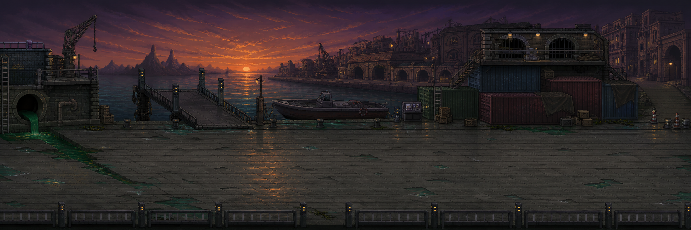
Stage 1-3 : Quais logistiques au coucher du soleil, conteneurs sécurisés et affrontement contre la milice d'Obsworth (TriLinkage).Màn 1-3 : Bến tàu kho bãi lúc hoàng hôn, thùng container xếp tầng và trận chạm trán với dân binh Obsworth (TriLinkage).
Premier complexe portuaire de France, le Grand Port Maritime de Marseille déploie de gigantesques terminaux de conteneurs, des grues monumentales et des voies ferrées côtières. Dans le récit de Divergency, cette infrastructure industrielle justifie l'emprise politique du magnat Jamerson Obsworth :
Maîtrise des flux vitaux : Jamerson ne s'appuie pas seulement sur des troupes armées, il verrouille le carburant, les pièces mécaniques et les denrées sous scellés de tout le littoral.
Architecture de combat : Dans le jeu, ces terminaux deviennent une arène tactique sur plusieurs niveaux, faite de grues portuaires, de conteneurs à escalader et de passerelles de tir pour l'escouade.
Là trung tâm cảng biển quy mô bậc nhất nước Pháp, Grand Port Maritime de Marseille trải dài với những bến container khổng lồ, cần cẩu cơ khí vươn cao và đường sắt chạy dọc mép nước. Trong cốt truyện Divergency, hạ tầng quy mô này là nền tảng củng cố quyền lực tối thượng của Jamerson Obsworth :
Thao túng huyết mạch cung ứng : Jamerson không chỉ nắm quân đội riêng, ông ta còn độc quyền phân phối nhiên liệu, linh kiện máy móc và các chuyến hàng niêm phong trên toàn bộ vùng duyên hải.
Không gian chiến đấu phân tầng : Khi vào màn chơi, khu cảng này biến thành sàn đấu đa tầng với các cần cẩu trục, container có thể leo trèo và cầu vượt thích hợp để Mark bắn tên yểm trợ cho đồng đội.
#3.3. Noailles, les Capucins et le Repaire du Bar Armorlite
Les ruelles marchandes de Noailles en amont du repaire (TriLinkage).Phố chợ Noailles náo nhiệt dẫn vào quán bar (TriLinkage).Le bar clandestin Armorlite : repaire feutré (TriLinkage).Quán bar Armorlite : nơi trú ẩn an toàn (TriLinkage).
Surnommé le ventre de Marseille, le quartier populaire de Noailles et du marché des Capucins est réputé pour sa densité humaine, ses ruelles étroites aux arômes d'épices et sa convivialité cosmopolite. Dans Divergency, cette vitalité irrigue directement le faubourg entourant le bar Armorlite :
Le refuge des insoumis : C'est dans ce dédale de venelles que Deep, Solei, Mark et Block trouvent refuge après l'évasion du fort de Bastonne.
Jacques le gérant : Figure bienveillante du quartier, Jacques connaît chaque passage dérobé et incarne la mémoire solidaire des vieux faubourgs marseillais.
Được mệnh danh là trái tim bình dân của Marseille, khu phố Noailles và chợ Capucins nổi tiếng bởi mật độ cư dân tấp nập, các con ngõ thơm nồng hương gia vị và tinh thần gắn kết đa văn hóa. Trong Divergency, nhịp sống này bao bọc lấy khu vực quanh quán bar Armorlite :
Điểm tựa của những người trốn chạy : Sau cuộc giải cứu kịch tính khỏi pháo đài Bastonne, Deep, Solei, Mark và Block đã ẩn mình an toàn giữa mê cung ngõ ngách này.
Chủ quán Jacques : Một nhân vật gạo cội am tường từng đường ngang ngõ tắt, biểu trưng cho tình nghĩa đùm bọc trượng nghĩa của những con người lao động Marseille.
#3.4. Le Tunnel du Rove et la Cité Souterraine de Laundel
Laundel (Stage 1-2) : ancienne station souterraine convertie en marché noir et refuge des proscrits (TriLinkage).Laundel (Màn 1-2) : trạm ngầm bỏ hoang được cải tạo thành chợ đen và chốn dung thân của những kẻ bị săn đuổi (TriLinkage).
Le Tunnel du Rove compte parmi les prouesses d'ingénierie les plus singulières de France, un canal navigable foré sous le massif calcaire de la Nerthe sur plus de sept kilomètres pour relier le port de Marseille à l'étang de Berre. Cet ouvrage condamné a directement inspiré la genèse de Laundel :
Une vie sous la roche : Les galeries de drainage désaffectées et la station de métro inachevée de l'ancien réseau souterrain Connectec — autrefois utilisé avec Jamerson pour acheminer discrètement les personnes mutées vers les laboratoires côtiers avant son inondation — composent un second monde où s'organisent les exclus et les fugitifs.
Le blason du lion à queue de poisson : Emblème officiel de Laundel, rappelant la dualité de la ville, avec le lion de pierre pour la cité de surface et la queue marine pour les habitants des canaux sombres.
Đường hầm Tunnel du Rove là một trong những công trình xây dựng kỳ vĩ bậc nhất nước Pháp, một kênh ngầm dẫn tàu thuyền dài hơn bảy cây số được đào xuyên qua rặng núi đá vôi Nerthe nối cảng Marseille với đầm Berre. Di tích công trình kỳ vĩ này là nguồn cảm hứng trực tiếp cho thành ngầm Laundel :
Đô thị dưới lòng đá : Các đường dẫn nước cũ cùng ga metro bỏ dở của tuyến ngầm Connectec — mạng lưới trước kia từng được Connectec và Jamerson dùng để chuyển người biến dị đi thí nghiệm trước khi đoạn hầm này ngập nước — đã trở thành khu định cư ngầm của những người tị nạn và các nhóm thợ độc lập.
Huy hiệu sư tử đuôi cá : Biểu tượng truyền đời của Laundel, thể hiện hai mặt của Marseille, hình ảnh sư tử đại diện cho mặt đất rực rỡ và đuôi cá tượng trưng cho những người sinh sống nơi kênh nước ngầm.
#3.5. Les Baumettes et les Falaises Calcaires pour le Fort de Bastonne
Fort Bastonne : bastion militaire rocheux encastré dans les falaises calcaires méditerranéennes (TriLinkage).Pháo đài Bastonne : tiền đồn kiên cố nằm tựa vào vách núi đá vôi ven biển Địa Trung Hải (TriLinkage).
Situé au sud de Marseille à proximité des calanques, le site des Baumettes tire son appellation du provençal baumo désignant les cavités rocheuses. Cette géographie de falaises escarpées a guidé la conception du fort pénitentiaire de Bastonne :
Liberté créative assumée : Le jeu transforme cette austérité géologique en une ancienne place forte militaire privatisée par Jamerson Obsworth.
Le lieu des révélations : C'est dans ses cellules souterraines creusées à même la pierre que débute l'aventure, avec l'évasion du mystérieux Stranger et le premier affrontement contre le geôlier Groger.
Nằm ở phía nam thành phố Marseille ngay sát các dãy Calanques, địa danh Baumettes bắt nguồn từ từ ngữ cổ trong tiếng Provençal để chỉ những hang đá tự nhiên. Địa hình vách đá dựng đứng này đã truyền cảm hứng trực tiếp cho thiết kế pháo đài giam giữ Bastonne :
Sáng tạo nghệ thuật dựa trên địa hình thực : Trò chơi chuyển hóa địa thế hiểm trở thành một cứ điểm phòng thủ kiên cố thuộc quyền kiểm soát bí mật của Jamerson Obsworth.
Nơi mở đầu định mệnh : Chính trong những buồng giam khoét sâu vào vách đá này, trò chơi mở màn với cuộc đào tẩu nghẹt thở của nhân vật bí ẩn Stranger và màn đấu đầu tiên chống lại cai ngục Groger.
#3.6. Le MuCEM et le Laboratoire Sous-marin situé sous le MuCEM (Bảo Tàng MuCEM và Lab Tàu Ngầm Nằm Dưới MuCEM)
Le MuCEM en surface : couverture civile dont les défenses extérieures sont neutralisées avant l'infiltration vers le labo sous-marin situé dessous.MuCEM bề nổi : vỏ bọc dân sự che giấu Lab tàu ngầm nằm ở bên dưới MuCEM.Passerelle en résille de béton ajourée sur la mer Méditerranée (TriLinkage).Hành lang lưới bê tông hiện đại bắc qua sóng biển Địa Trung Hải (TriLinkage).
Symbole du renouveau architectural marseillais du XXIe siècle face au Fort Saint-Jean, le MuCEM (Musée des Civilisations de l'Europe et de la Méditerranée) se distingue par sa résille minérale ajourée conçue par Rudy Ricciotti. Dans Divergency, ce chef-d'œuvre contemporain trouve une incarnation narrative fascinante :
La couverture de surface (Stage 1-4) : Après l'affrontement au Hangar J4, l'équipe peut regagner la Deep Base pour se concerter avant de lancer un assaut en deux volets sur le MuCEM : une équipe sabote le réseau électrique pour faire tomber les défenses extérieures, puis l'équipe en canot s'infiltre dans le MuCEM et paralyse ses systèmes internes afin d'accéder au laboratoire sous-marin caché directement sous le MuCEM.
Passerelle vers les abysses : Les coursives suspendues au-dessus des flots conduisent à un quai de métro souterrain — le terminus scellé de la même ligne Connectec que Laundel, conservé par Jamerson pour transférer discrètement sujets mutés et prisonniers — puis aux sas étanches qui descendent vers le laboratoire sous-marin où Jamerson retient SheMal prisonnière et mène les recherches liées à l'Oreille de Sakuri.
Biểu tượng kiến trúc thế kỷ XXI của Marseille đối diện pháo đài Fort Saint-Jean, bảo tàng MuCEM nổi tiếng thế giới nhờ lớp vỏ lưới bê tông đan xen tuyệt mỹ do kiến trúc sư Rudy Ricciotti thiết kế. Trong Divergency, công trình này được chuyển hóa thành điểm nút cốt truyện độc đáo :
Vỏ bọc bề nổi hợp pháp (Màn 1-4) : Sau khi xong trận ở Hangar J4, cả đội có thể rút về Deep Base hội ý để đánh vào MuCEM theo hai mũi — một bên đánh phá điện làm mất đi lớp bảo vệ bên ngoài, rồi team đi ca-nô đột nhập vào MuCEM làm tê liệt hệ thống bên trong đấy để tiến xuống Lab tàu ngầm nằm ở ngay dưới MuCEM.
Cầu nối xuống Lab tàu ngầm dưới đáy : Hệ thống hành lang treo trên mặt biển dẫn tới ga metro ngầm — đầu tuyến niêm phong của cùng hệ thống Connectec từng nối qua Laundel, được Jamerson giữ lại để chuyển người biến dị và tù nhân — trước khi qua các cửa âu điều áp đi xuống Lab tàu ngầm nằm dưới MuCEM, nơi giam giữ nạn nhân SheMal và cất giấu manh mối Tai Sakuri.
#3.7. Le Vallon des Auffes : L'Anse Secrète et le Grand Départ vers l'Orient (Vịnh Làng Chài Vallon des Auffes & Khởi Hành Sang Phương Đông)
Le Vallon des Auffes réel : anse protégée sous le viaduc de la Corniche.Vallon des Auffes thực tế : vịnh kín nép dưới vòm cầu cạn Corniche.Stage en jeu : point de départ secret vers Sakuri (TriLinkage).Màn chơi pixel-art trong game : bến thoát hiểm sang Sakuri (TriLinkage).
Blottie sous les arches monumentales du viaduc de la Corniche Kennedy, l'anse du Vallon des Auffes est un bijou d'authenticité provençale, où mouillent les traditionnels bateaux de pêche en bois (« pointus ») dans un abri naturel imprenable. Dans l'épilogue du Chapitre 1 de Divergency, ce havre intime scelle le départ des héros :
Le refuge sous les voûtes : Après le sabotage du complexe sous-marin du MuCEM (1-4), les vedettes d'assaut d'Obsworth ne peuvent s'infiltrer sous les arches étroites du viaduc. L'escouade y trouve un sanctuaire solidaire auprès des marins phocéens.
Le Pont France-Asie : C'est depuis la Corniche voisine que les héros troquent leur ca-nô contre un navire hauturier en acier préparé par Mateo et prennent le large vers l'Orient (la péninsule de Sakuri, Chapitre 2), concrétisant le rôle historique de Marseille comme Porte de l'Orient.
Nằm ẩn mình dưới những vòm đá đồ sộ của cầu cạn Corniche Kennedy, vịnh Vallon des Auffes là biểu tượng mộc mạc và chân thực của vùng Provence, nơi neo đậu của những con thuyền gỗ truyền thống ("pointus" Marseille) giữa làn nước biếc tĩnh lặng. Trong đoạn kết của Chương 1 trong Divergency, vịnh biển thanh bình này giữ vai trò là khúc hạ màn thi vị và cánh cửa mở ra đại dương :
Chốn dung thân dưới vòm cầu đá : Sau khi đánh sập phòng thí nghiệm tàu ngầm MuCEM (1-4), tàu chiến cơ động của Jamerson không thể lách qua vòm cầu hẹp để săn lùng nhóm bạn. Đội hiệp sĩ được các dòng họ ngư dân Marseille cưu mang và tiếp tế lương thực.
Cầu nối Pháp - Á vượt đại dương : Từ vùng vịnh Corniche bên cạnh, nhóm bạn rời chiếc ca-nô để bước lên con tàu đường dài vỏ thép do Mateo chuẩn bị, vượt biển sang Bán đảo Sakuri (Chương 2), tái hiện vị thế lịch sử của Marseille — Cửa ngõ hướng về phương Đông.
#4. Galerie Comparative : Lieux Réels d'Inspiration et Direction Artistique
Cette matrice met en parallèle les sites emblématiques réels de Marseille et de la Région Sud avec les concepts artistiques originaux et décors jouables développés pour Divergency. Les scènes dont le concept art est en cours d'exécution sont expressément signalées par un repère à compléter.
Bảng ma trận này đối chiếu trực quan giữa những địa danh thực tế tiêu biểu của Marseille và vùng Provence với các bản vẽ phác thảo và sàn đấu thực tế trong game của dự án Divergency. Những địa điểm đang trong giai đoạn lên tranh được đánh dấu khung chờ để đội ngũ hoàn thiện trong thời gian tới.
1. Le Vieux-Port de Marseille (Cảng Cổ Vieux-Port)
✅ Réalisé / Đã hoàn thành
📷 Lieu Réel d'InspirationMarseille
🎨 Direction Artistique en JeuTriLinkage
Transposition dans le jeu : Le bassin du Vieux-Port accueille la grande rixe urbaine d'ouverture du Chapitre 1 (Stage 1-1). Le combat se déroule en un défilement continu sur 3 phases : les étalages du marché aux poissons du matin (Phase 1), la promenade des quais encombrée de barricades face aux motards d'Obsworth (Phase 2), et enfin le sas d'évacuation de l'écluse maritime menant aux souterrains de Laundel (Phase 3).
Chuyển hóa vào trò chơi : Lòng cảng Vieux-Port là vũ đài cho trận đại ẩu đả đường phố mở màn Chương 1 (Màn 1-1). Cuộc giao tranh trải dài qua 3 giai đoạn liên hoàn : quầy sạp chợ cá buổi sớm (Giai đoạn 1), lối đi bờ kè nghênh chiến đoàn du đãng mô-tô của Obsworth (Giai đoạn 2), và cửa âu cống ngầm bến cảng thoát hiểm xuống thành ngầm Laundel (Giai đoạn 3).
2. Noailles et Cours Julien · Le Repaire d'Armorlite (Khu Phố Cổ et Quán Bar Armorlite)
✅ Réalisé / Đã hoàn thành
📷 Lieu Réel d'InspirationNoailles & Cours Julien
🎨 Direction Artistique en JeuTriLinkage
Transposition dans le jeu : L'effervescence bohème du Cours Julien et les ruelles marchandes de Noailles enveloppent le bar Armorlite, le refuge clandestin où l'escouade prépare ses missions avant la traversée vers le port.
Chuyển hóa vào trò chơi : Tinh thần phóng khoáng của Cours Julien cùng sự sầm uất của chợ Noailles bao quanh quán bar Armorlite, căn cứ bí mật nơi nhóm bạn lập kế hoạch tác chiến trước khi đột kích ra bến cảng.
3. Le Panier · Ruelles Méditerranéennes Escarpées (Khu Phố Le Panier et Ngõ Hẹp Dốc Đá)
✅ Réalisé / Đã hoàn thành
📷 Lieu Réel d'InspirationLe Panier
🎨 Direction Artistique en JeuTriLinkage
Transposition dans le jeu : Les escaliers étroits et les façades ocres du quartier du Panier constituent la géométrie idéale pour un brawler tactique, offrant des paliers d'élévation pour surprendre les ennemis.
Chuyển hóa vào trò chơi : Những bậc thang dốc và dãy nhà quét vôi màu đất son của khu phố cổ Panier tạo thành địa hình nhiều tầng lý tưởng để tổ chức các pha tập kích kẻ địch từ trên cao.
4. Les Baumettes et Falaises Calcaires · Le Fort de Bastonne (Vách Đá Vôi et Pháo Đài Bastonne)
✅ Réalisé / Đã hoàn thành
📷 Lieu Réel d'InspirationMassif Calcaire
🎨 Direction Artistique en JeuTriLinkage
Transposition dans le jeu : Les parois rocheuses des calanques inspirent l'approche fortifiée de Bastonne, où les pierres blanches monumentales forment une prison réputée inviolable.
Chuyển hóa vào trò chơi : Các khối đá vôi dựng đứng của vịnh Calanques tạo nên diện mạo bất khả xâm phạm cho pháo đài Bastonne, nơi giam giữ nhân vật Stranger ngay mở đầu trò chơi.
5. Grand Port Maritime de Fos · Docks et Grues Industrielles (Cảng Công Nghiệp Fos et Kho Bãi)
✅ Réalisé / Đã hoàn thành
📷 Lieu Réel d'InspirationPort de Marseille
🎨 Direction Artistique en JeuTriLinkage
Transposition dans le jeu : Les immenses alignements de conteneurs et les grues portuaires deviennent une arène de combat majeure (Stage 1-3), baignée dans les lueurs pourpres du couchant.
Chuyển hóa vào trò chơi : Hàng dãy container khổng lồ cùng hệ thống cần cẩu công nghiệp trở thành sàn đấu kịch tính trong Màn 1-3, chìm trong sắc đỏ tía của buổi hoàng hôn buông xuống mặt biển.
6. Le Tunnel du Rove · La Cité Souterraine de Laundel (Hầm Thủy Lợi Rove et Thành Ngầm Laundel)
✅ Réalisé / Đã hoàn thành
📷 Lieu Réel d'InspirationCanal du Rove
🎨 Direction Artistique en JeuTriLinkage
Transposition dans le jeu : Les monumentales voûtes de pierre forées sous le massif de la Nerthe se métamorphosent en la cité de Laundel, une société clandestine organisée le long des cours d'eau souterrains.
Chuyển hóa vào trò chơi : Vòm đá nhân tạo vĩ đại đào xuyên lòng núi Nerthe được biến hóa thành thành ngầm Laundel, nơi các hội nhóm người tị nạn sinh sống dọc theo hệ thống kênh nước ngầm.
7. Le Vallon des Auffes · Havre Côtier Traditionnel et Porte de l'Orient (Làng Chài Vallon des Auffes · Điểm Thoát Hiểm Sang Phương Đông)
✅ Réalisé / Đã hoàn thành
📷 Lieu Réel d'InspirationVallon des Auffes & Corniche
🎨 Direction Artistique en Jeu · ÉpilogueStage Vallon des Auffes (TriLinkage)
Connexion narrative dans Divergency (Épilogue du Chapitre 1) : Après la destruction du complexe sous-marin du MuCEM (Stage 1-4), le ca-nô ne peut traverser la haute mer. Guidée par Mateo, l'escouade rejoint le quai de la Corniche à l'abri des arches du Vallon des Auffes pour embarquer sur un navire hauturier en acier (CornicheOffshoreSteel) et mettre le cap vers l'Asie (Sakuri).
Kết nối cốt truyện trong Divergency (Đoạn kết Chương 1) : Sau khi đánh sập phòng thí nghiệm tàu ngầm MuCEM (Màn 1-4), chiếc ca-nô không thể vượt biển lớn. Được hoa tiêu Mateo vừa giải cứu dẫn đường, nhóm Deep rút ra bến đá Corniche gần vòm cầu Vallon des Auffes và chuyển sang tàu đường dài vỏ thép (CornicheOffshoreSteel) để nhổ neo rời Marseille sang phương Đông (Sakuri).
8. Le MuCEM et le Laboratoire Sous-marin situé dessous (Bảo Tàng MuCEM và Lab Tàu Ngầm Bên Dưới)
✅ Réalisé / Đã hoàn thành
📷 Lieu Réel d'InspirationMuCEM & Fort Saint-Jean
🎨 Direction Artistique en JeuTriLinkage
Transposition dans le jeu : L'architecture d'avant-garde du MuCEM avec ses résilles ajourées en béton fibré sert de couverture officielle au laboratoire sous-marin situé directement sous le MuCEM (Stage 1-4). Après le Hangar J4, l'équipe peut revenir à la Deep Base pour planifier l'assaut : un groupe sabote l'alimentation pour neutraliser les défenses extérieures, puis l'équipe en canot s'infiltre dans le MuCEM et en paralyse les systèmes internes avant de descendre vers le laboratoire sous-marin où SheMal est retenue.
Chuyển hóa vào trò chơi : Kiến trúc hoa văn lưới bê tông tiền phong của bảo tàng MuCEM đóng vai trò vỏ bọc bề nổi cho Lab tàu ngầm nằm ở ngay bên dưới MuCEM (Màn 1-4). Sau trận Hangar J4, đội có thể về Deep Base hội ý rồi đánh vào MuCEM theo hai mũi: một bên đánh phá điện làm mất bảo vệ bên ngoài, sau đó team đi ca-nô đột nhập vào MuCEM làm tê liệt hệ thống bên trong để mở đường xuống khu Lab tàu ngầm nằm dưới MuCEM.
Le marché des jeux indépendants récompense les titres capables d'associer des sensations immédiates à une mécanique novatrice. Divergency modernise les fondations du Beat em up en introduisant une dimension de coordination d'équipe qui manquait aux productions traditionnelles du genre.
Thị trường game độc lập đánh giá rất cao những tác phẩm vừa đem lại cảm giác điều khiển đã tay vừa sở hữu cơ chế đột phá. Divergency hiện đại hóa nền tảng thể loại đối kháng đi cảnh bằng cách bổ sung khả năng điều phối đồng đội chiến thuật mà các tựa game kinh điển trước đây chưa từng có.
#Contrôle Arcade Épuré à 3 Boutons (D · J · A) : Facile d'Accès, Profond en Maîtrise
Divergency organise ses commandes autour de trois actions : trois boutons seulement — D (Défense), J (Saut), A (Attaque) combinés aux 4 directions cardinales. Cette ergonomie ultra-lisible permet à n'importe quel joueur d'exécuter des enchaînements percutants dès les premières secondes, sans avoir à mémoriser des combinaisons complexes à six boutons.
Toutefois, cette simplicité d'accès dissimule trois couches de profondeur tactique qui transforment chaque rixe en un duel hautement stratégique :
Le Système COMMAND (Contrôle d'Escouade) : Maintenir Shift transforme instantanément les commandes du joueur en ordres tactiques pour ses compagnons d'armes (formations, cibles, postures défensives).
Synergies d'Équipe & Juggle Combos : Capacité à coordonner deux héros pour maintenir un ennemi en l'air (jonglage aérien), briser une garde lourde à deux ou déclencher des attaques combinées dévastatrices.
Interaction Physique avec les Objets et le Décor : Ramasser et lancer les armes et éléments au sol (couteaux, barres de fer, pavés marseillais, tonneaux des quais, barrières métalliques renversées) et exploiter les rebonds muraux pour surprendre les adversaires.
Divergency xây dựng trải nghiệm chiến đấu quanh ba nhóm thao tác : chỉ đúng 3 nút thao tác — D (Phòng thủ / Đỡ), J (Nhảy / Né), A (Tấn công / Đánh) kết hợp 4 phím hướng. Cách bố trí nút tinh giản này giúp bất kỳ game thủ nào cũng có thể tung ra chuỗi đòn mãn nhãn ngay trong 10 giây đầu tiên mà không cần ghi nhớ tổ hợp 6 nút rườm rà.
Tuy nhiên, sự đơn giản ở bề mặt lại ẩn chứa ba tầng chiều sâu chiến thuật vượt bậc :
Hệ Thống COMMAND (Chỉ Huy Đồng Đội Thời Gian Thực) : Giữ phím Shift biến thao tác của người chơi thành khẩu lệnh tác chiến tức thời cho đồng đội NPC (chuyển đội hình, bọc lót, mở thế đánh).
Hợp Chiêu (Synergie) & Không Chiến Bồi Đòn (Juggle Combos) : Phối hợp 2 nhân vật cùng lúc để giữ kẻ thù lơ lửng trên không trung, phá vỡ giáp nặng bằng đòn kẹp hai đầu hoặc phát động tuyệt kỹ cộng hưởng sát thương lớn.
Tương Tác Vật Thể (Interact Objects) & Tận Dụng Địa Hình : Nhặt và ném các món vũ khí rơi vãi trên sàn đấu (dao găm, gậy sắt, gạch đá, thùng gỗ bến cảng Marseille, rào chắn lật đổ) và đạp tường bật ngược lại để luồn ra sau lưng kẻ địch.
Touche / InputPhím Thao Tác
Fonction ImmédiateChức Năng Cơ Bản
Dimension Stratégique AvancéeChiều Sâu Chiến Thuật Nâng Cao
D (Défense / Guard)
Garde frontale, réduction des dégâts.
Giương thế đỡ, giảm thiểu sát thương nhận vào.
Parade parfaite (Just-Guard) étourdissant l'attaquant ; pivot vers les combos martiaux (D + Direction + A/J).
Đỡ đòn chuẩn xác (Just-Guard) làm choáng địch ; mở đầu cho các combo võ thuật kinh điển (D + Hướng + A/J).
J (Saut / Jump)
Saut vertical ou bond orienté.
Nhảy lên cao hoặc nhảy lướt theo hướng.
Évasion de zone, rebond mural (Wall-Bounce), interception des assaillants aériens et amorce de juggle combo.
Thoát bẫy diện rộng, đạp tường bật ngược, chặn đứng kẻ thù trên không và mở chuỗi juggle combo.
A (Attaque / Strike)
Enchaînement de coups de base au corps à corps.
Đòn đánh thường, liên hoàn đấm đá cận chiến.
Ramassage instantané d'armes au sol (couteau, batte, caisse), projection d'objets, fente brise-garde.
Tự động nhặt vũ khí dưới đất (dao găm, gậy, thùng gỗ), ném đồ vật tầm xa, vung đòn phá thế thủ của địch.
D + Direction + A / J
Techniques martiales signatures de Divergency.
Tuyệt chiêu đặc trưng của Divergency.
Ondes tranchantes, vagues de choc telluriques, balayages lourds consommant une portion de jauge de concentration.
Phóng sóng kiếm, chấn động nện sàn, trảm kích diện rộng tiêu hao thanh nội lực tập trung.
#Le Système COMMAND · Contrôle d'Escouade en Temps Réel
Dans un brawler classique, les alliés contrôlés par l'intelligence artificielle frappent au hasard sans réelle coordination. Divergency propose le système COMMAND : une mécanique novatrice qui associe le rythme des combats de Divergency à la profondeur d'un contrôle d'escouade tactique en temps réel. Sans jamais interrompre le dynamisme du combat au corps à corps, le joueur peut à tout instant transmettre des consignes instantanées, réorienter ses lignes ou ordonner le lancement des compétences de ses trois compagnons d'armes.
En maintenant la touche Shift (gauche ou droite), le joueur passe instantanément en Mode Commandement : le héros temporise sa course, le HUD met en surbrillance l'allié désigné (le General, commutable avec Tab) et fait apparaître la Roue Tactique à 4 Directions.
Trong các game đối kháng truyền thống, đồng đội máy thường hành động ngẫu nhiên và dễ bị động. Divergency đem đến hệ thống COMMAND : cơ chế đột phá kết hợp cảm giác chiến đấu của Divergency với chiều sâu chiến thuật chỉ huy đồng đội thời gian thực. Không làm gián đoạn nhịp giao tranh dồn dập, game thủ có thể tức thời dàn trận, điều hướng thế đánh và kích hoạt tuyệt kỹ của ba đồng đội phối hợp.
Khi giữ phím Shift (trái hoặc phải), người chơi lập tức vào Chế độ Lệnh : nhân vật tạm ngừng di chuyển, HUD hiển thị đồng đội được chọn (General, chuyển mục tiêu bằng phím Tab) và kích hoạt Bánh Xe Lệnh 4 Hướng (Command Wheel).
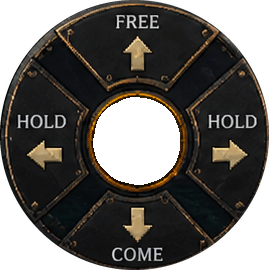
UI Command Wheel (4 Directions)
Architecture Rigoureuse du Contrôle d'Escouade :
• 4 Directions (Roue Tactique) : Haut (FREE), Bas (COME), Gauche (HOLD), Droite (HOLD).
• Maintenir Shift + 1 / 2 / 3 : Sélection instantanée du type de formation (Ligne / Pointe / Cercle).
• Maintenir Shift + D / J / A : Contrôle direct de l'action de l'allié (Défense / Saut / Attaque).
• Maintenir Shift + Combo Martial (D + Haut/Bas + J/A) : Déclenchement chirurgical des compétences signatures de l'allié de Divergency.
Quy Tắc Chuẩn Xác Của Hệ Thống Chỉ Huy :
• 4 Hướng (Bánh Xe Lệnh) : Lên (FREE), Xuống (COME), Trái (HOLD), Phải (HOLD).
• Giữ Shift + 1 / 2 / 3 : Đổi loại đội hình chiến thuật tức thời (Hàng / Mũi nhọn / Vòng tròn).
• Giữ Shift + D / J / A : Điều khiển trực tiếp hành động của NPC (Phòng thủ / Nhảy / Tấn công).
• Giữ Shift + Combo Võ Thuật (D + Lên/Xuống + J/A) : Ra lệnh NPC thi triển tuyệt kỹ đặc chiêu của Divergency.
1. Roue Tactique à 4 Directions (Ordres de Déplacement et Posture)1. Bánh Xe Lệnh 4 Hướng (Điều Phối Di Chuyển và Thế Trận)
Direction / InputHướng Bấm
Ordre TactiqueKhẩu Lệnh
Comportement en Jeu et Rôle TactiqueHành Vi Thực Tế và Ứng Dụng Chiến Thuật
HAUT (Lên)
FREE (Tự Do)
Annule l'ordre en cours et restitue à l'allié son comportement d'intelligence artificielle autonome. Utile pour laisser l'escouade nettoyer la zone à sa guise.
Hủy bỏ lệnh đang gán và trả NPC về trạng thái AI tác chiến tự do. Dùng để kết thúc phân công vị trí khi khu vực đã an toàn.
BAS (Xuống)
COME / REGROUP (Tập Hợp)
L'allié décroche immédiatement et vient se positionner en couverture derrière le joueur. Indispensable pour regrouper les forces avant d'avancer ou extraire l'équipe d'une zone piégée.
Đồng đội lập tức lùi về bọc lót và canh giữ phía sau người chơi. Dùng để gom đội trước khi di chuyển qua cửa ải mới hoặc rút khỏi vùng bẫy nguy hiểm.
GAUCHE (Trái)
HOLD LEFT (Trấn Thủ Cánh Trái)
L'allié prend une position défensive ancrée sur le flanc gauche mondial du joueur. Fixe les vagues ennemies arrivant par la gauche et protège le repli.
NPC chốt chặn một vị trí cố định ở bên trái người chơi theo trục thế giới. Dùng để chặn đứng đợt tràn vào của quân địch từ cánh trái và giữ vững trục đường lui.
DROITE (Phải)
HOLD RIGHT (Trấn Thủ Cánh Phải)
L'allié prend une position défensive ancrée sur le flanc droit mondial du joueur. Barricade le passage face aux renforts surgissant de la droite de l'arène.
NPC chốt chặn một vị trí cố định ở bên phải người chơi theo trục thế giới. Dùng để phong tỏa lối hẹp và chặn các toán tiếp viện xuất hiện từ cánh phải màn khấu.
2. Types de Formation d'Escouade (Shift + 1 / 2 / 3)2. Loại Đội Hình Chiến Thuật (Shift + 1 / 2 / 3)
Touche NumériquePhím Bấm
Type de FormationLoại Đội Hình
Géométrie Tactique et Application PratiqueCấu Trúc Đội Hình và Ứng Dụng Thực Chiến
Maintenir Shift + 1
LINE (Đội Hình Hàng)
Déploie l'escouade sur une ligne frontale étirée. Idéal pour balayer simultanément plusieurs lignes de combat (lanes 2.5D), interdire le débordement des motards ou créer un mur infranchissable sur les quais de Marseille.
Bố trí đồng đội dàn hàng ngang/dọc bao quát toàn bộ bề rộng sàn đấu 2.5D. Rất hữu hiệu để quét sạch các đợt địch tràn lan, ngăn chặn mô tô lạng lách hoặc lập chiến tuyến chắn ngang bến cảng Marseille.
Maintenir Shift + 2
WEDGE (Đội Hình Mũi Nhọn)
Regroupe les combattants en pointe de flèche offensive triangulaire. Maximise la pénétration frontale pour briser la garde des colosses blindés d'Obsworth ou enfoncer le centre de gravité d'un boss.
Gom toàn đội thành mũi giáo tiến công tam giác thọc sâu. Tập trung hỏa lực phá vỡ thế phòng thủ giáp nặng của quân tinh nhuệ Obsworth hoặc đâm xuyên tâm điểm đội hình trùm.
Maintenir Shift + 3
CIRCLE (Đội Hình Vòng Tròn)
Déploie les alliés en cercle défensif à 360°. Assure une protection omnidirectionnelle du centre de la zone, indispensable pour escorter un civil, protéger un allié blessé au sol ou repousser un encerclement.
Dàn đội hình tỏa tròn 360 độ che chắn toàn diện. Đảm bảo bảo vệ an toàn tâm điểm, cực kỳ quan trọng khi hộ tống thường dân, bảo bọc thành viên bị thương hoặc phá thế bao vây từ bốn phía.
3. Contrôle Direct de l'Allié (Shift + D / J / A — Comme Piloter l'Allié en Direct)3. Điều Khiển Trực Tiếp NPC (Shift + D / J / A — Như Trực Tiếp Cầm Lái NPC)
Action CléThao Tác
Ordre DirectLệnh Trực Tiếp
Réactivité Immédiate de l'Allié SélectionnéPhản Ứng Tức Thì Của Đồng Đội Được Chọn
Maintenir Shift + D
DÉFENSE (Phòng Thủ)
L'allié sélectionné lève instantanément sa garde défensive (ex: Block ferme sa garde de boxe pour encaisser puis riposter, Deep pare avec son épée courte).
Đồng đội được chọn lập tức giương thế phòng thủ đỡ đòn (ví dụ: Block khép tay thủ thế boxing để đỡ và phản đòn, Deep dùng kiếm ngắn đỡ đòn).
Maintenir Shift + J
SAUT / MOBILITÉ (Nhảy Né / Cơ Động)
L'allié sélectionné exécute immédiatement un saut d'esquive ou une impulsion de mobilité (franchir un piège au sol, esquiver un tir de barrage, intercepter une cible aérienne).
Đồng đội được chọn lập tức nhảy né đòn hoặc cơ động vượt địa hình (nhảy qua bẫy dưới sàn, né loạt đạn kìm chân, đón đầu kẻ địch trên không).
Maintenir Shift + A
ATTAQUE (Tấn Công Thường)
L'allié sélectionné assène sur-le-champ son enchaînement d'attaque de base sur l'adversaire le plus proche dans son axe frontal.
Đồng đội được chọn lập tức tung chuỗi đòn đánh thường cận chiến vào kẻ thù trước mặt, can thiệp giữ thế trận ngay tức thì.
4. Déclenchement des Compétences par Combos Martiaux Divergency (Shift + D + Haut/Bas + J/A = Skill)4. Kích Hoạt Kỹ Năng Bằng Combo Võ Thuật Divergency (Shift + D + Lên/Xuống + J/A = Skill)
Combo d'Exécution (Divergency)Tổ Hợp Phím (Divergency)
Profil de la CompétenceLoại Tuyệt Kỹ Phát Động
Effet en CombatHiệu Quả Thực Chiến
Shift + D + HAUT + A (Défense + Lên + Tấn công)
Compétence Ascendante / Onde Aérienne
Déclenche la technique de projection verticale ou la vague tranchante montante de l'allié pour expédier l'adversaire dans les airs.
Tung tuyệt chiêu hất tung hoặc chém sóng khí bay lên, đánh bổng kẻ địch để chuẩn bị cho chuỗi combo không chiến.
Shift + D + BAS + A (Défense + Xuống + Tấn công)
Balayage Lourd / Brise-Garde Sol
Déclenche l'attaque lourde au ras du sol brisant la garde des ennemis retranchés et renversant les unités blindées.
Tung đòn trảm sát quét sàn cực mạnh phá vỡ thế thủ kiên cố và đánh ngã hàng loạt kẻ thù giáp nặng.
Shift + D + HAUT + J (Défense + Lên + Nhảy)
Assaut Bondissant / Percée Céleste
L'allié se propulse en avant dans les airs pour combler la distance ou écraser les tireurs juchés en hauteur.
NPC phi thân lướt kích tầm cao, thu hẹp khoảng cách tức thì để tiêu diệt xạ thủ bắn tỉa trên cao.
Shift + D + BAS + J (Défense + Xuống + Nhảy)
Onde de Choc Tellurique / Rempart Zone
L'allié frappe le sol pour générer une décharge défensive de zone repoussant brutalement tous les agresseurs environnants.
NPC nện sàn bộc phá chấn động diện rộng, hất văng mọi kẻ áp sát và thiết lập không gian an toàn cho cả đội.
#L'Escouade des Insoumis · Fiches Visuelles et Synergies des 5 Héros
L'escouade de Divergency repose sur cinq personnalités martiales complémentaires. Chaque héros possède ses propres portées, cadences d'impact, interactions avec les armes au sol et synergies d'équipe :
Đội hình chiến đấu của Divergency quy tụ 5 cá tính võ thuật tương hỗ độc đáo. Mỗi nhân vật sở hữu tầm đánh, tốc độ ra đòn, độ linh hoạt nhặt ném vũ khí và khả năng phối hợp hợp chiêu riêng biệt :
L'Escouade des Insoumis au complet · Direction Artistique Hand-Drawn
1. Solei · Karatéka aux Jambes Mécaniques (Võ Sĩ Karate Chân Máy)
Karaté · Jambes mécaniques avec yeux démoniaques
Rôle : Kicks de karaté, approche rapide et interception aérienne. Ses jambes mécaniques portent des yeux démoniaques. Synergie : Profite du bump de Deep pour enchaîner des coups de pied aériens (Juggle) sans laisser l'ennemi toucher le sol.
Vai trò : Dùng đòn chân karate, bứt tốc áp sát và truy kích; chân máy có mắt quỷ. Hợp chiêu : Đón đầu đối thủ bị Deep hất tung để tung chuỗi đá trên không liên hoàn (Juggle), không cho kẻ địch chạm đất.
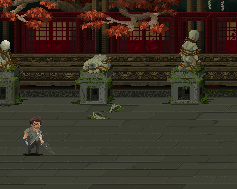
2. Deep · Gladiateur à Épée Courte (Đấu Sĩ Kiếm Ngắn)
Combat de gladiateur · Épée courte
Rôle : Briseur de garde, contrôle de foule et projections lourdes. Synergie : Crée des ouvertures massives en repoussant les boucliers ennemis, offrant un boulevard aux tirs de Mark et aux rushs de Solei.
Vai trò : Phá giáp kiên cố, quét đám đông và hất văng nhiều kẻ thù. Hợp chiêu : Đập vỡ phòng tuyến giáp nặng mở đường cho Mark bắn tên yểm trợ từ xa và Solei luồn ra kết liễu từ phía sau.
3. Mark · Archer Tactique (Cung Thủ Chiến Thuật)
Arc séparable en épées · Lunettes de style laser
Rôle : Tirs à l'arc à distance et combat rapproché avec l'arc séparé en épées. Porte des lunettes de style laser. Synergie : Interrompt les attaques ennemies à distance pour couvrir la retraite d'un allié ou achever les cibles repoussées par Block.
Vai trò : Bắn cung tầm xa, tách cung thành kiếm khi áp sát; đeo kính kiểu laser. Hợp chiêu : Ngắt nhịp niệm chú và đòn đánh của địch từ xa để bọc lót đồng đội rút lui hoặc dứt điểm kẻ địch bị Block chặn lại.
4. Block · Boxeur Protecteur (Võ Sĩ Boxing Bảo Vệ Đồng Đội)
Boxe · Coups de poing, coups de pied et garde
Rôle : Boxeur noir, spécialisé dans les coups de poing, les coups de pied et la garde défensive. Synergie : Protège Mark et Tulas avec sa garde de boxe et repousse les assaillants par ses contres.
Vai trò : Da đen; chuyên boxing, đấm, đá và đỡ đòn để bảo vệ tuyến sau. Hợp chiêu : Giữ thế thủ boxing, đỡ đòn rồi đấm phản công để tạo khoảng trống cho Mark và Tulas.
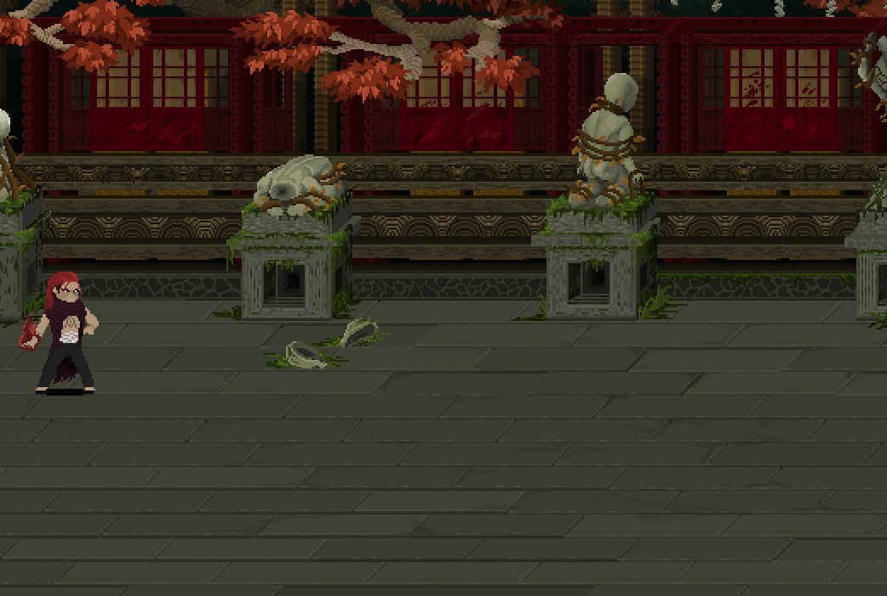
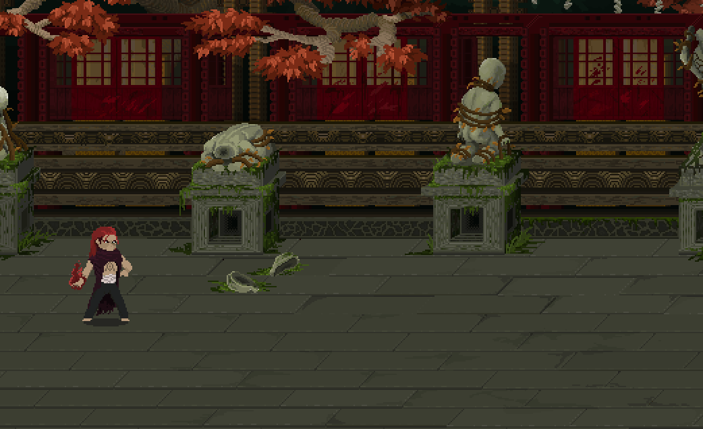
5. Tulas · Maître des Fluides & du Sang (Bậc Thầy Huyết Thuật)
Magie du sang · Marque en croix sur la poitrine
Rôle : Mage du sang portant une marque en croix sur la poitrine ; immobilise les ennemis et crée des barrières liquides. Synergie : Fige au sol des grappes d'assaillants avec ses liens de sang, préparant le terrain pour l'attaque à l'épée courte de Deep.
Vai trò : Phép thuật máu; có dấu chữ thập ở ngực; khống chế và tạo màn chắn chất lỏng. Hợp chiêu : Trói chân toàn bộ toán lính địch bằng bẫy huyết thuật, gom gọn mục tiêu để Deep áp sát bằng kiếm ngắn theo thế đấu sĩ.
À l'heure où l'irruption de l'intelligence artificielle générative suscite de profondes inquiétudes dans les industries culturelles, Divergency revendique une identité 100 % artisanale, dessinée à la main image par image (Hand-Drawn Frame-by-Frame) par des artistes indépendants. Aucun sprite, aucune animation martiale, aucun décor en jeu n'est issu de modèles de génération algorithmique.
Pourquoi c'est l'argument décisif devant les commissions de la Région Sud et du CNC ? Les fonds publics ont pour vocation première de soutenir les créateurs humains, d'encourager la transmission des savoir-faire et d'assurer une juste rémunération aux artistes locaux. Afficher un processus 100 % fait main garantit au jury que chaque euro d'aide publique récompense directement le talent et le travail de dessinateurs et d'animateurs du territoire.
Trong bối cảnh AI tạo sinh gây tranh cãi và làm suy giảm giá trị nghệ thuật nguyên bản, Divergency kiên định theo đuổi tôn chỉ 100% vẽ tay thủ công từng khung hình (Hand-Drawn Frame-by-Frame / Pixel Art Artisanal) bởi các họa sĩ độc lập thực thụ. Tuyệt đối không sử dụng hình ảnh sinh tự động từ AI trong bất kỳ tài sản đồ họa nào của trò chơi.
Tại sao đây là điểm tựa sống còn khi xin trợ cấp Région Sud và CNC ? Các quỹ nhà nước của Pháp được sinh ra để bảo vệ việc làm sáng tạo của con người, phát huy tài năng thủ công mỹ thuật và nuôi dưỡng nghệ sĩ địa phương. Cam kết 100% vẽ tay thủ công là bảo chứng đạo đức nghề nghiệp cao nhất, giúp hồ sơ nhận được sự đồng thuận tuyệt đối từ các hội đồng nghệ thuật khó tính.
Le parti pris visuel de Divergency marie le charme nostalgique du pixel art d'arcade à la technologie d'éclairage moderne :
60 images par seconde constantes : Rigueur indispensable pour un jeu d'action compétitif, garantissant une lisibilité optimale de chaque coup porté.
Éclairage volumétrique méditerranéen : Le moteur Unity restitue la luminosité écrasante des journées marseillaises tout comme la pénombre poisseuse des canaux souterrains.
Bande originale immersive : Création sonore orchestrée à Marseille, fusionnant rythmes électroniques percutants et mélodies méditerranéennes acoustiques.
Ngôn ngữ hình ảnh của Divergency kết nối hoài niệm của pixel art arcade kinh điển với công nghệ chiếu sáng 3D tân tiến :
Chuẩn mực 60 khung hình mỗi giây : Tiêu chuẩn tối quan trọng cho một tựa game đối kháng hành động, đảm bảo quan sát rõ ràng từng động tác ra đòn và thời điểm bấm nút.
Ánh sáng thể tích Địa Trung Hải : Công nghệ Unity tái hiện trung thực ánh nắng gay gắt ban trưa tại Marseille đối lập với bóng tối ẩm ướt trong lòng các kênh ngầm.
Âm nhạc nguyên bản lôi cuốn : Bản phối âm thanh sáng tác tại Marseille, hòa quyện nhịp điện tử dồn dập cùng giai điệu mộc mạc của nhạc cụ Địa Trung Hải.
#6. Modèle Économique, Financement et Retombées Régionales
Pour assurer la pérennité de la production, TriLinkage s'appuie sur un montage financier diversifié associant capitaux propres, financement participatif international et aides publiques sélectives en France.
Để đảm bảo quá trình phát triển game diễn ra vững chắc và đúng tiến độ, TriLinkage xây dựng cấu trúc tài chính đa nguồn kết hợp vốn tự có, huy động vốn cộng đồng quốc tế và các gói tài trợ nhà nước chuyên ngành tại Pháp.
#Plan de Financement Prévisionnel Réaliste (Kế hoạch tài chính tinh gọn & khả thi)
Conçu à taille humaine pour garantir une exécution rigoureuse sans dérive budgétaire, Divergency calibre son budget de production prévisionnel à 28 000 €. Ce montage privilégie le soutien direct de la communauté (Kickstarter à 20 000 €) et recherche auprès de la Région Sud un parrainage officiel modeste (5 000 €) attestant de la reconnaissance institutionnelle du projet sans peser sur les deniers publics.
Được thiết kế tinh gọn theo quy mô studio độc lập thực chiến, Divergency tối ưu hóa ngân sách sản xuất trọn vẹn ở mức 28 000 €. Cấu trúc tài chính này dựa trên sự ủng hộ trực tiếp từ cộng đồng người chơi (Kickstarter 20 000 €) và hướng tới một khoản bảo chứng chính thức khiêm tốn từ Région Sud (5 000 €) nhằm mang lại dấu ấn công nhận của chính quyền địa phương mà không gây áp lực ngân sách công.
Source de FinancementNguồn Tài Trợ
Montant (€)Số Tiền (€)
PartTỷ Lệ
Objectif OpérationnelMục Tiêu Sử Dụng
Campagne KickstarterHuy Động Kickstarter
20 000 €
71 %
Validation communautaire internationale, précommandes Steam et production des contreparties physiques/numériques.
Kiểm chứng sức hút cộng đồng quốc tế, lượng pre-order Steam và kinh phí hoàn thiện phần thưởng.
Région Sud · Soutien & Label OfficielQuỹ Vùng Région Sud (Bảo chứng chính thức)
5 000 €
18 %
Aide sélective modeste (Bourse d'émergence / prototypage) scellant le soutien officiel de la Région, 100 % réinvestie dans des prestations créatives locales.
Khoản tài trợ khiêm tốn (Aide émergence) mang tính bảo chứng chính thức từ chính quyền Vùng, cam kết 100% chi trả cho nghệ sĩ âm thanh/vẽ tay tại Marseille.
Fonds Propres Directs TriLinkageVốn Tự Có Trực Tiếp (Chi phí thực tế)
3 000 €
11 %
Frais directs engagés en matériel informatique, licences de logiciels de création et frais de distribution Steam.
Chi phí thực tế đã thanh toán cho dàn máy tính, bản quyền phần mềm thiết kế và phí mở cổng phát hành Steam.
TOTAL BUDGET PRODUCTIONTỔNG NGÂN SÁCH SẢN XUẤT
28 000 €
100 %
Budget réaliste et sécurisé pour finaliser la sortie commerciale sur Steam.
Ngân sách an toàn, thực tế để đưa game đến ngày phát hành chính thức trên Steam.
💡 Clarification Comptable : Pourquoi 5 000 € d'Aide et Comment Situer les 6 Ans de Travail ?Giải Trình Kế Toán : Vì Sao Xin 5 000 € Và Cách Thể Hiện 6 Năm Công Sức Tác Giả ?
• La recherche d'un « Label Officiel » (5 000 €) : Plutôt qu'une demande financière lourde, le projet sollicite l'appui officiel de la Région Sud sous forme d'une bourse d'émergence/prototypage de 5 000 €. Cette labellisation apporte une crédibilité inestimable auprès des souscripteurs internationaux sur Kickstarter et Steam tout en garantissant un ratio d'aide publique minimaliste (18 % du budget total, très en deçà du plafond légal européen de 50 %).
• Comment sont comptabilisées les 6 années de développement ? Dans un dossier de subvention, le budget prévisionnel ne finance que les dépenses futures nécessaires à la sortie. Les 6 années de recherche et développement autodidactes constituent la Garantie Technique et la Preuve de Faisabilité (Vertical Slice) : elles prouvent aux jurés la ténacité de l'auteur et l'existence d'un jeu déjà jouable.
• Fonds propres (3 000 €) : Ce montant correspond rigoureusement aux dépenses directes réelles et vérifiables (postes de travail, licences logicielles, abonnements, frais de dépôt Steam), évitant toute complication comptable liée à la surévaluation arbitraire d'un bénévolat passé.
• Mục tiêu chính là « Dấu Ấn Bảo Chứng Chính Thức » (5 000 €) : Thay vì xin khoản tiền lớn, dự án chỉ xin một gói hỗ trợ khiêm tốn 5 000 € để nhận quyền mang danh hiệu *"Avec le soutien de la Région Sud"*. Con dấu bảo chứng này tạo niềm tin cực lớn cho cộng đồng quốc tế trên Kickstarter và Steam, đồng thời tỷ lệ trợ cấp công chỉ chiếm 18% ngân sách (rất an toàn, nằm sâu dưới mức trần 50% của luật tài trợ Pháp/Châu Âu).
• Công sức 6 năm phát triển được tính vào đâu ? Trong kế toán hồ sơ tài trợ, bảng ngân sách chỉ tính chi phí dự kiến sắp tới để ra mắt game, không dùng để hoàn tiền cho quá khứ. Toàn bộ 6 năm tâm huyết chính là Bảo Chứng Năng Lực & Bản Demo Thực Tế (Vertical Slice) : nó là bằng chứng thuyết phục nhất chứng minh tác giả có thừa kiên trì và tự chủ kỹ thuật để đưa tác phẩm về đích.
• Vốn tự có (3 000 €) : Con số này chỉ tính chi phí tiền mặt thực tế đã chi trả (mua máy tính, bản quyền phần mềm Unity/Aseprite, phí mở trang Steam), vừa trung thực, vừa dễ kiểm toán mà không cần phải đau đầu quy đổi hàng nghìn giờ công quá khứ thành tiền tệ.
#Calendrier de Production et Jalons (Tiến độ bàn giao)
PériodeThời Gian
Jalon (Milestone)Cột Mốc Phát Triển
Livrables Transmis aux PartenairesSản Phẩm Bàn Giao Hội Đồng
T4 2026
Campagne Kickstarter et Dépôt des Dossiers
Chiến Dịch Kickstarter và Nộp Hồ Sơ Quỹ
Campagne publique lancée, dossiers déposés auprès de la Région Sud et du CNC FAJV.
Mở chiến dịch gọi vốn, hoàn tất nộp hồ sơ xin tài trợ lên vùng Région Sud và CNC FAJV.
T1 2027
Jalon Alpha · Écosystème Marseille Finalisé
Mốc Alpha · Hoàn Thiện Toàn Bộ Hồi Marseille
Périmètre complet du Prologue et du Chapitre 1 (Armorlite, Laundel, Hangar J4, Don Malo & MuCEM).
Đóng gói hoàn chỉnh màn mở đầu và Chương 1 (Quán Armorlite, thành ngầm Laundel, cảng Hangar J4, trùm Don Malo & MuCEM).
T2 2027
Jalon Bêta · Chapitres 2 et 3 Intégrés
Mốc Beta · Tích Hợp Chương 2 và 3
Déploiement des environnements Sakuri et Calvaria, finalisation des arbres de talents des héros.
Đưa vào hoạt động các màn chơi đền Sakuri và hẻm núi Calvaria, mở rộng cây kỹ năng cho năm chiến binh.
T3 2027
Jalon Gold · Campagne Complète et Polish
Mốc Gold · Tinh Chỉnh và Bản Địa Hóa
Intégration des Chapitres 4 et 5, équilibrage multi-niveaux et localisation multilingue.
Hoàn tất hai chương cuối, cân bằng chỉ số chiến đấu và bản địa hóa đa ngôn ngữ (Pháp, Anh, Việt, Trung).
T4 2027
Sortie Commerciale Mondiale
Phát Hành Thương Mại Toàn Cầu
Lancement public sur PC Steam et Steam Deck, clôture administrative auprès des organismes d'aide.
Phát hành chính thức trên Steam và Steam Deck, thực hiện báo cáo nghiệm thu với các cơ quan tài trợ.
#Retombées Territoriales pour Marseille et la Région Sud
Emplois créatifs locaux : L'ensemble des sommes allouées par les fonds régionaux est dépensé sur le territoire métropolitain pour rémunérer des artistes 2D, des programmeurs et des créateurs sonores installés à Marseille.
Insertion des jeunes diplômés : Coopération active avec les formations supérieures de la région (Pôle Média Belle de Mai, universités et écoles spécialisées) pour accueillir des stagiaires sur des missions concrètes.
Rayonnement international de la culture régionale : Exposition de la géographie et du patrimoine marseillais auprès de dizaines de milliers de joueurs sur le marché mondial.
Tạo việc làm sáng tạo tại địa phương : Toàn bộ kinh phí hỗ trợ từ vùng được cam kết chi tiêu trong khu vực để ký hợp đồng lao động với họa sĩ 2D, kỹ sư phần mềm và nhạc sĩ làm việc tại Marseille.
Đào tạo và kết nối nhân tài trẻ : Hợp tác chặt chẽ với các cơ sở đào tạo truyền thông và công nghệ trong vùng (Vườn ươm Belle de Mai, các trường đại học) để tiếp nhận thực tập sinh tham gia dự án thực tế.
Quảng bá văn hóa ra thị trường quốc tế : Lan tỏa vẻ đẹp cảnh quan và di sản đặc trưng của vùng biển Marseille đến hàng chục nghìn game thủ trên khắp thế giới.
Volet 2 · Coulisses et Travail Interne
Feuille de route opérationnelle et démarches du studio TriLinkage
Kế hoạch triển khai nội bộ và danh bạ cơ quan thẩm định
#7. Annuaire Ciblé des Contacts Institutionnels (Coulisses)
Ce répertoire ne retient que les interlocuteurs opérationnels réellement dédiés au jeu vidéo et au soutien public en Région Sud et au niveau national.
Danh bạ này tập trung đúng những đầu mối phụ trách trực tiếp lĩnh vực game và hỗ trợ vốn nhà nước tại vùng Région Sud và cấp quốc gia Pháp.
Niveaux de priorité :★ Priorité 1 (Stratégique et Sectoriel)★ Priorité 2 (Instruction Administrative et Incubation)★ Priorité 3 (Hébergement et Trésorerie)
PrioritéMức Ưu Tiên
Organisme et DispositifCơ Quan Quản Lý
Contact DirectNgười Phụ Trách
Objectif OpérationnelMục Đích Liên Lạc
Priorité 1
Région Sud · Fonds Jeu Vidéo
Direction de la Culture et des Industries Créatives
Services : Conseils juridiques, ateliers financiers, accès aux réseaux d'éditeurs et locaux adaptés.
Atout : Situé au cœur du pôle audiovisuel et numérique marseillais.
#8. Modèles de Courriels Professionnels Prêts à l'Envoi
Ces trois courriels sont rédigés selon les règles de courtoisie administrative en France. Ils mettent en valeur la trajectoire du fondateur doctorant, l'ancrage marseillais et l'existence d'une démonstration jouable déjà fonctionnelle.
Ba bức thư điện tử dưới đây được biên soạn chuẩn theo văn phong ngoại giao và hành chính tại Pháp. Nội dung nêu bật tư cách nghiên cứu sinh của người sáng lập, tình cảm gắn bó với Marseille và lời mời trải nghiệm bản game mẫu đã vận hành mượt mà.
#Courriel 1 · Florian Cabane (Région Sud · Chargé de mission)
Objet : Présentation du projet Divergency (Studio TriLinkage à Marseille) · Échange préalable Fonds Régional
Monsieur Cabane, bonjour,
Je me permets de vous contacter en votre qualité de chargé de mission jeu vidéo et industries créatives au sein de la Région Sud.
Chercheur doctorant d'origine vietnamienne et résidant en France depuis dix ans, j'ai choisi Marseille comme terre d'adoption pour fonder le studio TriLinkage. Nous y concevons Divergency, un Tactical Brawler 2.5D narratif sur PC et consoles, conçu comme un pont culturel entre le dynamisme des classiques d'arcade asiatiques et la richesse narrative européenne.
Le premier chapitre de l'aventure prend directement racine dans le patrimoine marseillais : le Vieux-Port, les terminaux portuaires de Fos, le quartier de Noailles et les galeries souterraines inspirées du Tunnel du Rove. Le jeu associe combat au corps à corps et ordres tactiques d'escouade en temps réel avec le système COMMAND.
Nous disposons d'une vertical slice jouable démontrant la solidité des mécaniques à 60 images par seconde :
- Documentation complète du projet : https://kslhuy.github.io/divergency-reviewer-site/
- Campagne de financement participatif prévue pour l'automne 2026.
Dans la perspective de solliciter le Fonds d'Aide au Jeu Vidéo de la Région Sud pour soutenir la production et consolider nos emplois créatifs locaux, nous serions honorés de pouvoir échanger avec vous lors d'un rendez-vous à Marseille ou en visioconférence pour vous faire essayer notre démonstration.
En vous remerciant sincèrement pour l'attention portée à notre démarche, je vous prie d'agréer, Monsieur Cabane, l'expression de mes salutations distinguées.
L'équipe TriLinkage
Marseille · contact@divergencygame.com
#Courriel 2 · Isabelle Manca (Région Sud · Gestion administrative)
Objet : Renseignements administratifs · Fonds d'Aide au Jeu Vidéo Région Sud · Studio TriLinkage Marseille
Madame Manca, bonjour,
Porteur du projet de jeu vidéo indépendant Divergency et installé à Marseille, le studio TriLinkage prépare la constitution de sa demande d'aide au titre du Fonds d'Aide au Jeu Vidéo de la Région Provence-Alpes-Côte d'Azur.
Afin de calibrer notre calendrier de dépôt dans le strict respect de vos procédures, nous souhaiterions obtenir les précisions suivantes :
1. Les dates limites de dépôt pour les prochaines commissions régionales de sélection.
2. La trame du budget prévisionnel normalisé et la liste à jour des pièces justificatives demandées.
3. Les modalités de justification de l'ancrage territorial pour les dépenses réalisées en Région Sud.
Je vous remercie vivement pour votre accompagnement et demeure à votre disposition pour toute information complémentaire.
Bien cordialement,
L'équipe TriLinkage
Marseille · contact@divergencygame.com
#Courriel 3 · Secrétariat FAJV CNC (Aide à la Pré-production)
Madame, Monsieur les membres du secrétariat du FAJV,
Le studio indépendant TriLinkage, basé à Marseille, développe actuellement Divergency, un Tactical Brawler 2.5D narratif sur PC et consoles combinant jouabilité d'arcade et ordres tactiques d'escouade.
Nous disposons d'une démonstration jouable sur Unity illustrant nos mécaniques de combat et l'univers du premier chapitre ancré dans la géographie méditerranéenne marseillaise.
Nous préparons une demande d'aide au titre du Fonds d'Aide au Jeu Vidéo (volet pré-production). Nous souhaiterions solliciter une confirmation des dates limites de dépôt pour la prochaine session d'examen et obtenir les éventuelles recommandations particulières concernant la transmission de notre exécutable.
En vous remerciant par avance pour votre retour, nous vous adressons nos salutations respectueuses.
L'équipe TriLinkage
Marseille · contact@divergencygame.com
L'obtention d'une subvention publique en France répond à un formalisme rigoureux. Cette section récapitule les six documents clés exigés par les comités du CNC et de la Région Sud, accompagnés des critères d'éligibilité indispensables.
Việc xin tài trợ vốn từ các quỹ nhà nước tại Pháp đòi hỏi tính chuẩn mực và kỷ luật hồ sơ rất cao. Phần này tóm tắt sáu văn bản bắt buộc theo quy định của CNC và vùng Région Sud, kèm theo các tiêu chí kiểm tra tính hợp lệ trước khi nộp.
Les jurys du CNC et de la Région Sud apprécient particulièrement les auteurs capables de résumer la proposition de valeur de leur jeu dès la première minute. Présentez l'identité originale de Divergency et montrez immédiatement comment le système COMMAND et l'atmosphère méditerranéenne renouvellent l'expérience pour le public moderne.
Lời khuyên khi thuyết trình trực tiếp trước hội đồng
Các chuyên gia chấm giải của CNC và vùng rất ấn tượng với những người sáng lập có thể cô đọng sự độc đáo của trò chơi ngay trong phút đầu tiên. Hãy nêu rõ bản sắc riêng của Divergency và lập tức minh chứng cơ chế lệnh COMMAND cùng chất liệu Địa Trung Hải làm mới thể loại game này như thế nào.
#10. Feuille de Route Interne et Backlog des Livrables
Ce tableau de bord récapitule les chantiers que l'équipe TriLinkage doit exécuter en coulisses pour finaliser la candidature et soumettre un dossier irréprochable aux commissions de financement.
Bảng điều phối này tổng hợp toàn bộ các đầu việc hậu trường mà đội ngũ TriLinkage cần hoàn thành để chuẩn bị chu đáo trước ngày chính thức gửi hồ sơ xin tài trợ.
ChantierHạng Mục
Statut ActuelTrạng Thái
Livrable Concret AttenduKết Quả Cần Đạt
Échéance et ResponsableHạn Định và Phụ Trách
1. Décors artistiques en attente
⏳ À compléter / Cần hoàn thành
Dessiner les deux concepts arts manquants : l'anse de fuite du Vallon des Auffes et la passerelle fortifiée du Mucem.
Vẽ hoàn thiện hai bức tranh ý niệm còn thiếu : vịnh thoát hiểm Vallon des Auffes và cầu cảng Mucem.
Fin octobre 2026 · Direction Artistique
Cuối tháng 10/2026 · Phụ trách Mỹ thuật
2. Démonstration Unity
✅ Prêt à 90 % / Hoàn tất 90 %
Contrôle des boîtes de collision des cinq héros et export de l'archive exécutable pour les jurés.
Kiểm tra hộp va chạm của năm nhân vật và đóng gói bản nén hoàn chỉnh gửi cho hội đồng chấm.
Immédiat · Lead Programmeur
Ngay trong tuần · Kỹ sư trưởng
3. Vidéo de gameplay commentée
⏳ En cours / Đang thực hiện
Capturer cinq minutes de combat continu sans accroc avec voix d'explication et sous-titres bilingues.
Quay video chơi mẫu năm phút không ngắt quãng có thuyết minh quy trình ra đòn và phụ đề song ngữ.
Début novembre 2026 · Studio TriLinkage
Đầu tháng 11/2026 · Đội ngũ Studio
4. Budget normalisé Excel CNC
✅ Cadré / Đã lên khung
Ventiler les 28 000 € (Kickstarter 20 k€, Région Sud 5 k€, Studio 3 k€) selon la nomenclature analytique officielle.
Điền chi tiết tổng ngân sách 28 000 € (Kickstarter 20k, Région Sud 5k, Vốn tự có 3k) theo đúng mẫu biểu kế toán chuẩn.
Avant dépôt · Direction de Production
Trước ngày nộp · Quản lý dự án
5. Prise de contact institutionnelle
📅 Planifié / Đã lên lịch
Transmettre le courriel de présentation amont à Florian Cabane avec lien de test sécurisé.
Gửi email giới thiệu sơ bộ cho chuyên viên Florian Cabane kèm đường link tải game bảo mật.
Dès validation vidéo · Fondateur
Sau khi có video mẫu · Người sáng lập
Objectif de fin d'année pour le studio TriLinkage
La finalisation de ces livrables garantit une présentation sereine et percutante de Divergency face aux commissions. Chaque pièce produite servira également de socle pour la communication auprès des contributeurs Kickstarter et des éditeurs internationaux.
Mục tiêu trọng tâm cuối năm của studio TriLinkage
Việc hoàn tất các đầu việc trên bảo đảm hồ sơ Divergency đạt chất lượng cao nhất khi trình diện trước các cơ quan tài trợ. Từng tài liệu chuẩn bị lần này cũng sẽ là tư liệu quý giá phục vụ trực tiếp cho chiến dịch Kickstarter và các buổi làm việc với nhà phát hành quốc tế.
Vibe · Video dài · Shorts
YouTube Devlog
Chọn câu chuyện đáng kể từ Divergency: format hợp tư liệu, ý tưởng series, kịch bản và danh sách cảnh cần quay.
Read
25 min
Sections
8
Tables
9
Devlog Divergency: kể chuyện làm game
Vibe chủ đạo: một nhóm nhỏ cùng giải một bài toán làm game. Gần gũi ở giọng kể, có chất dark fantasy ở hình và âm thanh. Mỗi video trả lời một câu hỏi cụ thể bằng tư liệu thật.
Bạn có video call, thảo luận, ảnh quá trình cũ và một ít video vẽ; gameplay còn hạn chế. Đây là nguyên liệu tốt cho hậu trường quyết định thiết kế. Không cần chờ quay đủ cả game mới bắt đầu. Các clip cá nhân này chưa được xem trực tiếp; kịch bản bên dưới có phương án thay khi không tìm được đoạn phù hợp.
Làm trước · Video dài
Deep phá thế. Block giữ tuyến.
4–6 phút về việc tạo hai nhân vật tuyến trước có vai trò khác nhau. Artwork, sơ đồ và lời kể mới đủ để dựng bản phân tích thiết kế.
Lựa chọn biên tập: giọng kể tự nhiên, hơi dí dỏm khi có tình huống thật; hình pixel art tối, nhấn màu từ nhân vật; nghe rõ tiếng người và tiếng game. Không cần facecam. Call là điểm nhấn ngắn, lời dẫn mới nối câu chuyện.
Người xem chính: người thích action/brawler, phối hợp nhân vật và pixel art. Kể hệ quả mà họ cảm nhận được khi chơi trước, giải thích kỹ thuật sau. Các thời lượng và lịch đăng ở đây là đề xuất để thử, không phải công thức của thuật toán.
Chọn vibe và cách kể
Chọn “nhật ký nhóm + bài toán thiết kế” làm nền. Dùng chất điện ảnh dark fantasy cho mở cảnh, chuyển đoạn và đoạn kết; giữ lời nói mộc để người xem thấy con người phía sau game. Mỗi tập có cấu trúc: câu hỏi → cách nghĩ → hình minh họa hoặc thử nghiệm → điều đã hiểu và bước tiếp theo.
Vibe
Cảm giác và cách dựng
Hợp Divergency đến đâu?
Nhật ký nhóm chân thật
Lời dẫn gần gũi, 5–12 giây call đúng điểm, ảnh cũ có ngày hoặc phiên bản, thừa nhận điều đang thử.
Ưu tiên cao. Dùng được tư liệu đang có. Cần chọn một câu chuyện thay vì ghép nguyên buổi họp.
Giải một bài toán thiết kế
“Vì sao cần hai người tuyến trước?” Sơ đồ gọn, so sánh hai lựa chọn, kết luận có giới hạn.
Trục chính. Lệnh đồng đội, Deep/Block và Tulas có câu hỏi rõ. Có thể dùng hình tĩnh khi đang bàn ý tưởng.
Dark fantasy giàu không khí
Khung cảnh tối, chuyển động chậm trên artwork, âm thanh môi trường, lời kể tiết chế.
Lớp hình ảnh bổ trợ. Hợp Marseille/Bastonne và thiết kế thế giới; làm tập riêng ngắn khi có hình đủ mạnh.
Xưởng pixel art yên tĩnh
Cận một chi tiết, âm thanh bút hoặc lời bình, từ silhouette đến kết quả.
Series phụ. Ít video vẽ vẫn làm được “đọc lại thiết kế”. Chỉ gọi là timelapse khi có quá trình thật.
Hài tình huống / bug diary
Mở bằng lỗi thật, phản ứng thật, cắt nhanh ở cú chốt rồi giải thích.
Dùng khi có chuyện. Không gán câu đùa hay tranh cãi cho call chưa xem; không phải buổi call nào cũng có highlight.
Devlog kỹ thuật / tutorial
Code, công cụ, phân tích AI hoặc animation.
Để sau hoặc tập chuyên đề. Hợp người làm game, cần quay màn hình mới; khó giới thiệu sức hấp dẫn của game nếu chỉ có editor.
Một bộ quy tắc hình và tiếng đủ dùng
Giọng: nói như giải thích cho một người bạn mê game. Viết câu ngắn, đọc thử thành tiếng; giữ một chút ngập ngừng hoặc tiếng cười thật nếu vẫn rõ ý.
Hình: dùng artwork của chính Divergency, zoom vào chi tiết đang nói, nhãn ngắn và mũi tên có mục đích. Đặt hai hình cạnh nhau khi cần so sánh.
Nhịp: thay hình khi ý thay đổi. Sau đoạn giải thích, để vài giây cho người xem tự đọc được tình huống. Không cần lắc/zoom ở mọi câu.
Âm thanh: lời dẫn rõ, nhạc nền thấp; giảm nhạc khi phát call. Dùng nhạc/âm thanh được phép sử dụng, ưu tiên tiếng game đã có.
Ngôn ngữ: mặc định lời dẫn tiếng Việt tự nhiên + phụ đề Anh được kiểm tra. Nếu bạn đọc tiếng Anh thoải mái, thu bản Anh riêng. Call tiếng Việt vẫn giữ được cá tính với phụ đề Anh; không cần lồng giả giọng cả nhóm.
Mở video: cho thấy câu hỏi hoặc hình tương phản trước logo. Đặt tên “Vì sao đội này cần hai người tuyến trước?”; “Divergency Devlog 01” làm phần phụ.
Không ép vào vibe: trailer hoành tráng mỗi tuần tốn cảnh đẹp; tổng kết mọi việc trong tháng dễ thiếu trọng tâm; “làm game trong X ngày” chỉ hợp khi thật sự có thử thách đó. Với tư liệu hiện tại, một quyết định nhỏ được kể trọn vẹn đáng làm hơn.
Các format video nên làm
Chọn theo tư liệu chứng minh được câu chuyện. “Làm ngay” nghĩa là có thể dựng từ tài liệu/artwork và lời thu mới; ảnh cũ, call và clip vẽ cá nhân vẫn cần bạn lựa chọn. Công sức là ước lượng tương đối cho nhóm, không phải thời gian cam kết.
Format
Video dài
Short độc lập
Tư liệu / công sức
1. Một quyết định thiết kế Ưu tiên 1
4–6 phút: câu hỏi → hai lựa chọn → lý do chọn → việc cần thử.
30–50s: một khác biệt có ý nghĩa.
Artwork + sơ đồ + voice-over. Làm ngay · vừa.
2. Từ ảnh cũ đến hiện tại
3–5 phút: chọn 3 thay đổi, giải thích vì sao thay đổi.
20–35s: trước/sau một chi tiết.
Cần cặp ảnh cùng đối tượng, xác minh thứ tự phiên bản. Sau khi chọn ảnh · thấp.
3. Một khoảnh khắc trong call
4–6 phút: đặt bối cảnh → clip call → quyết định → kết quả hoặc câu hỏi còn mở.
25–40s: một câu hỏi thật + hình giải thích.
Call rõ tiếng, có điểm chốt. Không cần webcam. Sau khi nghe lại · vừa.
4. Hồ sơ thiết kế nhân vật
4–7 phút: vai trò, silhouette, một lựa chọn kỹ năng, giới hạn.
25–45s: “Deep phá thế; Block giữ tuyến”.
Artwork, tài liệu nhân vật; gameplay tùy luận điểm. Làm ngay bản thiết kế · vừa.
5. Mổ xẻ một cơ chế
4–6 phút: vấn đề, cách dùng, một lần thất bại, một lần thành công.
35–50s: Hold → Regroup trong một tình huống.
Cần footage build xác nhận. Quay thêm · vừa.
6. Combo lab
3–5 phút: nhịp, khoảng cách, phản ứng địch, điều kiện hụt.
15–30s: sai nhịp / đúng nhịp.
Cần hai take so sánh cùng điều kiện. Hoạt cảnh chỉ làm bản giải thích ý tưởng. Quay thêm · cao.
7. Xưởng hình ảnh
3–5 phút: bóc tách một pose, một màu hoặc một góc cảnh.
15–30s: chi tiết → toàn cảnh.
Ít clip vẽ vẫn dùng artwork và quay màn hình đánh dấu mới. Làm ngay bản bình luận · thấp/vừa.
8. Làm một nơi kể chuyện
4–6 phút: nhìn Bastonne/Marseille qua đường đi, ánh sáng và một tình huống.
25–40s: một căn phòng gợi cảm giác gì?
Art môi trường + sơ đồ thiết kế. Không nói màn đã chơi được nếu chưa quay. Làm ngay bản art/design · vừa.
9. Bug và cách sửa
3–5 phút: lỗi → giả thuyết → thử → kiểm tra lại.
15–35s: lỗi hài thật và kết quả sửa.
Phải giữ clip lỗi trước khi sửa. Chờ có tư liệu · vừa.
10. Nhật ký một cột mốc
5–8 phút: một mục tiêu, trở ngại, thứ đã xong, bước tiếp.
20–40s: đúng một thay đổi rõ nhất.
Cần tư liệu theo thời gian; hợp sau vài vòng sản xuất. Để sau · cao.
Nếu chỉ có ảnh: chọn 1, 4 hoặc 7. Nếu có call hay: chọn 3 và dựng thêm hình cho nội dung được nói. Nếu có cặp trước/sau: chọn 2. Nếu quay được gameplay: ưu tiên 5, rồi mới làm 6.
Video dài xây bối cảnh và cho thấy suy nghĩ của nhóm. Short nên tự trả lời một câu hỏi nhỏ, có hình chứng minh và kết thúc riêng. Có thể dùng chung nguồn hình, nhưng viết lại mở đầu và nhịp dựng cho Short.
Ý tưởng series từ Divergency
Thứ tự dưới đây ưu tiên khả năng làm với tư liệu hiện tại. “Thiết kế” mô tả ý định trong tài liệu; “cần quay build” yêu cầu kiểm tra bằng gameplay mới. Đây là đề xuất tập, chưa phải lịch sản xuất đã chốt.
Tập / tiêu đề để thử
Câu chuyện và đoạn Short đi cùng
Nguồn / mức sẵn sàng
01 · Vì sao đội này cần cả Deep lẫn Block? Why Our Brawler Needs Two Frontliners
Phá thế phòng thủ và tạo vùng an toàn là hai việc khác nhau. Short: “Cùng tuyến trước, khác nhiệm vụ”.
04 · Tulas có thể làm gì ngoài gây sát thương? Designing a Support Fighter
Chọn một ý tưởng hỗ trợ, chẳng hạn bệ hoặc khiên; giải thích nó tạo lựa chọn nào, rồi nói điều còn phải thử.
Vai trò Tulas trong tài liệu gameplay. Thiết kế; không gộp mọi năng lực thành tính năng đã có.
05 · Một câu hỏi từ buổi call của nhóm The Question Behind This Design
Lấy đúng một câu hỏi được nói trong call và đối chiếu bản thiết kế hiện tại. Short: câu hỏi → quyết định hoặc vấn đề còn mở.
Video call cá nhân chưa xem. Chỉ làm khi tìm được đoạn có nội dung.
06 · Bastonne phải khiến người chơi cảm thấy gì? Building the Mood of Bastonne
Hình nhà tù, bố cục lối đi, cảm giác cứu người và rút lui. Giữ spoiler ở tiền đề nhiệm vụ.
Thiết kế màn, artwork Stage 1. Art/design; gameplay tùy build.
07 · Vì sao hai đòn mạnh vẫn combo hụt? Why This Team Combo Misses
Cùng cặp nhân vật, sai thời điểm và đúng thời điểm. Short mở bằng cặp cảnh so sánh.
Tulas × Block / Tulas × Deep là nguồn ý tưởng local. Preview minh họa; cần footage thực để kết luận về combo.
08 · Thử làm một đòn đánh “nặng” hơn Making One Hit Feel Heavier
Chọn một thay đổi thật về pose, timing, âm thanh hoặc phản ứng trúng đòn; so sánh trên cùng cảnh.
GIF/animation và hai bản capture cần chuẩn bị. Cần cặp A/B; không bịa lịch sử sửa.
Giữ lại cho giai đoạn sau: Stranger/Độ Nhiễu, Heni và các chương cuối có ý tưởng mạnh nhưng dễ tiết lộ truyện hoặc tạo lời hứa vượt build. Khi làm, trình bày như một bài toán thiết kế và xác nhận phạm vi spoiler trước khi xuất bản video.
Kịch bản video dài
Lời kể dưới đây là bản viết mới để thu, không phải trích dẫn của thành viên trong call. Mốc thời gian là mục tiêu dựng; đọc thử và điều chỉnh theo hình thực tế. Các đoạn ghi “chọn tư liệu” cần được thay bằng bằng chứng thật trước khi xuất video.
Video dài 01 · Deep phá thế, Block giữ tuyến
Mục tiêu: người chưa biết game vẫn hiểu lý do một đội có hai người tuyến trước. Dài: 4–6 phút, bao gồm khoảng xem hình và phân tích trực tiếp. Thumbnail: Deep và Block hai bên, giữa là “CÙNG TUYẾN TRƯỚC?”; tiêu đề Anh có thể dùng “Why Our Brawler Needs Two Frontliners”. Footage tối thiểu: hai hình nhân vật, một sơ đồ đội, tài liệu vai trò; gameplay là phần thêm khi đã kiểm chứng.
Mốc
Lời dẫn mẫu
Hình / hành động dựng
0:00–0:20 Mở câu hỏi
“Đội của bạn đã có một người đứng tuyến trước. Thêm một người nữa để làm gì? Trong thiết kế Divergency, Deep và Block cùng ở phía trước, nhưng chúng tôi muốn họ giải quyết hai vấn đề khác nhau.”
Đặt hai artwork cạnh nhau. Ghi nhãn “Phân tích thiết kế”. Hiện hai từ “Phá thế” / “Giữ tuyến”.
0:20–0:50 Bối cảnh
“Divergency là game hành động theo đội. Bạn trực tiếp điều khiển một nhân vật, còn đồng đội hỗ trợ. Vì vậy, khi thêm một người vào đội, câu hỏi không chỉ là người đó gây bao nhiêu sát thương. Họ có khiến mình chọn cách xử lý khác đi không?”
Sơ đồ người chơi + hai đồng đội. Dùng nhãn “Mô hình thiết kế” nếu không phải footage build.
0:50–1:35 Deep
“Với Deep, hướng thiết kế là phá thế phòng thủ và tạo khoảng trống. Hãy hình dung một tuyến địch đang chặn đường. Vai trò của anh là khiến tuyến đó không còn đứng yên như trước. Một đòn mạnh cần tạo được cơ hội để cả đội hành động.”
Artwork Deep, tô vị trí tuyến địch, mũi tên mở đường. Dừng để đọc một chi tiết pose thật trên hình. Nếu có clip phù hợp, dùng 8–12 giây và mô tả đúng hành vi clip.
1:35–2:20 Block
“Với Block, chúng tôi muốn nhấn vào giữ tuyến và bảo vệ. Có những lúc bạn không cần cả đội lao lên. Bạn cần một phía đủ an toàn để người khác đổi vị trí hoặc xử lý việc còn lại. Đó là bài toán khác với phá giáp.”
Artwork Block, vùng bảo vệ minh họa. Phân tích một chi tiết tạo hình quan sát được. Không vẽ thanh hiệu ứng như thể là UI gameplay thật.
2:20–3:15 Cùng tình huống
“Thử đặt cả hai vào cùng một sơ đồ. Nếu mục tiêu là mở đường qua tuyến địch, ta muốn Deep tạo khoảng trống. Nếu mục tiêu là giữ một phía trong lúc người chơi đổi vị trí, ta muốn Block giúp giữ an toàn. Điểm chúng tôi cần kiểm tra là: người chơi có nhận ra khác biệt này trong lúc đánh nhau không?”
Hai sơ đồ có cùng vị trí bắt đầu. Cho người xem vài giây quan sát mỗi phương án. Đây là tình huống giả định để giải thích vai trò, không phải báo cáo playtest.
3:15–4:05 Điều chưa giải quyết
“Mô tả vai trò trên giấy mới là bước đầu. Nếu cả hai luôn là lựa chọn tốt nhất cho cùng một việc, khác biệt này chưa đủ rõ. Chúng tôi cần thử cùng một tình huống, nhìn vào kết quả và xem lựa chọn đội hình có thật sự thay đổi cách chơi hay không.”
Ba dòng cần kiểm tra: “Đọc được vai trò?” “Có cơ hội phối hợp?” “Có giới hạn riêng?” Nếu call bàn đúng vấn đề này, chèn một đoạn ngắn nguyên nghĩa; nếu không, giữ lời kể mới.
4:05–4:40 Kết
“Đó là hướng chúng tôi đang xây cho Deep và Block: một người mở ra cơ hội, một người giữ cho đội có chỗ đứng. Bước tiếp theo là quay cùng một tình huống để xem ý tưởng có rõ trong game không. Trong đội của bạn, bạn thường muốn một người mở đường hay một người giữ phía sau?”
Trở lại hai hình mở đầu. Tên Divergency, một câu hỏi. Chỉ hẹn video thử nghiệm khi nhóm thật sự định quay.
Để đoạn giữa có sức nặng: chọn hai chi tiết artwork thật và giải thích trực tiếp; hoặc thêm một clip test có bình luận. Nếu chưa đủ hình để giữ 4 phút, dựng bản 2–3 phút gọn hơn. Không kéo dài bằng việc lặp lại cùng một câu dưới nhiều hình.
Video dài 02 · Từ một câu hỏi trong call đến quyết định thiết kế
Dài: 3–5 phút. Vibe: hậu trường nhóm. Điều kiện: tìm được một đoạn call 5–12 giây có câu hỏi rõ; có hình hoặc tài liệu đối chiếu. Chọn tiêu đề sau khi nghe clip, chẳng hạn “Vì sao chúng tôi đổi [chi tiết thật]?” nếu thực sự có thay đổi.
0:00–0:15 — Mở: “Một câu hỏi trong buổi call khiến chúng tôi phải nhìn lại [chi tiết].” Phát đúng câu thật, giữ ngữ cảnh. Nếu call không dẫn đến thay đổi, sửa thành “Đây là một câu hỏi nhóm đang thử giải quyết”.
0:15–0:45 — Cho người xem theo kịp: “Lúc đó, bản thiết kế đang là [mô tả quan sát được]. Điều người chơi cần hiểu là [mục đích].” Đặt ảnh phiên bản đó lên màn hình, ghi ngày nếu biết.
0:45–1:30 — Giải thích vấn đề: “Nhìn vào đây: [chỉ một chi tiết]. Nó khiến [hệ quả mà nhóm đã quan sát hoặc đang lo ngại].” Phân biệt kết quả thử thật và dự đoán thiết kế.
1:30–2:30 — Cách nhóm xử lý: phát thêm một đoạn thảo luận cần thiết hoặc thu lời kể: “Chúng tôi cân nhắc [A] và [B]. Bản hiện tại chọn [phương án] vì [lý do được xác nhận].” Dùng hình hai phương án nếu có; ghi “minh họa dựng lại” nếu vừa vẽ sơ đồ.
2:30–3:30 — Kết quả: cho xem bản hiện tại cạnh bản cũ. “Chi tiết đã đổi là [X]. Điều chúng tôi thấy là [Y]; còn [Z] vẫn cần thử.” Nếu chưa có bản mới, kết bằng kế hoạch kiểm tra cụ thể, không dựng kết quả tưởng tượng.
3:30–4:00 — Khép câu chuyện: “Bạn đọc được ý này ở bản nào nhanh hơn?” Cho hình đủ lâu để người xem tự so sánh. Tên game và một lời mời xem tập tiếp theo có liên quan.
Nếu âm thanh call xấu: tóm tắt bằng lời dẫn mới, ghi “Kể lại buổi thảo luận”, dùng ảnh hoặc màn hình liên quan. Nếu không có khoảnh khắc đáng dùng, chuyển thành format phân tích thiết kế; không cần cố tạo một cuộc tranh luận cho video.
Năm kịch bản Shorts
Mỗi Short có câu chuyện độc lập. Thu thử lời trước, dựng theo nhịp nói thật; các mốc dưới đây là khoảng dự kiến. Đưa câu hỏi và hình chính vào ngay đoạn đầu. Phụ đề ngắn, đủ lớn; kiểm tra bản dọc để không che nhân vật, đồng đội hoặc UI.
S01 · Cùng tuyến trước, khác nhiệm vụ — 35–45 giây
Có thể làm trước. Dùng artwork Deep/Block và sơ đồ mới. Nhãn xuyên suốt: “Thiết kế nhân vật”. Title để thử: “Why Two Frontliners?”
Mốc
Lời kể để thu
Hình
0–4s
“Đã có một người tuyến trước, sao còn cần người thứ hai?”
Deep và Block cạnh nhau, hai silhouette.
4–14s
“Trong thiết kế Divergency, Deep tạo khoảng trống bằng cách phá thế phòng thủ.”
Chân dung Deep → sơ đồ mở một đường qua tuyến địch.
14–25s
“Block thì giữ một phía an toàn, để người khác có thời gian đổi vị trí.”
Chân dung Block → sơ đồ giữ một phía.
25–36s
“Một người giúp đội tiến lên. Một người giúp đội đứng vững. Chúng tôi đang thiết kế quanh sự khác biệt đó.”
Hai phương án cùng một tình huống; nhãn “Mô phỏng ý tưởng”.
36–43s
“Bạn muốn ai ở bên cạnh khi bị ép góc?”
Giữ hai hình đủ lâu để lựa chọn. Tên Divergency nhỏ.
S02 · Đang đánh nhau, ra lệnh thế nào? — 40–50 giây
Cần quay build. Nhãn: “Prototype / đang phát triển”. Chỉ dùng bản lời kể này khi cả Hold và Regroup trong clip đúng mô tả; nếu khác, sửa lời theo build hoặc làm video về khác biệt giữa ý định và kết quả.
Mốc
Lời kể để thu
Cảnh cần quay
0–4s
“Bạn đang đánh nhau. Đồng đội nên đứng ở đâu?”
Cảnh cả người chơi lẫn đồng đội, có nhu cầu chia vị trí rõ.
4–13s
“Tôi muốn một người canh phía này, trong lúc mình xử lý phía còn lại.”
Chọn đúng General; hiện dấu chọn rõ, không cắt mất thao tác.
13–25s
“Lệnh Hold đặt đồng đội giữ vị trí bên trái hoặc phải. Nó không tự giao cho họ vận hành một cái máy.”
Gửi Hold, thấy NPC vào vị trí; giữ vài giây hành vi canh gác.
25–36s
“Khi cần di chuyển, Regroup gọi họ về đội hình phía sau người chơi.”
Gửi Regroup, người chơi di chuyển, NPC theo đúng hành vi build.
36–43s
“Đây là cả chuỗi trong một tình huống.”
Đoạn liền mạch ngắn có tiếng game, giảm hoặc bỏ lời.
43–49s
“Bạn thích tự ra lệnh hay để đồng đội tự xử lý?”
Kết trên cảnh chơi sạch và tên game.
Điểm phải đúng: Hold giữ vị trí theo trục thế giới; Regroup canh phía sau người chơi. Hai lệnh vẫn có hành vi canh gác, không bảo đảm ngừng tấn công. Đối chiếu phạm vi nhận lệnh và General được chọn trong build; không khẳng định cả đội nhận lệnh nếu cấu hình chỉ chọn một người.
S03 · Một thay đổi nhỏ trên ảnh cũ — 25–35 giây
Cần chọn cặp ảnh thật. Có thể là nhân vật, UI hoặc môi trường. Không mặc định hai file có tên v1/v2 phản ánh đúng thứ tự phát triển.
0–3s: hai hình trước/sau. “Bạn có nhận ra chi tiết này đã đổi không?”
3–10s: zoom bản cũ. “Ở bản này, [chi tiết quan sát được].”
10–21s: chuyển bản mới. “Bản sau đổi [một thay đổi cụ thể]. Ý định là giúp người xem [mục đích do người thiết kế xác nhận].”
21–28s: hiện cả hai. “Đặt cạnh nhau mới thấy khác biệt rõ thế nào.” Nếu chưa kiểm tra khả năng đọc hình, không khẳng định bản mới tốt hơn.
28–33s: “Bạn đọc được [pose / lối đi / nút] nhanh hơn ở bản nào?”
Không tìm được cặp trước/sau thì đổi thành “Một chi tiết bạn có thể bỏ qua”: chi tiết → toàn cảnh → lý do thiết kế. Không dựng ngược từ ảnh hoàn chỉnh rồi gọi đó là video quá trình vẽ.
S04 · Một câu hỏi trong buổi call — 25–40 giây
0–4s: lời dẫn mới: “Đây là câu hỏi nhóm đang tìm cách trả lời.” Đặt hình của đúng chủ đề.
4–12s: phát một câu thật từ call, phụ đề nguyên nghĩa. Chỉ hiện tên/avatar thành viên khi họ đồng ý dùng công khai.
12–27s: “Trong thiết kế hiện tại, chúng tôi chọn [phương án đã xác nhận], vì [lý do].” Chèn hình liên quan. Nếu chưa có quyết định: “Có hai cách đang được cân nhắc…”
27–36s: “Bước tiếp theo là thử [phép thử cụ thể]. Bạn muốn xem cách nào trước?”
Phương án không dùng âm thanh call: kể lại câu hỏi bằng giọng của bạn, ghi “Kể lại thảo luận của nhóm”. Không đặt lời viết mới trong dấu ngoặc kép rồi gán cho một người khác.
S05 · Hợp chiêu phải có thời điểm — 30–45 giây
Làm được bản ý tưởng từ preview; bản gameplay cần quay mới. Chọn một beat thực sự có trong hoạt cảnh Tulas × Block hoặc Tulas × Deep, kiểm tra động tác rồi mới gọi tên. Nhãn xuyên suốt: “Hoạt cảnh minh họa ý tưởng — chưa phải gameplay”.
0–4s: “Hai đòn mạnh có tự tạo thành một combo hay không?” Cho xem một đoạn ngắn từ preview.
4–16s: “Với ý tưởng phối hợp này, chúng tôi muốn một người tạo cơ hội, để người còn lại tận dụng nó.” Dừng ở hai beat, đánh số 1 và 2.
16–28s: “Khoảng cách và thời điểm sẽ quyết định hai hành động có nối được với nhau không.” Vẽ timeline đơn giản, ghi “Nhịp đề xuất”.
28–37s: “Đây mới là hoạt cảnh để trao đổi thiết kế. Bước tiếp theo là thử trong build.” Cho preview chạy lại, giữ nhãn.
37–43s: “Bạn muốn được tự canh nhịp hay gọi một lệnh phối hợp?”
Khi đã có gameplay, thay đoạn giữa bằng hai take sai nhịp / đúng nhịp trong cùng điều kiện. Giải thích nguyên nhân nhìn thấy trong clip; không dùng việc chỉnh tốc độ hoạt cảnh để chứng minh cân bằng combat thật.
Tận dụng tư liệu và quay bổ sung
Kho tư liệu: cái gì dùng vào việc gì?
Tư liệu
Cách dùng
Việc cần làm trước khi dựng
Call online và discussion Bạn cho biết đang có
Điểm mở câu chuyện, câu hỏi thật, phản ứng hoặc quyết định của nhóm.
Nghe lại, đánh dấu 3 đoạn 5–12 giây có nghĩa khi tách ra. Bỏ thời gian chết. Cắt/che thông tin riêng; hỏi thành viên có mặt về đoạn được đưa lên video.
Ảnh cũ của quá trình Bạn cho biết đang có
Trước/sau, tiến trình tư duy, lựa chọn bị bỏ.
Ghép đúng cùng đối tượng; xác nhận thứ tự và lý do thay đổi. Không biết ngày thì ghi “bản cũ”, không tự đặt mốc.
Một ít video vẽ Bạn cho biết đang có
5–10 giây chuyển đoạn hoặc một tập bóc tách chi tiết.
Chọn phần có thay đổi thấy được. Thu lời bình mới để bù đoạn thiếu; không cần tạo timelapse dài.
Artwork, UI, portrait Có trong repository
Nhân vật, art direction, sơ đồ, thumbnail.
Chọn 4–6 hình phục vụ đúng chủ đề. Phân biệt concept, UI mockup và ảnh chụp gameplay.
GIF/animation Có trong repository
Một pose hoặc đòn đánh để đọc chi tiết.
Mở xem từng GIF trước khi dùng; kiểm tra khung hình, độ nét và nội dung. Không coi tên file là bằng chứng về gameplay.
Synergy preview Hai HTML local
Giải thích thứ tự động tác, khoảng cách và ý tưởng phối hợp.
Quay màn hình preview, giữ nhãn “minh họa ý tưởng”; kiểm chứng lại bằng build nếu muốn giới thiệu cơ chế thực.
Gameplay mới Cần quay theo tình huống
Bằng chứng hành vi, so sánh A/B, payoff cuối video.
Quay để trả lời một câu hỏi, lưu build/ngày quay và giữ tiếng game sạch.
Điểm bắt đầu trong thư mục dự án
Các đường dẫn dưới đây là chỉ mục tư liệu local, chưa phải đánh giá chất lượng hoặc xác nhận tính năng. Tra đúng hình trước khi thu lời.
imgs/chars/Deep/Deep.png, deep_sword_1.gif và deep_sword_2.gif trong cùng thư mục: bắt đầu tuyển hình cho Deep.
imgs/UI/Character_selcted_story.png, imgs/chars/ingame_ref/Block_idle2.gif và Tulas.gif: giao diện chọn nhân vật và idle sprite in-game.
imgs/backgrounds/use/chapter0__unity__Bastonne.png và chapter0__unity__Chapter0_Cano_Departure_v1.png: bối cảnh cổng Bastonne và bến ca-nô đang chạy trong Unity.
imgs/campaign-panels/kick/tulas_atk.gif và tulas_atk_2.gif trong cùng thư mục: xem trước để chọn beat animation phù hợp.
Tulas_Block_Synergy_Preview.html, Tulas_Deep_Synergy_Preview.html: hoạt cảnh local dùng cho trao đổi ý tưởng.
Một buổi quay 30–45 phút cho hệ lệnh
Mục tiêu đầu ra: 6–8 clip ngắn, có cả player, đồng đội và thao tác rõ ràng. Đây là ngân sách thời gian gợi ý; nếu cơ chế chưa ổn thì chuyển buổi quay thành ghi nhận prototype, không cố dựng một kết quả thành công.
Clip
Quay gì?
Tiêu chí chọn
A · Toàn cảnh
10–15s giao tranh dễ đọc, camera giữ cả nhóm.
Người xem hiểu vì sao cần chia vị trí.
B · Chọn đồng đội
5–10s chọn General và thấy HUD phản hồi.
Biết ai sẽ nhận lệnh.
C · Hold
10–15s gửi lệnh và NPC vào vị trí.
Thấy quan hệ vị trí player/NPC, không cắt giữa lúc lệnh chưa thực hiện.
D · Regroup
10–15s gọi tập hợp rồi di chuyển.
NPC theo hành vi của build, UI đọc được.
E · Chuỗi đầy đủ
20–30s chọn → Hold → giao tranh → Regroup liền mạch.
Có kết quả dễ hiểu và tiếng game sạch.
F · Đối chiếu
Cùng encounter, thử cách xử lý khác hoặc giữ lần thất bại.
Không đổi độ khó/địch rồi coi đó là bằng chứng duy nhất cho hiệu quả lệnh.
G · Cảnh đệm
5–10s idle/di chuyển trong khu vực, một khung kết đẹp.
Có khoảng trống cho chữ; không cần thêm lời.
Thiết lập gợi ý: quay ngang 1920×1080, 60 fps nếu máy giữ ổn định; ưu tiên hình rõ và frame rate ổn định. Giữ bản gốc không caption và vài giây đầu/cuối mỗi take. Với Short 1080×1920, có thể đặt nguyên khung gameplay ngang giữa nền dọc và dùng phần trống cho chữ; crop chỉ khi cả tình huống vẫn nhìn thấy.
Flow dựng một video
Chọn một câu hỏi và trạng thái: gameplay kiểm chứng / prototype / ý tưởng thiết kế.
Gom 4–6 hình hoặc clip trả lời câu hỏi. Mỗi clip ghi tên file, mốc vào/ra, build và điều nó chứng minh.
Viết lời kể theo tư liệu; thay toàn bộ ngoặc mẫu. Thu bản nháp để nghe nhịp.
Dựng bản thô bằng lời kể và hình chính; thêm call khi nó cung cấp điều lời dẫn chưa có.
Thêm âm thanh, nhãn trạng thái, phụ đề Việt/Anh phù hợp. Xem trên màn hình điện thoại.
Xuất bản dài; dựng Short riêng từ một luận điểm, giữ phần kết tự đủ nghĩa.
Khung này có thể dùng làm đầu vào cho quy trình dựng tự động sau: lời kể, timecode, clip, caption và shot list. Tab hiện tại là kế hoạch và kịch bản, chưa tự tạo giọng đọc hoặc xuất MP4.
Nhịp đăng vừa sức và cách chọn tập tiếp
Thử một vòng hai tuần: một video dài + hai Shorts từ cùng chủ đề. Đây là nhịp sản xuất để thử sức nhóm, không phải chỉ tiêu phải đạt. Nếu dựng dài ảnh hưởng tiến độ game, giữ một Short mỗi tuần và gom tư liệu cho tập dài kế tiếp.
Vòng đầu
Đầu ra
Điều kiện
Buổi 1
Chọn hình Deep/Block, một sơ đồ; đọc thử lời kể.
Đủ hình để giải thích khác biệt vai trò, không cần call.
Tuần 1
Short S01: hai người tuyến trước.
Một ý rõ, nhãn thiết kế, xem được trên điện thoại.
Tuần 2
Video dài 01: phân tích vai trò và câu hỏi cần thử.
Có thêm chiều sâu so với Short; nếu quá ít hình thì rút ngắn.
Cuối vòng
Short S03 từ cặp ảnh thật, hoặc S04 nếu tìm được call phù hợp.
Không ép cả hai format khi thiếu tư liệu.
Vòng tiếp theo
Buổi quay hệ lệnh → Short S02 → video phân tích cơ chế.
Build và footage xác nhận điều lời dẫn nói.
Xem phản hồi theo câu hỏi: người xem có hiểu vai trò không, có hỏi thêm về cách chơi không, họ rời ở đoạn nào? Sau vài video tương đồng, thay một yếu tố mỗi lần—mở đầu, độ dài đoạn call hoặc cách minh họa. Không kết luận một vibe thất bại chỉ từ một clip ít lượt xem.
CTA: mỗi video một hành động chính. Tập thiết kế hỏi người xem chọn phương án nào; tập gameplay dẫn đến video giải thích liên quan. Chỉ thêm lời mời wishlist, demo hay Kickstarter khi đích đó thật sự công khai và phù hợp. Không hứa ngày ra mắt trong devlog nếu nhóm chưa chốt.
Nguồn và ranh giới của đề xuất
Đối chiếu tư liệu ngày 28/09/2026. Ý tưởng format, vibe, thứ tự tập và thời lượng là đề xuất biên tập riêng cho lượng tư liệu bạn mô tả, không phải kết luận về tăng trưởng kênh.
Lối chơi & Thiết kế màn: vai trò Deep, Block, Tulas; hệ lệnh Hold/Regroup; bối cảnh Bastonne/Marseille. Bản online được lưu riêng và có thể mới hơn tư liệu local dùng để soạn tab này.
Current Development Status: tài liệu chiến dịch mô tả squad command ở mức prototype, nhiều phần combat/UI/campaign vẫn đang phát triển. Tài liệu thiết kế không thay thế kiểm tra build.
Các file moveset và hai synergy preview trong repository: nguồn tham khảo thiết kế; không suy ra toàn bộ cơ chế đã được triển khai.
Video call, ảnh quá trình và clip vẽ: do bạn mô tả, chưa được xem hoặc gắn timecode trong tab này. Các câu thoại mẫu là lời dẫn mới; chỗ có ngoặc cần điền sau khi chọn tư liệu.
YouTube Help — Three-minute Shorts: video vuông hoặc dọc phù hợp có thể được phân loại Shorts đến 3 phút. Đề xuất 15–50 giây trong tab nhằm giữ mỗi video gọn với tư liệu hiện có, không phải giới hạn nền tảng.
Bản tóm tắt theo cùng nguồn truyện và quy ước gameplay ngày 20/10/2026. Các chương đầy đủ nằm trong mục Complete Story; không có một tệp bản nháp riêng giữ diễn biến khác.
Bốn lõi còn sống của Thần Sơ Sinh bị con người khai thác, Dây Rốn còn nối Chiếc Nôi với nguồn ngoài thế giới. Sóng tìm nhau gây Đại Họa; mô và huyết dịch nhiễm có thể giữ dư chất, khiến phơi nhiễm qua vết thương nặng hơn.
Jamerson giữ Con Mắt, dùng tù nhân và người bệnh để tìm cách chữa Heniana đang ngủ đông. Đội Deep vào cuộc để cứu Block và giữ chứng cứ, rồi lựa chọn ngăn việc dùng người làm vật liệu. Heni là đứa trẻ được tạo từ tế bào Heniana nhưng có đời riêng; Ghost là người không nhớ danh tính, có tín hiệu cộng hưởng dị thường.
Block điều tra Bastonne và bị bắt. Đội cứu anh, giữ sổ, hạ James Kid rồi rời bằng canô.
Tại căn cứ Marseille, Block được điều trị và Stranger chính thức đồng hành cùng đội (anh vẫn giữ tên Stranger đến hết Chương 4, sang Chương 5 mới thành Ghost). Sổ ghi chuyển tù ra biển; Jacques giúp tìm thuyền.
Đường phố bị khóa khiến đội qua Laundel tới Hangar J4. Mateo bị bắt sang MuCEM; sau khi xong ở Hangar J4 và chiếm ca-nô, đội có thể về Deep Base hội ý phương án đánh vào MuCEM.
Đội chia người đánh phá điện làm mất bảo vệ bên ngoài, rồi team đi ca-nô đột nhập vào MuCEM làm tê liệt hệ thống bên trong để xuống Lab tàu ngầm nằm ở dưới MuCEM cứu Mateo, dừng hệ SheMal và lấy bệnh án Heniana cùng đầu mối Sakuri. Khi đã bàn giao người bị thương, họ tự chọn đi tiếp.
Sakuri được cứu khỏi mạng Tai, Jamerson tách lõi bằng bộ thu đã chuẩn bị. Sổ vận chuyển chỉ Calvaria.
Voro tự giao Lưỡi. Đội giải giáo đường và cứu người phu ở hầm 3-4; người này chỉ lối đi bộ để tới Akam trước xe ngủ đông.
Đội chuẩn bị nguồn độc lập và đề nghị Jamerson dừng. Ông từ chối, ép bốn lõi đồng bộ qua Titan. Heniana được tách, ông chết sau pha Father-Eye.
Xung đã gửi đánh thức Dây Rốn, kéo lõi và trạm y tế vào Chiếc Nôi. Đội tìm người thật, thử ngắt cảnh và đảo dòng, đưa dân cùng hai cô bé về trại.
Đội giải khóa Mắt; xung xả áp từ đài làm Ghost mất tự chủ thành Dream Sovereign trước khi van trả lõi mở. Ba mốc đã học giúp cứu anh.
Tai, Lưỡi, Tim rồi Mắt trở về qua Dây Rốn. Đội đưa Ghost ra vành, xác nhận người an toàn rồi tháo điểm giữ cổng. Người còn sống tiếp tục chữa trị và xây lại đời mình.
Heniana phát bệnh sau khi máu mang dư chất thần lực trên dao vào vết thương. Jamerson dùng nghiên cứu và Con Mắt để tìm một phương án chữa hoàn toàn, dần biến người khác thành vật liệu. Block thu chứng cứ tại Bastonne và bị giam.
Solei cùng Deep vào cứu; Mark và Tulas giữ đường rút. Tù nhân mang mã STRANGER mở chốt phía trong, rồi giúp khóa khí hoặc ra hiệu phá chốt để đưa Block ra. Cách cứu thay thương tích nhưng không buộc ai hy sinh. Đội hạ James Kid ở cổng bến ca-nô, lên chiếc ca-nô gắn máy cùng người và chứng cứ trở về Marseille. Tên Ghost được chọn sau đó tại căn cứ 1-0.
Sau điều trị Block, đội nhờ Jacques thu xếp tàu đường dài rời Marseille. Băng quái xế Big Bro phục kích sau quán Armorlite (thiết kế mở rộng kéo ra Vieux-Port), cảnh sát chặn đường khiến họ rút qua cống và chợ ngầm Laundel — ga metro bỏ dở trên tuyến Connectec cũ từng nối ra MuCEM để chuyển người biến dị đi thí nghiệm. Mark hẹn trước với hoa tiêu Mateo rồi trở lại trước chốt cuối.
Tại Hangar J4, Don Malo giữ Mateo để lấy tiền thưởng, Bruno đòi Jamerson trả lô hàng bị giữ sau báo động Bastonne. Deep cược mình bị bắt nếu thua để Bruno rời ổ súng, đổi lấy đường qua nếu thắng; hắn không kiểm soát Mateo. Trận đấu bị cắt khi Les Éclos tràn lên do MuCEM xả chất thải và thiêu hủy. Bruno rút về MuCEM; Don Malo dùng Chitin biến thành Bọ Hung Thiết Giáp và bị đánh bại, để lại ca-nô tuần tra cùng lệnh chuyển Mateo.
Sau khi xong ở Hangar J4, mọi người có thể về Deep Base để hội ý kế hoạch đánh vào MuCEM — công trình che giấu Lab tàu ngầm nằm ở ngay bên dưới MuCEM. Đội chia người: Mark–Solei đánh phá hệ thống điện ở trạm bờ để làm mất đi lớp bảo vệ bên ngoài (radar, đèn pha); ngay sau đó team đi ca-nô (Deep, Stranger, Block) đột nhập vào MuCEM qua cửa vòm, tiếp tục làm tê liệt các hệ thống bên trong đấy trước khi hội quân ở ga ngầm (đầu tuyến metro Connectec cũ được Jamerson bít vách khỏi Laundel và giữ lại để đưa tù nhân cùng người biến dị vào lab) rồi xuống Lab tàu ngầm dưới MuCEM (Block cùng dự bị giữ bến rút 01 và tiếp nhận người cứu). Nhóm cứu Mateo tại phòng 05, hạ Bruno dạng Xà Nhân ở phòng giám sát 04 để mở đường, đưa Mateo về khoang 02, chọn tuyến điện và dừng hệ SheMal. Hồ sơ trung tâm chỉ Cái Tai ở Sakuri. Jamerson kích hoạt phá cơ sở sau khi đã chuẩn bị lối thoát; đội rút ra mũi Corniche, chuyển từ ca-nô lên tàu đường dài vỏ thép để tới Sakuri.
Ở Naminoura, hồ sơ mật vụ chứng minh Heni được tạo từ tế bào Heniana để theo dõi chịu bệnh. Cô có ký ức riêng, tự chọn rời người cha nuôi làm mật vụ. Đội qua quan ải đóng, khu cách ly và Kurotake; cứu người mở quan hệ và đường thuận, không khóa chính tuyến.
Trên cầu thác, họ tháo các cột yểm Ryozan rồi giải ấn hoặc phá vỏ để đi tiếp. Ngoại ô dẫn tới thủ phủ; giấy phép Masatomo và sơ đồ bảo trì cho biết bộ thu Jamerson đã lắp cùng tuyến xuống đền.
Sau Rết Song Kiếm và đường đèo, đội ngắt mạng cưỡng chế Sakuri, mở khoảng an toàn để hỏi ý cô rồi tháo dây cứu hộ. Jamerson tách Tai khi mạng yếu, chịu tiếng vọng và rút về xe. Sổ vận chuyển chỉ Calvaria; Heni đồng ý đi cùng.
Jamerson có Mắt và Tai, dùng tuyến xe có giấy giáo hội. Đội đi đường tị nạn, phá bãi săn Slayer và học ngắt nguồn rồi tháo dấu tại pháo đài. Trong hầm 3-4, họ cứu người phu vận chuyển biết đường Akam; nền sập buộc xuống bè Sông Oán Hận.
Cuộc gặp dấu hồn Vance và Balthazar cho Deep căn cứ phân biệt lời từ biệt với mẫu giọng dùng ép người sống. Barnaby mở kho làm điểm cứu hộ. Trong lúc nhóm đi khu hành hương, Voro tự giao Lưỡi đổi lời hứa hồi sinh con; cảm giác đoàn tụ do Mắt dựng chỉ là ký ức.
Voro giữ chuông, bình và ấn cũ nên hệ giam vẫn chạy. Đội đánh để cứu người, giải linh hồn và khống chế bà còn sống, không nhận được lõi Lưỡi. Biên bản giao dịch chỉ Kardias. Người phu vẽ bản đồ lối bảo trì đi bộ rồi ở lại Barnaby điều trị; xe ngủ đông phải đi vòng và bảo trì mạch ghép, tạo lợi thế tới trước cho đội.
Đội tới trước nhờ Calvaria, cứu thợ và gặp Vanya. Con Cháu Chiếc Nôi là cộng đồng; Huyết Lộ của Malaestro ép hiến tế; Tàn Dư của Kaelen giữ Thành phố Kính. Huyết Mạch là dòng huyết dịch. Aramut và thánh long thuộc cuộc chiến nhiều thế hệ sau cuộc phân xác.
Giữa đường trong xác rồng và trạm bảo trì là Khe Tượng Gác, phát triển từ tranh gốc của tác giả. Nhóm chạy trên bờ đá cao, né vật thể bật ra từ vách có thể gây chết hoặc hất họ xuống dòng xiết bên ngoài. Họ dùng khoảng trú đánh mở chốt và dừng cơ cấu, rồi Vanya mới đưa người đi sau qua. Tuyến bờ mở thành đường tiếp tế và rút người về sau.
Nguồn độc lập, thuốc và thông số buồng lấy ở 4-2; sơ đồ hiệu chuẩn và dừng khẩn lấy ở 4-3 sau khi cứu trẻ bị giữ trong Ca Động và mở khu giam thử nghiệm. Malaestro thành Hộ Pháp Quỷ Đỏ, một trận ngắn để mở khóa lồng. Giải cứu dân và cắt tuyến nghi lễ làm giảm nguồn tăng cường Titan. Thợ khởi động máy phát thường, thử điện y tế độc lập trước khi vào lò. Kho Kaelen có số liệu Bastonne cũ mua qua Calvaria, chưa có kỹ thuật đồng bộ ba lõi.
Jamerson tới sau, đổi nghiên cứu ba lõi lấy thử Tim trong Titan. Mark đề nghị tách Heniana để điều trị; ông nghe và từ chối. Một trận Titan → Jamerson ép đồng bộ → Father-Eye kết bằng Heniana sống ngoài mạch, ông chết. Xung bốn lõi đã gửi gọi phản hồi Dây Rốn, cuốn lõi cùng một phần Kardias và trạm y tế có Heni, Heniana vào Chiếc Nôi. Vanya giữ trại ngoài, đội vào cứu người.
Mắt giữ các lõi để dựng thân thể trong thế giới, dùng ký ức người bị cuốn làm cảnh đoàn tụ. Đội tới trạm y tế, giúp Heni và Heniana từ chối vai bị ép. Cắt nguồn chiếu làm cảnh tắt nhưng cơ thể và thiết bị còn hoạt động, chứng minh có thể ngắt mộng mà không xóa người.
Hai trạm ở chiến trường bị cuốn cho phép thử đảo dòng về Dây Rốn. Đội mở hành lang và đưa dân cùng trạm y tế về trại trước khi tới đài. Tại 5-3A, nhóm vượt ba lớp phòng vệ Mắt, tháo khóa và tách lõi còn nguyên.
Xung xả áp từ lượng cộng hưởng dồn trong đài, sau khi tháo khóa Mắt nhưng trước khi mở van trả lõi, làm Ghost mất tự chủ ở 5-3B, được gọi là Dream Sovereign. Đây là cộng hưởng qua chính Ghost, không phải thực thể thứ hai tên Stranger. Nhóm ba người chặn nhịp, giải bóng rồi bật ba mốc ổn định đã học, kéo anh khỏi nguồn. Lời đồng đội góp ký ức nhưng không tự thay thao tác cứu.
5-4 hoàn trả Tai → Lưỡi → Tim → Mắt. Cả đội đưa Ghost ra vành, nhận xác nhận các nhóm an toàn rồi tháo điểm giữ cổng ngoài để Dây Rốn tự thu. Không chặt đường nối giữa đài hoặc hiến ai để khép Chiếc Nôi.
Nguồn cộng hưởng gây Đại Họa dừng, người ngủ tỉnh dần. Người đã chết không hồi sinh; cơ thể tổn thương và hậu quả chiến tranh cần chăm sóc. Heniana vẫn điều trị, Heni có quyền từ chối nghiên cứu, Ghost về cùng đội với tên đã chọn.
Calvaria trả sổ tên cho các gia đình; Kaelen và hồ sơ được bàn giao để đối chiếu người mất tích. Máy phát thường và pin đã thử trước trận giữ điểm y tế hoạt động khi mất Tim; Thành phố Kính phải hạn chế điện và dừng công nghiệp. Huyết dịch nhiễm bẩn còn phải cô lập. Vanya cùng thợ mở tuyến điều trị, Tulas truyền lại cách ổn định đã cùng thử. Vài tuần sau, Heni kể chuyện Barnaby cho Heniana khi cô nghỉ ngoài hiên. Deep đặt kiếm xuống để cùng gia đình sửa căn nhà còn dở.
Divergency không nói rằng đánh bại boss cuối sẽ xóa sạch đau khổ. Câu chuyện nói điều khó hơn: có những mất mát không thể đảo ngược, và chính việc chấp nhận điều đó mới ngăn con người biến tình yêu, niềm tin, an ủi, lịch sử hoặc sinh tồn thành giấy phép để hi sinh người khác.
Nhóm nhân vật chính thắng vì họ từ chối suy nghĩ như kẻ thù: không biến Heniana thành lý do, không biến Heni thành bản sao, không biến Ghost thành người được chọn, không biến người chết thành mệnh lệnh cho người sống, và không biến bất kỳ ai thành vật liệu cho một phép màu.
Bảng này giải thích cách dùng tên và ý nghĩa sáng tác, không khẳng định từ nguyên học. Tên riêng không thay thế hồ sơ ngoại hình và chiến đấu trong AGENTS.md.
Tên
Vai trò và cách dùng
Deep
Cựu binh dùng kiếm ngắn, nuôi nấng cháu Solei; học bảo vệ mà không làm biểu tượng cho chiến tranh
Solei
Karate, đòn chân và chân máy có mắt quỷ; có gốc Á từ phía mẹ
Mark
Cựu binh cùng Deep; cung tách thành kiếm, kính kiểu laser; tổ chức đường và chứng cứ
Tulas
Bạn đồng lứa Solei; phép thuật máu, dấu chữ thập ở ngực; quyền đồng ý của người được chữa
Block
Người da đen, boxing, đấm, đá và đỡ đòn; người điều tra Bastonne và đồng minh lâu năm
STRANGER / Ghost
STRANGER là mã tù và tên gọi anh dùng từ Chương 0 đến hết Chương 4; chỉ sang Chương 5 anh mới trở thành Ghost. Chưa xác nhận tên khai sinh hoặc thần tính
Dream Sovereign
Tên trạng thái anh mất tự chủ tại 5-3B do xung xả áp sau khi tháo khóa Mắt, trước khi mở van trả lõi; không phải sinh vật thứ hai
Jamerson Obsworth
Giữ Mắt từ trước, lấy Tai, đổi Lưỡi rồi ép Tim qua Titan; chết tại 4-4
Heniana / Heni
Heniana là con gái Jamerson còn bệnh; Heni được tạo từ tế bào chị nhưng có đời riêng. Hai người cùng sống
James Kid
Sĩ quan giữ khóa cổng bến canô Bastonne; đối thủ cuối Chương 0
Jacques / Mateo
Jacques ở Armorlite thu xếp đường; Mateo bị giữ ở lab rồi đưa đội ra biển
Big Bro / Don Malo
Big Bro là thủ lĩnh quái xế Vieux-Port. Don Hector “Big MM” Malo giữ Hangar J4, biến thành Bọ Hung Thiết Giáp
Bruno Valette
Tay buôn vũ khí đòi Jamerson trả hàng bị giữ sau báo động Bastonne; biến Xà Nhân tại MuCEM
Les Éclos / GROGER / SheMal
Những trường hợp bị chất thải hoặc thí nghiệm làm hại; không phải bằng chứng Stranger (sau này là Ghost) là cứu tinh thần thánh
Connectec
Đơn vị hạ tầng – y tế cũ xây tuyến metro ngầm nối Laundel với MuCEM; từng dùng chung với Jamerson để chuyển người biến dị đi thí nghiệm trước khi nhánh Laundel ngập nước và đầu tuyến dưới MuCEM bị niêm phong riêng
Sakuri
Người giữ Tai tại bán đảo cùng tên, được cứu cuối Chương 2; không dùng tên Sakura như một nhân vật khác chưa chốt
Ryozan
Tướng từng muốn cứu Sakuri, bị hành quyết và yểm lời thề vào cầu thác
Voro / Barnaby
Voro đứng đầu giáo hội Calvaria, tự giao Lưỡi nhưng giữ hệ giam. Barnaby cho dùng kho hòm làm điểm cứu hộ
Vance / Balthazar
Đồng đội cũ và chỉ huy của Deep; dấu hồn bên sông khác mẫu giọng giáo hội lưu
Aramut / Akam Meskul
Aramut cùng thánh long Akam Meskul chết trong cuộc chiến về sau, không tham gia phân xác Thần Sơ Sinh. Tên rồng trở thành tên vùng
Con Cháu Chiếc Nôi / Huyết Lộ / Vanya
Cộng đồng bản địa / giáo phái Malaestro / người dẫn nhóm phản đối hiến tế
Huyết Mạch / Ca Động Tế Lễ
Dòng huyết dịch trong xác rồng / nơi Huyết Lộ giữ vật tế
Kaelen / Tàn Dư Sáu Vương Quốc
Chính quyền kỹ trị Thành phố Kính khai thác Tim, chấp thuận lần thử Jamerson
Father-Eye
Pha cuối cùng của Jamerson trong một trận 4-4, không quay lại ở Chương 5
Kardias / Chiếc Nôi
Kardias là nơi đặt Titan và vành nứt. Chiếc Nôi là vùng cơ chế tự vệ giữ lõi, người và ký ức
Khóa lõi / mốc ổn định / điểm giữ cổng
Giữ lõi tại đài / ổn định Nhiễu và retry / giữ đường thoát tới khi tháo từ vành ngoài
Narrative bible
Complete Story
Full Divergency story structure with premise, themes, central cast, five major stages, ending, and gameplay notes.
Bản này viết lại cốt truyện tổng thể của Divergency theo hướng liền mạch hơn, đi từ Chương 0 tới Chương 5, động lực nhân vật, đường dẫn giữa các địa điểm, và một cái kết để lại dư âm. Tài liệu tập trung vào câu chuyện, chủ đề, và logic hành trình; level script chi tiết, thoại từng câu, và cân bằng gameplay có thể tách ra thành tài liệu riêng.
Thế giới đã đi qua nhiều đợt Đại Họa: một căn bệnh lạ đi kèm những lời đồn về một lời nguyền bắt nguồn từ vùng Viễn Đông. Nó không hủy diệt tất cả trong một lần, nhưng để lại quá nhiều vùng bất ổn: thị trấn mất người, tuyến đường bị bỏ hoang, biên giới đóng mở thất thường, và những nơi không còn ai muốn nhắc tên. Giữa bức tranh rạn nứt đó, Marseille Autonomous Metropolis, thường được gọi ngắn là Marseille, nổi lên như một siêu đô thị tự trị giàu có và được canh phòng nghiêm ngặt.
Marseille không phải thành trì cuối cùng của văn minh, nhưng nó muốn mọi người tin như vậy. Nó có quân đội, cảnh sát, tiền tệ, nhà máy, nông trại nhân tạo, nhiên liệu, nhà tù, và một bộ máy hành chính gần như không cần bất kỳ quốc gia nào bên ngoài. Trên bề mặt, thành phố vẫn sáng, vẫn đông, vẫn vận hành như một cỗ máy hoàn hảo. Nhưng càng nhìn xuống vùng ven, càng thấy có điều gì đó đang âm thầm bào mòn nó: của cải dồn về trung tâm, người nhập cư bị coi như vật liệu lao động, các vụ mất tích bị xếp vào hồ sơ bệnh dịch, và một mạng lưới quyền lực ngầm đang dùng nỗi sợ để kiểm soát thành phố.
Ở phía dưới thành phố ấy, Jamerson Obsworth, một cựu sĩ quan từng được kính trọng, đang làm điều khủng khiếp nhất đời mình: biến tù nhân, người tị nạn, và chính lương tâm của mình thành vật liệu nghiên cứu để cứu con gái Heniana.
Nhưng Jamerson không chỉ dựa vào khoa học. Ông đang nắm giữ Con Mắt, một phần thân thể còn sống của một vị Thần Sơ Sinh từng bị giết và phân xác từ thời cổ đại. Con Mắt trao cho Jamerson tri thức để cứu con. Đổi lại, nó muốn một cơ thể mới.
Từ đó, câu chuyện của Divergency không còn là hành trình đánh bại một kẻ xấu đơn giản. Đây là hành trình đi qua những xã hội đang tự thuyết phục mình rằng tội ác của họ là cần thiết: một người cha vì con, một thánh nữ vì tự do, một giáo hội vì niềm an ủi, một dân tộc vì phục thù, một liên minh vì sự sống còn. Nhóm nhân vật chính phải tìm cách ngăn tất cả, nhưng không được để mình trở thành một dạng bạo lực khác.
Cứu một người bằng cách hủy hoại hàng nghìn người khác không phải là tình thương, mà là nỗi sợ mất mát được ngụy trang thành tình thương.
Niềm tin, khoa học, chính nghĩa, ký ức và tình thân đều có thể thành quái vật nếu con người dùng chúng để tự cho phép mình bỏ qua đau khổ của kẻ khác.
Người chết có thể được tưởng nhớ, nhưng không được biến thành mệnh lệnh bắt người sống tiếp tục đổ máu.
Quá khứ không thể hồi sinh nguyên vẹn. Điều còn lại có ý nghĩa là cách người sống chọn tiếp tục sau mất mát.
Sức mạnh không chỉ để đánh bại kẻ khác. Nó cũng có thể là cách giữ cửa, che chở, cứu người, và không biến nỗi sợ của người khác thành lý do để mình trở thành quái vật.
Divergency là sự tách đường: mỗi nhân vật đều đứng trước một lối rẽ giữa phục thù và bảo vệ, giữa cứu rỗi và kiểm soát, giữa bị đặt tên và tự chọn mình là ai.
#Thần Sơ Sinh và năm bảo vật — Quyền năng, giới hạn và hành trình
Thần Sơ Sinh là sinh thể còn non từ ngoài thế giới, bị con người giết và chia thân thể từ cổ đại. Năm phần vẫn sống, bị giữ như nguồn quyền lực. Sóng tìm nhau gây Đại Họa. Đây là bản giải thích dành cho tác giả; nhân vật chỉ biết dần qua trải nghiệm và bằng chứng, không được biết sẵn cách kết thúc ngay cuối Calvaria.
Bộ phận
Quyền năng và giới hạn
Ai giữ / thay đổi
Con Mắt
Đọc dấu ký ức, ham muốn khi tiếp xúc hoặc qua mạng cộng hưởng, dựng hình an ủi, giúp phân tích điều quan sát được. Không thấy tương lai, không biết mọi vị trí và không tự điều khiển máy chưa nối.
Jamerson giữ từ trước Bastonne. Ghép trong cơ thể, bị tách khi ông chết ở 4-4. Xung đã mở Dây Rốn kéo nó vào Cradle; nó là đầu điều khiển cuối ở 5-3.
Cái Tai
Nghe âm, dấu ý nghĩ và hành vi trong vùng kết nối; càng nhiều nguồn càng quá tải. Nghe không đồng nghĩa hiểu hoặc luôn phân biệt được lời thật.
Ở Sakuri tới cuối Chapter 2; Jamerson lấy lõi bằng cuộc tách đã chuẩn bị, để lại vỏ. Mất ngủ và tiếng vọng đeo ông suốt Chapter 3–4.
Cái Lưỡi
Gọi dấu vọng, lưu giọng và lập khế ước bằng tên, dấu, vật mang. Khi lõi rời, lệnh cũ chạy bằng nguồn tại chỗ nhưng không lập khế ước thần lực mới. Tháo dấu mới giải người bị trói.
Voro tự đổi lõi cho Jamerson trước boss Chapter 3. Giọng ông vỡ, mạch ghép cần bảo trì. Voro giữ Dàn Hợp Xướng và ấn khế ước nên vẫn là đối thủ có thật.
Trái Tim
Khuếch đại cảm xúc qua người và thiết bị nối mạng, nuôi Nộ khi máy nhận nguồn bạo lực; không mặc nhiên điều khiển toàn thế giới.
Ở nguyên trong Titan của Tàn Dư. Jamerson chỉ được kết nối thử, ép đồng bộ một nhịp ở 4-4; chưa từng dễ dàng mang nó đi sau boss.
Dây Rốn
Nối các mảnh với nguồn ngoài thế giới. Tín hiệu bốn lõi mở cơ chế Chiếc Nôi; lệnh tự vệ do Mắt dẫn giữ người trong giấc mơ và lan dần.
Không thuộc kho Jamerson. Ở Cradle, đội mở chiều trả bốn lõi, đưa người ra rồi tháo neo cuối để dây tự thu.
Jamerson không cần cầm đủ năm món. Ông muốn dùng ba lõi với Tim trong máy để gọi đường Dây Rốn, tin rằng hợp nhất sẽ sửa Heniana thành đứa trẻ khỏe như xưa. Tài liệu thí nghiệm cho phép ông thử, không bảo đảm kết quả. Con Mắt thúc đẩy mong muốn ấy nhưng ông vẫn lựa chọn và chịu trách nhiệm.
Nhịp đồng bộ tại Akam là bước kích hoạt đường nối, không phải một lượng điện phải được máy nuôi mãi. Vì thế ngắt máy và cách ly lõi dừng được thí nghiệm, cứu Heniana, nhưng không thu hồi xung đã gửi. Giải quyết Cradle đòi hỏi tháo lệnh giữ lại rồi hoàn trả, không phá Tim hay chặt Dây Rốn ngay khi nó đang giữ người và lõi.
Con Mắt muốn ghép một thân thể mới ngay trong thế giới này để không phải chia lìa nữa. Nó dùng mong muốn của những người đang mắc trong mạng để dựng Chiếc Nôi bảo vệ thân ấy; vùng mộng mở rộng sẽ biến người sống và vật chất quanh nó thành lớp vỏ. Dây Rốn có đường về nguồn, nhưng Mắt đang khóa chiều đi ấy và kéo mọi thứ vào trong. Trả các mảnh ra ngoài là chấm dứt sự giam giữ, khác với việc ép chúng hợp thành một vị thần ngay giữa nhân loại.
Ảnh chiếu của Mắt chỉ đánh lừa giác quan: vật ném đi xuyên, ảnh không chặn đường hay gây sát thương. Bóng Nhiễu là thể cộng hưởng có nguồn nuôi, có va chạm và có thể bị đánh ngắt; dấu tiếp đất cùng vệt năng lượng giúp nhận ra chúng. Địa hình thật bị kéo vào Chiếc Nôi vẫn chịu va chạm như trước. Dây Rốn đã đứt khỏi thân thể cổ đại nhưng còn nối với nguồn ngoài thế giới và liên lạc với bốn lõi bằng cộng hưởng; xung đồng bộ tại Akam mới mở đường cho vật chất đi qua.
Deep cầm kiếm ngắn, chiến đấu theo phong cách đấu sĩ.
Ở một nơi xa xôi khác, Deep từng là biểu tượng chiến tranh, một người được đưa lên làm anh hùng khi các thành phố cần niềm tin. Nhưng mọi bức tượng đài đều được xây bằng xác người. Sau nhiều cuộc chiến, Deep mệt mỏi vì bị biến thành biểu tượng, không muốn tiếp tục sống như một huyền thoại lang thang nữa.
Deep
Khi nhận nuôi Solei, anh đưa cô đến Marseille để có một đời sống ít nhất trông giống bình thường: làm việc lặt vặt, sửa đồ, tránh chính quyền, đôi khi va vào băng nhóm địa phương nhưng không để rắc rối lớn tới gia đình nhỏ. Anh không giả vờ mình là dân thường hoàn toàn; anh chỉ cố để Solei lớn lên với nhiều thứ hơn là chiến trận, xung đột.
Hành trình của Deep không phải là đánh bại kẻ mạnh hơn. Đó là học cách dùng sức mạnh mà không để người khác dùng tên mình để hợp thức hóa chiến tranh.
Solei chuyên đòn chân, đánh võ theo phong cách karate. Chân máy của cô có mắt quỷ.
Solei là cháu của Deep, mang dòng máu gốc Á từ mẹ. Ở Marseille, cô nhanh nhẹn, nhiệt huyết, nổi loạn theo kiểu tuổi trẻ, nhưng vẫn luôn có cảm giác lạc lõng.
Khi bước vào hành trình của câu chuyện, Solei dần trưởng thành hơn và bắt đầu hiểu rõ hơn về bản thân, về dòng máu của mình. Stage 2 là nơi cô đối diện những câu hỏi đã canh cánh từ lâu: mình thật sự thuộc về đâu, liệu có nơi nào chứa mình như một mái nhà hay không?
Qua hành trình, Solei không tìm thấy một "quê hương đúng nghĩa" để gắn mình vào. Cô tìm thấy một điều khác: mình có thể đứng giữa nhiều nền văn hóa mà không cần xin phép ai để được tồn tại.
Mark dùng cung có thể tách ra thành kiếm và đeo kính kiểu laser.
Trước Marseille rất lâu, Mark, Deep và vài đồng đội từng được gọi là anh hùng ở một vùng đất xa. Họ đã cứu nơi đó khỏi một thế lực hắc ám, và cuộc chiến ấy thật sự kết thúc bằng chiến thắng. Nhưng chiến thắng không trả lại người đã chết, không xóa được những quyết định bẩn, và không cho Mark cảm giác mình có quyền nghỉ ngơi. Vì vậy khi Deep cố sống bình thường ở Marseille, Mark chọn con đường ẩn danh hơn: đi trong các mạng lưới tin tức, bảo vệ những ai tình cờ rơi vào tầm tay mình, và cố giữ phần "anh hùng" còn lại không biến thành quyền lực.
Tulas dùng phép thuật máu và có dấu chữ thập ở ngực.
Tulas là một pháp sư trẻ và là bạn của Solei ở Marseille. Anh không giống kiểu pháp sư chỉ đứng sau lẩm nhẩm đọc chú. Năng lực của Tulas là điều khiển máu và chất lỏng: kéo dòng nước, làm đông chất lỏng thành hình, mở cánh mỏng để bay/ngã chậm, tạo khiên, tạo bệ đỡ, hoặc biến một vệt máu trên sàn thành lưỡi móc kéo kẻ địch.
Ở đời thường, Tulas giúp nhóm sống kín đáo hơn: lọc nước bẩn, che dấu vết máu, vá đường ống, giữ một quán nhỏ hoặc gara không bị băng nhóm ép quá sâu. Trong chiến đấu, anh là nhân vật phối hợp mạnh hơn là người gánh sát thương chính. Những ứng dụng như bệ chất lỏng cho đồng đội hoặc màn chắn phải được cấu hình thành kỹ năng cụ thể trong gameplay; chúng không tự giải mọi chướng ngại.
Điểm nguy hiểm của Tulas là năng lực của anh luôn chạm vào ranh giới thân thể. Điều khiển máu có thể cứu người, khóa vết thương, hoặc tạo đường sống, nhưng cũng rất dễ bị hiểu như cấm thuật. Câu hỏi cá nhân của Tulas là liệu một sức mạnh đáng sợ có thể được dùng mà không biến người dùng thành thứ người khác sợ nhất hay không.
Danh tính của anh không có trong hồ sơ Bastonne; chính anh cũng không nhớ tên cũ. Cai ngục dùng mã STRANGER để chỉ người bị giam ở buồng 7. Anh kháng tác dụng gây mê của Neuro-B, vẫn chịu nhiệt, chấn thương, đói và các loại phơi nhiễm khác.
Tín hiệu thần kinh dị thường đã có trước những phép thử của Jamerson, có thể bắt nhịp với mạng thần thể. Thí nghiệm làm khả năng ấy bất ổn hơn nhưng không tạo ra nó. Anh không chứa một sinh vật riêng mang tên Stranger. Khi dòng thần lực quá mạnh chi phối, anh có thể mất định hướng và tự chủ; Dream Sovereign ở Chiếc Nôi là cực điểm của cùng hiện tượng.
Từ Chương 0 đến hết Chương 4, anh đồng hành cùng đội dưới tên Stranger; chỉ sang Chương 5 tại Chiếc Nôi anh mới trở thành Ghost. Stranger là mã tù hoặc nhãn hệ thống khi mất kiểm soát, không phải thực thể riêng; truyện chưa xác nhận tên khai sinh hoặc việc anh là một vị thần.
Anh giúp quan sát cộng hưởng và mở một số lối thuận, nhưng mọi tuyến chính có cách môi trường thay thế. Khủng hoảng cuối được giải bằng cả việc ngắt nguồn và những ký ức chung, không đòi anh hy sinh để cứu thế giới.
Block là người da đen, chuyên boxing, dùng đấm, đá và đỡ đòn.
Block là đồng minh lâu năm của đội Deep, chủ động thâm nhập Bastonne lấy chứng cứ rồi bị bắt. Nhiệm vụ mở đầu của đội không chỉ là lấy bằng chứng ở Bastonne, mà còn là giải cứu Block.
Block luôn được cứu. Stranger lựa chọn khóa khí trước hoặc ra hiệu để Deep phá chốt ngay; cách thứ hai nhanh hơn nhưng làm anh chịu thêm thương tích. Hai cách đều là hợp tác cứu người. Đội ổn định thương tích tại căn cứ 1-0 trước khi anh có thể được chọn vào nhóm; không dùng thương tích làm hình phạt kéo dài nhiều chương.
Về gameplay, Block là bằng chứng sống rằng COMMAND không chỉ là cơ chế điều khiển NPC mà là lòng tin trong đội. Sau khi trở lại nhóm, anh có thể giữ cửa, phá vách, giữ chân kẻ địch, hoặc bảo vệ đồng đội.
Jamerson không bắt đầu như một ác quỷ. Ông từng là sĩ quan, từng có gia đình, từng yêu vợ con. Sau tai nạn mất bàn tay phải, ông về thành phố, tham gia lực lượng trị an, rồi dần dần leo lên chính trị. Con gái Heniana bị đâm bằng con dao nhiễm bệnh trong một vụ cảnh sát giải cứu con tin thất bại. Bệnh viện chỉ có thể đưa cô bé vào trạng thái ngủ đông.
Từ ngày đó, Jamerson tin rằng thế giới đã cướp con gái ông. Và vì thế, ông cho mình quyền cướp lại bất cứ thứ gì từ thế giới.
Khi bị chất vấn, Jamerson luôn trả lời: "Ta làm để cứu Heniana." Điều đáng sợ là câu trả lời đó không phải lời nói dối. Ông thật sự tin vậy.
Heniana là con gái thật của Jamerson, nằm trong buồng ngủ đông. Cô không phải "phần thưởng" cho ai chiến thắng, cũng không phải lý do để tha thứ cho Jamerson. Cô là một đứa trẻ bị đặt vào trung tâm mọi quyết định của người lớn mà không bao giờ được hỏi ý kiến.
Sang Stage 2, nhóm gặp một bé gái bán hàng rong trong làng chài, giống Heniana đến đáng sợ. Cô bé này là bản thể nhân bản từ tế bào của Heniana, được Jamerson tạo ra để theo dõi khả năng kháng bệnh trong môi trường thật. Điệp viên của Jamerson đóng vai cha cô bé, ghi chép từng cơn sốt, từng vết loét, từng lần cô bé cười.
Người làng đã gọi cô bé là Heni. Khi biết nguồn gốc, cô tự giữ tên ấy vì đã có đời sống riêng. Heniana là một người khác; hai cô bé có thể cùng sống mà không thay thế nhau.
Nhìn từ đồi cao, Marseille vẫn là thành phố cảng Địa Trung Hải quen thuộc của đầu thập niên 2000: nắng xanh, biển rộng, mái ngói đỏ, những con đường dốc men theo triền đá, cầu cạn nối các khu dân cư với bến cảng, và nhà thờ trên đỉnh đồi nhìn xuống cả vịnh. Sau các đợt Đại Họa, thành phố được sửa sang và quản lý chặt hơn: cảng sạch hơn, phố xá sáng hơn, bệnh viện và khu dân cư mới mọc lên, khiến người mới đến dễ tin rằng đây là một nơi có thể sống yên ổn. Nhưng càng rời những quảng trường, bến du thuyền và các khu phố sáng sủa, mặt sau của Marseille càng lộ ra: khu cách ly, kho hàng, ngõ hẹp và xóm lao động chen giữa nhà máy với doanh trại. Trẻ em lớn lên bên những cổng gác; các vụ mất tích thường bị ghi thành ca bệnh.
Jamerson sinh ra trong một gia đình trung lưu có gốc lâu đời tại Marseille, sau đó kết hôn với một phụ nữ từ gia đình giàu có sa cơ. Cuộc hôn nhân ban đầu là thỏa thuận giữa hai gia đình, nhưng theo thời gian, Jamerson thật sự gắn bó với vợ và hai con: Jemerny và Heniana.
Khi Heniana 12 tuổi, cô và mẹ dừng chân tại một quán cà phê gần rìa quận trung tâm. Một vụ truy đuổi giữa cảnh sát và ba người tị nạn xảy ra. Một kẻ bị bệnh bắt Heniana làm con tin, đặt con dao đầy máu vào cổ cô bé. Cảnh sát bắn trượt phát đầu. Hai kẻ còn lại bị hạ, kẻ giữ Heniana hoảng loạn và đâm dao vào cô bé trước khi bị bắn chết.
Vết thương không sâu, nhưng máu trên dao đưa dư chất thần lực vào cơ thể Heniana. Bác sĩ lúc ấy chỉ biết cô mắc loại bệnh đang bị quy cho phương Đông; nguồn thật là cộng hưởng từ các mảnh thần. Heniana rơi vào cơn nguy kịch. Bệnh viện đưa ra lựa chọn: để cô bé chết trong vài ngày, hoặc đưa vào ngủ đông cho đến khi y học có câu trả lời.
Gia đình Obsworth mua một buồng ngủ đông đặc biệt đặt trong dinh thự. Người mẹ gần như sống bên buồng đó. Bà ít nói chuyện với Jemerny, ít rời khỏi phòng, và mỗi khi máy móc phát ra tiếng cảnh báo, bà lại như vỡ từng mảng ký ức.
Sau một vụ khủng bố vào hệ thống năng lượng, dinh thự mất điện trong 10 giây. Máy phát dự phòng khởi động lại ngay, Heniana không sao. Nhưng khi Jamerson chạy đến, ông thấy vợ mình cào lên lớp kính và kim loại của buồng ngủ đông đến bật móng tay, máu dây thành vệt trên mặt kính trắng, miệng gọi tên con gái như người đã mất trí.
Từ khoảnh khắc đó, Jamerson không còn tìm cách sống với nỗi đau. Ông quyết định đánh bại nó.
Ở Bastonne, một pháo đài cũ ngoại ô, Jamerson và đồng minh biến nhà tù thành cơ sở nghiên cứu riêng. Ban đầu là thử nghiệm máu, thuốc, tế bào bệnh. Sau đó là giải phẫu. Sau nữa là tái tạo cơ thể. Nhưng khi Con Mắt rơi vào tay ông trong một chiến dịch chống khủng bố, mọi ranh giới cuối cùng biến mất.
Các lần tiếp xúc đầu gây ảo giác và tổn thương nặng cho người thử. Jamerson dùng buồng che chắn và giao diện thần kinh để tiếp xúc từng đợt. Con Mắt nhận ra mong muốn cứu con trong ký ức ông, đưa những mô hình tái tạo khiến ông tin có thể chữa Heniana. Đổi lại, nó cần ông nối mình với các mảnh còn lại để dựng một cơ thể mới. Jamerson hiểu việc thử sẽ hại người khác nhưng vẫn tiếp tục.
Jamerson cắt bỏ phần còn lại của cánh tay phải đã hư hỏng để nuôi Con Mắt bằng máu, thần kinh, và máy móc. Từ đó, bàn tay giả và găng tay không còn là để che giấu tai nạn nữa. Nó che giấu một thứ đang nhìn lại thế giới.
Hai ngày trước, Block thâm nhập Bastonne để điều tra những người mất tích và các chuyến hóa chất sinh học. Anh bị phát hiện sau khi thu được sổ chuyển tù cùng phiếu thí nghiệm. Mark xác nhận nơi giam; Deep chuẩn bị cuộc giải cứu. Solei xin đi cùng. Tại sân tập, Deep yêu cầu cô vượt một bài né đòn, phá thế và nhặt–ném ngắn trước giờ xuất phát.
Solei kiểm tra bộ pháp và khả năng phá thủ trong lúc đội hoàn tất chuẩn bị.
Tulas chuẩn bị vật tư, mở rào đường nước rồi giữ tuyến rút ở sảnh ngoài; Mark lái chiếc ca-nô gắn máy đưa đội tới bến ngầm rồi giữ liên lạc ngoài khu giam; khi có tín hiệu, anh đưa chính chiếc ca-nô ấy vòng ra bến ngoài cổng để đón đội. Solei và Deep đi từ cống bảo trì qua khu giam, phòng thẩm vấn rồi tới dãy biệt giam. Họ lấy lại tài liệu của Block trước khi tìm anh. Các mã trong sổ chứng minh người bị giữ đã được chuyển ra biển; lúc này chưa ai biết tọa độ trạm nghiên cứu hay chuyện Heniana.
Mỗi phòng bổ sung một tình huống tác chiến hoặc thông tin dẫn đường.
James Kid, sĩ quan giữ quyền phong tỏa Bastonne, khóa cổng bảo trì và tăng nồng độ khí Neuro-B trong dãy biệt giam. Khí này gây mê ở liều kiểm soát và có thể làm suy hô hấp khi tích tụ. Bên trong buồng số 7, một tù nhân vô danh vẫn tỉnh. Anh yếu vì thiếu ăn và giam giữ, nhưng chịu được tác dụng gây mê tốt hơn người thường. Hồ sơ gọi anh là STRANGER; danh tính của anh không có trong tập giấy.
Đội bị chặn bên ngoài khu biệt giam; một người ở phía trong có thể mở chốt bảo trì.
Block ở buồng số 5 hướng dẫn người lạ tìm chốt nhả phía trong. Stranger gõ đường ống hoặc đập khay để báo vị trí cho đội bên ngoài. Tiếng lớn làm lính xác định được dãy giam. Sau đó anh tới mở chốt; Deep đỡ cổng từ phía ngoài để đội đi qua. Sự hợp tác này là lý do họ tiếp cận được Block.
Cứu Block — hai cách đều đưa anh ra ngoài
Stranger có thể đi vòng khóa đường cấp khí rồi mở buồng. Đội phải giữ hành lang lâu hơn, nhưng Block không chịu thêm thương tích. Cách còn lại là ra hiệu để Deep phá chốt ngay: nhanh hơn, song một nhịp khí xả làm Block suy yếu và báo vị trí cho quân giữ ngục.
Block: “Giữ tập giấy. Nhưng khóa đường cấp trước khi tháo chốt đỏ.”
Khi Block ra khỏi buồng, Solei cùng Deep dẫn đường tới bến ca-nô. James Kid giữ cổng. Solei dùng cước pháp phá thế; Deep đánh mở khoảng trống bằng kiếm ngắn. Stranger hỗ trợ chuyển đồ và chốt cửa trong khả năng của người vừa thoát ngục. Block tự lùi về nếu còn đủ sức; nếu bị thương, anh được dìu tới vật che. Mark giữ ca-nô ở cầu bến, Tulas giữ tuyến xuống bến.
Đội phải mở cổng bến ca-nô và giữ hành lang rút lui cho tới khi Mark đón được mọi người.Bến ca-nô ngoài chân tường Bastonne trong Unity: Mark cầm lái chiếc ca-nô gắn máy đưa cả đội, hai người được cứu và túi chứng cứ trở về Marseille.
Đội rời Bastonne với Block và nguyên bản chứng cứ. Deep đưa nước cho người lạ, mời anh về Marseille để được chăm sóc. Họ chưa biết tên anh và chưa giải thích được sức kháng Neuro-B. Bastonne khép lại bằng một cuộc cứu hộ thành công; thông tin trong sổ dẫn cuộc điều tra sang thành phố.
Deep: “Cậu đã mở đường cho chúng tôi. Về Marseille rồi tìm chỗ nghỉ trước.”
ch1_marseille_bridge — Bến ca-nô Marseille trong Unity: Điểm đội cập bờ sau khi rời Bastonne để đưa Block về căn cứ Deep.
1-0. Cây cầu và căn cứ của Deep
Ca-nô đưa đội về bến Marseille. Trên đường từ bến về căn cứ, một toán băng đua xe nhận tin treo thưởng chặn cầu. Đội đánh mở chốt rồi đưa Block về điều trị. Sau khi được xử lý thương tích và nghỉ, Block đủ sức đi tiếp; đội vẫn theo dõi vết thương của anh.
Mark và Deep đối chiếu các mã trong sổ. Chứng cứ cho thấy tù nhân bị chuyển ra biển, chưa chỉ đúng cơ sở nào. Giữ người cùng tài liệu trong thành phố đang bị truy bắt là quá nguy hiểm. Mark nhờ Jacques thu xếp tàu đường dài rời Marseille. Tulas ở lại cùng đội; người lạ từ Bastonne vẫn mang tên Stranger và đồng ý đi tiếp với họ (anh chỉ trở thành Ghost từ Chương 5).
1-1. Noailles, Armorlite và Vieux-Port
noailles_market_gameplay_v3_muted — Khu chợ Noailles nhộn nhịp với sạp gia vị Bắc Phi, tiệm vải, quán cà phê và cửa vào vòm lá mang bảng hiệu Bar Armorlite ở góc phải.
Cả nhóm đi qua đại lộ tới khu chợ Noailles. Mark và Deep vào Armorlite gặp Jacques; những người còn lại chờ ngoài phố, giữ khoảng cách với cửa quán. Một toán do thám băng đua xe nhận ra họ. Đội đẩy cuộc ẩu đả ra bờ kè Vieux-Port để khách trong quán có đường tránh. Big Bro, thủ lĩnh quái xế, từng mất đường buôn người sau khi Deep can thiệp; hắn muốn trả thù và nhận thưởng truy nã.
ch1_backstreet (vieux_port_backstreet_gameplay.png) — Bờ kè Vieux-Port sau Bar Armorlite trong Unity nơi đội đẩy lùi băng Big Bro trước khi rút xuống cống ngầm.
Jacques cho biết Mateo đang chuẩn bị tàu đường dài ở mũi Corniche; ông chỉ lối cống qua Laundel nếu đường kho bị khóa. Sau trận đụng độ, cảnh sát phong tỏa tuyến phố và rà các đường về căn cứ. Đội chọn cửa bảo trì để tới bến hẹn mà không kéo người truy bắt về chỗ trú.
Trong khi nhóm nghỉ ở một điểm an toàn, Mark xác nhận giờ đón với Mateo tại Vallon des Auffes. Mateo thống nhất đón họ ở Hangar J4 để đưa người và chứng cứ ra khỏi vòng phong tỏa Marseille. Mark trở lại trước khi nhóm qua chốt cuối Laundel.
1-2. Laundel — mở đường qua một nơi có người đang sống
ch1_sewer_01 — Đường cống ngầm dẫn tới trạm van và chợ ngầm ga metro Laundel.
Cống đưa họ vào ga metro bỏ dở Laundel. Nơi này từng thuộc tuyến đường sắt ngầm của tập đoàn hạ tầng – y tế Connectec, nối từ trục kênh Rove và các khu cách ly ra tận vùng biển dưới MuCEM; trên giấy tờ là tuyến trung chuyển vật tư y tế, nhưng thực chất Connectec và người của Jamerson từng dùng những toa tàu xám sọc xanh ngọc chạy dọc tuyến này để chuyển người biến dị đi thí nghiệm mà không qua mặt phố. Khi đoạn kênh gần Laundel bị sụt ngập và dự án bị bỏ dở, ga bị cắt điện rồi thành nơi trú ẩn của người bị thành phố bỏ quên: Xanh Dương chăm người bệnh, Áo Ghi buôn tin, còn người của Áo Đen bám vào nhánh hàng cũ để tiếp tục giữ tuyến vận chuyển cho người của Jamerson. Đội có thể đánh qua chốt bảo kê phía đông hoặc lấy tay quay, quay lại trạm bơm và chuyển nước vào bể trữ để mở lối. Chọn sai nhánh xả về chợ khiến van an toàn ngắt; họ được sửa lại thao tác. Tự vệ ở chốt không bị coi là cướp dân. Cố ý phá quầy hoặc lấy đồ của cư dân làm giá cả và thái độ tại khu này thay đổi.
Trong đường cống có Les Éclos, những cư dân biến dị bởi chất thải nghiên cứu — một phần trong số họ chính là những ca thí nghiệm hoặc người nhiễm bệnh bị thải bỏ, kẹt lại dọc tuyến metro Connectec cũ khi nhánh Laundel bị niêm phong. Một số người nhận nhầm tín hiệu của Stranger là dấu hiệu có thể chữa họ. Niềm tin ấy không xác nhận anh là thần hay một bản thể hoàn hảo. Dấu chất thải và vận đơn nối đường hàng của băng nhóm với MuCEM.
1-3. Hangar J4 — cuộc hẹn bị chặn
ch1_harbor (harbor_02_wharf.png) — Cầu tàu Hangar J4 lúc hoàng hôn, nơi diễn ra cuộc đối đầu giữa băng Don Malo, nhóm Bruno, bầy Les Éclos và đội Deep.
Ra khỏi cửa xả, đội thấy thuyền hẹn bị phá. Người của Don Hector “Big MM” Malo đã giữ Mateo để đổi lấy tiền thưởng và đưa anh sang MuCEM. Don Malo chặn cầu tàu, còn Bruno Valette cùng tay súng thuê đến đòi khoản tiền Jamerson chưa thanh toán. Sau báo động Bastonne, lực lượng của Jamerson đã giữ lô hàng của Bruno; hắn muốn dùng tù nhân bị truy nã để buộc mở kho và trả nợ.
Deep thách Bruno theo Luật Cầu Tàu: nếu thua, anh chịu bị bắt; nếu thắng, tay súng phải hạ nòng cho đội qua. Bruno muốn một người bị truy nã để mặc cả với Jamerson và tin mình thắng được ở cự ly gần, nên bước khỏi ổ súng máy. Hắn không có quyền thả Mateo đang trong tay Don Malo. Những người còn lại giữ đường tránh cho công nhân mắc kẹt trong bãi. Trận đấu bị cắt ngang khi lệnh xả chất thải và thiêu hủy từ MuCEM đẩy Les Éclos khỏi cống. Bốn phe hỗn chiến. Bruno rút về MuCEM để giành lại hàng, còn Don Malo dùng ống Chitin Jamerson đã trả trước, biến thành Bọ Hung Thiết Giáp.
Nhóm dụ cú húc vào container, đánh khớp khi boss mắc sừng và giữ tuyến cho công nhân ra khỏi bãi chiến. Don Malo bị đánh bại; Bruno còn sống và rút theo đường hầm kỹ thuật về MuCEM. Đội chiếm được ca-nô tuần tra cùng lệnh chuyển Mateo. Hỏa lực bờ biển vẫn khóa cửa vịnh nên có thuyền chưa đủ để thoát ngay; vì vậy sau khi xong ở Hangar J4, cả đội có thể rút về lại Deep Base để hội ý và chuẩn bị phương án đánh vào MuCEM.
1-4. Về Deep Base hội ý và đánh vào MuCEM — Lab tàu ngầm nằm dưới MuCEM
harbor_03_patrol — Nơi đội chiếm ca-nô tuần tra và lệnh chuyển Mateo sau trận Hangar J4, trước khi có thể về lại Deep Base hội ý đánh vào MuCEM.
Sau khi xong ở Hangar J4, mọi người có thể về lại Deep Base để nghỉ lấy sức, kiểm tra thương tích và cùng hội ý kế hoạch đánh vào MuCEM. Mark đối chiếu lệnh chuyển tù với sơ đồ dịch vụ thu tại cảng: tổ hợp MuCEM bề nổi chính là lớp ngụy trang che giấu Lab tàu ngầm nằm ở bên dưới MuCEM, nối qua một cửa vòm thấp sát mặt nước. Stranger cảm thấy nhiễu từ phía dưới đó nhưng không thể nghe rõ người nào đang bị giữ. Để vào được Lab tàu ngầm dưới MuCEM mà không bị hỏa lực bờ biển bắn chìm, đội quyết định chia làm hai mũi phối hợp:
Mũi đánh phá điện bên ngoài (Mark và Solei): lẻn lên trạm bờ kỹ thuật MuCEM, lấy mã, gây nhiễu và đánh phá hệ thống điện để làm mất đi lớp bảo vệ bên ngoài (tắt radar, đèn pha quét biển và ngắt liên kết phòng thủ vòng ngoài).
Team đi ca-nô đột nhập vào trong (Deep, Stranger, cùng Block và lực lượng hỗ trợ): ngay khi lớp bảo vệ bên ngoài vừa mất, team đi ca-nô men theo điểm mù pháo đài để đột nhập vào bên trong MuCEM qua cửa vòm, đồng thời làm tê liệt các hệ thống an ninh và kiểm soát bên trong đấy (đánh thông hành lang mắt cáo, mở thang máy, chặn toán áp giải tại ga ngầm và mở khóa airlock kỹ thuật). Block giữ ca-nô và đưa thuyền tới bến dịch vụ 01 để tiếp nhận người được cứu, còn người dự bị theo tuyến cứu hộ.
ch1_mucem_service_pier — Trạm bờ kỹ thuật MuCEM: Mark và Solei đánh phá điện, cắt radar để làm mất bảo vệ bên ngoài, mở đường cho team ca-nô chở Deep và Stranger đột nhập vào MuCEM.
Mark và Solei cắt qua cầu bảo trì vào ga ngầm dưới MuCEM để hội quân cùng team đi ca-nô. Ngay tại bến ngầm này, cả đội nhận ra đoàn tàu xám sọc xanh ngọc đậu trên ray chính là cùng một mẫu tàu trên tuyến Connectec từng thấy ở Laundel: sau khi nhánh Laundel ngập nước và bị bỏ hoang, Jamerson đã bít vách cách ly phía cống dân sinh, gia cố và giữ lại đầu ga kín dưới MuCEM để tiếp tục dùng metro chuyển người biến dị và tù nhân từ các điểm gom ven cảng vào thẳng thang máy xuống lab. Sau khi đánh tan toán áp giải và giải thoát nhóm tù nhân tại ga — biết Mateo đã bị đưa xuống sâu hơn vào Lab tàu ngầm ở dưới MuCEM — cả đội theo lối dịch vụ qua bến 01 để xuống khu lab bên dưới (phòng 02–11), giữ lại tuyến rút lui cho lúc thoát ra. Tại phòng giám sát 04 trong lab (ch1_sub_04_security), Bruno chặn đường, bị dồn vào góc và dùng Vector Viper để biến thành Xà Nhân. Hạ hắn, đội thu được thẻ bảo trì và danh sách giam để mở buồng cứu Mateo ở phòng 05.
ch1_sub_05_archive — Lab dưới MuCEM: khu cứu hộ Mateo và bằng chứng về các thí nghiệm Heniana.
Ở hành lang 03, một bu lông ném xuyên thùng giả rồi va vào thùng thật: đội học cách kiểm tra ảo ảnh bằng va chạm. Thẻ tại 04 mở phòng 05. Họ ngắt thuốc, cứu Mateo và lấy bệnh án Heniana. Mateo được đưa về khoang 02 trước khi đội quay vào trung tâm. Hồ sơ chứng minh Jamerson dùng người làm vật liệu cứu con gái; nó chưa chứng minh cô bé đang ở Sakuri.
ch1_sub_07_samples — Dãy mẫu trên đường tới trung tâm: Những cơ thể sau kính cho thấy hồ sơ vừa đọc đang nói về người thật.
Từ đây có hai tuyến. Giữ điện bằng cách khóa hơi rò sẽ bảo toàn thêm dữ liệu; cắt nguồn thí nghiệm cho lối tầng máy, làm giáp SheMal yếu hơn nhưng tăng nguy hiểm đường rút. Nguồn khẩn cấp riêng vẫn giữ thang và tuyến cứu hộ hoạt động. Bảng máy báo nguy cơ mất làm mát và dữ liệu phụ trước khi đội quyết định; hồ sơ chính đã có bản lưu.
ch1_sub_11_shemal — Buồng SheMal: người bị giam trong hệ thống thí nghiệm, phía trước là sàn giao chiến và hai công tắc sạc.
SheMal là người phụ nữ bị ghép vào hệ thử trước khi Jamerson áp dụng lên Heniana. Loa phát giọng đứa trẻ, rồi máy ép cô tấn công. Nhóm tránh đòn, kiểm tra bóng giả và lần lượt ngắt hai nguồn sạc. Khi máy dừng, họ mới tiếp cận được bàn điều khiển. SheMal không còn đủ sức sống qua những tổn thương đã chịu. Solei ngồi cạnh cho đến khi cô ngừng thở.
Hồ sơ tại trung tâm ghi Cái Tai và địa chỉ tiếp nhận mẫu tại Sakuri. Việc mở kho dữ liệu gửi cảnh báo tới khoang điều khiển. Trong lúc đội sao lưu, Jamerson chuẩn bị ống phóng riêng rồi ra lệnh phá cơ sở để hủy những gì còn lại. Đội rút theo đường đã mở, đón Mateo ở 02 rồi lên ca-nô tại 01. Jamerson rời bằng ống phóng trước khi cơ sở sụp; lúc ấy đội chưa biết ông còn sống.
Trên tàu đường dài — lựa chọn đi tiếp
ch1_departure (CornicheQuay.png) — Bến đá Corniche nơi nhóm chuyển từ ca-nô lên tàu đường dài vỏ thép (CornicheOffshoreSteel.png) rời Marseille đi Sakuri.
Mateo đưa người bị thương tới chỗ bàn giao ở Corniche, rồi chuyển cả đội sang chiếc tàu đường dài vỏ thép đủ vượt biển. Deep muốn đưa Solei khỏi cuộc truy đuổi. Cô giữ bức ảnh Heniana và đề nghị tìm đứa trẻ trước khi có thêm một SheMal. Mark chỉ Sakuri trên hải đồ: đó là đầu mối có chứng cứ. Cả đội thống nhất đi tiếp khi đã có thời gian nghỉ và lựa chọn, không phải vì bị dồn thẳng sang chương sau.
Solei: “Cháu muốn tìm Heniana. Trước khi có thêm một người như cô ấy.”
#Chương 2 — Sakuri: nghe được chưa có nghĩa là hiểu
ch2_sakuri_arrival — Đường vào làng chài Naminoura thuộc bán đảo Sakuri (J_0_start_sakuri.png).
Mateo đưa đội tới Naminoura, làng chài thuộc bán đảo Sakuri, rồi giữ đường biển cùng các thủy thủ. Đại Lễ Trích Huyết Mùa Thu sắp bắt đầu. Nội đình Masatomo muốn dùng Cái Tai để kiểm soát đối thủ và đổi mẫu nghiên cứu lấy vũ khí; giáo sĩ Kanzaki giữ nghi lễ và những thánh nữ kiệt sức. Gia tộc của tướng Ryozan từng chống việc giam Sakuri, bị vu tội và đàn áp. Những phe này có lợi ích khác nhau, dù cùng dùng ngôn ngữ bảo vệ vùng đất.
Heni bán cá khô và thảo dược trong chợ. Mark nhận ra gương mặt cô bé giống ảnh Heniana. Trong chòi người cha nuôi, họ tìm thấy lịch gửi mẫu máu, ghi chép từng cơn sốt và mã tế bào khớp bệnh án MuCEM. Heni là đứa trẻ được tạo từ tế bào Heniana, sống riêng qua nhiều năm để Jamerson theo dõi khả năng chịu bệnh. Trước khi vào chòi, Solei đã thấy cô bé giấu nửa chiếc bánh cho một đứa trẻ bán hàng bên cạnh; cô cười khi bị bắt gặp rồi chia nốt phần còn lại. Cô có ký ức của đời mình, không thừa hưởng ký ức Heniana và không miễn nhiễm mọi cộng hưởng.
Người cha nuôi là mật vụ. Bị phát hiện, hắn đốt một phần hồ sơ, báo động và vu cáo nhóm bắt cóc Heni. Dân đói nghe lời treo thưởng gạo kéo tới cùng lính tuần. Đội dùng vật che, chặn lối và đánh bật vũ khí để thoát; Heni tự chọn theo Solei sau khi thấy hồ sơ. Họ giữ được bản ghi tối thiểu về nguồn gốc cô bé trước khi rời chòi.
2-2. Quan ải và khu cách ly
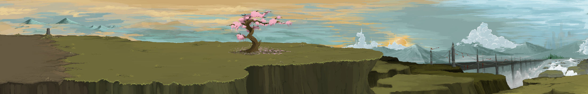
ch2_bridge_approach — Chốt cách ly dẫn lên cầu đá Sakuri (BR_0_Bridge_1.png).
Lệnh giới nghiêm đóng đường chính. Lính xé giấy thông hành Marseille và xúc phạm nguồn gốc Á của Solei. Đội đi qua khu cách ly, dùng vật ném đánh lạc hướng, tháo chuông báo động và đưa người bệnh ra khỏi chốt phân loại. Solei dùng vật tư sơ cứu; người được giúp chỉ lối bảo trì về phía cung điện.
2-2B. Kurotake, thác nước và Ryozan
ch2_bamboo_black — Rừng tre đen Kurotake và người giữ rừng (BA_3_Black_bamboo_forest.png).
Người Kurotake nhầm đội là quân đốn rừng của Masatomo. Sau cuộc đụng độ, đội dừng tay trước người đã hạ vũ khí và dùng băng, thuốc để cứu thủ lĩnh bị thương. Tulas chỉ ổn định tuần hoàn khi người bệnh đồng ý. Thủ lĩnh nhận ra họ không lấy người hay gỗ, chỉ lối qua thác và cho mặt nạ lọc một phần khói hương. Mặt nạ không chặn được thần lực Cái Tai.
ch2_bridge_exit — Đầu cầu đá nơi đối đầu Bóng Nòng Nọc và giải ấn giáp đỏ Ryozan (BR_4.png).
Tiếng thác che bước chân, đồng thời làm mất cảnh báo âm thanh; đòn đánh vẫn có dấu hình và rung. Trên cầu, lời thề bị yểm của Ryozan đang nuôi một bóng Nòng Nọc Đen dưới nước. Nhóm tháo ba cột yểm lần lượt bằng cơ cấu cầu và vật ném. Khi lớp vỏ tan, linh hồn vị tướng hiện ra, vẫn bị ấn lệnh ép canh đường lên Sakuri.
Tháo nốt ấn sẽ giúp Ryozan tỉnh để nói lời cuối. Nếu chỉ đánh vỡ giáp để đi nhanh, linh hồn vẫn bị giữ trong mạng và một dấu giáp có thể trở lại ở đỉnh núi. Bia cầu lưu việc ông từng chống lệnh giam Sakuri, đủ để cả đội hiểu vì sao ông bị yểm.
Ryozan: “Trên đỉnh núi tuyết, khi vạn vật chìm vào im lặng, cháu có thể nghe thấy cả tiếng thở của chính mình.”
2-3. Ngoại ô, thủ phủ và cung điện
ch2_sin_road — Quốc lộ và quán trà dẫn về thủ phủ (P_1_road_hand.png).ch2_sin_wastes — Đường hương độc dẫn tới khu vượt vực (P_2_Sin_map.png).ch2_palace_outside — Khu vực ngoài cung điện lúc hoàng hôn (C_0_outside.png).
Tại thủ phủ, nhóm lấy mật thư xác nhận Masatomo cho Jamerson lắp bộ thu dưới danh nghĩa đo Thánh Huyết. Tuyến dây và lịch đại lễ nằm trong cùng hồ sơ chính. Trong chợ, người ta bán búp bê phỏng gương mặt Heniana: nhãn hàng và đơn đặt của mạng nghiên cứu cho biết hình ảnh ấy bị đem quảng cáo làm bùa may mắn. Heni nhận ra người lớn đã bán cả hình ảnh của đứa trẻ làm mẫu; cô nói rõ mình không muốn bị đối xử như món hàng.
ch2_palace_temple — Hành lang di vật của dưỡng mẫu trong khu cung điện (C_4_Temple.png).ch2_palace_inner — Nội điện và gian thờ trong khu cung điện (C_5_In_temple_BG.png).
Trong kho cung điện, đội đối chiếu sơ đồ bảo trì với tuyến dây ghi trong giấy phép. Hồ sơ chỉ đường xuống đền và các bộ tăng âm nối tới đài Sakuri. Nhóm dùng thông tin ấy để chuẩn bị ngắt mạng cưỡng chế.
Nhóm đối chiếu vân gỗ, dấu mòn của lính hầu dưới ngưỡng và sơ đồ bảo trì để mở lối xuống đền. Màu sơn giúp nhận cửa từ xa, nhưng không đủ để chọn lối.
2-4. Đường lên đỉnh núi — giải thoát Sakuri
ch2_palace_noh — Sân khấu kịch Noh nơi đối đầu Rết Song Kiếm (C_3_Noh_theatrr_BG.png).
Dưới sàn sân khấu Noh là dấu tích những thánh nữ bị dùng cho nghi lễ trước đó. Rết Song Kiếm chặn lối xuyên núi. Nhóm né đòn quét, dùng bệ sàn và trống Taiko để làm lộ bụng, rồi mở đường lên đèo tuyết. Các bệ cộng hưởng lên xuống theo nhịp; hình khắc và chuyển động báo cùng thông tin với tiếng chuông.
ch2_final_approach — Đường đèo thấp vượt mây dẫn lên chân núi thiêng (SA_0_sakurifinal.png).ch2_final_platform_01 — Bệ đá nhịp thứ nhất dẫn lên cổng Torii gần đỉnh Sakuri (SA_1_Platform.png).ch2_final_gate — Cổng gần đỉnh Sakuri (SA_0_5_gate.png) báo đoạn đường cuối tới đài.ch2_final_arena — Đài đá đỉnh núi nơi giải cứu Sakuri và tách lõi Tai (SA_3_sakuri final 1 phase 3.png).
Sakuri đang nối với Cái Tai trên đài núi. Cô nghe nhiều nguồn nhưng không luôn hiểu đúng; khói hương và các mẫu tụng bị sửa khiến cô tin những người tới gần đều muốn chiếm mình. Nhóm đổi tiết tấu, dùng vùng im lặng và phá bộ tăng âm để mở lối. Khi cô quá tải lao xuống tấn công, họ tiếp tục khống chế dây nối thay vì kết liễu.
Khi bộ tăng âm ngừng, đồng đội giữ khoảng trống để Solei tới gần đài. Cô hạ thế thủ, nói rõ đội sẽ tháo dây và hỏi Sakuri có muốn rời khỏi đây không. Sau khi nguồn ép buộc đã yếu đi, Sakuri nghe lời nói khớp với hành động cứu người trước mắt, dừng tấn công và cho nhóm tháo các dây còn lại.
Ở nhánh bảo trì, Jamerson kích hoạt bộ thu đã được Masatomo cho lắp. Ông chờ mạng nghe hạ nhịp, dùng Mắt xác định mạch rồi tách lõi Tai bằng kẹp cơ khí. Phản hồi siết các dây quanh Sakuri; đội ưu tiên cắt cứu cô thay vì đuổi xe. Ghép Tai khiến Jamerson khụy xuống vì tiếng vọng, phải được đưa về buồng Heniana. Ông giữ Tai nhưng từ đây mất ngủ, cần bảo trì mạch ghép.
Sakuri sống và được người đã thoát mạng nghe chăm sóc. Sổ vận chuyển chính tuyến ghi giao dịch với giáo hội Calvaria; lời cô xác nhận đích đến. Heni nghe giải thích rồi tự chọn đi cùng đội. Jamerson rời bán đảo với Mắt và Tai; đó là trạng thái mở đầu Chương 3.
#Chương 3 — Calvaria: người chết không phải mệnh lệnh
Rời Sakuri, Jamerson đang giữ Mắt và Tai, đưa Heniana theo tuyến xe có giấy giáo hội tới Calvaria. Ông có quan hệ trao đổi nghiên cứu từ trước, nhưng Voro chưa chịu giao Cái Lưỡi. Bà muốn một điều lớn hơn tiền: đưa đứa con đã chết của mình trở lại.
Calvaria thu phí ghi tên, giữ hài cốt và cho người sống nghe lời người đã khuất. Lưỡi có thể gọi dấu hồn, lưu mẫu giọng và đóng dấu khế ước lên sổ, bình hoặc người đã tiếp xúc nghi lễ. Giáo hội biến cả linh hồn lẫn nỗi nhớ thành nguồn nuôi bộ máy. Lệnh đã lưu vẫn chạy bằng nguồn tại chỗ khi lõi được mang đi.
3-1. Con đường đơn độc
Con đường dân tị nạn ngoài vành mộ Calvaria
Đội Deep không có giấy giáo hội. Heni dễ bị nhận ra nên họ đi đường dân tị nạn, qua những nấm mộ của gia đình không đủ tiền vào thành. Nhóm giúp đoàn người bị đuổi khỏi vành mộ; người hành hương cảnh báo Slayer săn người không có dấu trong rừng. Loa bên đường thu tên và câu nói của người qua trạm. Stranger cảm thấy nhịp phát lặp, chưa biết trong giáo đường đang thương lượng điều gì.
3-2. Rừng Đồ Tể
Bãi săn và tuyến vật tư của Slayer
Slayer giữ người tại bãi tập kết, gom hài cốt và dẫn linh hồn về các bình. Nhóm cắt bẫy, khóa đường nhựa độc, đánh qua những đợt phục kích. Đồ Tể Trưởng xoay lưỡi hái giữ lối cuối; họ dùng gốc hóa đá che nhịp xoay rồi đánh ngắt khi lưỡi hái mắc.
Trên xe vật tư bị bỏ lại có phiếu giáo hội khớp dấu MuCEM. Jamerson đi tuyến xe chính thức; dấu ấy chỉ cho biết mạng hàng của ông nối tới pháo đài phía trước. Người được giải ở bãi săn theo nhóm qua chốt rừng.
3-3. Pháo đài Linh hồn
3-3 — Sân cổng Pháo đài Linh hồn: lối giao chiến nhìn ngang trước cửa thành và các trạm cấp nguồn.
Các dây từ bình chạy tới lá chắn và khẩu pháo. Tại van đầu, đội thấy ngắt nguồn chỉ dừng máy; dấu trói trên bình còn giữ linh hồn. Muốn giải họ phải tháo dấu. Phá thẳng bình làm lá chắn sụp nhanh hơn nhưng hủy linh hồn bên trong, một tổn thất không thể trả lại sau trận.
Giáo sĩ Hồn Vương giữ các trạm. Khi mất thân người, dấu hồn hắn nhập vào Linh Vượn bọc giáp đá. Nhóm ngắt nguồn, né cú đập rồi đánh khớp để mở đường. Tiền đồn báo động, cổng mặt đất đóng. Một tù nhân chỉ lối xuống thang xích; đội chèn phanh phụ rồi cùng đoàn được cứu xuống chân tường thành.
3-4. Hầm ngầm và người phu
Đường bảo trì nối hầm vận chuyển với hệ thoát nước
Giữa các cổng đối trọng và van xả nóng, nhóm cứu một người phu bị kẹt dưới nền đường vận chuyển. Anh từng đưa vật tư buồng Heniana vào kho, giữ phiếu có dấu Voro và biết Jamerson được hẹn tiếp kiến. Anh cũng từng làm việc ở Akam, nhưng lúc này việc cần làm là đưa anh ra khỏi hầm.
Nhóm khóa van, kéo cáng qua. Áp dư phá đoạn nền đã nứt, buộc đoàn xuống cửa thoát nước. Họ ghép bè, để Heni cùng người bị thương ở khoang có che rồi xuôi Sông Oán Hận.
3-5. Sông Oán Hận
3-5 — Mặt bè trên Sông Oán Hận: sàn gỗ rộng cho chiến đấu và giữ đường cho đoàn được cứu, dòng nước nằm phía sau.
Quái xương bám mạn, nước độc chảy xiết, các vật cản trôi vào mũi bè. Nhóm dùng mái chèo, vật ném và những kỹ năng đang có để giữ bè khỏi gờ đá. Bão sương đẩy họ vào doi cát dưới lò thiêu bỏ hoang. Bia tưởng niệm dưới lò ghi đơn vị cũ của Deep: hài cốt những người tử trận từng được đưa về đây, trước khi giáo hội chuyển lò sang thu giọng và giữ dấu hồn. Anh nhận ra tên Vance “Mắt Chim” và Đại úy Balthazar. Hai dấu hồn còn lưu bên bia đáp lại khi anh gọi.
Vance nhìn Solei trong thế thủ karate và Heni đứng sau Deep, trêu anh từ ngày nào đã bỏ nghề anh hùng để trông trẻ. Deep đáp rằng hai đứa còn biết im hơn hắn. Vance nhắc món nợ rượu năm xưa, rồi bảo hôm nay thấy anh còn sống thì coi như xóa nợ.
Balthazar vẫn mang dấu vết nhát đao từng đỡ cho Deep. Anh nhìn vết thương, nghẹn lời. Người chỉ huy nói ông chọn giữ anh sống để có ngày được nghỉ, không phải để anh tự bắt mình chết thay người khác mãi. Cuộc gặp không làm Deep quên những người đã mất. Nó cho anh một lời từ biệt khác điều giáo hội vẫn phát ở các trạm.
Balthazar: “Chúng dùng tên bọn tao để bắt người ta quỳ. Mày gặp lại cái giọng này trong giáo đường thì tìm cái chuông đang phát nó. Đập nó đi.”
Khi bè rời bờ, Deep vẫn đau, nhưng thôi coi mọi người đi cùng là một món nợ mình phải chết mới trả xong. Cửa xả đưa họ lên khu hành hương bên trong vành thành.
3-6 và 3-7. Đường hành hương, Chợ Xương và Barnaby
Dòng người mang tro cốt đi xin ghi tên
Đội đi cùng những gia đình ôm di ảnh và túi xương. Ở trạm nhận lễ, một bà mẹ bị đòi thêm phí; trong chợ, người ta bán hài cốt để mua thêm một lần nghe giọng con. Lính xương bảo vệ các quầy tái ráp khi trạm cấp còn nguồn. Nhóm mở tuyến qua chợ, tìm cách đưa người bị thương tới nơi nghỉ.
Chợ dưới hầm mộ và hệ loa phát lời người chết
Heni sợ Lưỡi sẽ bắt mình nói bằng giọng Heniana. Solei nhắc lần cô bé giấu phần bánh ở làng chài: chị biết việc ấy vì đã ở cùng em; Heniana đâu có sống thay được buổi chiều đó. Ở quầy kế, loa gọi mã STRANGER rồi phát câu Stranger đã nói ngoài vành mộ. Anh đổi câu hỏi; máy vẫn lặp y nguyên. Heni chỉ đúng chỗ lặp, cả đội nhận ra nguồn đang dùng bản ghi.
3-7 — Kho hòm Barnaby: sàn gỗ, bàn thợ và chăn nước ở hậu tuyến làm chỗ nghỉ cho người sống.
Barnaby cho dùng kho hòm làm nơi trú. Ông trải chăn, cấp vật tư và càu nhàu chưa bao giờ tiệm phải chăm nhiều người còn sống đến vậy. Khách có thể nằm thử hòm để “đổi vận”; câu quảng cáo không chữa bệnh. Deep nằm một lát nếu cần nghỉ, rồi than lão độn rơm quá mỏng. Những người đã ra khỏi pháo đài ở lại kho cùng người phu bị thương, có nhân viên tiếp nhận và đường rút riêng.
3-8. Giao dịch Voro đã chọn
Cổng giáo đường và khu giam bên dướiTiền sảnh Hơi Thở Cuối: quầy sổ và cửa khu giam nối ngoại điện đá xám với mật điện đỏ–đồng.
Phiếu ở cửa điện có dấu điều xe mới. Mark đối chiếu phiếu người phu đã giao với biên bản ở cửa điện: Jamerson đã nhận Lưỡi trong lúc nhóm đi qua khu hành hương, rồi rời thành. Voro đã tự trao lõi.
Voro từng gọi giọng con hàng trăm lần nhưng chưa bao giờ cảm thấy đứa trẻ thật sự ở bên. Con Mắt dùng ký ức của bà dựng cảm giác một đứa trẻ nằm trong vòng tay. Bà mù nhưng vẫn cảm thấy sức nặng và mùi tóc trong ý thức. Jamerson chưa hồi sinh ai; Voro biết vậy, vẫn đổi Lưỡi lấy lời hứa ông sẽ làm được khi nối đủ các phần.
Ông nhận lõi vào mạch ghép. Tiếng Tai và Lưỡi chồng nhau làm giọng ông vỡ, buộc xe dừng ổn định trước khi đi Akam. Voro giữ sổ, chuông, bình và bộ chuyển nguồn cho Dàn Hợp Xướng. Dấu cũ còn trói người, dù bà không thể lập khế ước thần lực mới.
Dưới giáo đường còn người đập cửa. Voro khóa khu giam, thu bình về mật điện để giữ nguồn chờ Jamerson trở lại. Deep yêu cầu thả họ. Khi bà từ chối, đội quay về phía cửa khu giam thay vì đuổi một đoàn xe đã rời thành.
3-9. Voro và Dàn Hợp Xướng
Bệ Lưỡi đã trống; ba chuông và ấn gốc giữ lệnh cũ
Hộ Pháp Sừng Xương giữ cửa, Dàn Hợp Xướng che ba Chuông Xương và Voro giữ ấn gốc. Nhóm đánh mở chốt để dân qua điểm tiếp nhận, ngắt từng chuông rồi phá giáp nối cho người tới tháo ấn. Các mẫu giọng dừng theo nguồn đã ngắt; người ra an toàn không bị gọi trở lại.
Giọng Balthazar ép Deep quỳ và sống tiếp như biểu tượng tử đạo. Anh nhận ra nó trái lời người vừa gặp bên sông. Mark cũng nghe mẫu giọng người mình từng mất, nhưng giữ đội ở việc cứu người trước mắt. Họ vẫn phải phá bộ máy đang phát, không chỉ từ chối bằng lời.
Voro bị khống chế còn sống. Sổ tên được giữ cho gia đình đối chiếu, dấu trói được tháo, linh hồn còn trong bình được giải. Những linh hồn đã bị hủy trước đó không trở lại. Barnaby kiểm người trong kho rồi hỏi còn ai chưa ra.
Voro: “Ta chỉ muốn gặp lại con.”
Deep: “Những người ngoài kia cũng đang chờ con mình về.”
Biên bản ghi đích tiếp theo là Kardias, nơi đặt Tim ở Akam Meskul. Người phu đánh dấu lối bảo trì xuyên xác rồng trên bản đồ, rồi ở lại kho Barnaby để điều trị. Lối ấy chỉ đi bộ được; xe ngủ đông phải vòng quốc lộ và thay bộ lọc mạch ghép. Đội nghỉ, bàn giao người bị thương rồi mang bản đồ lên đường với cơ hội tới trước Jamerson — một lợi thế họ có vì đã cứu người và giữ chứng cứ.
#Chương 4 — Akam Meskul: cứu Heniana, kết thúc Jamerson
Theo bản đồ người phu được cứu ở hầm Calvaria đã đánh dấu, đội Deep tìm tới đường bảo trì đi bộ xuyên xác rồng. Xe chở buồng Heniana phải vòng quốc lộ và dừng thay bộ lọc sau ghép Lưỡi. Đội tới Akam trước Jamerson, có thời gian tìm cách ngắt thí nghiệm và giữ Heniana sống ngoài hệ ghép.
Akam Meskul là vùng núi quanh xác một thánh long cùng tên. Trái Tim nằm trong Titan tại đỉnh Kardias. Nó duy trì những dòng huyết dịch người bản địa gọi là Huyết Mạch. Con Cháu Chiếc Nôi là cộng đồng sống quanh vùng; Huyết Lộ là giáo phái của chủ tế Malaestro trong cộng đồng ấy. Vanya dẫn các gia đình phản đối hiến tế. Bên kia xác rồng, Kaelen đứng đầu Thành phố Kính của Tàn Dư Sáu Vương Quốc. Thành phố đã khai thác điện và nhiệt từ Tim, nhưng chưa ổn định được việc dùng nhịp của nó điều khiển sinh học hoặc đồng bộ với các lõi khác.
4-1. Phá cột để mở lối cho dân
4-1 — Chốt Huyết Lộ dưới hàm rồng: đường tro núi lửa, trạm giữ người và cửa bảo trì ở hậu tuyến.
Tại cửa hầm, Đội Thập Tự của Huyết Lộ giữ thợ lò làm vật tế. Cột cộng hưởng khiến những người bị cắm ống truyền chiến đấu trong cơn mộng du. Nhóm đánh bật hàng phòng thủ, khóa đường cấp rồi tháo người khỏi cột. Người đã hạ vũ khí được đưa sang hang trú. Vanya tới đón người được cứu về hang trú của các gia đình chống hiến tế. Một kỹ thuật viên trong đoàn nhận ra ký hiệu bảo trì trên bản đồ Calvaria, chỉ tiếp đường vào xác rồng; Vanya cùng đội đi tới trạm y tế.
4-2. Xác rồng — chuẩn bị cách đưa Heniana ra
4-2 — Đường trong xác rồng: nền đá nhìn ngang, xương và ống dẫn ở phía sau dải di chuyển.
Các đợt xả áp làm cầu bảo trì lên xuống. Nhóm đóng van, chèn đối trọng và giữ lối cho đoàn đi sau. Vanya nhận ra thuật khóa tuần hoàn của Tulas: những người di tản từ Akam từng truyền cách ấy tới duyên hải, nơi anh học được. Khi một người cha sợ việc chữa bằng máu, Tulas giải thích và chờ đồng ý.
Một vết cộng hưởng trong xương lưu cảnh Aramut cùng thánh long giữ đường rút cho dân. Ông sống nhiều thế hệ sau cuộc phân xác Thần Sơ Sinh. Tàn Dư kể ông tự chọn hy sinh; dấu vọng cho thấy ông còn chờ đạo quân đã rút lui. Deep nhận ra cách lịch sử dùng tên một người để che trách nhiệm những người khác. Anh ghi lại ký hiệu đơn vị còn thấy trong dấu vọng.
4-2B. Khe Tượng Gác — mở một đường cho người đi sau
4-2B — Thềm đầu khe: cửa hang xương mở ra bờ đá và công trình tượng gác cũ.
Ra khỏi đoạn xương kín, đội tới một bờ đá rộng chạy sát chân công trình tượng gác. Bên ngoài mép bờ, vách đá hạ xuống dòng nước chảy xiết. Đường bảo trì trên bản đồ Calvaria đi dọc bờ cao này, vòng khỏi đường xe của Jamerson. Vanya nhận ra cửa van cuối bờ dẫn tới trạm bảo trì và lối sang Ca Động.
Huyết Lộ giữ các hốc phóng trong vách và chân tượng. Từng phiến đá bật ra ngang bờ, hướng đẩy người về mép ngoài. Nhóm chiến đấu đọc dấu rung ở hốc, né theo chiều ngang và chiều sâu trên mặt đá rồi tiến giữa các loạt. Vanya cùng người được cứu chờ ở thềm đã dọn.
4-2B — Bờ phù điêu: mặt đá khô rộng sát chân tường để chạy; ngoài mép là vách rơi xuống dòng xiết, hốc đá phía sau dành cho bẫy phóng.
Dọc bờ trái, dãy phù điêu và các mảng vải đỏ rủ phía sau lối đá khô. Tiếng nước xiết vọng lên từ dưới vách; một phiến đá trượt qua mép rồi bị dòng chảy cuốn mất. Nhóm giữ khoảng cách với bờ ngoài để còn chỗ né khi hốc tiếp theo bật mở.
4-2B — Bờ qua tượng gác: chạy và né trên nền đá cao, dòng xiết ở thấp bên ngoài mép rơi.
Tới chốt cuối, đội đánh lui nhóm giữ tay khóa trong khoảng che bằng đá, dừng cơ cấu phóng và mở lối qua cửa van. Họ kiểm lại bờ trước khi Vanya đưa đoàn đi sau. Dòng xiết bên dưới vẫn nguy hiểm; đường tiếp tế và rút người nằm trên bờ cao đã dọn.
4-2B — Cửa van cuối khe: chốt giữ đường, khoảng trú bằng đá và lối đi tiếp về phía Ca Động.
4-2C. Trạm bảo trì ở mép Thành phố Kính
Sau cửa van, một nhánh cũ dưới sườn xương rồng dẫn vào trạm y tế được Tàn Dư sửa lại. Đá và đồng cũ còn ở ngoài; kính, bộ nguồn và thiết bị điều trị nằm trong khoang bảo trì nhỏ.
Trạm y tế bảo trì trong xác rồng: thử máy thở bằng nguồn điện thường và chuẩn bị bộ duy trì độc lập.
Ở trạm y tế bảo trì, nhóm lấy thuốc duy trì, bộ nguồn độc lập và thông số chuẩn của loại buồng Heniana. Kỹ thuật viên thử chuyển nguồn cho một máy thở trước mặt họ. Bộ pin và máy phát thường của trạm hoạt động độc lập với Tim. Có thể tách cô khỏi mạch ghép và đánh thức ngắn dưới giám sát; chưa có thuốc chữa khỏi. Stranger đi qua vùng quét nhờ tín hiệu dị thường, rồi mất phương hướng khi Tim tăng nhịp. Dấu ổn định cả đội đặt trên đường giúp kéo anh về; tuyến cơ khí bên cạnh vẫn dùng được cho mọi đội.
4-3. Ca Động và Thành phố Kính
Vanya mở điểm trú ở đường đá dẫn tới Ca Động. Nhóm ba người xử lý lần lượt Ca Động của Malaestro, khu giam thử nghiệm của Kaelen rồi phòng điều độ; đội dự bị và kỹ thuật viên giữ người đã cứu. Họ lấy sơ đồ buồng hiệu chuẩn và quyền dừng khẩn. Các thợ vừa được cứu khởi động máy phát thường và nạp bộ pin ở điểm trú, thử ngắt lưới Tim để kiểm tra tuyến điện y tế. Nguồn này chỉ đủ cho cứu hộ và điều trị; dây chuyền công nghiệp phải dừng. Dừng khẩn chỉ ngắt khuếch đại ngoài: muốn cứu Heniana vẫn phải chuyển nguồn và mở khóa tải tại buồng.
4-3 — Ca Động Tế Lễ (ch4_03a_blood_lair_arena_pixel_v2.png): nền đá rộng trước miệng hang và các cột Huyết Mạch; nhân vật, địch và van tương tác đặt riêng.
Malaestro tự nối vào Huyết Mạch, biến thành Hộ Pháp Quỷ Đỏ để giữ khóa lồng. Nhóm khóa van, né đòn rồi đánh ngắt thân hộ pháp để mở chốt. Van điều khiển cho phép đảo dòng khỏi những người bị giữ, ngừng nuôi thân hộ pháp. Vanya đưa trẻ ra, người được cứu giữ tuyến tiếp tế. Đội đã cắt bớt nguồn nuôi Titan trước trận cuối.
Qua khu kỹ thuật của Kaelen
4-3 — Phố bảo trì Thành phố Kính: sàn thép nối kho vật tư, điểm trú và cửa phòng điều độ.
Từ Ca Động, đường đá đi qua những khoang kính và khung thép được Tàn Dư lắp vào sườn rồng. Phố bảo trì dẫn tới kho thí nghiệm, phòng điều độ rồi lò Tim; các tuyến cũ dưới khe vẫn phục vụ người sơ tán.
Kho Kaelen giữ bản sao kết quả thử Bastonne mua theo các lô mẫu qua Calvaria từ trước chuyến đi này. Biên nhận khớp mã MuCEM; đây là số liệu thô cũ, chưa có phương pháp đồng bộ ba lõi mà Kaelen đang muốn đổi lấy. Hồ sơ ghi STRANGER là tù nhân chưa xác định danh tính, kháng Neuro-B và phản ứng mạnh gần mẫu thần thể. Tín hiệu đó không phải do Jamerson tạo ra. Các phép thử của ông chỉ phát hiện và làm nó bất ổn hơn. Hồ sơ không chứng minh Stranger là thần hay có một sinh vật khác sống trong cơ thể.
Lúc nhóm tới phòng điều độ, đoàn xe Jamerson mới vào lò. Kaelen chấp nhận đổi một lần kết nối Tim có giám sát lấy nghiên cứu ba lõi. Tim ở trong Titan; khóa máy vẫn do Tàn Dư giữ. Buồng Heniana làm tải hiệu chuẩn. Jamerson ký dù biết phản hồi có thể giết con. Báo động chỉ cho ông biết có người đột nhập, không cho biết mọi vị trí.
Mark, qua hệ thống liên lạc của lò: “Chúng tôi có nguồn duy trì độc lập và thông số tách buồng. Heniana có thể ra ngoài để điều trị. Dừng kết nối đi.”
Jamerson: “Điều trị đến bao giờ? Ta cần con bé khỏe lại. Không phải thêm một chiếc giường chờ đợi.”
Jamerson ngắt liên lạc, đặt tay lên lệnh thử. Ông chọn tiếp tục dù đã được báo có thể đưa con ra ngoài để điều trị.
4-4. Titan → Jamerson → Father-Eye
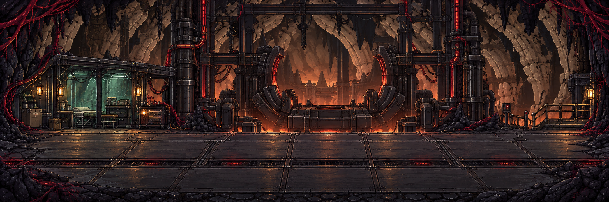
4-4 — Sàn lò Titan: khoảng giao chiến trước khung đỡ và khu hiệu chuẩn y tế ở hậu tuyến; boss và buồng Heniana đặt riêng.
Kaelen bật Titan bảo vệ thí nghiệm. Nhóm né đập và tia quét, dùng quyền dừng khẩn đã giành để ngắt khuếch đại, đánh khớp lúc Tim ngắt nhịp. Những đường nguồn đã cắt ở thành phố khiến điểm yếu lộ lâu hơn. Nhân viên y tế cùng đội dự bị chờ sau tuyến đã mở.
Khi Kaelen định hủy phép thử, Jamerson phá giới hạn giao diện, dùng cơ thể nối Mắt–Tai–Lưỡi qua máy tới Tim. Một nhịp đồng bộ gửi tín hiệu về Dây Rốn trước khi đội cắt được mạch. Họ tránh hình giả và sóng nghe nhịp, chuyển buồng sang nguồn dự phòng rồi mở khóa tải. Khi cáng Heniana tới điểm an toàn, Jamerson vẫn giữ kết nối bằng cơ thể.
Heniana: “Con muốn sống. Nhưng con không muốn cha làm chuyện này để giữ con.”
Jamerson vẫn ép chu kỳ. Con Mắt lấn vào phần thân nối máy, kéo ông thành Father-Eye. Nhóm lần lượt phá ba cầu dẫn, đánh ngắt lớp giáp nối rồi tách lõi Mắt khỏi cơ thể. Lời Heniana không khiến ông tự dừng; đồng đội vẫn phải cắt hết cầu dẫn để chấm dứt chu kỳ.
Jamerson: “Cha đã không nghe con.”
Jamerson chết vì tổn thương ghép lõi. Nhân viên đưa cáng Heniana tới bên ông. Cô nắm tay cha một lúc, không nói lời tha thứ thay các nạn nhân. Cô còn bệnh và cần nguồn duy trì. Mắt, Tai, Lưỡi được đặt trong ổ cách ly; Tim vẫn nằm trong khung Titan đã dừng. Kaelen bị giữ cùng hồ sơ. Người mộng du tỉnh dần, Heni kéo chăn và giữ tay Heniana. Trong khoảng yên hiếm hoi, cả đội đi giữa những người vừa tỉnh, kiểm lại cáng và bàn đường về.
4-5. Khe nứt — hậu quả của xung đã gửi
4-5 — Khe nứt tại lò: kết cấu phía sau bị cuốn sang, mặt sàn trước còn đường để cứu hộ và đặt mốc.
Kỹ thuật viên tìm thấy xung bốn lõi đã rời lò trước khi dừng máy. Dây Rốn phản hồi, mở khe nối và kéo bốn lõi cùng một phần Kardias vào Chiếc Nôi. Cách ly cơ học không chặn được đường cộng hưởng ấy. Một phần trạm y tế, gồm cáng Heniana, thiết bị duy trì và Heni đang ở cạnh chị, bị cuốn sang. Người gần vành nứt dù chưa bị cuốn cũng bắt đầu ngủ; xa hơn, vùng ảnh hưởng đang lan.
Vanya cùng đội cứu hộ lùi trại ra ngoài vùng đang gây ngủ, nối tuyến y tế vào máy phát thường đã thử. Nhóm đặt điểm giữ cổng để đường quay lại không khép khi nguồn bên trong thay đổi, đồng thời kéo dây liên lạc qua các mốc cứu hộ. Sau khi đưa dân còn tỉnh ra khỏi mép sụp, họ bước vào tìm trạm y tế và những người bị cuốn. Nguồn duy trì đi theo cáng vẫn đang chạy; tín hiệu còn nhận được cho họ một đường tìm tới trạm bị cuốn.
Jamerson đã chết. Con Mắt dùng cơ chế tự vệ của cùng một Thần Sơ Sinh để giữ các lõi trong Chiếc Nôi, dựng cảnh đoàn tụ từ ký ức người tiếp xúc với mạng. Nó muốn ghép một thân thể mới ngay trong thế giới này; người sống và vật chất bị cuốn vào sẽ thành lớp vỏ. Dây Rốn còn đường về nguồn, nhưng Mắt khóa chiều trở về. Không có người chết nào được hồi sinh thật trong những căn nhà ấy.
5-1. Cầu ký ức — một mái nhà không cho rời đi
Cầu ký ức: cẩm thạch và đất nung nối Marseille, Sakuri, Calvaria, Akam5-1 — Bến ký ức chưa rời bờ: mái nhà và bến Marseille gợi cảm giác đã trở về; mặt cầu đá vôi thật vẫn dẫn đội về phía trạm y tế.
Căn nhà Deep vẫn sửa dở nay đã lành lặn, có bữa tối và tiếng Solei gọi vào, dù cô đang đứng sau anh. Xa hơn là Sakuri yên bình và Calvaria với mọi người thân đã mất ngồi đợi. Cửa dẫn vào nhà thì mở; cửa đi ra lặp lại cùng một hành lang. Nhóm kiểm tra bằng vật ném, tìm loa lặp và tháo dấu gọi tên theo những luật đã học.
5-1 — Phố những cửa sổ chờ đợi: những gian nhà ấm mời người đi ở lại, trong khi lối gạch đất nung liên tục giữ hướng tiến.
Bước vào Chương 5, Stranger chuyển sang tên gọi Ghost. Anh nhận ra cấu trúc từng hiện trong Cõi Mộng điểm lưu, có lợi thế quan sát nhưng càng gần đài càng khó giữ ý thức. Cả đội đặt các mốc ổn định theo cùng quy tắc đã dùng trong xác rồng. Dấu tiếp đất và cơ cấu môi trường cho mọi đội hình kiểm chứng lối thật. Nhìn qua cửa cuối, họ thấy cáng cùng nguồn duy trì của trạm y tế.
5-2A. Phòng Gương — hai người có thể cùng tồn tại
Phòng Gương: nước nông trên kính chàm, những phòng ấm sau gương
Cơ thể Heniana vẫn nằm trên cáng, nguồn độc lập còn chạy. Cơn ngủ do rift đã giữ cả cô và Heni trong mạng mộng; nhân viên y tế bị cuốn theo đang canh hai người. Trong gương, cô ngồi ở bàn ăn, người cha với bàn tay bình thường hỏi cô muốn ăn gì. Cô biết ông đã chết nhưng vẫn muốn ngồi thêm. Người cha chỉ lặp những câu trong ký ức, không đáp khi cô kể chuyện vừa xảy ra ở lò.
Gương của Heni cho cô một căn phòng riêng, một giấy khai sinh và lời hứa sẽ không còn bị gọi là bản sao, với điều kiện cô đóng cửa ngăn Heniana. Heni mở cửa ấy. Cô đã có đời sống riêng, ngay cả khi chị còn ở đây. Heniana hỏi có mang cha theo được không; Solei trả lời không. Cô bé đứng dậy, chấp nhận ra ngoài khi mình vẫn bệnh và cha không trở lại.
Heni: “Chị còn ở đây thì em vẫn là em.”
Nhóm lần đường dây và nhịp sáng tới van cấp cảnh mộng, khóa nó lại. Căn nhà giả tắt; hai cơ thể trên trạm vẫn còn, chỉ số máy thở ổn định, rồi hai cô bé mở mắt. Cả đội có một phép thử cụ thể: ngắt nguồn chiếu không xóa người thật. Heniana vẫn thở qua thiết bị; Heni giữ tay chị trong lúc nhân viên kiểm tra nguồn.
5-2B. Chiến trường cứu hộ — mở chiều trở về
Quảng trường bazan: tuyến cứu hộ giữa cửa gương và đài trung tâm
Bên dưới là nền lò và dân cư thật bị kéo từ Kardias. Robot còn chạy lệnh bảo vệ Tim; một số người Huyết Lộ muốn giữ giấc mơ cứu thế, một nhóm Tàn Dư muốn chiếm lại nguồn. Nhóm mở chốt, cắt hai trạm tiếp sức và giữ hành lang. Hồ sơ thí nghiệm khiến một nhóm kỹ thuật hạ vũ khí; những người vẫn tấn công phải bị đánh lui. Không một bài phát biểu nào tự chấm dứt tất cả giao tranh.
Khi trạm thứ hai ngắt, nhóm đảo van cùng cấu trúc đã thử ở Phòng Gương. Dư chất cộng hưởng đi về Dây Rốn, vùng Nhiễu giảm và người đã tỉnh vẫn sống. Khóa trên đài có cùng dấu và cơ cấu, nên đội hiểu cách hoàn trả trước khi đánh boss. Đội dự bị cùng nhân viên y tế đưa Heniana, Heni và các nhóm dân qua hành lang về trại Vanya. Dây liên lạc dọc tuyến báo cáng đã tới trại ngoài vùng ngủ. Nhóm chiến đấu tiến tới đài; Ghost tình nguyện ở trạm quan sát sau mốc ổn định, dùng những gì anh nhận ra ở Cõi Mộng để báo nguồn đang đổi nhịp.
5-2B — Vành hồi lưu trước đài: nền bazan thật nối vào mặt sàn Chiếc Nôi; cáng, bộ nguồn và lối về trại đánh dấu tuyến cứu hộ.
Trong lúc mở tuyến cứu hộ, nhóm lắp ba bộ mốc cùng loại đã thử ở Cầu ký ức quanh rìa ngoài đài. Kỹ thuật viên giúp nối chúng với đường hồi lưu rồi rút về trại. Nhóm thử từng mốc với dòng nhỏ vừa đảo ở quảng trường, chuẩn bị cả đường xả sang Dây Rốn. Các mốc giảm nhiễu đang đo được; họ chưa biết lượng cộng hưởng bị khóa trong đài. Điểm giữ cổng ở vành ngoài vẫn duy trì hành lang thoát.
5-3A. Con Mắt — tách lõi khỏi bộ máy giữ người
Đài tế ban đêm: sàn sứ sinh học, kính thần và Dây Rốn ở hậu tuyến
Con Mắt phối hợp Tai để bắt nhịp, Lưỡi để phát lệnh và Tim để khuếch đại Nộ. Nhóm kiểm tra mục tiêu thật bằng va chạm, tìm nguồn giọng lặp rồi ngắt trạm kích động. Sau mỗi lớp phòng vệ, một trong ba khóa của cụm giữ cả bốn lõi lộ ra để tháo. Những người giữ tuyến che khoảng thao tác cho người tháo khóa.
Lớp giáp bảo vệ Mắt vỡ, lõi còn sống rời ổ điều khiển. Ba lõi khác được giải khóa nhưng vẫn ở trên đài chờ mở dòng trả. Con Mắt mất khả năng cưỡng chế; nó chưa bị nghiền nát. Tai, Lưỡi và Tim không trở thành chiến lợi phẩm của đội.
5-3B. Dream Sovereign — cứu Ghost khỏi cộng hưởng
Khóa cuối rời ổ, lượng cộng hưởng dồn trong đài xả ngược qua mạng nối. Van trả lõi vẫn đóng; đây là xung xả áp trước khi đưa vật chất qua Dây Rốn. Xung vượt mức đã đo ở quảng trường, làm các mốc chuyển sang cảnh báo. Tín hiệu dị thường của Ghost bắt vào nó ngay tại trạm quan sát. Anh mất phương hướng, lớp cộng hưởng bao lấy cơ thể và dựng Bóng Nhiễu từ các động tác cũ. Trạng thái đó được gọi là Dream Sovereign: Ghost bị lấn át ý thức, còn nguồn cưỡng chế trực tiếp của Mắt đã bị ngắt.
Nhóm né các đợt lướt có dấu báo, đánh ngắt lớp cộng hưởng và các điểm nối đang kéo Ghost, giữ đòn khỏi cơ thể anh. Bóng Nhiễu lấy hình đồng đội xuất hiện thành ba đợt hữu hạn, tối đa hai bóng cùng lúc. Chúng có va chạm và vệt nối nguồn; các ảnh chiếu xen vào vẫn để vật ném xuyên qua. Nhóm phân biệt hai loại rồi ngắt từng nguồn, mở đường tới ba mốc.
Khi đường tới các mốc đã mở, nhóm chuyển từ phá lớp cộng hưởng sang chuyển nguồn khỏi Ghost. Họ lần lượt chuyển ba mốc sang chế độ xả đã thử, giữ từng mốc qua một đợt tấn công và đưa lượng cộng hưởng còn dồn lại về Dây Rốn. Mốc đã bật giữ nhịp, cho họ chuyển sang vị trí tiếp theo. Đồng đội ở trại nhắc những việc đã cùng trải qua, còn nhóm tại đài tạo khoảng an toàn để áp sát.
Block, qua liên lạc: “Chúng ta đã cùng thoát khỏi Bastonne. Tao chưa bỏ mày lại đâu.”
Deep: “Cậu đã có đường về rồi. Đi cùng chúng tôi, Ghost.”
Khi đủ ba mốc ổn định và Ghost ngừng phát đợt lướt, một người áp sát kéo anh khỏi ổ nối, những người còn lại giữ đường lui. Lời gọi giúp anh nhận ra họ; việc ngắt nguồn mới chấm dứt cưỡng chế. Ghost còn sống, kiệt sức. Nhịp thở anh còn yếu nhưng đều; đồng đội đặt anh lên cáng dự phòng.
5-4. Hoàn trả trước, đóng đường sau
Sau khi xả hết lượng cộng hưởng đang dồn và đưa Ghost lên cáng, nhóm mở van chính cho lõi trở về. Tai, Lưỡi, Tim rồi Mắt lần lượt đi qua Dây Rốn. Kỹ thuật viên qua liên lạc xác nhận bốn ổ nối đã trống và tín hiệu rời vùng. Hành lang rút vẫn mở dưới tác dụng của điểm giữ cổng ngoài vành.
Đội đưa Ghost theo hành lang cứu hộ về vành ngoài. Vanya xác nhận các nhóm chính tuyến và hai cô bé đã ở trại. Nhóm tháo điểm giữ cổng cuối cùng từ phía an toàn; Dây Rốn tự thu và Chiếc Nôi khép từ những phòng xa. Nguồn phát Đại Họa dừng lại; huyết dịch nhiễm bẩn còn ở Akam vẫn cần cô lập, còn bệnh và vết thương vẫn cần điều trị. Người đã chết không trở lại.
Những người trở về
Có người vừa tỉnh đã khóc vì lần nữa mất người thân trong giấc mơ. Vanya ở lại nghe họ kể. Kaelen và hồ sơ được bàn giao để đối chiếu người mất tích. Calvaria trả lại sổ tên cho các gia đình. Ở Akam, máy phát thường và pin dự phòng giữ các điểm y tế hoạt động; thành phố phải chia giờ cấp điện, ngừng dây chuyền và tìm thêm nhiên liệu. Những thợ được cứu cùng người của Vanya mở đường đưa bệnh nhân tới nơi điều trị; Tulas để lại cách ổn định tuần hoàn và xử lý huyết dịch đã thử cùng họ.
Vài tuần sau, Heniana ra hiên được một quãng ngắn cùng Heni. Heni kể lời Barnaby càu nhàu vì tiệm hòm bỗng đông khách còn sống; Heniana cười rồi phải dừng lại lấy hơi. Heni chờ, kể tiếp đúng đoạn đang dở. Ghost về cùng đội, chưa tìm được tên cũ nhưng vẫn chọn giữ tên đang được gọi.
Deep trở về căn nhà chưa sửa xong ở Marseille. Mark mang tin về các nhân chứng Bastonne, hẹn hôm khác cùng đối chiếu. Trong nhà, Solei và Tulas đang tranh luận cách sửa mái dột, Heni chen vào kể chuyện. Deep đặt kiếm cạnh ghế rồi vào phụ. Anh còn những việc cần làm, nhưng không còn để một giọng người chết quyết định mọi ngày còn lại.
Cái kết của Divergency không nói rằng đau khổ sẽ tự biến mất khi đánh bại boss cuối. Nó nói điều khó hơn: có những mất mát không thể đảo ngược, và chính việc chấp nhận điều đó mới ngăn con người biến tình yêu thành bạo lực.
Jamerson là hình ảnh của một người không chấp nhận mất mát. Sakuri là hình ảnh của một đứa trẻ bị biến thành công cụ rồi dùng quyền năng để đáp trả. Giáo hội Calvaria là nỗi đau buồn bị biến thành hàng hóa. Hai phe Akam Meskul là lịch sử bị biến thành lý do giết người. Thần Sơ Sinh là một tiếng khóc bị con người gọi nhầm thành thần linh, vũ khí, và lời nguyền.
Nhóm nhân vật chính thắng không phải vì họ mạnh hơn tất cả. Họ thắng vì đến cuối cùng, họ từ chối sử dụng cùng một cách nghĩ với kẻ thù: không biến Heniana thành lý do, không biến Heni thành bản sao, không biến Ghost thành vật được chọn, không biến người chết thành mệnh lệnh cho người sống.
Thông điệp đọng lại cho người chơi: cứu thế giới không phải lúc nào cũng là làm điều vĩ đại. Đôi khi, đó là đứng đúng lúc để nói "không" với một phép màu cần quá nhiều xác người.
Các sự kiện và quyền năng dùng cùng quy ước tại mục 11 của tài liệu gameplay. Truyện kể toàn đội, còn trận chuẩn chỉ có một người trực tiếp và hai hỗ trợ. Người dự bị có vai trò cứu hộ được ghi rõ; các cảnh nhóm đầy đủ không tự mở quyền điều khiển thêm General.
Chương 0 cứu Block và chứng cứ, thoát bằng canô; qua Chương 1–4 anh vẫn đồng hành dưới tên Stranger, đến Chương 5 mới trở thành Ghost. Mỗi bước đi sau dựa trên bằng chứng nhân vật đã nhận, không dựa trên cảnh riêng chỉ người xem biết.
Cứu người và giải cơ cấu tạo lợi thế ở đoạn sau: người phu Calvaria chỉ đường Akam; dân được cứu làm giảm nguồn Titan; nguồn độc lập cứu Heniana; phép thử gương và đảo dòng dạy cách kết thúc trước khi tới đài.
Heni và Heniana có quyền chọn, vẫn là hai người riêng. Ghost là người cần cứu ở Dream Sovereign, không phải vật tế. Mọi đội chiến đấu hợp lệ có cách dùng môi trường; tài liệu sưu tầm không giữ chìa khóa chính tuyến.
Kết thúc trả đủ bốn lõi còn sống, đưa nhóm ra vành rồi tháo điểm giữ cổng. Nguồn gây Đại Họa dừng, bệnh và tổn thương tiếp tục được điều trị. Những cơ chế này là đích thiết kế, cần xác minh khi tích hợp Unity.
Chuyển hóa thiết kế
Lối chơi & Thiết kế màn
Kế hoạch lối chơi theo từng chương, gồm cơ chế, câu đố, tình huống chiến đấu, trùm, nhóm kẻ địch và nhịp học kỹ năng.
Read
151 min
Sections
44
Tables
42
Edit and save for the team.
#Divergency – Ý tưởng lối chơi và thiết kế màn chơi
Tài liệu này chuyển mạch truyện trong Divergency_Complete_Story_VI.md thành một trải nghiệm có thể chơi được. Trọng tâm không chỉ là chiến đấu, mà là cách từng thành viên trong đội phối hợp, cách năm mảnh Thần Sơ Sinh làm thay đổi luật chơi và cách những lựa chọn nhỏ của người chơi để lại hậu quả trong thế giới.
Toàn bộ thiết kế đi theo một nguyên tắc: mỗi cơ chế phải phục vụ đồng thời lối chơi, nhân vật và câu chuyện. Một cơ chế chỉ nên xuất hiện khi người chơi hiểu vì sao nó tồn tại, dùng nó để giải quyết điều gì và lựa chọn của mình phải trả giá ra sao.
Divergency là trò chơi hành động nhập vai theo đội. Người chơi trực tiếp điều khiển một nhân vật, phối hợp với hai đồng đội hỗ trợ và thay đổi đội hình tại căn cứ hoặc điểm nghỉ. Trong từng khu vực, người chơi sẽ chiến đấu, quan sát môi trường, giải câu đố, cứu người, thu thập bằng chứng và quyết định nên dùng bạo lực đến mức nào.
Nhịp chơi cơ bản gồm sáu bước:
Khám phá khu vực và đọc dấu hiệu môi trường.
Xác định mối nguy, người cần cứu và mục tiêu quan trọng.
Chọn nhân vật, lệnh phối hợp hoặc liên kết kỹ năng phù hợp.
Chiến đấu hoặc mở đường bằng môi trường.
Chấp nhận một cái giá ngắn hạn để đổi lấy lợi ích hoặc hậu quả về sau.
Trở về nơi an toàn, điều chỉnh đội hình và xem thế giới phản hồi lựa chọn vừa thực hiện.
Divergency không mở đầu bằng câu chuyện về một “người được chọn”. Nhân vật trung tâm là một đội gồm nhiều thế hệ. Deep và Mark từng cùng đi qua một cuộc chiến ở vùng đất rất xa Marseille; đó là quá khứ của hai người lớn tuổi trong đội, không phải quá khứ của Tulas. Solei và Tulas cùng lứa, lớn lên trong cùng giai đoạn và bước vào những nhiệm vụ lớn dưới sự dẫn dắt của Deep và Mark. Block là đồng minh lâu năm mà cả đội tin cậy. Stranger bước vào câu chuyện tại Bastonne như một biến số (vẫn mang tên Stranger tới hết Chương 4, sang Chương 5 mới thành Ghost), còn Heni gia nhập sau đó với tư cách một con người có ý chí riêng.
Lối chơi phải thể hiện được mối quan hệ này:
Lệnh phối hợp là sự giao việc dựa trên lòng tin, không phải biến đồng đội thành công cụ.
Mỗi nhân vật giải quyết một loại trở ngại khác nhau; không ai có thể thay thế toàn bộ đội.
Cứu người thường khiến tình huống trước mắt khó hơn, nhưng có thể mở đường, cung cấp thông tin hoặc tạo sự hỗ trợ về sau.
Mâu thuẫn trong đội được thể hiện qua lời thoại, khả năng hỗ trợ và cách nhân vật phản ứng, không bằng một thanh thiện–ác.
Mỗi mảnh Thần Sơ Sinh tác động lên một phần khác nhau của con người. Mỗi chương giới thiệu một luật mới, sau đó tiếp tục kết hợp luật ấy với những gì người chơi đã học. Chương cuối yêu cầu người chơi vận dụng cả năm luật cùng lúc.
Mảnh thần
Ý nghĩa trong truyện
Luật chơi chính
Cách người chơi đối phó
Con Mắt
Ký ức, ham muốn, nỗi sợ và điều bị che giấu
Tạo vật giả, đường giả, bóng người giả và điểm yếu giả
Quan sát dấu hiệu bất thường, tắt nguồn chiếu, đọc hồ sơ và kiểm tra bằng môi trường
Cái Tai
Âm thanh, ý nghĩ và thói quen
Theo dõi tiếng động, ghi nhớ hành vi lặp lại và phản ứng theo nhịp
Thay đổi tiết tấu, tạo tiếng động đánh lạc hướng hoặc chủ động bước vào vùng im lặng
Cái Lưỡi
Tên gọi, lời người chết và mệnh lệnh
Gọi tên làm khựng, tạo lệnh giả và bóp méo lời nói
Xác nhận lệnh thật, phá khế ước giọng nói và từ chối danh xưng dùng để kiểm soát
Trái Tim
Thù hận, tình thương và ý chí tập thể
Khuếch đại Nộ khí, đẩy đám đông vào cuồng loạn và làm bạo lực nuôi sức mạnh của trùm
Giữ đội hình, ngừng truy sát, phá nguồn kích động và ưu tiên cứu người
Dây Rốn
Mối nối với nơi nằm ngoài thế giới
Trộn ký ức, bẻ cong không gian và nối lại các luật cũ
Kiểm chứng dấu thật, dùng cơ cấu tháo liên kết; Stranger (Ghost từ Chương 5) và Heni có lợi thế quan sát nhưng không phải chìa khóa bắt buộc
Chiến đấu vẫn là một phần quan trọng, nhưng giết nhanh không phải lúc nào cũng là cách tốt nhất. Người chơi có thể phá cửa hàng để lấy vật phẩm, bỏ tù nhân để rút ngắn đường đi hoặc truy sát kẻ đầu hàng để kết thúc trận sớm. Những lựa chọn đó không làm lệch mạch truyện chính, nhưng thay đổi độ khó, mức độ tin tưởng, sự hỗ trợ và giọng điệu của phần kết.
Trò chơi không phán xét người chơi bằng nhãn “tốt” hoặc “xấu”. Thế giới chỉ nhớ người chơi đã làm gì và ai phải trả giá cho việc đó.
Giới thiệu: xuất hiện trong tình huống an toàn, chỉ có một mục tiêu.
Luyện tập: được dùng trong một trận hoặc câu đố đơn giản.
Kết hợp: đi cùng một cơ chế cũ để người chơi phải lựa chọn.
Kiểm tra: trở thành trọng tâm của trùm hoặc tình huống lớn cuối khu vực.
Nhờ vậy, chương sau không thay thế chương trước. Nó mở rộng vốn hiểu biết của người chơi và khiến các cơ chế cũ có ý nghĩa mới.
Giới hạn Di Vật: Con Mắt không thấy tương lai hay mọi vị trí; Cái Tai không bảo đảm hiểu đúng; lõi Lưỡi lập khế ước mới nhưng lệnh đã lưu cần gỡ dấu tại chỗ; Tim phải có đường cấp nguồn. Chiến thắng của đội thay đổi thông tin, quyền tiếp cận và người được cứu, không chỉ nhường phần thưởng cho Jamerson.
Đòn chân theo phong cách karate; chân máy có mắt quỷ; lướt áp sát và phản đòn đúng nhịp
Tôi thuộc về đâu?
Deep
Tuyến trước, phá giáp, sát thương nặng
Kiếm ngắn, phong cách đấu sĩ; phá thế đỡ, phản công và giữ tuyến trước
Sức mạnh của tôi có phải chỉ để người khác sử dụng?
Mark
Chỉ huy, đánh dấu mục tiêu, tấn công tầm xa
Cung có thể tách ra thành kiếm; kính kiểu laser; bắn tên yểm trợ, chuyển sang kiếm khi áp sát và dùng chiêu Grenade
Tôi có thể chiến đấu mà không trở thành kẻ mình căm ghét không?
Tulas
Thành viên thế hệ trẻ, đồng lứa với Solei; hỗ trợ và điều khiển chất lỏng
Phép thuật máu; dấu chữ thập ở ngực; tạo bệ và màn chắn chất lỏng, ổn định tuần hoàn
Sức mạnh đáng sợ có thể cứu người mà không biến tôi thành quái vật không?
Block
Phòng thủ, giữ tuyến, bảo vệ dân thường
Da đen; boxing, đấm, đá, đỡ đòn và phản công để bảo vệ đồng đội
Lòng trung thành khác gì sự phục tùng?
Stranger (Ghost từ Chương 5)
Xâm nhập, phá nhận diện, cắt liên kết thần lực
Lướt xuyên vùng nguy hiểm, ít bị hệ thống nhận diện, kháng gọi tên, bước vào Cõi Mộng Sau Cái Chết
Tôi là ai nếu quá khứ đã bị xóa?
Heni
Đồng hành ngoài chiến đấu, nhận biết cộng hưởng
Nhận ra một số tín hiệu lặp, chia sẻ ký ức đời mình; vẫn có thể nhầm hoặc quá tải
Tôi là bản sao hay một con người riêng?
Phân biệt thiết kế và triển khai — 21/10/2026: vai trò và năng lực trong bảng là định hướng nhân vật; không tự xác nhận mọi tương tác đã chạy trong Unity. Asset game hiện có bộ chiêu Deep/Solei/Block/Mark/Tulas và các dạng Water/Lightning của Block; Mark có Grenade theo tác giả xác nhận. Bệ chất lỏng, hỗ trợ hồi phục và các liên kết phối hợp phải được đối chiếu riêng. Xem bộ kỹ năng trong asset và trạng thái mastery; chưa kiểm thử runtime bổ sung trong lần cập nhật này.
Một nhân vật trực tiếp: người chơi điều khiển hoàn toàn trong chiến đấu và di chuyển.
Hai vị trí hỗ trợ: đồng đội xuất hiện trên sân, tự chiến đấu và nhận lệnh ngắn.
Đội dự bị: có thể đổi tại căn cứ, nơi trú ẩn, điểm nghỉ hoặc trước tình huống lớn.
Nhân vật đồng hành: Heni không chiếm vị trí chiến đấu. Cô tự tìm chỗ nấp và chỉ tham gia khi câu đố hoặc cộng hưởng cần đến cô.
Đây là quy mô đội hình đề xuất của chiến dịch, không phải giới hạn số NPC của hệ lệnh. Đồng đội AI chỉ xuất hiện trong danh sách chọn khi được cấu hình thành General hợp lệ; hệ lệnh không chuyển quyền điều khiển nhân vật của người chơi khác. Những cảnh cả đội xuất hiện cần cấu hình rõ nhóm nhận lệnh và vai trò của NPC bổ sung.
Một số đoạn truyện có thể chuyển quyền điều khiển tạm thời, chẳng hạn đoạn Stranger tỉnh dậy trong Bastonne. Việc chuyển nhân vật phải phục vụ câu chuyện và dạy một năng lực mới, không dùng chỉ để tạo bất ngờ.
Solei là góc nhìn mở đầu của truyện và lựa chọn mặc định cho bài tập. Người chơi có thể chọn nhân vật sẵn có; Block chỉ được chọn sau khi cứu và điều trị, Stranger đồng hành sau cuộc nói chuyện tại căn cứ ở 1-0 (anh giữ tên Stranger suốt Chương 0–4, chỉ trở thành Ghost từ Chương 5).
Deep và Mark là hai người mang lịch sử từ cuộc chiến cũ rất xa Marseille. Họ giữ vai trò dẫn dắt, nhưng không được biến Tulas thành người cùng thế hệ hoặc một cựu binh ngang hàng với họ.
Deep và Block cùng mạnh ở tuyến trước nhưng không trùng vai trò: Deep phá thế phòng thủ, Block tạo an toàn.
Mark hướng dẫn chiến thuật qua lời thoại; năng lực hỗ trợ chỉ huy riêng là đề xuất kỹ năng của anh. Free, Regroup, Hold và đổi đội hình thuộc hệ điều khiển chung, không phụ thuộc Mark có trong đội hay không.
Tulas là bạn đồng lứa với Solei ở Marseille. Anh giúp chuẩn bị nhiệm vụ và giữ đường rút tại Bastonne, trở thành thành viên đầy đủ khi đội về căn cứ ở 1-0 và là cầu nối giữa di chuyển, giải đố, phòng thủ và hồi phục. Cách nói chuyện, phản ứng và sai lầm của anh cần mang cảm giác của một người trẻ đang học cách dùng sức mạnh, không phải sự từng trải của Deep hoặc Mark.
Stranger (trở thành Ghost từ Chương 5) chỉ chơi được trong một đoạn ngắn tại Bastonne, sau đó mở như thành viên đặc biệt. Anh mạnh trong xâm nhập và cơ chế thần lực, không thay thế Solei trong vai trò nhân vật trung tâm.
Heni không trở thành nguồn sát thương chính. Giá trị của cô nằm ở nhận thức, ký ức và quyền tự quyết.
Phần này đối chiếu theo README_AI_COMMAND_SYSTEM.html trong Assets/Divergency_multiplayer/GamePlay/Character/AI/Commands/ của dự án game. Tên lệnh và thao tác dưới đây là chức năng được tài liệu hệ thống mô tả. Các liên kết kỹ năng, cơ chế Di Vật và tình huống màn chơi ở những phần sau là đề xuất thiết kế; từng kỹ năng và tương tác cần được cấu hình hoặc triển khai trước khi dùng trong màn.
Người chơi chọn một NPC có thể nhận lệnh, được hệ thống gọi là General, rồi ra lệnh di chuyển, giữ vị trí, đổi đội hình hoặc dùng kỹ năng hỗ trợ. General là vai trò của NPC trong hệ thống, không phải tên lớp nhân vật hay chức danh riêng của Mark. Lệnh có thể tác động một NPC hoặc một nhóm tùy cấu hình; kỹ năng hỗ trợ luôn gửi cho General đang chọn. Máy chủ kiểm tra và áp dụng yêu cầu.
UI Command Wheel 4 hướng: FREE (Lên), COME (Xuống), HOLD (Trái / Phải)
Giữ Shift trái hoặc phải để vào chế độ lệnh. Nhân vật người chơi tạm ngừng di chuyển; HUD hiện General đang chọn cùng Bánh xe lệnh 4 hướng (Command Wheel). Đây là thay đổi chế độ điều khiển theo thời gian thực, không phải chức năng dừng hoặc làm chậm thời gian toàn trận.
Trong khi giữ Shift, nhấn Tab để chuyển qua các General hợp lệ trong tầm chọn.
Nhập lệnh điều phối, đổi đội hình hoặc thao tác NPC, rồi thả Shift để trở về điều khiển nhân vật chính. Thả Shift không tự hủy lệnh đang có.
Các hướng Lên, Xuống, Trái, Phải và các nút Tấn công (A), Nhảy (J), Phòng thủ (D) dùng thiết lập điều khiển hiện tại của người chơi; trên bàn phím hay tay cầm đều tuân thủ đúng bộ nút chiến đấu này.
#1. Bánh xe lệnh 4 hướng (Command Wheel) và Đội hình chiến thuật
Mọi thao tác điều phối di chuyển và bố trí thế trận đều thực hiện khi đang giữ Shift:
Thao tác
Lệnh thực tế
Hành vi và cách dùng trong màn
Lên (Up)
Tự do — Free
Xóa lệnh hiện tại và trả NPC về AI bình thường. Dùng để kết thúc phân công sau khi dọn sạch một đợt địch; không có tác dụng ngừng bắn.
Xuống (Down)
Tập hợp — Come / Regroup
NPC đi theo và canh giữ phía sau người chơi. Dùng để gom đội trước khi di chuyển qua cửa ải mới hoặc rút khỏi khu vực nguy hiểm.
Trái (Left)
Giữ vị trí cánh trái — Hold Left
NPC chốt chặn một vị trí cố định ở phía trái của người chơi theo trục thế giới để nghênh đón quân địch từ cánh trái.
Phải (Right)
Giữ vị trí cánh phải — Hold Right
NPC chốt chặn một vị trí cố định ở phía phải của người chơi theo trục thế giới để khóa các ngách tiếp viện từ cánh phải.
Giữ Shift + 1
Đội hình Hàng — Line
Đặt loại đội hình Line (hàng ngang/dọc bao quát toàn diện các lane 2.5D, chặn đường tiến quân của địch).
Giữ Shift + 2
Đội hình Mũi nhọn — Wedge
Đặt loại đội hình Wedge (mũi nhọn đột kích tam giác, tập trung hỏa lực thọc sâu phá hàng phòng thủ bọc giáp).
Giữ Shift + 3
Đội hình Vòng tròn — Circle
Đặt loại đội hình Circle (vòng tròn phòng thủ 360 độ che chắn tâm điểm, hộ tống mục tiêu hoặc chống bị bao vây).
Lệnh Lên / Xuống / Trái / Phải được gửi khi thả hướng hoặc thả Shift. Chọn đội hình khi chưa có lệnh đang hoạt động sẽ bắt đầu Regroup. Hold và Regroup tồn tại trong thời lượng cấu hình của hồ sơ lệnh; lệnh di chuyển mới thay lệnh cũ, còn Free xóa lệnh ngay khi được gửi và chấp nhận.
Hold giữ vị trí, không tự giữ cần gạt, vận hành máy hoặc duy trì kỹ năng. Regroup canh phía sau người chơi, không tự chọn Heni hay dân thường làm mục tiêu hộ tống. Cả hai vẫn duy trì hành vi canh gác; không lệnh nào bảo đảm NPC ngừng tấn công.
#2. Điều khiển trực tiếp hành động NPC và Kích hoạt kỹ năng (Skill Combo)
Khi đang giữ Shift, người chơi có thể điều khiển trực tiếp phản xạ của NPC General đang chọn hệt như đang điều khiển chính nhân vật đó (D/J/A), đồng thời thi triển chuỗi kỹ năng đặc trưng của Divergency để yêu cầu NPC tung tuyệt kỹ:
Thao tác
Lệnh gửi cho General đang chọn
Phản ứng chiến đấu tức thời của NPC
Giữ Shift + D (Phòng thủ)
Phòng thủ trực tiếp (Defense)
NPC lập tức vào thế thủ phù hợp với nhân vật (ví dụ: Block khép tay vào thế thủ boxing, đỡ đòn rồi phản công).
Giữ Shift + J (Nhảy)
Nhảy cơ động (Jump)
NPC lập tức nhảy né đòn, vượt chướng ngại vật hoặc đón đầu đối thủ trên không.
Giữ Shift + A (Tấn công)
Tấn công thường (Attack)
NPC lập tức vung đòn đánh cận chiến trực diện vào kẻ địch gần nhất trong trục phía trước.
Giữ Shift + D + Lên + A
Combo Skill: Hất tung / Sóng chưởng
Yêu cầu NPC thi triển chiêu hất tung hoặc phóng sóng xung kích tầm xa theo tổ hợp phím kỹ năng của Divergency.
Giữ Shift + D + Xuống + A
Combo Skill: Trảm sát / Quét sàn
Yêu cầu NPC thi triển đòn quét sàn phá vỡ thế phòng thủ giáp nặng của quân địch.
Giữ Shift + D + Lên + J
Combo Skill: Phi thân lướt kích
Yêu cầu NPC phi thân không kích tầm cao, tiếp cận áp sát hoặc tiêu diệt xạ thủ trên giàn giáo.
Giữ Shift + D + Xuống + J
Combo Skill: Bộc phá / Địa chấn phòng hộ
Yêu cầu NPC nện sàn bộc phá chấn động diện rộng, hất văng mọi kẻ thù áp sát và dựng vòng an toàn.
Tấn công, rồi 1–9 / 0
Ô kỹ năng / Hỗ trợ đặc trưng
Dùng ô kỹ năng tương ứng (1–9) hoặc hỗ trợ đặc trưng (0) được cấu hình trong hồ sơ lệnh của General.
Sau khi nhấn Tấn công, các phím số chọn ô kỹ năng thay vì đội hình; 1–3 trong chuỗi sau đòn đánh này không còn là Line/Wedge/Circle. Kỹ năng hỗ trợ chỉ thực hiện được nếu NPC có trạng thái kỹ năng phù hợp, đủ MP và đáp ứng thời gian hồi. Điều khiển phản hồi xúc giác nhanh, giữ trọn nhịp combo chiến đấu của Divergency.
Tay cầm: nút vai trái mở chế độ lệnh, nút vai phải chuyển General; D-pad Lên / Phải / Xuống chọn Line / Wedge / Circle; các nút Phòng thủ, Nhảy, Tấn công tuân thủ đúng ánh xạ tay cầm chiến đấu.
Lệnh di chuyển, Hold và Free dùng một phạm vi nhận lệnh; đội hình có phạm vi riêng. Kỹ năng hỗ trợ luôn chỉ áp dụng cho General đang chọn.
Phạm vi cấu hình
Ai nhận lệnh
Hệ quả khi thiết kế màn
SelectedOnly
Chỉ General đang chọn
Chọn Block để đặt Hold sẽ không tự đặt Hold cho Tulas hoặc cả đội.
MatchingSquad
Các NPC hợp lệ có cùng SquadId với General
Những nhóm cần nhiệm vụ riêng phải có mã đội khác nhau.
ActiveCommandGroup
Các NPC hợp lệ ở gần, đang có cùng loại Hold hoặc Regroup từ cùng người ra lệnh, theo khoảng cách gom nhóm trong hồ sơ
Nếu General chưa có Hold/Regroup đang hoạt động, chỉ General đó nhận lệnh.
Mặc định trong mã là SelectedOnly cho lệnh di chuyển, ActiveCommandGroup cho đội hình và AnyCommandable cho quyền ra lệnh. Giá trị Inspector của prefab quyết định cấu hình thực tế. Vì vậy, bài tập đổi đội hình cho hai đồng đội phải cho cả hai nhận Regroup từ cùng người chơi và đứng đủ gần, hoặc cấu hình rõ MatchingSquad; không giả định một lần nhấn Xuống đã gọi toàn đội.
Chính sách TeamOrOwner cho phép cùng đội không độc lập, hoặc cùng chủ sở hữu khi cả hai nhân vật độc lập. AnyCommandable cho phép NPC đủ điều kiện bất kể đội. Với chiến dịch phối hợp đồng đội, đề xuất dùng TeamOrOwner và kiểm tra prefab; đây là lựa chọn cấu hình cần áp dụng, không phải mặc định sẵn có.
Tầm chọn General ở máy người chơi khác với giới hạn khoảng cách ra lệnh trên máy chủ. Tầm chọn mặc định là 500 đơn vị, có thể ghi nhớ General đã đi ra ngoài tầm; hồ sơ bật EnforceCommandRange mới áp giới hạn khoảng cách riêng trên máy chủ. Cả hai dùng khoảng cách trên mặt phẳng XZ. Free vẫn dùng được ngoài tầm ra lệnh. Màn chơi cần chỗ tập hợp lại, lối tiếp cận đồng đội và khoảng an toàn để nhập lệnh.
Đứng ở vị trí phù hợp rồi đặt Hold bên trái/phải; gọi hỗ trợ phòng thủ của General nếu hồ sơ có kỹ năng đó. Hộ tống một người cụ thể cần cơ chế riêng.
Phá vật cản, đánh điểm yếu
Người chơi trực tiếp đánh hoặc yêu cầu kỹ năng phù hợp của General. Khả năng đánh trúng vật thể cần được thiết kế trong kỹ năng/tương tác; không có lệnh Phá hay Tập trung riêng trong README.
Vận hành, mở đường, vô hiệu hóa
Là tương tác của nhân vật, cơ chế vật thể hoặc sự kiện màn chơi cần triển khai. Hold gần bảng máy không tự vận hành bảng máy.
Ngừng bắn, tha người đầu hàng
Là mục tiêu cứu hộ cần quy tắc chọn mục tiêu, trạng thái được bảo vệ hoặc sự kiện ngừng giao tranh riêng. Free trả về AI thường; Hold và Regroup không thay thế quy tắc này.
Trấn tĩnh
Là kỹ năng hỗ trợ đề xuất cho Mark hoặc hiệu ứng màn chơi, cần trạng thái và gán ô/hỗ trợ trong hồ sơ trước khi gọi. Hệ lệnh hiện tại không tự giảm Độ Nhiễu hay xác thực giọng nói.
Các từ “bảo vệ”, “mở đường”, “phá” trong những chương dưới mô tả mục tiêu của tình huống, không bổ sung nút lệnh mới. Kết quả cứu người, chống Nhiễu và phản ứng của môi trường phải có điều kiện riêng, không được suy ra chỉ từ việc NPC đã nhận Hold/Regroup.
Liên kết kỹ năng trả lời câu hỏi khác: hai nhân vật có thể cùng làm điều gì mà một người không thể làm một mình? Các liên kết dưới đây là đề xuất nội dung kỹ năng. Người chơi chọn General bằng Shift + Tab, gọi ô kỹ năng hoặc hỗ trợ đã gán, rồi phối hợp bằng nhân vật trực tiếp. Hệ lệnh gửi yêu cầu cho General, không cung cấp sẵn một lớp nhắm vật thể hay tự ghép combo hai nhân vật.
Các liên kết cần xây dựng và gán trong hồ sơ nhân vật:
Deep và Tulas: Tulas tạo bệ hoặc cột chất lỏng để Deep lao lên, phá giáp trên cao hoặc đập xuống diện rộng.
Solei và Tulas: Tulas tạo điểm tựa để Solei chạy tường, vượt bẫy và tiếp cận điểm yếu.
Mark và Tulas: màn nước tạo thấu kính hỗ trợ Mark quan sát và bắn tên vào công tắc và điểm yếu ở góc khuất.
Block và Tulas: Tulas dựng màn chắn chất lỏng trước thế thủ boxing của Block, tạo hành lang an toàn cho đội hoặc dân thường.
Stranger và Tulas: Stranger vượt qua máy nhận diện; Tulas giữ cửa, van hoặc vật thể từ phía bên kia để mở đường cho cả đội.
Ví dụ sau khi đã gán kỹ năng tạo bệ của Tulas vào hỗ trợ di chuyển: giữ Shift, dùng Tab chọn Tulas, nhấn Nhảy rồi thả Shift để Solei chạy lên bệ. Kỹ năng tạo bệ quyết định vị trí, thời lượng và tương tác; Hold chỉ giữ vị trí của Tulas. Nếu chưa có kỹ năng hoặc tương tác phù hợp, màn phải dùng cơ cấu môi trường hay đoạn hướng dẫn được dựng riêng. Gọi hỗ trợ Tulas không đồng thời ra lệnh cho General khác.
Tulas không được giải mọi câu đố một mình. Năng lực của anh cần nguồn chất lỏng, chỉ giữ được hình dạng trong thời gian giới hạn và yếu đi trước điện hoặc nhiệt. Chi phí dùng máu sống và hiệu ứng chống Nhiễu được ghi tại Độ Nhiễu — tương tác nhân vật.
Môi trường là một phần của bộ kỹ năng chung. Mọi nhân vật có thể nhặt vật nhẹ; Deep và Block có thể xử lý vật nặng; Solei và Stranger ném vật nhẹ nhanh và chính xác hơn.
Vật thể được dùng theo bốn cách:
Chiến đấu: làm choáng, phá thế đỡ, ép địch đổi vị trí hoặc tạo vùng nguy hiểm.
Đánh lạc hướng: tạo tiếng động để kéo tuần tra khỏi đường đi.
Giải đố: kích công tắc, chặn bánh răng, đè bàn áp lực hoặc chuyển vật qua khe.
Tạo địa hình: dựng chỗ nấp, làm bệ tạm hoặc cung cấp chất lỏng cho Tulas.
Vật nặng làm nhân vật di chuyển chậm. Vật dễ vỡ có thể gây tiếng động hoặc kích hoạt bẫy sớm. Mọi vật thể quan trọng phải có hình dáng, màu viền hoặc chuyển động đủ rõ để người chơi nhận biết mà không cần phủ kín màn hình bằng biểu tượng.
Cõi Mộng Sau Cái Chết là không gian nằm giữa ý thức Stranger (Ghost ở Chương 5) và giấc mơ của Thần Sơ Sinh. Hệ thống này chỉ mở sau Bastonne để không làm lộ thân thế anh quá sớm.
Cõi Mộng dùng để:
tiếp tục từ điểm lưu sau khi bị hạ;
thay đổi bộ kỹ năng và đội hình;
phân bổ lại nâng cấp bằng tài nguyên;
xem các mảnh ký ức đã tìm được;
gợi dần mối liên hệ giữa Stranger (Ghost từ Chương 5) và Dây Rốn.
Stranger là người đầu tiên kết nối được không gian này. Khi thất bại trong chiến đấu, trò chơi khôi phục trạng thái tại mốc đã lưu; Cõi Mộng là cách thể hiện lần thử lại, không xác nhận nhân vật đã chết rồi sống lại. Những cái chết trong cốt truyện vẫn không thể đảo ngược. Từ Akam, các mốc ổn định cả đội đặt giữ liên kết điểm lưu cả khi Ghost mất tự chủ. Heni nhạy với cộng hưởng nhưng cũng có thể quá tải. Cô chia sẻ điều đã quan sát; dấu vật lý và cơ cấu môi trường luôn cho mọi đội cách kiểm chứng, không cần cô mở cửa.
Không gian thay đổi theo tiến độ:
Sau Bastonne: phòng trắng, loa tù nhân và hơi khí mê.
Sau Marseille: nước cống và ánh Con Mắt phản chiếu trên mặt nước.
Sau Sakuri: tiếng bước chân và ý nghĩ bị lặp lại từ rất xa.
Sau Calvaria: mẫu loa nhắc mã STRANGER và những tên bị giáo hội giữ trong sổ.
Sau Akam Meskul: nhịp tim làm méo không gian, bảng kỹ năng và HUD vẫn đáng tin.
Trong Chiếc Nôi: Cõi Mộng trở thành một phần thật của màn chơi.
Không có thanh đạo đức chung. Mỗi khu vực chỉ ghi nhớ những việc liên quan trực tiếp đến nó. Hậu quả nên xuất hiện lần đầu trong vòng 10–20 phút, sau đó vọng lại một lần ở cuối trò chơi.
Dữ liệu diễn giải
Thay đổi khi
Hậu quả gần
Hậu quả xa
Cách cứu Block
Stranger khóa khí trước hoặc ra hiệu để Deep mở chốt khẩn cấp
Block ít thương tích hơn nếu khóa khí; cả hai cách đều ghi nhận Stranger đã hợp tác
Đối thoại riêng nhắc đúng cách cứu, không phủ nhận lựa chọn khác
Thương tích của Block
Khóa khí an toàn hoặc mở chốt khẩn cấp
Đổi tình trạng lúc thoát ngục và lời thoại tại căn cứ
Được điều trị ở 1-0; không áp dụng giảm máu hoặc hồi hỗ trợ kéo dài sang các màn sau
Lòng tin Laundel
Mua bán công bằng, giữ lời hoặc cướp phá
Đổi giá, tin đồn, đường tắt và số lần phục kích
Người Laundel có thể hỗ trợ khi gặp GROGER
Mức truy nã Marseille
Cố ý cướp quầy hoặc gây thêm báo động có cảnh báo; tự vệ và trận kéo dài không tự tăng mức này
Một nhóm tiếp viện hữu hạn ở cảng có thể đến sớm hơn
Thành phố nhớ đội như kẻ phá hoại hoặc người phơi bày Bastonne
Manh mối GROGER
Tìm hình vẽ, lời đồn và phòng ẩn
Mở tuyến chủ động tìm GROGER
Câu chuyện về GROGER thay đổi từ quái vật thành bi kịch
Tuyến điện tàu ngầm
Sau cứu hộ, giữ điện hoặc chủ động ngắt nguồn thí nghiệm
Đổi đường tiếp cận trung tâm, ánh sáng và mối nguy
Đổi hồ sơ phụ; cả hai giữ người đã cứu, hồ sơ chính và đầu mối Sakuri
Lòng tin của Heni
Tôn trọng lựa chọn, giúp người bệnh, không coi cô như chìa khóa
Heni tự nguyện chia sẻ điều quan sát và ký ức của đời mình
Cộng hưởng trong Chiếc Nôi ổn định hơn
Sự thật Calvaria
Sửa tên người chết, phá lời tha thứ giả
Giảm quân xương và giọng giả trong trận trùm
Dùng làm bằng chứng để thuyết phục một nhóm rút lui ở Chiếc Nôi
Dân Akam được cứu
Phá vật neo, mở đường sơ tán, không truy sát
Giảm Nộ khí của Titan, mở điểm yếu lâu hơn
Nhiều người của hai phe cùng hỗ trợ ở cuối chương
Hành động nhân từ cuối game
Ngừng bắn, bảo vệ dân, từ chối vật tế
Giảm nguồn kích Nộ và số đường tiếp viện của phòng vệ Con Mắt
Đổi giọng điệu đoạn kết, không tạo một kết thúc hoàn toàn khác
Phần thưởng tốt nhất là đường tắt, đồng minh hỗ trợ, thông tin, vật phẩm đặc biệt hoặc chi tiết kết truyện. Không nên chỉ hiện thông báo “điểm tốt +1”.
Dùng nhịp dưới đây để kiểm tra mục tiêu và sự thay đổi trong một phân đoạn. Màn ngắn như cầu vào Marseille chỉ cần mở đường và đưa đội về căn cứ; không bắt mọi màn có thêm lựa chọn đạo đức hoặc một boss riêng.
Đặt chân: cho người chơi quan sát bối cảnh, nói chuyện và hiểu mục tiêu.
Giới thiệu mối nguy: dạy một luật mới trong không gian dễ đọc.
Mở rộng: đưa luật mới vào chiến đấu, di chuyển hoặc câu đố.
Lựa chọn có giá: tạo tuyến nhanh nhưng tàn nhẫn và tuyến khó hơn nhưng cứu được người.
Kiểm tra: dùng trùm hoặc tình huống lớn để kết hợp cơ chế mới với cơ chế cũ.
Khoảng lặng: cho người chơi thấy hậu quả trước khi chuyển sang khu vực tiếp theo.
Đường chính cần rõ ràng trước. Chỉ thêm tuyến cứu hộ hoặc thử thách khi có lý do trong câu chuyện và không làm loãng mục tiêu đang theo đuổi:
Tuyến chính: luôn hoàn thành được với đội hình hợp lệ và không đòi hỏi bí mật.
Tuyến cứu hộ: dài hơn hoặc khó hơn, tập trung vào dân thường, tù nhân và bằng chứng.
Tuyến thử thách: nguy hiểm hơn nhưng cho nâng cấp, tư liệu truyện hoặc cách đánh trùm khác.
Không được khóa tiến trình vì người chơi không mang đúng nhân vật. Nếu một năng lực cần thiết thuộc về người đang ở đội dự bị, màn chơi phải có điểm gọi hỗ trợ, vật thay thế hoặc cách giải khác.
Giao diện dùng nền tối, kim loại cũ, viền đồng, điểm chọn vàng trầm, cờ tím, xích và bánh răng. Thông tin phải đọc rõ ở khung hình nhỏ 805x456; tránh ánh đèn xanh quá sạch hoặc quá nhiều ô như trò chơi di động.
Các thư mục hình ảnh hiện có vẫn là nguồn tham chiếu chính:
Màn hình này dùng để chọn nhân vật trực tiếp, hai vị trí hỗ trợ, đội dự bị, bộ kỹ năng và nút bản đồ. Stranger đồng hành từ sau Bastonne suốt Chương 1–4 và chỉ đổi sang tên Ghost ở Chương 5. Heni được ghi đúng tên và đặt trong mục đồng hành, không dùng nhãn như “bản sao”, “lõi” hoặc “chìa khóa”.
Chỉ đổi nhân vật tại căn cứ, nơi trú ẩn, điểm nghỉ hoặc trước tình huống lớn. Trạng thái thương tích được giải thích bằng biểu tượng và mô tả cụ thể, không khóa nhân vật mà không nói lý do.
Góc trên trái: chân dung, sinh lực, năng lượng và Độ Nhiễu.
Góc trên phải: mục tiêu ngắn và dấu chỉ đường khi cần.
Mép dưới: bốn kỹ năng đang trang bị của nhân vật trực tiếp theo bố cục đề xuất. Đây là thanh kỹ năng của người chơi, tách biệt các ô kỹ năng 1–9 và hỗ trợ 0 của General.
HUD lệnh: hiện khi giữ Shift, hiển thị Bánh xe lệnh 4 hướng (imgs/UI/CommandSystem_wheel/command_wheel_full.png: Lên = FREE, Xuống = COME, Trái / Phải = HOLD), General đang chọn, loại đội hình (1–3: Line / Wedge / Circle), thao tác trực tiếp NPC (Shift + D/J/A) và kích hoạt tuyệt kỹ Divergency (Shift + D + Lên/Xuống + J/A); thả Shift trở về điều khiển thường. Bánh xe 4 hướng hiển thị trực quan kích hoạt tức thì theo input hướng, không dùng chuột rê trỏ ảo.
Gợi ý nhập lệnh: trước Tấn công, 1–3 là đội hình; sau Tấn công, 1–9/0 là kỹ năng và hỗ trợ đặc trưng. Hiển thị theo General và hồ sơ thực tế.
Dấu mục tiêu: chỉ hiện cho địch quan trọng, đồng minh cần bảo vệ và vật thể tương tác.
HUD và dấu hiệu trong thế giới phản hồi lệnh đã được máy chủ chấp nhận. Phần thiết kế bổ sung cần làm rõ phạm vi một người/nhóm, thời lượng Hold/Regroup và lý do hỗ trợ không dùng được như thiếu MP, đang hồi hoặc không có trạng thái phù hợp. Không giả định README đã xác nhận đủ các chỉ báo mở rộng này.
Không hiển thị thanh thiện–ác hoặc số lòng tin. Hậu quả được kể bằng thế giới.
Gợi ý lệnh theo thiết bị: Shift/Tab trên bàn phím; nút vai trái/phải trên tay cầm. Hướng, Tấn công, Nhảy và Phòng thủ hiển thị theo phím chiến đấu đã gán. Không liệt kê tùy chọn làm chậm thời gian khi ra lệnh vì README không có chức năng này.
Cỡ chữ và cỡ gợi ý tương tác.
Phụ đề bật mặc định, có tên người nói và nền mờ.
Hỗ trợ tương phản cho độc, máu, nước, Nộ khí và vật ẩn.
Thanh điều chỉnh rung màn hình.
Chọn giữ hoặc bật/tắt cho chạy, đỡ đòn và khóa mục tiêu là đề xuất hỗ trợ chơi. Chế độ lệnh hiện dùng giữ Shift; tùy chọn bật/tắt chế độ lệnh chỉ được đưa vào sau khi triển khai và kiểm tra chuỗi nhấn/thả, nhất là combo Phòng thủ.
Chế độ giảm chuyển động dùng ảnh tĩnh cho các biểu tượng Độ Nhiễu động.
Tự động lưu ở đầu phân đoạn, trước và sau trùm, khi vào Cõi Mộng và sau lựa chọn quan trọng. Lưu thủ công chỉ dùng tại căn cứ, nơi trú ẩn, trại hoặc điểm nghỉ. Màn hình ô lưu hiển thị chương, thời lượng, đội hình, điểm lưu gần nhất và một câu mô tả thế giới nhưng không lộ số liệu ẩn.
#Chương 0 – Căn Cứ Đội Deep & Nhà Tù Bastonne (Gameplay)
Mục tiêu chương: Giải cứu Block và thu hồi chứng cứ anh thu thập về các vụ mất tích, vận chuyển hóa chất sinh học và thí nghiệm trái phép của Jamerson Obsworth. Block chủ động thâm nhập Bastonne để điều tra, bị phát hiện và bắt giữ nhằm bịt đầu mối. Solei tham gia một nhiệm vụ có kế hoạch; Stranger trở thành người cộng tác cần thiết từ bên trong khu biệt giam.
Trải nghiệm mở đầu: Người chơi học di chuyển, né đòn nặng, phá thế thủ và phối hợp qua bài kiểm tra thực chiến với Deep, rồi vận dụng trong cuộc giải cứu. Sự trưởng thành của Solei thể hiện bằng năng lực và độ tin cậy trong tác chiến. Trận đấu tập diễn ra khi Mark hoàn tất phương tiện, không làm đội trì hoãn một cuộc cứu viện đã sẵn sàng xuất phát.
Quy ước: Các thời lượng dưới đây là mục tiêu thiết kế. Cắt cảnh có thể rút gọn hoặc bỏ qua; thông tin nhiệm vụ quan trọng vẫn có trong mục tiêu và tương tác. Thoại trao đổi ngắn ưu tiên diễn ra ngay trong gameplay. Phần mô tả cơ chế là đích thiết kế, không phải xác nhận mọi cơ chế đã có trong Unity.
Nhịp chơi
Phân định và thời lượng dự kiến
Nhân vật điều khiển
Việc người chơi làm và kết quả
0-1. Căn cứ Deep
Dẫn nhập 30–40 giây; chơi 2–3 phút
Solei
Hiểu vì sao Block bị bắt; đấu tập để chứng minh bộ pháp né chấn động và cước pháp phá thủ trước giờ xuất kích.
0-2. Đột nhập Bastonne
Tiếp cận 20–30 giây; chơi 5–7 phút
Solei cùng Deep; Mark và Tulas giữ đường rút
Qua ba khu giam và ba khu thẩm vấn; lấy lại tài liệu của Block; xác định nơi giam anh. James Kid phong tỏa lối vào biệt giam.
0-3. Phía trong cửa khóa
Chuyển góc nhìn 15–25 giây; chơi 1–2 phút
Stranger
Gửi tín hiệu, mở chốt bảo trì phía trong để đội tiếp cận. Gây tiếng động lớn sẽ làm lộ dãy giam và đường rút.
0-4. Cứu Block
Thoại trong gameplay; chơi 1–2 phút
Tiếp tục là Stranger
Ngắt khí rồi tháo khóa, hoặc yêu cầu phá cửa khẩn cấp. Block luôn được cứu; cách cứu quyết định thương tích và chi viện địch.
0-5. Cổng Bastonne
Đối mặt 15–20 giây; chơi 4–5 phút
Trở lại Solei
Hạ James Kid, lấy quyền mở cổng bến ca-nô và giữ đường tới ca-nô. Tình trạng Block và việc lộ vị trí thay đổi áp lực trận đấu.
0-6. Về Marseille
Kết chương 40–60 giây
Cả đội
Xác nhận Block và chứng cứ đã lên ca-nô; đưa Stranger theo để chăm sóc và tìm hiểu danh tính. Khép cuộc giải cứu, mở cuộc điều tra tiếp theo.
#0-1. Căn Cứ Deep — Kiểm Tra Năng Lực Trước Giờ Xuất Kích
Solei kiểm tra bộ pháp và khả năng phá thủ trong lúc đội hoàn tất chuẩn bị.
Ở căn cứ ven vịnh Marseille, Mark đang kiểm tra phương tiện. Hai ngày trước, Block lần theo các vụ mất tích và những chuyến hóa chất sinh học vào Bastonne. Tín hiệu cuối cho biết anh đã thu thập tài liệu, nhưng chưa kịp mang ra. Nguồn tin xác nhận anh đang bị giữ để thẩm vấn; đội phải tới trước khi Jamerson chuyển anh sang khu thí nghiệm hoặc thủ tiêu.
Solei: “Chú Deep! Đã hơn hai ngày rồi kể từ khi Block mất liên lạc ở Bastonne. Anh ấy liều mình thâm nhập để thu thập bằng chứng việc Jamerson làm chuyện sai trái, giờ đang bị giam cầm... Cháu phải đi cùng để đưa anh ấy về!”
Deep: “Bastonne không phải là sàn đấu đường phố của lũ côn đồ Marseille, Solei. Jamerson biến nơi đó thành lò mổ ngầm để thủ tiêu bất kỳ ai nắm thóp hắn. Nếu cháu còn nóng vội, cháu không cứu được Block mà chỉ tự nộp mạng. Ta cần biết cháu có đủ nhanh, đủ tỉnh táo để sống sót trở về không.”
Solei: “Vậy thì thử xem cháu có theo kịp tốc độ của chú không!”
Deep: “Mark còn đang kiểm tra động cơ. Vào sân. Né đòn nặng, tìm sơ hở, rồi phá thế thủ của ta.”
Di chuyển và né: Solei tập bước chân, nhảy và lướt tránh vùng chấn động được báo trước. Deep tăng nhịp từ chậm tới tốc độ chiến đấu; người chơi có cơ hội quan sát và thử lại.
Phá thủ: Đánh chính diện liên tục bị chặn. Vòng ra sau tạo cơ hội đánh trúng; đòn cước nặng đủ lực mới phá thế thủ. Hai cách có phản hồi riêng, tránh gọi mọi đòn đánh sau lưng là Guard Break.
Kết hợp: Đọc nhịp tấn công, né, phá thủ rồi nối đòn để thắng thanh máu đấu tập. Thua được hồi phục và tập lại, không thành một thất bại cốt truyện.
Đây là một trận tập có giới hạn lực, không xác nhận Solei mạnh hơn Deep trong chiến đấu sinh tử. Deep kết thúc ngắn gọn: “Được. Cháu theo kịp. Giữ nhịp như thế khi vào Bastonne.”
Phân công trước khi đi: Deep vào khu giam cùng Solei; Tulas mở rào đường nước rồi giữ tuyến rút ở sảnh ngoài. Mark lái chiếc ca-nô gắn máy đưa đội tới bến ngầm rồi giữ liên lạc ngoài khu giam. Khi đội mở được cổng, anh đưa chính chiếc ca-nô ấy vòng ra bến ngoài để đón mọi người.
#0-2. Đột Nhập Bastonne — Cứu Người Và Thu Hồi Chứng Cứ
Tulas mở lối qua rào chắn đường nước. Khi đội vào sảnh ngoài, hệ thống phát hiện đột nhập nhưng chưa biết đích đến của họ.
Deep: “Mục tiêu không đổi: Tìm Block, lấy tài liệu giải phẫu của Jamerson, và rút lui.”
Mark, qua bộ đàm: “Tôi chờ tín hiệu ở bến ca-nô ngoài cổng. Giữ tài liệu trong túi chống nước.”
James Kid, qua loa: “Khóa sảnh Tây. Giữ các chốt trong. Chưa xác định được mục tiêu của nhóm xâm nhập.”
Hai mục tiêu được theo dõi riêng: Cứu Block; thu hồi tập chứng cứ. Tài liệu bao gồm sổ chuyển người, vận đơn hóa chất và phiếu thí nghiệm có mã khớp nhau. Một ghi chép về tù nhân vô danh là manh mối phụ trong tập này, không thay thế toàn bộ chứng cứ.
Đội thâm nhập qua cống bảo trì Bastonne (ch0_bastonne_drain) trước khi lên khu giam thường.Mỗi phòng bổ sung một tình huống tác chiến hoặc thông tin dẫn đường (prison_hall_01..04).
#[GAMEPLAY] Sáu phòng có chức năng riêng và kiểm chứng thực tế
Đột nhập cống ngầm và sảnh ngoài (Cập nhật kiểm thử 09/11/2026): Tuyến cống ngầm dùng sàn bê tông ẩm và hơi nước sát nền lạnh, có chân thang bảo trì ánh đèn ấm dẫn lên Sảnh 1. Tại Sảnh 1, thoại của James Kid bật đèn đỏ và còi báo động; cầu dao bên phải cho phép ngắt còi và đèn để gỡ điều kiện báo động lối ra. Nếu sau 38 giây gameplay chưa ngắt cầu dao, hệ thống ghi nhận tín hiệu gọi tăng viện phục kích ở đoạn thoát bến canô. Sang Sảnh 2, hai điểm vật tư dùng phím E hiển thị chữ vàng lớn viền tối: Đồ tịch thu và Hợp đồng tinh anh.
Phòng
Hành động và cơ chế tương tác
Thông tin hoặc kết quả kiểm chứng
Khu giam 1
Hạ lính tuần tra; thử ném vật thể để ngắt nhịp đám đông.
Thấy tù nhân bị đưa đi mà không ghi điểm đến công khai.
Khu giam 2
Vượt đội hình khiên bằng vòng sườn hoặc phối hợp Deep phá tuyến.
Vận dụng bài đấu tập trong đội hình thật; lấy hai điểm vật tư ở Sảnh 2.
Khu giam 3
Giải cứu tù nhân ở buồng phụ nếu muốn; tiếp tục dọn đường.
Tù nhân chỉ ra tủ vật chứng và đường vào thẩm vấn; có thể chỉ vị trí đồ cứu thương. Không biến người được cứu thành vật rơi chiến lợi phẩm.
Thẩm vấn 1
Thoại lồng sắt; né bẫy lưỡi chém (có tiếng chốt và đèn báo trước khi rơi), gai, than đỏ và miệng lò nóng. Bàn ghế gỗ có thể đánh vỡ.
Nhận biết quy trình khí mê và nguy hiểm môi trường; hạ toán lính giữ phòng.
Thẩm vấn 2
Thoại dấu vết tra tấn và sổ ghi người; dọn phòng, tương tác tủ vật chứng lấy tài liệu Block bị tịch thu. Có thể bấm E rung song sắt lồng giam.
Mục tiêu chứng cứ hoàn tất; có lệnh chuyển Block vào biệt giam và ghi chép mẫu 07 không có phản ứng gây mê dự kiến.
Thẩm vấn 3
Thoại người bị treo và lệnh James Kid phong tỏa; vượt rãnh gai và miệng lò nóng tới lối rẽ phải sang biệt giam.
James Kid ra lệnh lockdown; cổng ngăn cả đội tiếp cận Block. Chốt bảo trì chỉ mở từ phía trong.
Khu thẩm vấn 1 với lồng sắt, bẫy lưỡi chém, rãnh gai và các bàn ghế gỗ có thể đánh vỡ.Khu thẩm vấn 2 và phòng điều khiển khí (torture_room_02/03) dẫn đội tới tủ chứng cứ và khu biệt giam.
Tương tác chứng cứ bắt buộc: Tủ nằm trên đường đi, có nhãn và phản hồi rõ. Cửa sang phòng tiếp theo yêu cầu đã dọn phòng và đã cất tài liệu. Không tự cộng chứng cứ chỉ vì xem thoại vào phòng; hủy tương tác trước khi nhận tài liệu không hoàn tất mục tiêu.
Solei: “Sổ chuyển người, vận đơn hóa chất... đúng những mã Block gửi về. Cháu đã cất đủ.”
Deep: “Giữ nguyên bản. Giờ tới chỗ Block.”
Khí Neuro-B: Dùng để gây mê khi kiểm soát đúng nồng độ; phơi nhiễm cao trong phòng kín có thể gây suy hô hấp. Stranger kháng tác dụng gây mê không đồng nghĩa miễn nhiễm mọi độc chất, nhiệt hoặc chấn thương.
Đội bị chặn bên ngoài khu biệt giam (prison_special); một người ở phía trong có thể mở chốt bảo trì.
#[CHUYỂN GÓC NHÌN] Tiếng gọi đi qua đường thông khí
Deep gọi Block qua ống thông khí. Stranger tỉnh dậy ở buồng 7, nghe Block ho từ buồng 5 cùng dãy. Anh yếu vì bị giam và thiếu ăn, vẫn tỉnh giữa khí mê. Máy quay nối tiếng gọi bên ngoài với hai cửa và chốt bảo trì phía trong, giúp người chơi hiểu địa hình.
Deep: “Block! Có nghe không? Gõ vào đường ống. Chúng tôi ở ngoài cổng bảo trì.”
Block: “Người ở buồng bảy... chốt cạnh cửa... mở cho họ. Tôi không tới được.”
Stranger chưa đủ sức giao chiến; hành động cần thiết lúc này là phối hợp mở đường.
Quyền điều khiển chuyển sang Stranger và giữ đến hết đoạn cứu Block. Hai phương án tạo tín hiệu là lựa chọn nhỏ về mức độ kín đáo, không được quảng cáo như một quyết định đạo đức lớn:
Tín hiệu
Phản hồi tức thời
Hệ quả
Gõ khung giường nối ống hai lần
Deep đáp lại qua đường ống, xác định chốt phải phối hợp.
Địch vẫn biết có đột nhập nhưng chưa xác định dãy giam và đường rút của đội.
Đập khay vào song sắt
Đội xác định vị trí nhanh. Bộ đàm lính: “Dãy bảy! Chuyển tổ súng lên cổng bến ca-nô!”
Vị trí bị lộ; chi viện sẽ chặn đường rút. Không khẳng định toàn pháo đài trước đó im lặng.
Sau tín hiệu, người chơi phải tới mở chốt bảo trì phía trong. Deep chịu lực cổng ở phía ngoài khi Stranger nhả chốt. Đây là nguyên nhân đội đi qua được cổng phong tỏa; không dùng một cảnh phá cửa khác để bỏ qua đóng góp của Stranger. Cửa buồng 7 và cổng bảo trì thuộc cùng cơ cấu nhả khẩn cấp.
#[THOẠI NGẮN] Chưa biết danh tính, đã có việc cần làm
Deep: “Cậu mở chốt? Block ở đâu?”
Stranger: “Buồng năm. Tôi nghe anh ấy qua vách. Tên tôi... tôi không nhớ.”
Solei: “Được. Chỉ đường cho chúng tôi.”
Giữ sự thận trọng nhưng không kéo dài một cuộc tra hỏi khi Block đang gặp nguy hiểm. Tên gọi Stranger lúc này mới chỉ là mã tù, chưa phải lời giải về thân phận (đến Chương 5 anh mới thành Ghost).
#0-4. Cứu Block — Hai Phương Án Có Chi Phí Rõ Ràng
Người chơi đi qua dãy buồng giam và van ngắt khí trước khi tháo khóa buồng số 5.
Block vẫn chủ động chỉ dẫn dù suy yếu: “Tài liệu bị tịch thu ở khu thẩm vấn. Đã lấy được chưa? ...Tốt. Khóa đường cấp trước. Đừng bẻ chốt đỏ khi bơm còn chạy.” Anh quan tâm cả bằng chứng lẫn an toàn của đội, không chỉ chờ được mang đi.
Nguyên nhân nguy hiểm: Chốt đỏ là cơ cấu mở cưỡng bức. Khi bơm còn hoạt động, phá chốt kích hoạt một nhịp xả áp từ đường khí vào buồng trước khi khóa nhả. Nhãn cảnh báo và tiếng bơm báo trước hậu quả; không giải thích bằng việc cửa mở đơn thuần làm khí trong phòng đậm hơn.
Phương án
Hành động và lợi thế
Chi phí và kết quả
Ngắt khí rồi tháo khóa
Stranger theo đường phụ tới van; đội giữ lối. Ngắt bơm, xác nhận đèn xanh, quay lại nhả khóa cho Block.
Mất thời gian di chuyển và giữ vị trí. Block không chịu thêm thương tích, còn khả năng hỗ trợ có giới hạn khi rút lui.
Mở cưỡng bức ngay
Stranger ra hiệu để Deep phá chốt ngay tại cửa, không phải đi vòng qua van.
Đưa Block ra nhanh nhưng nhịp xả khí làm anh suy yếu; hệ thống báo vị trí cửa bị phá. Đội cần bảo vệ anh và đối phó chi viện.
Không gắn nhãn lựa chọn là “đúng/sai” hoặc “bình tĩnh/hấp tấp”. Người chơi được biết cái giá trước khi quyết định. Bản hoàn thiện phải thể hiện chi phí giữ đường thật; nếu chỉ có hai tương tác đơn giản thì ghi rõ là prototype.
Không dùng thanh đếm ngược giả: Ở bản tương tác theo hội thoại, sự khẩn cấp thể hiện qua môi trường và lời nói. Chỉ thêm đồng hồ chịu đựng khi có cơ chế hoàn chỉnh: dừng trong đoạn khóa điều khiển, cảnh báo rõ, và khi hết thời gian Deep cứu khẩn cấp khiến Block bị thương thay vì đổi canon thành Block chết. Cơ chế này chưa phải yêu cầu của đợt tích hợp narrative đầu tiên.
Nếu ngắt khí: Block: “Tôi tự đi được. Để tôi giữ phía sau.”
Nếu phá cửa: Block: “Đừng dừng lại... giữ tài liệu. Tôi cần người đỡ một đoạn.”
Deep: “Cả người lẫn tài liệu đều ra cùng chúng ta. Đi.”
Stranger đã giúp đội mở đường và cứu Block bằng hành động. Chưa cần trao ngay lòng tin tuyệt đối. Hoàn tất đoạn cứu mới trả quyền điều khiển về Solei; chế độ cho chọn nhân vật khôi phục nhân vật trước đó.
#0-5. Cổng Bastonne — James Kid Chặn Đường Tới Ca-nô
Đội phải hạ James Kid tại cổng ngoài (bastonne_outside) và giữ hành lang rút lui tới bến ca-nô.
James Kid, giọng chỉ huy đã nghe qua loa, giữ quyền mở cổng bến ca-nô. Block tự đi nếu được cứu an toàn; nếu bị thương anh được dìu vào vị trí có vật che. Không dùng cùng một cảnh “dìu Block” cho cả hai nhánh.
James Kid: “Để tù nhân và túi tài liệu lại. Các người chưa qua được cổng này đâu.”
Mark, qua bộ đàm: “Ca-nô đã áp bến. Hạ chốt phòng thủ, mở cổng xuống bến cho tôi.”
Deep: “Solei, giữ khoảng cách với súng. Ta mở tuyến cho cháu.”
Đánh bại James Kid và lực lượng phong tỏa, giành bộ điều khiển cổng, rồi đưa đội qua bến canô. Cổng mở vì quyền điều khiển đã đổi chủ, không vì một thanh máu tự làm cổng bật lên. James Kid dùng bộ chiêu phù hợp asset chiến đấu thực tế; vũ khí và kỹ năng mới cần được kiểm chứng trước khi coi là đã tích hợp.
Trạng thái
Biến đổi trận đấu
Ý nghĩa lựa chọn
Chưa lộ dãy giam/đường rút
James Kid và lực lượng chặn cổng thường trực. Trận vẫn có đủ áp lực.
Đội tránh được chi viện, không khiến boss trở thành một chiến thắng tự động.
Đã lộ vị trí do khay hoặc phá cửa
Thêm chi viện súng được báo qua radio. Đích thiết kế có hai đợt từ tháp canh, có đường ngắm và thời gian cảnh báo đọc được.
Người chơi nhận ra đúng mệnh lệnh điều quân đã nghe trong biệt giam.
Block không bị thương thêm
Anh dùng thế thủ boxing và các đòn đấm phản công bảo vệ một khoảng rút lui, hỗ trợ theo từng đợt vì vẫn mệt sau giam giữ.
Block tiếp tục là đồng đội chủ động; không hồi phục thần kỳ thành hoàn toàn khỏe mạnh.
Block bị thương
Đội bố trí che chắn và người dìu. Bản hoàn thiện cần cơ chế bảo vệ rõ, không chỉ một cờ trạng thái.
Áp lực chiến thuật tăng; không quy lỗi đạo đức lên Stranger.
Solei đọc đòn nặng để né, xử lý thế thủ và phối hợp Deep như ở sân tập. Stranger còn yếu nên chỉ giúp mở chốt, chuyển đồ hoặc cản một lính lọt tuyến; không đột ngột trở thành chiến binh toàn năng. Mục tiêu là giữ thông đường từ cổng ra bến để cả đội và chứng cứ lên ca-nô.
Đánh bại James Kid, lấy bộ điều khiển, mở cổng. Mark giữ ca-nô ở cầu bến; người chơi hoàn tất đường rút cùng đội và chứng cứ.
#0-6. Ca-nô — Hoàn Thành Hai Mục Tiêu, Giữ Lại Một Bí Ẩn
Bến ca-nô ngoài chân tường Bastonne trong Unity (Chapter0_Cano_Departure_v1.png): Mark đón cả đội, Block, Stranger và túi chứng cứ lên chiếc ca-nô gắn máy rời về Marseille.
Block, nếu được cứu an toàn: “Tốt. Đối chiếu những mã vận chuyển ấy ở Marseille. Chúng dẫn tới nơi khác ngoài Bastonne.”
Block, nếu bị thương: “Tôi cần bác sĩ... nhưng đừng để mất sổ vận chuyển. Nó dẫn tới đầu mối ở Marseille.”
Deep, đưa nước cho Stranger: “Cậu đã mở đường cho chúng tôi và giúp đưa Block ra. Đi cùng tới Marseille. Chúng ta tìm chỗ chữa trị trước.”
Stranger: “Tôi vẫn không nhớ tên mình.”
Mark: “Trong hồ sơ chỉ có số mẫu. Không một danh tính để đối chiếu... một bóng ma.”
Deep: “Cậu cứ nghỉ trước. Về căn cứ rồi chúng ta nói tiếp.”
Không khẳng định Bastonne “không có hồ sơ”: có hồ sơ thí nghiệm nhưng thiếu danh tính. Không cảm ơn “tiếng gõ” nếu người chơi đã đập khay; dùng hành động chung “mở đường”, hoặc thoại đúng nhánh. Trong suốt Chương 0 đến hết Chương 4, anh vẫn mang tên Stranger; chỉ sang Chương 5 anh mới thành Ghost.
Máy quay đi cùng ca-nô rời chân tường Bastonne, rồi cho thấy bến Marseille phía trước. Chương khép lại bằng hai kết quả cụ thể: Block thoát và chứng cứ được bảo toàn. Hai câu hỏi còn mở: mạng lưới của Jamerson đi tới đâu, và vì sao Stranger vẫn tỉnh trước Neuro-B? Chưa giải thích nguồn gốc siêu nhiên hoặc thêm độc thoại phản diện xác nhận mọi bí mật.
Block: Người điều tra chủ động, có nguyên tắc, tiếp tục cung cấp thông tin và hỗ trợ trong khả năng sau khi được cứu.
Deep – Solei: Thủ lĩnh kiểm tra năng lực sinh tồn; Solei chứng minh tốc độ, khả năng phá thủ và độ tin cậy tác chiến. Không ép một bài học cảm xúc thay cho mục tiêu thực chiến.
Stranger: Hợp tác từ bên trong cổng khóa, tiếp tục cứu Block rồi mới rút. Lòng tin bắt đầu từ việc đã làm, không từ lời giải thích về nguồn gốc.
Nhiệm vụ kép: Tài liệu là vật chứng bắt buộc có tương tác và trạng thái, không chỉ lore tùy chọn. Thu hồi trước khi khóa tuyến vào biệt giam để không buộc quay ngược cứu người giữa cao trào.
Hệ quả độc lập: Đập khay rồi ngắt khí vẫn có chi viện nhưng Block không bị thương thêm. Gõ kín đáo rồi phá cửa vẫn làm lộ vị trí và gây thương tích. Ngắt khí không xóa báo động đã gây.
Liên tục: Không lặp đoạn giới thiệu đã hoàn tất khi retry trái thiết kế; giữ kết quả nhiệm vụ qua chuyển map/checkpoint. Debug vào phòng thu hồi chứng cứ phải tự lấy tài liệu, không tự tặng mục tiêu đang kiểm thử.
Ánh xạ Unity thực tế: Chuỗi campaign Ch0 hiện đi qua deep_base → ch0_bastonne_drain → prison_hall_01..03 → road_to_torture → torture_room_01..03 → prison_special → prison_hall_04 (chuyển sang Stranger tại buồng 7 prison_cell_stranger → cứu Block ở buồng 5 prison_cell_block) → hộ tống rút qua prison_hall_04_escape / prison_hall_03_escape → bastonne_outside → skyjet_to_marseille (hiển thị trong game là “Bastonne · Bến ca-nô về Marseille” với nền Chapter0_Cano_Departure_v1.png; skyjet_to_marseille chỉ là ID prefab nội bộ cũ, phương tiện đồng bộ là ca-nô). EvidenceRecovered theo dõi chứng cứ tại torture_room_02; Alarm ghi nhận địch đã định vị dãy giam/đường rút; BlockInjured theo dõi thương tích khi mở cưỡng bức.
Timeline cho luồng sự kiện: Dùng StageModeData, StageTimeline và StageTimelineRunner tại phòng chứng cứ và đợt chi viện do lộ đường rút. Phòng chứng cứ: sinh địch tại điểm cố định → chờ hạ đủ địch → mở tương tác tủ → chờ xác nhận thu hồi tài liệu → hoàn tất phòng. Đợt chi viện chỉ khởi chạy sau trận phong tỏa nếu đường rút đã bị lộ, rồi chờ toàn bộ địch bị hạ. Mỗi bước có ID để theo dõi trong Stage Timeline. Không dùng thời gian ước lượng thay cho kết quả chiến đấu hoặc thao tác của người chơi. Các trận còn lại giữ luồng hiện có trong đợt tích hợp này.
Phạm vi triển khai: Đợt đầu cập nhật narrative, mục tiêu, tương tác chứng cứ và luồng trạng thái trên gameplay hiện có. Các cảnh dàn dựng, chấm bài né/phá thủ, lệnh phối hợp Deep, bẫy khí, chi phí giữ đường tại van, đỡ đòn/hộ tống Block và lính tháp canh cần lượt tích hợp cơ chế riêng. Báo cáo Unity phải tách phần đã kiểm chứng với các đích thiết kế này.
Ưu tiên nội dung: Chương 0 ở trang truyện, bản tóm tắt và thiết kế này dùng cùng chuỗi: cứu Block, giữ chứng cứ, hạ James Kid, lên ca-nô. Tulas giữ đường rút, Stranger tiếp tục đồng hành cùng đội từ căn cứ 1-0 (anh chỉ mang tên Ghost từ Chương 5). Trạng thái đã chạy trong Unity vẫn phải được kiểm chứng bằng báo cáo triển khai.
Câu chuyện của chương: đội cần đưa Block và chứng cứ ra khỏi Marseille trước khi bị bắt lại. Họ tìm tuyến thoát qua Jacques và Laundel. Tại bến cảng, họ biết người liên lạc chuẩn bị tàu đường dài đã bị bắt xuống đúng trạm nghiên cứu ghi trong sổ Bastonne. Đội quyết định cứu người đó trước khi rời thành phố; việc này dẫn họ tới SheMal, Heniana và dấu vết Sakuri.
Màn
Vì sao đến đây?
Người chơi làm gì?
Điều dẫn sang màn sau
1-0. Cầu và căn cứ
Đưa Block về điều trị, xem sổ chuyển tù
Vượt chốt băng đường phố, nghỉ và chọn đội
Cảnh sát đang truy tìm; Mark cần Jacques thu xếp tàu rời thành phố
1-1. Armorlite
Nhận đường đi và giờ hẹn tàu
Nói với Jacques, đánh mở lối ra khi bị băng đua xe tìm thấy
Đường phố bị chặn; dùng cửa cống Jacques đã chỉ
1-2. Laundel
Tìm đường cống thông ra bến
Qua chợ, mở tuyến bảo trì bị chặn; có thể giúp dân và mua đồ
Có đường ra cửa xả và giờ tuần tra để tới bến lúc hoàng hôn
1-3. Bến cảng
Gặp người liên lạc, giành đường rời Marseille
Thoát phục kích, giành cầu tàu, đoạt ca-nô tuần tra và thu lệnh chuyển Mateo; có thể về lại Deep Base để hội ý đánh vào MuCEM
Tìm thấy lệnh chuyển người liên lạc tới MuCEM — nơi che giấu Lab tàu ngầm nằm ở bên dưới
1-4. MuCEM & Lab tàu ngầm (nằm dưới MuCEM)
Đột kích MuCEM, xuống Lab tàu ngầm bên dưới để cứu người liên lạc và lấy hồ sơ thí nghiệm
Sau khi hội ý ở Deep Base: một bên đánh phá điện làm mất bảo vệ bên ngoài, rồi team đi ca-nô đột nhập vào MuCEM làm tê liệt hệ thống bên trong để xuống Lab tàu ngầm dưới MuCEM, vượt SheMal và rút ra bến Corniche lên tàu đường dài
Hồ sơ nối Heniana với Cái Tai và cơ sở tiếp nhận tại Sakuri
Người chơi đánh trực tiếp bằng một nhân vật, có hai đồng đội hỗ trợ và đổi đội ở nơi an toàn. Chiến đấu mở đường; tương tác cửa, van, cầu và hồ sơ giải quyết mục tiêu cụ thể. Dấu nhiệm vụ chỉ nói việc cần làm lúc này, chẳng hạn “Mở lối xuống cống” hoặc “Đưa người được cứu về khoang vào”.
Phối hợp giúp xử lý thuận lợi hơn: cho đồng đội giữ một phía trong lúc người chơi mở cửa, rồi gọi họ theo. Đường chính luôn có cách hoàn thành với đội đang có, không đòi đúng Tulas, Block hoặc Stranger. Lệnh giữ vị trí không tự biến đồng đội thành người vận hành máy.
Thông tin cần để đi tiếp nằm trên tuyến chính. Nói chuyện thêm và khám phá cho hiểu sâu hơn, vật tư hoặc đường tiện hơn. Chỉ giới thiệu ảo ảnh của Con Mắt tại tàu ngầm, sau khi người chơi đã quen đường đi và chiến đấu theo đội.
Các đoạn boss dưới đây chỉ xác định vai trò trong truyện, ý tưởng trận và kết quả cần đạt. Thông số, chiêu thức và số giai đoạn chưa chốt. Xem diễn biến đầy đủ tại story Chương 1.
Bản đồng nhất gameplay · narrative · Timeline — 09/10/2026. Nguồn thực thi: Assets/Scenes/Chapter1_Playable.unity. Bản đang ở mức prototype_known_issues; các phần cần hoàn thiện được ghi cụ thể phía dưới.
Mục tiêu: mở chốt trên cầu, đưa Block về căn cứ Deep rồi tìm đường rời Marseille cùng nhân chứng và sổ Bastonne.
Đội vừa rời Bastonne. Băng đua xe nhận tin treo thưởng, nhận ra Deep và chặn đầu cầu để giữ chân đội. Mark bảo Block ở sau vật che; Deep mở đường. Trận mở đầu dùng ba địch, có cảnh báo trước khi xuất hiện. Không đưa boss Armorlite lên cây cầu.
Dọn chốt xong, Mark nhận ra chúng đã báo cho đồng bọn. Cửa về căn cứ mở; câu chuyện nối trực tiếp sang việc điều trị Block. Hình học cầu hiện dùng bản dựng Marseille có sẵn; tình tiết Block được bảo vệ thể hiện qua hội thoại, chưa có AI người dìu riêng.
#Tại căn cứ — giữ thông tin đúng mức nhân vật biết
Block đã được thay băng và ổn định. Sổ chỉ chứng minh tù nhân bị chuyển ra biển; nó chưa cho tọa độ hoặc mục đích nghiên cứu. Mark muốn đưa chứng cứ cùng người sống ra khỏi thành phố. Anh nhờ Jacques thu xếp tàu rời thành phố; đội tới Armorlite để nhận giờ và đường đi.
Trong cuộc nói chuyện chính tại căn cứ, người lạ từ Bastonne vẫn được đội gọi là Stranger và chính thức đồng hành cùng đội (anh chỉ trở thành Ghost từ Chương 5). Block nhắc Stranger cũng cần một chỗ nghỉ. Sau câu cuối, mục tiêu nghe kế hoạch mới hoàn tất và đường sang Armorlite mở. Hỏi thăm Block, Solei, Tulas là tùy chọn; lời Solei giới thiệu bài gọi đồng đội, giữ vị trí rồi gọi lại, không khóa cửa bằng bài thi phối hợp.
Asset cầu riêng, NPC dìu Block và nhánh đối thoại dựa trên cách khóa khí hoặc phá chốt cứu Block ở Chương 0 chưa được hoàn thiện. Xuyên suốt Chương 1 đến hết Chương 4 anh vẫn giữ tên Stranger (chưa đổi thành Ghost trước Chương 5); việc đồng hành trong thoại chưa coi là cơ chế mở khóa ngay nhân vật trong roster. Không dùng mô tả cốt truyện để khẳng định các tính năng này đã chạy.
Timeline: 7 cue / 3 actor (nền BrigdeWay_city_1.png)
ch1_marseille_bridge_approach
Chuyển tiếp đường cầu vào Marseille (AuthorMarseilleCrossing, nền BrigdeWay_city_2.png)
ch1_deep_base
Không có encounter; giữ hội thoại, tương tác và cửa (nền ch1_deep_base_night_map.png)
Timeline điều khiển spawn và nhịp chiến đấu. Typewriter giữ hội thoại nhấn tiếp; ChapterOneProgress giữ trạng thái nhiệm vụ/cửa/checkpoint. Không chạy đồng thời bộ spawn cũ. Dữ liệu có thể chỉnh trong cửa sổ Stage Timeline của Unity.
ch1_marseille_bridge — Bến ca-nô đổ bộ và cây cầu vào Marseille trong Unity.ch1_marseille_bridge_approach — Đoạn cầu chuyển tiếp vào thành phố.ch1_deep_base — Căn cứ đội Deep tại Marseille nơi đội chữa trị cho Block, xem sổ Bastonne và chuẩn bị tiến ra Noailles cùng Stranger.
#1-1. Khu phố Noailles, Quán bar Armorlite & Cuộc ẩu đả bến cảng Vieux-Port
Bản thiết kế được đồng bộ ngày 20/10/2026; các mô tả prototype bên dưới là mốc đối chiếu, cần kiểm tra lại khi tích hợp. Nguồn thực thi: Assets/Scenes/Chapter1_Playable.unity. Bản đang ở mức prototype_known_issues; các phần cần hoàn thiện được ghi cụ thể phía dưới.
Tuyến di chuyển (Where to where)
Mục tiêu & Điểm mốc
Trạng thái Unity & Gameplay
Chợ Noailles & Bar Armorlite ch1_noailles_market → ch1_armorlite
Băng qua chợ Noailles vào gặp Jacques trong Bar Armorlite; chia đội cảnh giới bên ngoài và dọn toán trinh sát Big Bro.
Đã tích hợp Unity:noailles_market_gameplay_v3_muted.png → Bar_as.png.
Phố sau Armorlite (Đêm Marseille) ch1_backstreet
Rút ra ngõ sau quán theo lời Jacques, đẩy lùi băng đua xe Big Bro và giữ cửa bảo trì xuống cống ngầm.
Đã tích hợp Unity:vieux_port_backstreet_gameplay.png → nối sang ch1_rove_canal / ch1_sewer_01.
Màn lén lút phụ: Vallon des Auffes ch1_vallon_des_auffes
Mark thâm nhập bến cá dưới cầu vòm đá, né tầm nhìn lính gác (ChapterOneVallonStealth) để hẹn Thuyền trưởng Mateo chuẩn bị tàu vượt biển.
Đã tích hợp Unity:vallon_gameplay_quay_v2.png.
Ý tưởng mở rộng (chưa có prefab riêng) Đại lộ ngày & Bờ kè Vieux-Port hoàng hôn
Đoạn đại lộ ban ngày nhìn xuống vịnh và phân cảnh ẩu đả mô tô – hất rơi mép kè tại Vieux-Port trước khi xuống cống.
Thiết kế tham chiếu (chưa tách map riêng trong Unity; luồng chơi đi qua Noailles → Armorlite → Phố sau).
ch1_backstreet (vieux_port_backstreet_gameplay.png) — Bờ kè Vieux-Port sau Bar Armorlite trong Unity: Điểm đụng độ băng Big Bro và giữ lối rút xuống cống ngầm.
#1. Khu phố Noailles & Quán bar Armorlite — Cơ chế chia đội chiến thuật
Khu phố Noailles được mệnh danh là “chiếc bụng của Marseille” — nơi hội tụ các chợ trời nhộn nhịp, quầy gia vị Bắc Phi ("Épices d'Orient"), sạp hoa quả và quán cà phê góc phố. Quán bar Armorlite nằm ẩn mình ở cuối phố với cánh cửa vòm leo kín lá thường xuân, do Jacques quản lý — cựu thợ máy và người liên lạc kỳ cựu mà Mark tuyệt đối tin cậy.
ch1_noailles_market — Sàn đấu phố chợ Noailles: Sạp gia vị, quầy hoa quả, thùng gỗ tương tác và cửa vào Bar Armorlite.ch1_armorlite — Nội thất Bar Armorlite (Bar_as.png): Đội nhận giờ hẹn và lối cống từ Jacques trong lúc Mireille, Nina, Marcel và DJ Luc giữ quán.
Cơ chế chia đội (Squad Split): Đội tránh cùng ùa vào quán vì sẽ gây chú ý cho tai mắt chính quyền:
Nhóm bên trong: Mark và Deep vào bar đàm phán với Jacques để nhận hải đồ, giờ hẹn đổi ca tuần tra và thẻ bảo trì cống.
Nhóm bên ngoài: Stranger và Block (đã được ổn định tại căn cứ) nán lại ngoài lề đường trông chừng.
Mini-Skirmish ngoài cửa bar: Tay chân do thám của Băng Quái Xế phát hiện Block và Stranger. Đoạn phát hiện là kịch bản; trước khi giao chiến, nhóm đã chọn một người trực tiếp và hai hỗ trợ tập hợp ngoài cửa. Những người còn lại giữ khách và đường rút, không thêm General. Đạo cụ tương tác: đạp đổ sạp ớt bột làm mù mắt địch (Blind/Stun), ném thùng hoa quả và bao gia vị gây choáng.
Báo động & Cửa thoát hiểm: Nghe tiếng đánh nhau ngoài cửa, Jacques rút súng săn và mở ngay cửa ngách sau quán dẫn qua con hẻm dốc đổ thẳng ra mặt cảng Vieux-Port.
#2. Cuộc ẩu đả phố sau & bến cảng Vieux-Port (Thiết kế mở rộng)
ch1_backstreet — Bản dựng Unity hiện hành nâng cấp lên nền bờ kè Vieux-Port (vieux_port_backstreet_gameplay.png) đưa trận đụng độ Big Bro ra mặt cảng trước khi xuống cống bảo trì.
Băng đua xe (thù cũ của Deep từ vụ triệt phá đường dây buôn người) dàn quân phục kích trên bờ kè đá hoa cương rộng thênh thang của Vieux-Port lúc hoàng hôn đỏ rực:
Đấu trường mô tô phân khối lớn: Kẻ địch chạy xe máy từ ngoài màn hình vào với vạch đỏ telegraph cảnh báo trước 2,5 giây. Người chơi có thể dùng đòn nhảy chém của Deep hoặc cú đấm móc của Block để hất quái xế văng khỏi xe.
Cơ chế đẩy rơi xuống biển (Ring Out): Dọc mép kè không có rào chắn, đòn đánh mạnh có thể hất văng địch rơi xuống biển đẩy địch khỏi khu giao chiến; dân thường ở tuyến được bảo vệ.
Thủ lĩnh quái xế Big Bro: Cưỡi mô tô lớn quẹt kiếm tạo vệt lửa trên mặt đường, khi mất 50% máu sẽ xuống xe cận chiến với đòn chém quét diện rộng chống nhảy đánh.
Lối thoát cống ngầm: Sau khi dọn sạch Boss và còi xe cảnh sát hú vang, Mark cạy nắp cống kỹ thuật ngay mép kè đưa cả đội trượt xuống Chapter 1-2.
#3. Màn thám báo độc hành: Mark tại Vallon des Auffes
ch1_vallon_des_auffes — Vịnh Vallon des Auffes (vallon_gameplay_quay_v2.png): Màn lén lút 2.5D của Mark dưới chân cầu đá Corniche (ChapterOneVallonStealth).
Để chuẩn bị sẵn phương án rời Marseille bằng đường biển, Mark độc hành xâm nhập Vallon des Auffes — vịnh cảng ngư dân nép dưới chân cầu vòm đá khổng lồ:
Cơ chế tránh tai mắt (Searchlight Evasion): Xe tuần tra cảnh sát trên đỉnh cầu vòm đá liên tục quét đèn pha xuống vịnh. Mark phải canh thời điểm nấp dưới bóng râm các trụ cầu, ngồi thụp sau các lồng bẫy cua, đống dây thừng và giàn cá khô.
Triệt hạ lén lút (Silent Takedown): Áp sát lính gác và tay chỉ điểm từ phía sau, bẻ khớp hạ gục nhanh bằng đòn phù hợp hoặc né qua theo vật che; rơi nước gây tiếng lớn, không phải cách lén lút im lặng.
Gặp gỡ Thuyền trưởng Mateo: Mark tiếp cận cầu tàu gỗ bên phải, gõ cửa nhà vàng ven vách đá để chốt tọa độ và giờ đón với người lái thuyền kỳ cựu.
Cuộc nói chuyện Jacques chỉ cấp mục tiêu sau câu cuối. Toàn bộ chuỗi encounter dọc bờ cảng Vieux-Port chỉ được tính an toàn sau khi thủ lĩnh và mọi actor chiến đấu trong Timeline đã bị hạ gục. Cửa cống ngầm bảo trì giữ tiến trình chuyển tiếp sang Chapter 1-2 mà không tự cấp vật phẩm thay hội thoại.
Thủ lĩnh quái xế là Big Bro, khác Don Malo ở Hangar J4. Prototype từng dùng asset Big_MM đại diện; cần đổi nhãn và cấu hình khi tích hợp, không kể thành Don Malo xuất hiện hai lần. Bộ đòn riêng, cơ chế xe mô tô lao qua có vạch cảnh báo telegraph, các đạo cụ tương tác (thùng cá ném gây choáng, sạp ớt làm mù). Nhịp chuyển camera cuộn ngang liên tục (horizontal scrolling) giữa các phân vùng cảng cần đồng bộ theo layout tổng thể.
Timeline Mini-Wave: Phố chợ Noailles (noailles_market_gameplay_v3_muted.png)
ch1_armorlite
Không có encounter; giữ hội thoại Jacques, Mireille, Nina, Marcel, DJ Luc (Bar_as.png)
ch1_backstreet
Timeline đụng độ băng Big Bro và giữ lối xuống cống ngầm (vieux_port_backstreet_gameplay.png)
ch1_vallon_des_auffes
ChapterOneVallonStealth: lén lút né tầm nhìn & điểm hẹn Mateo (vallon_gameplay_quay_v2.png)
ch1_marseille_boulevard / ch1_vieuxport_late
Định hướng mở rộng (chưa gắn prefab/Timeline riêng trong bản Unity hiện tại)
Timeline điều khiển spawn và nhịp chiến đấu. Typewriter giữ hội thoại nhấn tiếp; ChapterOneProgress giữ trạng thái nhiệm vụ/cửa/checkpoint. Không chạy đồng thời bộ spawn cũ. Dữ liệu có thể chỉnh trong cửa sổ Stage Timeline của Unity.
Bản đồng nhất gameplay · narrative · Timeline — 10/10/2026. Nguồn thực thi: Assets/Scenes/Chapter1_Playable.unity. Bản đang ở mức prototype_known_issues; các phần cần hoàn thiện được ghi cụ thể phía dưới.
Tuyến di chuyển (Where to where)
Mục tiêu & Điểm mốc
Chuyển tiếp gameplay
Phố sau Armorlite → Kênh ngầm Rove & Sewer 1 ch1_rove_canal → ch1_sewer_01
Xuống cửa bảo trì sau quán bar qua kênh ngầm Rove (rove_canal_shortcut_sewer_style_v1.png) rồi men theo bờ khô cống chính (Sewer1.png).
Đoạn di chuyển men bờ khô, giữ khoảng cách với mép nước.
Sewer 2 — Trạm van & Cá sấu rình ch1_sewer_02
Dọn nhóm gác của băng bảo kê; cơ chế ChapterOneSewerKeySearch cảnh báo mặt nước tối trước khi cá sấu lao lên cắn (-12 HP) trong lúc lục tìm chìa khóa cống và mở van vào Laundel.
Encounter 3 actor + tìm chìa khóa tránh cá sấu + mở van sang ga Laundel.
Laundel (Ga metro ngập nước) ch1_laundel_01 → ch1_laundel_02
Gặp Áo Ghi hỏi đường ra biển; chọn lối đánh qua chốt đông hoặc lấy tay quay về Sewer 2 sửa bơm (chọn BỂ TRỮ để rút nước).
Hub tương tác trung tâm (Áo Ghi, Áo Đen, Xanh Dương) → thông chốt phía đông.
Nhánh lén lút song song: Vallon des Auffes ch1_vallon_des_auffes
Màn thâm nhập riêng của Mark (ChapterOneVallonStealth) dưới chân cầu đá Corniche để bắt liên lạc với hoa tiêu Mateo cho tàu rời Marseille.
Lén lút né vùng quét sáng lính tuần và hoàn tất điểm hẹn Mateo.
Cửa đông Laundel → Tuyến cống chính
Sau khi thông đường (đánh hoặc bơm), bước qua cổng sắt lớn tiến vào cống chính (Chapter 1-3).
Checkpoint chuyển cảnh sang Sewer 3 → Cầu bảo trì Sewer 4 → Bến cảng J4.
Mục tiêu: Từ lối cống sau Bar Armorlite qua kênh Rove, đội men theo Sewer1–Sewer2, tiếp cận khu chợ ngầm ga Laundel, chọn một trong hai phương án (đánh chốt hàng đông hoặc sửa bơm sang Bể Trữ) để mở đường thông ra cống chính hướng biển.
#Sewer1 và Sewer2 — giới thiệu bơm và cơ chế cá sấu trước khi cần dùng
Sewer1 hiện là đoạn di chuyển, không tự thêm trận. Sewer2 có ba địch, cơ chế lục chìa khóa kèm mối đe dọa cá sấu rình dưới nước (ChapterOneSewerKeySearch: phát tín hiệu cảnh báo mép nước trước cú lao gây -12 HP để buộc người chơi giữ khoảng cách bờ khô) và van vào chợ. Bơm cũ cùng đồng hồ nước cao xuất hiện ở đây ngay lần đầu, để lần quay lại có lý do.
Cách ném vật đánh lạc hướng tên gác là hướng phát triển tiếp; bản hiện tại mở van sau chiến đấu. Không mô tả nó như nhánh lén lút đã hoàn chỉnh.
Ga metro là chỗ ở của người bị thành phố bỏ quên — vốn là một trạm trên tuyến hạ tầng ngầm Connectec cũ nối từ khu cách ly ra biển dưới MuCEM, từng được Connectec và Jamerson dùng để chuyển người biến dị đi thí nghiệm trước khi nhánh này bị ngập và bỏ dở. Hiện tại, Xanh Dương chăm người bệnh; Áo Ghi biết đường; Áo Đen bám theo tuyến vận chuyển cũ này để làm việc với người của Jamerson. Hỏi Áo Ghi là bước nhận thông tin bắt buộc, còn bài phối hợp và chuyện ngoài lề không khóa tiến trình.
Lối hàng hóa: chọn đánh qua chốt phía đông. Phòng Laundel thứ hai chạy Timeline ba địch. Dọn hết thì qua được; tiến trình không phụ thuộc một vật rơi có thể mất khỏi sàn. Nhánh không có phạt đạo đức vì tự vệ.
Lối bơm: lấy tay quay bảo trì, dùng cửa quay về Sewer2. Tại bảng van, chọn BỂ TRỮ rồi bật bơm. Đồng hồ hạ từ mức cao xuống thấp; cờ bơm và lối đông được ghi sau cuộc thoại xác nhận. Quay lại Laundel và đi qua phòng phía đông mà không sinh trận chốt hàng.
Sửa sai được: chọn nhánh CHỢ khiến van an toàn tự ngắt, hiện lời nhắc và không cấp kết quả bơm. Người chơi có thể đổi sang BỂ TRỮ rồi thử lại ngay. Không mất tiền, không làm dân chết hoặc bí mật khóa đường vì một lần thử.
Đồng hồ và lựa chọn van là gameplay đã nối vào tiến trình; chúng chưa phải mô phỏng nước ngập toàn bộ nền map. Khi tải lại trước lúc bơm hoàn tất, người chơi chọn lại nhánh an toàn; khi đã hoàn tất, trạng thái bơm và cửa được giữ.
Hội thoại nghỉ nhắc tuyến cửa xả ra bến và chuyển thời gian tới cuối chiều. Nhiệm vụ chính giữ một hướng rõ: tới người liên lạc của Mark. Nhánh bơm giúp giải ngập kho trong câu chuyện; chưa gắn một phần thưởng thuốc mới nếu hệ vật phẩm chưa cấp nó thật.
Giữ ý tưởng kiện thuốc bị Áo Đen giữ, dấu người mất tích và boss ẩn GROGER ở bể ngầm cho lượt nội dung phụ tiếp theo. Chúng không phải điều kiện ra cảng và chưa được coi là quest/boss hoàn chỉnh trong bản này. Hệ mua bán, phản ứng cướp quầy, nước nông làm chậm và cứu người hụt chân cũng cần kiểm thử và hoàn thiện riêng; không gộp vào kết quả chuyển Timeline.
Kênh ngầm Rove nối sau lưng Bar Armorlite vào hệ thống cống (rove_canal_shortcut_sewer_style_v1.png)
ch1_sewer_01
Không có encounter; giữ hội thoại, tương tác và cửa (Sewer1.png)
ch1_sewer_02
Timeline: 7 cue / 3 actor + ChapterOneSewerKeySearch cảnh báo cá sấu (-12 HP) và hệ thống bơm (Sewer2.png)
ch1_laundel_01
Hub ga ngầm Laundel: Áo Ghi, Áo Đen, Xanh Dương và tay quay bơm (Train_station_laundel.png)
ch1_laundel_02
Timeline: 7 cue / 3 actor hoặc thông tuyến khô sau khi bơm sang bể trữ (RuinedTrainStation_2_Laundel.png)
ch1_vallon_des_auffes
ChapterOneVallonStealth: màn lén lút hẹn Mateo tại bến Vallon (vallon_gameplay_quay_v2.png)
Timeline điều khiển spawn và nhịp chiến đấu. Typewriter giữ hội thoại nhấn tiếp; ChapterOneProgress giữ trạng thái nhiệm vụ/cửa/checkpoint. Không chạy đồng thời bộ spawn cũ. Dữ liệu có thể chỉnh trong cửa sổ Stage Timeline của Unity.
Bản thiết kế được đồng bộ ngày 20/10/2026; các bảng prototype là mốc đối chiếu, cần kiểm tra lại khi tích hợp. Nguồn thực thi: Assets/Scenes/Chapter1_Playable.unity. Bản đang ở mức prototype_known_issues; các phần cần hoàn thiện được ghi cụ thể phía dưới.
Tuyến di chuyển (Where to where)
Mục tiêu & Điểm mốc
Chuyển tiếp gameplay
Cống Laundel → Sewer 3/4
Men theo bờ khô cống chính, hạ cầu bảo trì để cả đội cùng tiến ra miệng cửa xả hướng biển.
Encounter 4 địch ở 03, cơ cấu hạ cầu ở 04 mở cổng ra cảng.
Cửa xả cống → Bến cảng hoàng hôn
Bước ra mặt biển lộng gió lúc chạng vạng; phát hiện thuyền dân sự bị phá, người liên lạc bị bắt cóc.
Điểm ngắm biển yên tĩnh trước trận, kích hoạt cutscene phục kích.
Bến cảng: Thế chân vạc & Đại hỗn chiến 4 phe
Bùng nổ chiến trường tại Hangar J4 giữa Mafia Bố Già Don Malo vs Băng Súng Bruno vs Bầy Quái Hoa Les Éclos vs Đội Deep.
Đấu 1v1 Deep vs Bruno ➔ AI Faction Infighting 4 phe, lừa boss húc container, phá lồng sắt cứu tù nhân mutant, đẩy địch rơi xuống biển.
Cầu cảng → Về Deep Base hội ý → Đột kích MuCEM
Hạ Stag-Beetle Titan (Don Malo biến hình), cướp ca-nô tuần tra cao tốc và thu lệnh chuyển Mateo; mọi người có thể về lại Deep Base hội ý kế hoạch đánh vào MuCEM — công trình bề nổi che giấu Lab tàu ngầm nằm ở bên dưới.
Chuẩn bị tách hai mũi sang Chapter 1-4 (Đánh phá điện ngoài MuCEM → Ca-nô đột nhập vào MuCEM → Lab tàu ngầm dưới MuCEM).
#1. Cống chính và cầu bảo trì — Hành lang cuối cùng dưới lòng đất
Sewer3 có bốn địch tuần tra trên dải bờ khô, Sewer4 có một tên gác cơ cấu cầu. Mỗi phòng dùng Timeline cảnh báo rồi cho địch vào theo nhịp. Sau khi dọn sạch Sewer4, tương tác hạ cần trục nâng cầu giúp đồng đội (Block, Solei) cùng vượt qua mương nước xiết để tiếp cận cửa xả công nghiệp thông thẳng ra biển.
#2. Cuộc hẹn vắng người, Thế chân vạc & Đại hỗn chiến 4 phe (Combat đông người)
Đầu cảng có một nhịp yên tĩnh quý giá: Stranger đứng lặng nhìn về phía chân trời biển Địa Trung Hải rực đỏ trong ánh hoàng hôn. Tuy nhiên, đội nhanh chóng phát hiện chiếc thuyền đánh cá hẹn trước đã bị đập nát buồng máy, dây neo bị chém đứt, và vệt máu kéo dài về phía bãi xe container — hoa tiêu Mateo của Mark đã bị xích giải đi.
Ba lực lượng cùng có mặt tại cầu tàu Hangar J4:
Phe Băng Áo Đen (Don Hector "Big MM" Malo chỉ huy): Đậu 3 chiếc sedan bọc thép đen bóng chặn lối độc đạo, hàng chục tay dao búa bao vây. Don Malo chống gậy baton thép hút xì gà, trong túi áo dạ thủ sẵn ống Huyết thanh Chitin. Bọn chúng đã đập nát chiếc thuyền cá và bắt hoa tiêu Mateo làm con tin!
Phe Tay Súng Thuê Marseille (Bruno Valette chỉ huy cùng Antoine, Luc): Phục kích trên nóc container tầng hai với tiểu liên drum-mag, đến đòi khoản tiền hàng Jamerson chưa trả; lô hàng bị lực lượng ông giữ sau báo động Bastonne.
Đội Deep (nhóm ba người đã chọn, người dự bị giữ tuyến): Vừa từ nắp cống trồi lên với áo quần ướt sũng, kẹt ngay giữa tầm ngắm của súng máy và mã tấu.
Đạt ngưỡng phá thế Bruno mới chuyển sang cảnh xả thải và hỗn chiến; không tự hoàn thành trận đấu theo đồng hồ. Nếu Deep bị hạ trước đó, thử lại tại checkpoint đấu tay đôi, không mở một nhánh anh bị bắt khỏi chiến dịch. Lưu nhóm đã chọn để trả quyền điều khiển sau đoạn này. Các số HP, thời gian choáng và hệ số sát thương dưới đây là giá trị thử nghiệm cần kiểm chứng trong Unity.
Deep thách Bruno theo Luật Cầu Tàu: anh chịu bị bắt nếu thua; nếu thắng, tay súng phải hạ nòng cho đội qua. Bruno tin mình thắng cận chiến và muốn dùng Deep mặc cả với Jamerson nên rời ổ súng. Hắn không có quyền thả Mateo trong tay Don Malo. Đồng đội giữ đường tránh cho công nhân mắc kẹt; trận đấu không tự hoàn tất mục tiêu cứu Mateo. Trong đoạn này quyền điều khiển tạm chuyển sang Deep tại checkpoint; đồng đội giữ tuyến theo kịch bản, sau đó trả lại nhân vật đã chọn. Đúng lúc giằng co, MuCEM xả chất thải và kích hoạt thiêu hủy xuống cống, khiến Bầy Quái Hoa "Les Éclos" (mutan_flower & mutan_leaf) đạp tung hàng loạt nắp cống tràn lên phá đám, cắn xé hỗn loạn!
Bruno tháo chạy chiến thuật: Trong logic Unity (HarborWarDirector), khi HP của Bruno xuống ngưỡng 38% lúc quái hoa tràn lên phá đám, Bruno ném lựu đạn khói rút chạy theo đường hầm kỹ thuật sang MuCEM (để dành hình thái Xà Nhân tại khoang 04 Phòng giám sát trong Stage 1-4).
Don Malo biến thành STAG-BEETLE TITAN & Cơ chế sàn đấu cảng J4: Don Malo dạng người nghênh chiến trực diện; khi HP xuống ngưỡng 22%, lão rút ống Huyết thanh Chitin biến thành Bọ Hung Thiết Giáp Khổng Lồ. Trên bến cảng J4 có cần trục container tương tác (HarborCraneTrap) để thả vật nặng gây sát thương/choáng và 3 lồng giam công nhân/mutant (HarborRescueCage) có thể phá giải cứu ngay giữa trận, bên cạnh đẩy địch rơi xuống biển và dẫn dụ boss húc container.
#3. Sau Hangar J4: Về Deep Base hội ý & Cutscene kế hoạch tách cánh đánh vào MuCEM
Sau trận huyết chiến nghẹt thở, Don Malo gục ngã dưới đòn phá thế của nhóm đang chiến đấu, rơi xuống biển sâu. Cả đội chiếm quyền kiểm soát chiếc ca-nô tuần tra cao tốc còn nguyên vẹn ở mép cầu cảng cùng lệnh chuyển Mateo và sơ đồ dịch vụ. Nhưng cả nhóm không thể mù quáng phóng ca-nô ra biển ngay: sau khi xong ở Hangar J4, mọi người có thể rút về lại Deep Base (ch1_deep_base) để nghỉ ngơi, củng cố lực lượng và hội ý kế hoạch đánh vào MuCEM trước nguy cơ sinh tử (trong Unity đã đồng bộ cả hai lối: cổng Exit_To_ch1_deep_base quay về ch1_deep_base tương tác Interact_MucemBriefing hội ý chia hai mũi rồi sang Exit_To_ch1_mucem_service_pier, đồng thời giữ cổng đi thẳng ch1_mucem_service_pier tại bến):
Hiện thực nguy hiểm: Thuyền cá đào tẩu đã bị đập nát hoàn toàn, hoa tiêu Mateo (con tin duy nhất nắm hải đồ né bãi mìn) bị áp giải sang MuCEM. Toàn bộ vịnh biển bị pháo hải quân và radar quét 360 độ khóa chết; nếu cả đội cùng ngồi lên một ca-nô lao ra biển sẽ lọt vào luồng hỏa lực!
Cấu trúc mục tiêu & cảm ứng của Stranger: Sơ đồ dịch vụ cùng lệnh chuyển Mateo chỉ rõ cửa vòm dưới chân MuCEM — bề nổi che giấu Lab tàu ngầm nằm ở bên dưới MuCEM. Stranger cảm thấy cộng hưởng ở hướng ấy nhưng không nghe rõ ai đang bị giữ. Mark kiểm tra sơ đồ và tuyến hỏa lực trước khi chốt đường vào.
Kế hoạch đánh vào MuCEM (chia 2 cánh) thống nhất khi hội ý:
Cánh 1 — Đánh phá điện làm mất bảo vệ bên ngoài (Mark & Solei): Men theo bờ đá lẻn vào Trạm kiểm soát kỹ thuật ven bờ MuCEM để lấy mã, gây nhiễu và đánh phá nguồn điện radar/đèn pha, làm mất hoàn toàn lớp bảo vệ vòng ngoài của MuCEM.
Cánh 2 — Team đi ca-nô đột nhập vào MuCEM & làm tê liệt hệ thống bên trong (Deep, Stranger, Block và lực lượng hỗ trợ): Khi lớp bảo vệ bên ngoài đã mất, Deep lái ca-nô men điểm mù vách Fort Saint-Jean đột nhập vào cửa vòm MuCEM. Deep và Stranger đánh lên hành lang mắt cáo và ga ngầm để làm tê liệt hệ thống an ninh, thang máy và airlock bên trong MuCEM; Block đưa ca-nô tới bến dịch vụ 01, giữ đường rút cùng đội dự bị.
Hội quân & xuống Lab tàu ngầm dưới MuCEM: Mark và Solei cắt qua cầu treo hành lang bảo trì (Skybridge) để hội quân cùng cả đội tại Ga ngầm đáy biển (Subway Dock) trước khi qua bến 01 tiến xuống Lab tàu ngầm nằm ngay bên dưới MuCEM.
Deep đưa kiếm ngắn ra trước người: “Thuyền nát rồi, Mateo đang bị giam dưới đó, và họng pháo của chúng khóa chết cả thành phố. Chúng ta đã chạy trốn một lần từ Bastonne... Nhưng đêm nay, chúng ta không chạy trốn nữa! Cứu Mateo và những người dưới đó, rồi đưa họ ra thuyền. Xuất phát!”
Timeline: 9 cue / 4 actor (Bờ khô cống chính — Sewer3.png)
ch1_sewer_04
ChapterOneMaintenanceBridge: dọn gác và hạ cầu bảo trì bằng tay quay (Sewer4.png)
ch1_harbor (3 phân khu)
HarborWarDirector + Timeline đa pha qua 3 nền cảng J4 (harbor_01_depot.png, harbor_02_wharf.png, harbor_03_patrol.png): đấu 1v1 Deep vs Bruno (ngưỡng 38% HP) ➔ Quái hoa trào dâng + 3 lồng cứu hộ + cần trục thả hàng ➔ Don Malo hóa Stag-Beetle Titan (ngưỡng 22% HP)
Timeline và HarborWarDirector điều khiển spawn, các ngưỡng HP chuyển pha boss, lồng cứu hộ và nhịp chiến đấu đa phe. Typewriter giữ hội thoại nhấn tiếp; ChapterOneProgress giữ trạng thái nhiệm vụ/cửa/checkpoint.
Bản thiết kế & Unity đồng bộ 16/11/2026. Các hình nền MuCEM, 11 khoang tàu ngầm và bến Corniche dưới đây phản ánh trực tiếp prefab đang chạy trong Unity (Chapter1_Playable.unity), thay thế hoàn toàn bộ ảnh concept & thuyền gỗ Pointu cũ. Lưu ý đồng nhất cốt truyện: sau trận Hangar J4, đội có thể về lại Deep Base hội ý rồi mới chia hai mũi đánh vào MuCEM; còn Lab tàu ngầm nằm ngay ở dưới MuCEM.
Mục tiêu: sau khi về Deep Base hội ý, chia hai mũi đánh vào MuCEM — một bên đánh phá điện làm mất bảo vệ bên ngoài, rồi team đi ca-nô đột nhập vào MuCEM làm tê liệt hệ thống bên trong — để tiến xuống Lab tàu ngầm nằm dưới MuCEM cứu Mateo ở phòng 05, dừng thí nghiệm và mang bằng chứng ra khỏi Marseille. Chỉ sau khi lấy hồ sơ ở buồng SheMal, đội mới có đầu mối tới Sakuri.
Nhịp chơi: hội ý từ Deep Base sau Hangar J4 → đánh phá điện mất bảo vệ ngoài (ChapterOnePierStealth / ChapterOneMucemSabotage) → ca-nô đột nhập làm tê liệt hệ thống trong MuCEM và hội quân ga ngầm → xuống Lab tàu ngầm nằm dưới MuCEM: đối đầu Bruno Xà Nhân tại phòng 04 (ChapterOneSnakeBoss) & kiểm chứng ảo ảnh (ChapterOneLabEncounter) → cứu Mateo phòng 05 → chọn tuyến điện → đối đầu SheMal → thoát tàu (ChapterOneLabEvacuation) ra mũi Corniche lên tàu đường dài.
Đội hình trong bản thiết kế hoàn thiện: sau Hangar J4 và buổi hội ý tại Deep Base, chuyển ngắn sang Mark cùng Solei tại trạm bờ đánh phá điện rồi sang Deep cùng Stranger ở hành lang khi team ca-nô đột nhập vào MuCEM; Block lo thuyền theo kịch bản. Hai chặng này là ngoại lệ có một người trực tiếp và một hỗ trợ. Tại ga ngầm, cho chọn lại nhóm ba người trước khi xuống Lab tàu ngầm dưới MuCEM, đánh Bruno và đi sâu; Block tiếp tục giữ bến, các thành viên còn lại đều có thể chọn. Việc chuyển quyền này cần tích hợp riêng, không coi thoại radio của prototype là cơ chế đã chạy.
Bến tuần tra Hangar J4 (harbor_03_patrol.png) — nơi đội chiếm ca-nô và lệnh chuyển Mateo sau trận J4, trước khi có thể về lại Deep Base hội ý chia hai mũi đánh vào MuCEM.
Né đèn, lấy mã kỹ thuật viên (ChapterOnePierStealth), gây nhiễu rồi đánh phá điện/cắt cầu dao radar (ChapterOneMucemSabotage)
Làm mất bảo vệ bên ngoài, mở luồng biển cho ca-nô
Ca-nô → hành lang mắt cáo → ga ngầm (1-4b/c)
Team đi ca-nô đột nhập cửa vòm MuCEM, dọn hành lang, mở thang máy, chặn toán áp giải và mở airlock kỹ thuật
Làm tê liệt hệ thống an ninh trong MuCEM; hội quân; biết Mateo đã bị chuyển xuống phòng 05 của Lab tàu ngầm bên dưới
Ga → bến dịch vụ 01 → khoang 02 (xuống Lab tàu ngầm dưới MuCEM)
Qua cửa trái theo hành lang kỹ thuật kín lên bến 01, xuống thang dịch vụ vào Lab tàu ngầm nằm ngay dưới MuCEM
Block giữ ca-nô tại 01; 02 là điểm tập kết
03 → 04 → 03 → 05 → 03 → 02
Thử ảo ảnh (ChapterOneLabEncounter), hạ Bruno Xà Nhân tại phòng 04 lấy thẻ, lấy hồ sơ Heniana và cứu Mateo
Đưa Mateo tới 02 mới hoàn tất cứu hộ
06 → 03 → 07 → 10 hoặc 08 → 09 → 10
Giữ điện bằng cách khóa hơi, hoặc chủ động ngắt hai nguồn thí nghiệm
Chốt cách tiếp cận boss, giữ cùng đường rút
10 → 11
Phân biệt thật/giả, ngắt hai nguồn sạc, dừng hệ thống và lấy hồ sơ
Biết đầu mối Sakuri; lưu trước khi thảm họa bắt đầu
11 → 10 → 07 → 03 → 02 → 01 → Corniche
Né nguy hiểm, đón Mateo, lên ca-nô rồi đổi sang tàu đường dài tại bến Corniche
Đưa người được cứu tới nơi an toàn; đội lên tàu thép vượt biển đi Sakuri
#MuCEM — đánh phá điện ngoài, ca-nô đột nhập làm tê liệt bên trong rồi xuống Lab tàu ngầm bên dưới
Theo kế hoạch thống nhất sau khi về Deep Base hội ý, đội chia hai mũi vào MuCEM: một bên (Mark và Solei) đi trạm bờ đánh phá hệ thống điện để làm mất lớp bảo vệ bên ngoài; team đi ca-nô (Deep, Stranger và Block) chờ tín hiệu ngoài vùng quét để đột nhập vào MuCEM và làm tê liệt hệ thống bên trong, mở đường xuống Lab tàu ngầm nằm ở dưới MuCEM. Block đã được ổn định tại căn cứ; lần này anh nhận nhiệm vụ giữ thuyền và tiếp nhận người được cứu, không tham chiến trong lab. Tulas và những người dự bị khác phụ trách chuyển vật tư cùng tuyến cứu hộ. Trong prototype, việc chia đội được kể qua radio; đổi nhân vật điều khiển theo cánh là phần cần triển khai riêng.
ch1_mucem_service_pier — Trạm bờ: Mark và Solei đánh phá điện, gây nhiễu và cắt cầu dao radar để làm mất lớp bảo vệ bên ngoài MuCEM.
Trạm bờ (làm mất bảo vệ bên ngoài): quan sát đèn quét và hướng nhìn kỹ thuật viên, đi qua các chỗ nấp để lấy mã. Có thể khống chế sau lưng hoặc đánh lấy mã. Console vô hiệu hóa liên kết điều khiển hỏa lực ca-nô; cầu dao đánh sập nguồn radar và đèn pha vòng ngoài. Báo động tạo loạt bắn có dấu báo trước, cho phép né và ẩn nấp để tiếp tục. Thao tác bị ngắt khi di chuyển hoặc trúng đòn.
Chuyển cánh đột nhập: Sau khi đánh phá điện khiến radar, đèn pha và bảo vệ bên ngoài tắt ngấm, team đi ca-nô (Deep, Stranger và Block) áp sát cửa vòm dưới chân MuCEM để đột nhập lên hành lang mắt cáo.
Vượt biển đột nhập: cutscene ngắn sau tín hiệu radar tắt, có thể bỏ qua. Ca-nô cập cửa vòm; Deep và Stranger lên hành lang mắt cáo để tiến vào làm tê liệt các chốt bên trong MuCEM. Block đưa ca-nô theo tuyến dịch vụ tới bến 01 và ở lại giữ đường rút.
ch1_mucem_walkway — Hành lang mắt cáo: Deep và Stranger đột nhập làm tê liệt hệ thống gác bên trong MuCEM, mở thang xuống ga ngầm.
Hành lang (làm tê liệt hệ thống bên trong MuCEM): đánh ba nhóm lính gác, vô hiệu hóa điểm kiểm soát và mở thang máy bên trái. Cột và vật ném tạo cơ hội kiểm soát vị trí; khiên điện, kiosk phá hủy và wall-bounce riêng là phần đề xuất. Mark và Solei đi cầu bảo trì tới điểm hẹn ở ga ngầm.
ch1_mucem_subway_dock — Ga ngầm dưới MuCEM: chặn toán áp giải, cứu nhóm tù nhân, biết Mateo đã bị đưa xuống phòng 05 của Lab tàu ngầm nằm dưới MuCEM.
Ga ngầm (hội quân & mở lối xuống Lab tàu ngầm dưới MuCEM): hai mũi hội quân, chặn bốn nhóm áp giải, làm tê liệt hoàn toàn bộ máy kiểm soát trong MuCEM và mở lối cho tù nhân. Đoàn tàu xám sọc xanh ngọc đậu tại bến là cùng mẫu metro thuộc tuyến Connectec cũ từng thấy ở Laundel: sau khi nhánh Laundel ngập nước và bị bỏ hoang, Jamerson bít vách ngăn phía cống, giữ lại đầu ga kín dưới MuCEM để bí mật chuyển tù nhân và người biến dị từ các kho lạnh ven cảng xuống phòng thí nghiệm. Mateo không ở đây: người được cứu báo anh đã bị đưa xuống phòng 05 thuộc Lab tàu ngầm nằm ngay bên dưới MuCEM. Cho nhóm tù nhân tập kết ở phần ga đã dọn, mở cửa airlock dịch vụ phía trái để đưa họ tới Block tại bến 01 trước khi cả đội xuống lab.
Bruno Xà Nhân (ChapterOneSnakeBoss): Sau khi rút khỏi bến J4 lúc HP xuống 38%, Bruno chặn nhóm ngay trong khoang 04 · Phòng giám sát (ch1_sub_04_security) để đòi lại hàng bị Jamerson giữ. Bị dồn vào đường cụt, hắn dùng Vector Viper biến thành Xà Nhân. Đây là boss trung gian đã có trong bản Unity hiện tại: đánh bại hắn mới thu được thẻ bảo trì và danh sách giam xác nhận vị trí Mateo ở phòng 05 (không đặt pha biến hình Xà Nhân ở ga ngầm hay trong trận SheMal).
Từ ga, hành lang kỹ thuật kín dẫn lên bến dịch vụ 01 ở cao độ mặt nước. Ca-nô đã được Block chuyển tới đây; không chiếu lại cảnh cập bến. Đội đi thang kín từ 01 xuống khoang 02 trong Lab tàu ngầm nằm bên dưới MuCEM. Cân áp xong mới mở cửa; không bơm nước vào khoang có người.
02 có điểm lưu khi vào lab và chỗ tập kết cứu hộ. Khi đổi màn hoặc bỏ qua chuyển cảnh, cả đội và NPC đi theo phải đứng đúng phía cửa; không để đồng đội bị kẹt giữa hai map.
Tại 03, ném bu lông xuyên một thùng giả rồi ném vào thùng thật ngay bên cạnh. Luật nhất quán: ảnh chiếu không có va chạm vật lý. Lần học đầu không có địch; luôn có vật thử lấy lại được. Bóng chân, dấu va chạm và đường bay đều cho phản hồi, không phụ thuộc riêng vào âm thanh.
Qua phòng gác 04, hạ nhóm bảo vệ và Bruno Xà Nhân để lấy thẻ bảo trì và danh sách giam. Danh sách xác nhận Mateo ở 05. Quay lại hành lang; các phòng 04/05/06 là nhánh riêng, không nối xuyên nhau.
Kiểm tra cửa thật bằng vật ném, dọn lính, lấy hồ sơ Heniana rồi ngắt thuốc và mở buồng. Hồ sơ cho biết Jamerson dùng tù nhân để tìm cơ thể chịu được bệnh của con gái; chưa xác nhận Heniana đang ở Sakuri.
Mateo chuẩn bị sẵn một tàu đường dài vỏ thép neo ngoài mũi Corniche và hứa lo đường biển rời Marseille. Anh chưa chọn điểm đến thay cả đội. Đưa anh theo tuyến đã dọn 05 → 03 → 02; cửa đợi NPC theo kịp. Không bắt hộ tống xuyên các trận boss và không hồi sinh lính chỉ để kéo dài đường về.
Mở buồng nhận CaptiveReleased; tới điểm tập kết và hoàn tất đối thoại mới nhận Rescued. Mateo nghe tiếng người bị giữ ở trung tâm, khiến đội có lý do quay vào dừng thí nghiệm.
07 — Dãy mẫu trên đường tới trung tâm (ch1_sub_07_samples_framing_v2.png): Những cơ thể sau kính cho thấy hồ sơ vừa đọc đang nói về người thật.
Khóa van rò tại 06, chờ đồng hồ an toàn; đi 03 → 07 → 10
Sàn sáng, giữ dữ liệu phụ; SheMal giữ giáp và nhịp đánh cơ bản. Đường rút có sự cố điện theo cảnh báo, không thêm quái của tuyến phá điện.
Phá điện
Ngắt A ở 08, khóa hơi rồi xác nhận ngắt B ở 09; đi lên 10
SheMal giảm giáp, thêm một đòn quét sau cú lao. Đèn sàn và báo đòn vẫn rõ. Có vật tư thưởng và tối đa hai quái thêm trên đường rút; không tăng mọi thông số cùng lúc.
Ngắt A chưa chốt lựa chọn: còn có thể quay lại tuyến hơi. Trước thao tác B, bảng báo rõ mất làm mát, buồng mẫu nhả khóa và dữ liệu phụ có thể mất. Ngắt B mới chốt tuyến phá điện; mở cửa 10 bằng tuyến hơi chốt tuyến giữ điện. Sau đó không đổi tuyến để nhận thưởng hai lần. Bằng chứng chính và đường cứu hộ luôn còn.
Máy phát nuôi thí nghiệm; pin khẩn cấp cấp cho thang, cửa thoát và đèn sàn. Buồng SheMal còn tụ dự phòng, nên cả hai tuyến đều phải ngắt hai nguồn sạc tại chỗ. Qua 07 có một phép thử ảo ảnh ngắn để nhắc lại luật trước boss. Tại 10, mở chốt về 07, nghỉ và lưu.
Tiếng Heniana phát từ loa. SheMal lặp lại vài từ rồi bị xung máy ép tấn công. Trả điều khiển trước đòn đầu; không dùng hội thoại dài để giải thích ngay giữa combat.
100% → 65%: cận chiến. Hai nhát vuốt rồi đòn nặng; cú lao có động tác ghì chân báo hướng. Dụ cô lao trượt vào vách để tạo khoảng phản công. Các cột không được chặn kín đường né.
65% → 30%: một bóng giả. Bóng giả không có tiếp đất và vật ném đi xuyên; bản thể thật có dấu va chạm. Lần đầu đánh nhầm chỉ mất cơ hội tấn công. Những lần sau, bản thể thật báo hướng trước khi đổi phía phản kích; không dịch chuyển gây damage tức thì. Luôn có vật thử, kể cả khi chơi một mình.
Dưới 30%: ngắt hai nguồn sạc. SheMal lui về bình; đường cáp chỉ tới công tắc đang sáng trên cùng sàn chiến đấu. Ngắt lần lượt từng nguồn bằng tương tác hoặc vật ném; kết quả nguồn đầu giữ nguyên. Chơi đơn vẫn đủ cửa sổ thao tác, đồng đội AI không phải giữ nút. Tối đa hai nhóm quái phụ; không đồng thời ép người chơi chịu đòn boss khi thao tác. Tuyến phá điện vẫn dùng tụ còn tích năng lượng.
Khi nguồn sạc ngừng, SheMal tỉnh lại đủ để xin tắt tiếng khóc. Solei tắt bản ghi, ở cạnh cô trong một nhịp ngắn trước khi cô qua đời vì tổn thương đã có. Nếu Solei đang dự bị, cô vào theo tuyến đã an toàn trong cảnh sau trận; không thêm một hỗ trợ giữa combat. Ngắt máy không phải một vụ nổ giết cô. Cuộc trao đổi về Heniana và quyết định đi tiếp được dành cho lúc lên thuyền.
Sau khi encounter kết thúc, dừng quy trình tại bàn trung tâm và lấy hồ sơ. Hồ sơ nêu Sakuri, Cái Tai và nơi tiếp nhận mẫu Heniana; chưa chứng minh cô bé đang ở đó. Truy cập kho dữ liệu gửi cảnh báo an ninh tới Jamerson; ông chuẩn bị ống phóng rồi ghi đè lệnh dừng để hủy cơ sở và phần chứng cứ còn lại. Hoàn tất sao lưu, nhận Evidence và xác nhận lưu trước khi trả điều khiển đoạn rút; quy trình phá cơ sở không xóa bản đã sao.
Đường rút: 11 → 10 → 07 → 03 → 02 → 01. Sự cố xuất hiện theo vị trí đội đi tới; không có đồng hồ chết cứng. Nước rò vào các khoang bị hỏng, cửa cách ly hạn chế lan sang tuyến cứu hộ; không bắt mô phỏng ngập toàn tàu.
11 → 10: kính nứt và nước rò báo hướng chạy. Không khóa di chuyển để nghe thoại.
10 → 07: vùng hồ quang báo vàng 3 giây, gây sát thương 1,5 giây rồi nghỉ 2 giây; luôn có đường vòng khô.
07 → 03: trần nứt rồi rơi vào một làn; lối bảo trì đã mở trước đó. Tuyến phá điện thêm tối đa hai quái, không đóng cửa ép đánh hết khi đang chạy.
02 → 01: đón Mateo và người được cứu, vào thang kín, lên bến nơi Block đợi. Không bỏ qua bến 01.
01 → Corniche: Mateo lái ca-nô rút ra bến Corniche dưới chân cầu đá, chuyển mọi người sang chiếc tàu đường dài vỏ thép chờ ngoài vịnh. Đưa người bị thương tới nơi an toàn trước khi đội tiếp tục hành trình Sakuri; tàu đường dài không vào bến lab.
Trên thuyền, Deep muốn bảo vệ Solei bằng cách rời cuộc truy đuổi. Solei muốn tìm Heniana và ngăn thêm nạn nhân; Mark đề nghị đi cùng. Đây mới là quyết định chủ động tới Sakuri. Cảnh riêng cuối chương cho người xem thấy Jamerson thoát; đội chỉ thấy bóng sau kính bị lửa che và chưa biết ông ta sống sót.
Lưu khi vào 02, sau khi tập kết Mateo, trước boss ở 10 và sau khi nhận hồ sơ ở 11. Retry giữ người đã cứu, tuyến điện đã chốt, cửa mở và hồ sơ; không bắt đánh lại boss khi thất bại trên đường rút. Khi thoát, nhánh phụ đóng nhưng tuyến chính và lối tránh luôn đi được.
Chương này phát triển từ nghe môi trường → điều khiển tiếng động → phá vỡ thói quen lặp → đối mặt với kẻ nghe được ý nghĩ. Bối cảnh mở ra trên bán đảo phương Đông cổ kính nhưng đầy rạn nứt: sự xa hoa phồn thịnh của tầng lớp lãnh chúa, quý tộc tại thủ phủ nội địa được nuôi dưỡng bằng lời tiên tri của Thánh Nữ Sakuri thông qua mảnh bảo vật Cái Tai, trong khi các làng chài ven biển và khu cách ly oằn mình trong đói nghèo và dịch bệnh.
Sakuri đáng thương nhiều hơn độc ác: Cái Tai ép cô phải lắng nghe mọi nhịp máu, tiếng bệnh tật, lời nói dối và âm mưu đen tối từ khi còn là một đứa trẻ. Sự cộng hưởng liên tục của những âm thanh tiêu cực ấy đã đẩy tâm trí cô đến bờ vực điên loạn.
Theo dõi âm thanh & Vùng tiếng ồn (Decibel Footprint): Bước chạy nhanh, nhảy tiếp đất mạnh, nổ súng hay va đập vật cản đều phát ra sóng âm thu hút tuần tra và kích hoạt phản xạ của Cái Tai. Đi rón rén hoặc lướt khẽ giúp ẩn mình.
Ghi nhớ và phản đòn thói quen lặp (Pattern Counter-Adaptation): Kẻ địch mang bùa Cái Tai và chính Sakuri có khả năng nhận biết chuỗi đòn đánh lặp. Nếu người chơi lặp lại cùng một combo hoặc chiêu thức quá hai lần, đối phương sẽ tự động né tránh hoặc phản đòn tức thì.
Độ Nhiễu tại Sakuri: học cách xử lý tiếng bước chân lặp, sóng âm và ảo giác âm thanh theo quy tắc chung trong tab Độ Nhiễu.
Cách đối phó của người chơi: Thay đổi tiết tấu chiến đấu, tạo tiếng động giả đánh lạc hướng (ném sỏi đá, vò gốm, chặt tre, tiếng nước thác), chủ động bước vào các Vùng Im Lặng (Silent Zones) do chuông gió tạo ra, hoặc sử dụng các chấn động âm thanh cực đại (như trống Taiko) để gây quá tải thính giác kẻ địch.
ch2_sakuri_arrival — Đường vào làng chài Sakuri trong Unity (J_0_start_sakuri.png).ch2_sakuri_village — Những điều Heni nhớ tại khu chợ làng chài (J_1sakuri.png).ch2_sakuri_outskirts — Tuyến thoát khỏi làng chài Naminoura (J_2_sakuri.png) nối bến Mateo với khu chợ của Heni.
Đội tới bằng tàu đường dài do Mateo phụ trách khi Đại Lễ Trích Huyết Mùa Thu sắp bắt đầu. Mục tiêu là kiểm tra địa chỉ tiếp nhận mẫu từ MuCEM. Tại chợ, Heni bán cá khô và thảo dược. Gương mặt giống ảnh Heniana là đầu mối, chưa đủ để kết luận cô bé là ai.
Trong chòi người cha nuôi, hồ sơ mã tế bào khớp MuCEM, lịch lấy máu và máy liên lạc xác nhận Heni được tạo từ tế bào Heniana để theo dõi khả năng chịu bệnh. Người chơi nhận bản sao chính tuyến trước khi chòi cháy. Heni nhớ đời sống tại làng chài, không mang ký ức Heniana và không được xác nhận miễn nhiễm.
Mật vụ đóng vai cha nuôi báo động, vu cáo nhóm bắt cóc. Người chơi dùng vật che và đòn phá thế tạo khoảng thoát giữa dân bị kích động và lính tuần. AI hỗ trợ không nhắm thường dân; luật đẩy lùi và ngừng nhắm người hạ vũ khí phải được tích hợp riêng. Không dùng Bad Karma hoặc thanh thiện–ác. Các hành động với dân chỉ được ghi theo khu vực.
Heni đồng ý đi cùng sau khi được nghe giải thích. Cô tự theo tuyến an toàn đã dọn; người đang điều khiển có tương tác hỗ trợ qua bậc cao, không bắt buộc Block bế. Đội một người trực tiếp, hai hỗ trợ; người dự bị giữ phần đường phía sau theo kịch bản. Checkpoint khi rời làng, giữ hồ sơ dù người chơi bỏ qua đối thoại phụ.
Trước khi khám chòi, có đoạn ngắn ở quầy: Heni giấu nửa chiếc bánh cho đứa trẻ bán hàng bên cạnh rồi chia phần còn lại khi Solei nhìn thấy. Đây là ký ức hai người thật sự cùng trải qua, được nhắc lại ở Calvaria; không xuất phát từ ký ức Heniana.
#2-2. Quan ải và khu cách ly — học luật tiếng động
ch2_bridge_approach — Chốt cách ly Sakuri (BR_0_Bridge_1.png).ch2_bridge_span — Cầu dưới thác hướng lên rừng tre và thủ phủ (BR_2_bridge_2_r_2.png).
Cổng chính đóng do giới nghiêm. Lính từ chối giấy Marseille và xúc phạm nguồn gốc Solei, buộc nhóm sang đường mòn qua khu cách ly. Đường tới Kurotake có dấu chỉ chính tuyến; cứu thêm người mở chỗ nghỉ và lời kể, không giữ chìa khóa duy nhất.
Tình huống
Thao tác
Phản hồi
Tuần tra nghe tiếng
Đi chậm hoặc ném vật sang phía đối diện
Vòng âm và cử động quay đầu cho thấy địch điều tra ở đâu
Lính chạy tới chuông
Cắt dây tại chốt thấp, dùng vật ném hoặc chặn đường lính
Một đợt tiếp viện hữu hạn nếu chuông đã báo; không khóa đường chính
Người bệnh ở trạm phân loại
Mở cửa, lấy vật tư và dẫn tới điểm nghỉ
Giữ người được cứu qua checkpoint; sơ cứu ổn định, không chữa khỏi Đại Họa
Mọi đội có cơ cấu leo và vật ném thay kỹ năng đặc biệt. Heni ở chỗ nấp đã được chỉ, không tự lao vào vùng đòn. Trò chuyện với người được cứu cho thêm lời kể về đường bảo trì và tình hình giới nghiêm.
ch2_bamboo_black — Rừng tre đen Kurotake dưới ánh trăng (BA_3_Black_bamboo_forest.png).
Người Kurotake nhầm nhóm là quân lấy gỗ và bắt phu của Masatomo. Sau đợt phục kích hữu hạn, người chơi có khoảng tương tác sơ cứu thủ lĩnh bị thương bằng vật tư sẵn ở trạm. Solei nhận ra cách băng từng học; Tulas nếu có giúp tuần hoàn khi được đồng ý. Không dùng bùn khoáng hoặc phép lạ làm thuốc chữa khỏi.
Thủ lĩnh ngừng tấn công sau khi nhóm dừng tay và cứu người. Mặt nạ thảo mộc giảm một phần khói hương; không kháng Cái Tai. Đường qua thác luôn được chỉ sau cuộc gặp, không cần điểm lòng tin hoặc một nhân vật bắt buộc.
ch2_bridge_exit — Đầu cầu đá nơi đối đầu Bóng Nòng Nọc và giải ấn giáp đỏ Ryozan (BR_4.png; nối tiếp từ BR_3_bridge_2_r_3.png).
Tiếng nước che bước chân nhưng át cả âm báo đòn. Dấu vệt đánh, sóng nâng và rung vẫn hiện. Cầu có gờ trú và đường cơ khí cho mọi đội. Hold giữ khoảng đứng chiến đấu, không biến Block thành người giữ cầu bằng lệnh; kỹ năng cá nhân chỉ mở cách thuận hơn.
Nhịp
Việc cần làm
Điều kiện
Bóng Nòng Nọc
Né sóng, nhảy tới gờ và mở chốt ba cột yểm lần lượt
Mỗi cột có dây nguồn, vật ném và lối cơ khí; không buộc ba nhân vật khác nhau
Ryozan hiện hình
Né nhát quét, phá thế để tiếp cận ấn trên giáp
Mọi nhân vật đánh được; đối thoại chỉ sau khoảng an toàn
Tháo ấn hoặc phá vỏ
Tháo ấn lâu hơn để nghe lời từ biệt; phá vỏ mở lối nhanh hơn
Cả hai mở cầu và lưu bằng chứng; phá vỏ để lại một đợt giáp vang hữu hạn ở đỉnh núi
Bia cầu chứa tóm lược việc gia tộc giam Sakuri nên bỏ đối thoại không mất nhân quả. Ryozan được giải ấn để lại câu nhắc nghe tiếng thở trên đỉnh tuyết. Lời ấy bổ sung cảm xúc, không khóa cách cứu Sakuri, không buộc QTE mới. Checkpoint trước boss và sau cầu; người đã cứu không bị giữ lại khi retry.
ch2_sin_road — Quốc lộ quán trà trước thủ phủ (P_1_road_hand.png).ch2_sin_wastes — Tuyến đường hương độc dẫn tới khu vượt vực (P_2_Sin_map.png → Platform_test.png → P_4_cross_after_platform.png).
Đoạn ngoại ô: Hai cảnh xóm và sân ao nằm trước khi đội vào thủ phủ. Nhà thấp, quầy nước và cây lớn ở hậu cảnh; nền đất có đoạn gạch cũ sát hiên, dải di chuyển vẫn thoáng. Qua đoạn này mới tới quốc lộ dẫn vào khu nội đình.
ch2_palace_outside — Khu vực ngoài cung điện lúc hoàng hôn (C_0_outside.png).
Nội đình Masatomo quản chính trị và hợp đồng với Jamerson; giáo sĩ Kanzaki giữ nghi lễ; người Ryozan còn lại chống giam Sakuri. Người chơi nghe lén hoặc đánh mở trạm thư để lấy bản sao giấy phép bộ thu Tai và sơ đồ dây. Đây là thông tin bắt buộc, luôn còn đường lấy sau khi mất lén lút.
Đơn đặt hàng trong chợ cho thấy hình Heniana trên búp bê đến từ quảng cáo mạng nghiên cứu và được bán như bùa may mắn. Heni phản đối cách dùng hình ảnh đứa trẻ làm hàng. Cảnh thể hiện quyền tự quyết, không ban buff hoặc điểm thiện.
ch2_palace_temple — Hành lang di vật của dưỡng mẫu trong khu cung điện (C_4_Temple.png).ch2_palace_inner — Nội điện trong khu cung điện (C_5_In_temple_BG.png).
Tại kho cũ, sơ đồ bảo trì cho biết tuyến dây xuống đền và vị trí các bộ tăng âm. Khói Hắc Trầm Hương gây tín hiệu giả trong thế giới, HUD vẫn đúng. Van thông gió ở cùng sàn là cách chung; kỹ năng Tulas chỉ là lợi thế.
ch2_palace_inner — Phòng Ba Cánh Cửa Đánh Lừa đang chạy trong Unity (sakuri_deceptive_hall_colored.png).
Phòng ba cửa dùng dấu mòn dưới ngưỡng, vân gỗ và sơ đồ người hầu để kiểm tra lối thật. Mỗi dấu có hình và độ sáng, không chỉ màu. Cuộn giấy là hướng dẫn bảo trì dùng chung; cửa mở bằng cơ cấu tại chỗ. Chọn nhầm mở khoảng bẫy có đường quay lại, không xóa hồ sơ chính.
Cửa thật dẫn xuống đền. Lưu giấy phép, sơ đồ và lối mở trước khi chuyển map. Nhóm ba người chiến đấu, dự bị đưa Heni qua tuyến đã dọn.
ch2_final_platform_02 — Bệ đá cộng hưởng và lối vào đền cổ trên sườn núi Sakuri (SA_2_Platform.png).ch2_palace_noh — Sân khấu Noh nơi đối đầu Rết Song Kiếm (C_3_Noh_theatrr_BG.png).
Rết canh lối xuyên núi ở sân khấu từng diễn nghi lễ lên các thánh nữ. Né đòn quét bằng bệ nâng và gờ sàn. Mọi nhân vật có thể đánh trống Taiko hoặc dụ đòn rết chạm trống; chấn động làm nó lộ bụng trong khoảng phản công. Không yêu cầu Deep trong đội để gõ trống, không làm hỏng vĩnh viễn vũ khí vì thử đòn.
Khi rết gục, cơ cấu sau vách mở lối xuyên núi. Các dấu ghi và hồ sơ cho biết nguồn nghi lễ, không phải thêm một lựa chọn giết người để lấy sức mạnh.
ch2_final_approach — Đường lên chân núi thiêng vượt mây (SA_0_sakurifinal.png).ch2_final_platform_01 — Bệ đá nhịp thứ nhất dẫn lên cổng Torii gần đỉnh Sakuri (SA_1_Platform.png).ch2_final_gate — Cổng Torii dẫn lên đỉnh đài Sakuri (SA_0_5_gate.png).
Đường đèo có bệ cộng hưởng di chuyển theo nhịp. Âm chuông đi cùng hình khắc sáng, chuyển động và nhịp rung. Các bệ có khoảng đứng an toàn, checkpoint giữa cụm; rơi không bắt đi lại đền. Sàn giao chiến ở đỉnh vẫn ổn định theo luật riêng của boss.
#Sakuri — khống chế nguồn rồi mới tiếp cận (Đã tích hợp Unity 07/11/2026)
Thông số và triển khai runtime: Boss Sakuri được tạo từ phôi Aseprite chuẩn của Unity (Sakuri_Master_Compact và Sakuri_Master_Effect), avatar Sakuri_Avta.asset với 300 HP/giáp, 32 state và 7 bộ ComboSkills (nổi bật với các chiêu thức Reverse Jade Thrust và Corrupted Claw Backhand, kèm lớp FX trước/sau). Trận đấu chia 3 pha biến chuyển:
Nhịp
Thử thách
Điều kiện hoàn thành
1. Sóng âm & Phóng trảo
Đòn vòng báo bằng hình và âm; các cú đâm ngược Jade Thrust và cào móng vuốt có quầng FX
Đổi tiết tấu combo, né tránh đòn quét, tận dụng khoảng hồi chiêu để đánh phá giáp
2. Quá tải & Hỗn chiến
Sakuri tăng tốc độ tiếp cận, phối hợp chuỗi cào và phóng trảo khi mạng mất ổn định
Né cú vồ, phá thế và đánh gục thế thủ; duy trì kiểm soát cự ly và lane
3. Khoảng lặng trấn tĩnh (Mercy)
Pha 3 kết thúc, boss dừng chiến với trạng thái buông bỏ (cue boss.mercy.hold sau mercy.ready, ngừng tấn công và không đẩy văng người chơi)
Bước vào cự ly gần trong khoảng lặng trấn tĩnh (calm/proximity) và bấm phím E để hoàn tất giải cứu an toàn
Sau khi ngắt tăng âm và kích hoạt tương tác trấn tĩnh, đồng đội giữ khoảng an toàn để Solei tới đài, hạ thế thủ và hỏi Sakuri có muốn được tháo dây, rời khỏi nơi này không. Nếu cô dự bị, hội quân trong cảnh cứu hộ sau khi combat dừng; không cần chọn cô từ checkpoint cũ. Sakuri nghe ý định cứu người khớp với lời nói và hành động lúc ấy. Việc mở đường đã dựa trên ngắt bộ tăng âm và khóa dây cưỡng chế; đối thoại diễn ra sau khi combat dừng. Lời Ryozan nếu đã nghe bổ sung cảnh, không đổi cách thắng hoặc bắt QTE mới.
ch2_final_arena — Đấu trường đỉnh núi thiêng nơi giải cứu Sakuri và tách lõi Tai (SA_3_sakuri final 1 phase 3.png).
Sau đối thoại, bộ thu được Masatomo cho phép lắp ở nhánh bảo trì tách lõi Tai. Giấy phép và tuyến dây đã có trong hồ sơ cung điện. Đội ưu tiên cắt phản hồi cứu Sakuri. Jamerson ghép Tai, chịu tiếng vọng và được kéo về xe ngủ đông; vỏ Tai không còn giữ cô. Người chơi thắng việc cứu Sakuri, ông giữ lợi thế chuẩn bị một lần này.
Sổ vận chuyển và lời Sakuri cùng chỉ Calvaria, lưu trên chính tuyến. Heni được hỏi rồi tự chọn đi cùng. Không hồi sinh Sakuri thành đối thủ khác hoặc làm cô chết để trao lõi. Checkpoint giữ việc cứu và giấy tờ; số liệu chiến đấu cần đo sau khi tích hợp Unity.
Mục tiêu đầu: chặn giao dịch Lưỡi và tìm Heniana. Biến cố: Voro tự giao lõi trong lúc nhóm vượt hệ thống giam giữ. Mục tiêu cuối: cứu người, giải khế ước và lấy tuyến đi Akam. Jamerson chỉ có lợi thế tới trước ở chương này nhờ lịch tiếp kiến và tuyến xe chính thức đã chuẩn bị; đội tạo được lợi thế tới trước tại Chapter 4.
Mười hai map vật lý ghép thành chín act. Đây là graph thiết kế trong reviewer, cần đối chiếu và tích hợp trong Unity; ảnh nền không xác nhận map đã chơi được. Mỗi map dùng một người trực tiếp và hai hỗ trợ; người dự bị di chuyển hoặc cứu hộ theo kịch bản.
Luật xuyên chương: lõi Lưỡi tạo khế ước mới; sổ, chuông và bình giữ lệnh cũ bằng nguồn tại chỗ. Người chơi học tháo dấu trước trận cuối. Dấu hiệu giả chỉ nằm trong thế giới; HUD, trạng thái lệnh và nút điều khiển thật luôn đúng. Bằng chứng chính và đường sang Chapter 4 không phụ thuộc lựa chọn phụ hoặc một nhân vật bắt buộc.
ch3_01_solitary_road — Tuyến đường sương lạnh dẫn vào biên giới Calvaria: Những cọc đá mồ cao vút, xe tang đổ nát, và các vong hồn phiêu bạt trong sương tím.
Map:ch3_01_solitary_road. Đội muốn chặn giao dịch Lưỡi và tìm Heniana. Xe có dấu giáo hội được qua cổng; nhóm có Heni chọn đường dân tị nạn để tránh kiểm tra. Họ giúp người bị đuổi khỏi vành mộ, gặp người hành hương chỉ dấu bãi săn rồi vào rừng.
Bài học
Thao tác
Kết quả
Sương và vong hồn
Vật che, dấu đòn và chỗ tiếp đất vẫn rõ ở cự ly giao chiến; đòn vật ném hoặc chốt đèn làm lộ bóng
Không áp chỉ số kháng mơ hồ buộc mang một pháp sư
Dấu gọi tên
Loa thu tên và một câu người đi qua nói; cho nghe bản phát lại giống hệt
Chuẩn bị nhận biết mẫu giọng trong Dàn Hợp Xướng
Kết giới cuối đường
Đánh mở ba chốt lộ theo từng đợt, dùng vật ném nếu ở cao
Mọi đội hợp lệ mở đường vào rừng; Mark có thể chỉ qua liên lạc
Hai đợt canh gác hữu hạn. Chỉ mở cửa khi chốt và địch đã xử lý, không theo đồng hồ. Người dự bị cùng Heni và người được giúp đi theo tuyến đã dọn, không thêm General chiến đấu. Checkpoint trước rừng.
ch3_02_slayer_jungle — Khu rừng đầm lầy hóa đá: Thân cây gai đan chéo như xương sườn gãy, bẫy chông xương trồi từ mặt đất, và những bóng ma sát thủ cầm lưỡi hái săn người không giấy thông hành.
Map:ch3_02_slayer_jungle. Slayer bắt người không có dấu và lấy hài cốt về giáo hội. Mục tiêu là mở lối cho đoàn bị săn, không tìm Jamerson trên một xe chở xác bị lật.
Mối nguy
Cách xử lý chung
Lợi thế tùy đội
Bẫy xương
Nhìn dấu đất và dây bẫy, ném vật kích trước hoặc cắt chốt
Deep và Block đẩy địch khỏi tuyến
Rễ rỉ độc
Khóa van dẫn hoặc dùng lọ trung hòa lấy tại trạm
Tulas kiểm soát dòng chất lỏng để xử lý nhanh
Slayer lướt ra sau
Dấu khói và tiếng xích báo điểm tới, né rồi đánh trong khoảng hồi
Solei cơ động áp sát, Stranger làm lệch quét cộng hưởng
Đồ Tể Trưởng
Núp sau gốc hóa đá trước nhịp xoay, phá thế khi lưỡi hái mắc
Mọi nhân vật có đòn hoặc vật ném đánh được
Xe vật tư bị Slayer bỏ lại có phiếu giáo hội khớp dấu MuCEM. Jamerson và buồng Heniana đi đường chính; phiếu xác nhận tuyến hàng chứ không chứng minh ông đi trong rừng trước mắt đội. Thắng miniboss và mở chốt mới tới pháo đài. Lưu người đã ra chốt, nghỉ trước cổng.
#3-3. Pháo đài Linh hồn — Học cách giải một khế ước
Maps:ch3_03_spirit_fortress_breach → ch3_04_spirit_citadel_arena → ch3_05_tower_chain_elevator. Mục tiêu là qua tiền đồn đang dùng linh hồn làm lá chắn, không chiếm cả thành phố.
3-3 — Sân cổng Pháo đài Linh hồn: lối giao chiến nhìn ngang trước cửa thành và các trạm cấp nguồn.
Đại cảnh ngắn cho thấy dây nguồn từ bình tới pháo; camera trở lại ngang trước khi chiến đấu. Một van thử cho thấy ngắt điện chỉ dừng pháo, dấu trói vẫn còn. Người chơi cần tháo dấu trên bình để giải người trong đó. Đây là bài dạy bắt buộc cho boss Voro.
Cách vượt
Thao tác
Hậu quả cục bộ
Phá thẳng bình, có cảnh báo trước đòn cuối
Dùng đòn thường hoặc vật ném phá vỏ để sụp lá chắn nhanh
Linh hồn trong bình bị hủy; phản hồi âm và lời người chứng kiến ghi nhận mất mát, cuối chương không trả họ lại. Dàn Hợp Xướng có thêm đợt sóng oán khí hữu hạn, không hồi sinh họ thành tù nhân mới.
Giải dấu an toàn
Khóa van, chống đợt canh gác, mở từng chốt rồi tương tác tháo dấu. Hai hỗ trợ giữ hai hướng tiến; không bắt Stranger và Tulas cùng vận hành.
Linh hồn được giải, để lại lời cảm ơn và chỉ dẫn. Không tái bắt họ ở giáo đường. Đường chính xuống hầm vẫn mở dù chọn cách nào.
Đỉnh Vọng Gác — Giáo sĩ Hồn Vương và Linh Vượn
Miniboss Giáo sĩ Hồn Vương có khiên nối với hai trạm; người chơi phá trạm hoặc dùng vật ném khi hắn hạ độ cao. Pha Linh Vượn có đập đất, quét tay và khoảng phản công ở khớp tay; mọi nhân vật đánh được, Solei hoặc Deep có lợi thế riêng. Trận ngắn kiểm tra đường nguồn, không lặp ba pha giải khế ước của boss cuối.
Thang xích rút xuống lối mộ đạo dưới thành
Cổng mặt đất đóng khi tiền đồn báo động. Đội xuống thang xích; phòng vệ hai đợt hữu hạn rồi chèn phanh phụ bằng cơ cấu trên sàn. Block giúp giữ ổn định nếu được chọn, không bắt buộc dùng tay giữ xích trong khi người chơi thiếu quân. Thang đáp xuống hầm, một đoạn nền rạn cho thấy hệ thoát nước cũ dẫn tới sông. Lưu checkpoint tại cửa hầm, mang theo kết quả các bình.
Map:ch3_06_under_catacomb_passage. Từ chân thang xích, đội tìm lối vào nội thành và cứu người phu kẹt dưới đường vận chuyển.
Hầm bảo trì nhiều tầng: cổng đối trọng, đường hơi và nhánh nước ngầm
Chướng ngại
Cách làm chính
Lợi thế kỹ năng tùy đội
Cổng đối trọng
Đánh bung chốt, dùng vật chèn bánh răng, qua cửa rồi mở khóa vĩnh viễn
Block giữ cổng bằng tương tác riêng, không phải hiệu ứng của Hold
Hơi nóng chu kỳ
Đóng van ở nhánh cạnh, chờ dấu xả rồi đi qua
Tulas tạo khoảng bảo vệ hoặc làm nguội nhanh nếu có kỹ năng phù hợp
Bẫy nhận dấu cộng hưởng
Cắt nguồn ở hành lang phụ có một nhóm canh
Stranger vượt vùng quét nhờ lệch tín hiệu, rút ngắn đường; không vô hình trước mọi camera quang học
Người phu bị thương có phiếu giao vật tư buồng ngủ đông, không phải xác giáo sĩ do Jamerson giết để mở đường. Anh xác nhận Voro đã hẹn Jamerson từ trước và xe phải dùng đường chính tới Akam. Anh chưa biết lõi đã bàn giao hay chưa. Cứu người này là nhiệm vụ chính, vị trí luôn hiện trên HUD; không bỏ rơi vì thiếu một nhân vật cụ thể.
Solei: "Dấu MuCEM. Đây là chuyến hàng nuôi buồng ngủ đông?"
Người phu: "Vật tư đi vào kho, ông ta đi cửa lớn. Có dấu của Mẹ Voro. Tôi chỉ lo giao hàng rồi về."
Mark: "Vậy ta phải tới điện. Nhưng đưa anh ra trước."
Nhóm khóa van để kéo cáng qua; áp dư phá nền đã nứt. Dấu rung và nước trào báo trước, không bắt phản xạ QTE mới. Đội chuyển xuống bè, cả người phu lẫn Heni ở vị trí an toàn có che chắn. Checkpoint đầu Sông Oán Hận giữ việc cứu hộ, không bắt quay lại giải cả ba cơ cấu.
3-5 — Mặt bè trên Sông Oán Hận: sàn gỗ rộng cho chiến đấu và giữ đường cho đoàn được cứu, dòng nước nằm phía sau.
Map:ch3_07_river_of_hatred. Từ hầm 3-4, nhóm đưa người phu đã cứu cùng Heni lên khoang có che chắn. Một người trực tiếp và hai hỗ trợ chiến đấu; người dự bị giữ cáng. Mái chèo gắn bè cho mọi nhân vật lệch dòng; vật ném phá chốt cản và đánh bật quái bám mạn.
Đá bị dòng nước đẩy nổi và các gờ cố định có dấu báo; không gọi chúng là “đá ngầm trôi ngược” thiếu nguyên nhân. Kỹ năng chất lỏng của Tulas hoặc đòn phá thế của Deep là lợi thế tùy đội. Rơi nước có điểm kéo lên gần nhất; Heni và cáng không bị ném khỏi bè để tạo thất bại ngẫu nhiên.
Sương đẩy bè tới bờ nghỉ. Bia ghi đơn vị cũ của Deep, nơi hài cốt Vance và Balthazar được đưa về sau chiến tranh; giáo hội về sau dùng lò để thu giọng và giữ dấu hồn. Deep đọc tên rồi gặp hai dấu hồn còn lưu ở đây. Cuộc gặp cho anh một lời từ biệt có đối đáp, không trao sức mạnh hay hồi sinh ai. Vance nhắc món nợ rượu rồi trêu việc anh chăm lũ trẻ. Balthazar bảo anh sống tiếp và dặn đập bộ máy dùng giọng họ buộc người sống quỳ xuống.
Balthazar: “Tao muốn mày được sống, không phải chết thay một cái tên. Nếu chúng lại dùng giọng tao, tìm cái chuông đang phát nó.”
Người chơi chủ động tiếp tục sau đối thoại; không cắt lời theo mốc giây. Cảnh kết không xóa nỗi đau của Deep, chỉ cho anh căn cứ nhận ra lệnh giả sau này. Bè theo cửa xả lên khu hành hương. Lưu trước thủy chiến, tại bờ nghỉ và sau cuộc gặp; retry không bắt xem lại.
ch3_08_dusk_heaven_pilgrimage — Đại lộ hoang tàn dẫn vào trung tâm Calvaria: Bức tường thành đổ nát, bãi cọc nhọn đẫm máu, hàng rào thép gai và những vũng máu đỏ thẫm trên mặt đất nứt nẻ.
Map:ch3_08_dusk_heaven_pilgrimage. Đội trà trộn vào đoàn người ôm di ảnh và tro cốt. Quan sát nhịp kiểm giấy, đi qua vật che hoặc đánh mở chốt khi bị phát hiện. Mất lén lút tạo một đợt gác hữu hạn; không bắn dân và không buộc tải lại.
Có thể giúp bà mẹ bị người ghi tên đòi phí để biết đường ngách thuận hơn. Đường chính tới chợ vẫn có dấu chỉ. Heni nghe mẫu giọng giống Heniana và sợ bị ép sống thay chị. Solei nhắc chuyện hai người chia bánh ở làng chài; Heni được trả lời theo ý mình. Cảnh không cộng điểm đạo đức hoặc trao miễn nhiễm.
Solei: “Chị biết em đã giấu miếng bánh nào trong túi. Heniana đâu có ở đó cùng chị.”
Khi nhóm còn ở ngoại vi, Lưỡi vẫn nối mạng nên đã lưu vài mẫu lời; thời điểm giao lõi xảy ra trong lúc họ đi qua khu hành hương. Sau khi lõi rời mạng, các trạm chỉ phát lại mẫu đã lưu. Checkpoint tại cửa Chợ Xương.
#3-7. Chợ Xương và tiệm Barnaby — nghỉ, kiểm tra dấu
ch3_09_bone_market_district — Khu chợ sọ người dưới bóng kim tự tháp: Vòm hầm xương sườn khổng lồ, sạp hàng phủ rèm đỏ rách nát, các tháp chuông nhà thờ và nơi buôn bán thánh tích.3-7 — Kho hòm Barnaby: sàn gỗ, bàn thợ và chăn nước ở hậu tuyến làm chỗ nghỉ cho người sống.
Maps:ch3_09_bone_market_district, ch3_10_coffin_shop_sanctuary. Lính xương tái ráp khi trạm cấp còn nguồn. Đánh mở giáp, ngắt trạm rồi tháo dấu là cách chung; không bắt buộc Solei hay Deep.
Loa phát mã tù cùng câu Stranger đã nói ở trạm trước, rồi lặp y nguyên khi anh đổi câu hỏi. Đây là bản ghi, không phải lời xác nhận tên thật hoặc bản chất thần thánh của anh. Heni chỉ ra chỗ lặp; mọi người cũng có thể nghe và kiểm chứng trực tiếp.
Barnaby mở kho làm điểm tiếp nhận người bị thương. Nghỉ và vật tư hồi phục đội. Tương tác nằm thử quan tài là đoạn hài tùy chọn, không ban kháng Đại Họa, chí mạng hoặc vận may thật; không có phần thưởng cộng dồn. Lời quảng cáo “đổi vận” là cách kiếm sống của ông.
Barnaby: “Lần đầu tiệm hòm của ta đông khách còn sống thế này. Còn ai cần chăn nữa không?”
Thông tin chính tuyến ở bàn tiếp nhận: dấu sổ vận chuyển khớp dấu bình đã thấy; cắt nguồn chỉ dừng máy, tháo dấu mới giải người. Đội được hồi phục, chọn ba người trước khi lên giáo đường. Kết truyện chỉ nhắc sự kiện đã thấy; nếu dùng chuyện nằm thử hòm thì phải kiểm tra cờ tương tác.
#3-8. Đại giáo đường Hơi Thở Cuối — Giao dịch của Voro
Mã map:ch3_11_pain_cathedral_approach. Người chơi tới đây cùng đoàn người đã giúp ở các map trước. Mục tiêu hiện rõ trước khi vào điện: tìm lõi Lưỡi, mở đường cho người bị giam và xác minh kế hoạch Jamerson.
Đại giáo đường Hơi Thở Cuối — nơi nhóm phát hiện Voro đã bàn giao lõi Lưỡi và đang giữ các khế ước để chờ lời hứa hồi sinh con.Tiền sảnh Hơi Thở Cuối: quầy sổ và cửa khu giam nối ngoại điện đá xám với mật điện đỏ–đồng.
Qua người phu từng vận chuyển buồng Heniana và biên bản có dấu Voro, nhóm xác nhận Jamerson đã mang lõi sống Cái Lưỡi rời đi. Đoạn hồi tưởng ngắn cho thấy một giao dịch, không phải Jamerson chờ người chơi đánh boss để tới cướp.
Trước khi bàn giao, Jamerson yêu cầu Cái Lưỡi dựng giọng Heniana từ mẫu ký ức Mắt đưa vào mạch; đó không phải lời thật của cô bé đang ngủ đông. Khi giọng ấy hỏi con có còn nhận ra cha không, ông cắt lời và yêu cầu một cơ thể không thể khước từ mình. Voro chứng kiến sự cố ấy.
Ông hứa khi gom đủ các mảnh sẽ hồi sinh cả đứa con đã mất của Voro. Con Mắt áp một cảnh đoàn tụ vào ý thức bà, cho bà cảm thấy đang ôm con. Voro mù lòa vẫn trải nghiệm được ảo ảnh ấy trong tâm trí; đây không phải chữa mù hay hồi sinh thật.
Voro biết đó là cảnh hiện trong ý thức nhưng xem nó như bằng chứng ông đã tìm được đường tới con mình. Bà giao lõi để đổi lấy lời hứa và đường cấp nguồn riêng cho Dàn Hợp Xướng từ các bình linh hồn.
Lõi rời đi khiến hệ thống không thể lập khế ước thần lực mới. Các khế ước đã đóng dấu trong Sổ Thở Cuối vẫn trói linh hồn; ba Chuông Xương dùng nguồn của những người bị giam để phát lại mẫu lệnh cũ. Voro còn quyền ra lệnh cho lính và bộ máy này, không sở hữu quyền năng đầy đủ của Cái Lưỡi.
Người phu và đoàn được cứu đang đưa nhóm tới cửa hầm để giải thoát những người còn lại. Voro đóng cổng, kích hoạt lệnh thu hồi các bình linh hồn và gọi Hộ Pháp tới. Bà cần giữ nguồn năng lượng cho tới ngày Jamerson trở lại thực hiện lời hứa. Việc cả đội đã phá các trạm giam trước đó đe dọa trực tiếp nguồn ấy.
Đội yêu cầu bà mở cửa và gỡ dấu trói. Khi bà từ chối, mục tiêu chuyển thành giải phóng khu giam, phá chuông truyền lệnh và tháo khế ước gốc. Hiện rõ mục tiêu này trước checkpoint boss, không đợi sau thất bại mới đổi ý nghĩa chiến thắng.
Voro: "Nếu các ngươi tháo hết những cái tên này, ta lấy gì giữ đường cho con trở về?"
Mark: "Những người dưới hầm không phải cái giá bà được quyền trả."
Deep: "Mở cửa. Những người còn sống sẽ đi cùng chúng tôi."
Voro rút vào bộ máy chỉ huy ở mật điện. Cửa giữa hai map vẫn cùng hướng tiến và cùng hệ đường ống; tiếng chuông đã nghe từ pháo đài dẫn người chơi vào trận cuối. Trạm trước cửa cho hồi phục, chọn một nhân vật trực tiếp và hai hỗ trợ. Đội dự bị cùng người phu giữ điểm tiếp nhận ngoài điện theo kịch bản.
Biên bản bàn giao, danh sách khu giam và dấu vận chuyển Kardias là thông tin chính tuyến. Đối thoại nhân chứng và bản sao tối thiểu luôn có tại cửa điện; người chơi bỏ qua tài liệu sưu tầm vẫn hiểu ai giữ lõi, vì sao cần đánh và đi đâu sau đó. Không cho lựa chọn giả "cướp lại lõi" khi lõi đã rời Calvaria.
#3-9. Mẹ Voro và Dàn Hợp Xướng — Giải phóng Calvaria
Mã map:ch3_12_the_tongue_inner_sanctum. Đây vẫn là mật điện từng chứa Cái Lưỡi, nhưng lõi sống đã được bàn giao trước trận. Boss là Voro điều khiển Dàn Hợp Xướng, không phải một Cái Lưỡi nguyên vẹn biến thành quái vật.
ch3_12_voro_choir_contract_arena_v2 — Bệ lõi trống xác nhận Jamerson đã rời đi; các chuông và bình linh hồn tiếp tục vận hành khế ước cũ. Nhân vật Voro, Hộ Pháp và thân chiến đấu của Dàn Hợp Xướng là các đối tượng riêng, không vẽ sẵn trong nền.
Cái Lưỡi: khi có lõi, giáo hội lập khế ước, lưu mẫu giọng và đóng dấu trói vào sổ cùng bình linh hồn. Chỉ mang lõi đi không tự gỡ dấu đã đặt.
Dàn Hợp Xướng: thân xương, đường ống và bình giam dùng linh hồn làm nguồn; ba Chuông Xương phát lại các mẫu giọng và lệnh đã lưu. Không đọc suy nghĩ mới, không tạo giọng thần mới khi mất lõi.
Voro: chọn lệnh cũ để phát, điều khiển Hộ Pháp và giữ ấn gốc của bộ máy. Đánh bại thân máy là cách tạo khoảng hở để tháo ấn, không tự xóa mọi khế ước bằng một thanh máu.
Mục tiêu: mở tuyến người bị giam, ngắt ba chuông và tháo ấn gốc. HUD thể hiện tiến độ cứu hộ và nguồn đã ngắt; lệnh thật luôn đáng tin, không biến Hold thành Truy Sát hoặc đảo nút.
Hộ Pháp Sừng Xương chặn cơ cấu mở khu giam; đòn lao và chuỗi đao có dấu báo, có khoảng phản công.
Phá thế Hộ Pháp rồi kích hoạt chốt cửa trong khoảng an toàn. Người chơi cùng hai hỗ trợ giữ hành lang cho nhóm người đầu tiên ra điểm tiếp nhận.
Nhóm đã tới điểm tiếp nhận được lưu, không bị kéo ngược khi retry.
2. Ba chuông phát lệnh
Thân xương Dàn Hợp Xướng bảo vệ ba chuông, phát sóng có vùng báo và những giọng quen đã nghe ở các map trước. Voro thay thứ tự phát, không tạo nội dung mới.
Đánh ngắt thân máy để làm lộ một chốt chuông; dùng đòn hoặc vật ném mở chốt, rồi tương tác tháo dấu trói. Xử lý từng chuông, bảo vệ các nhóm còn lại. Không cần ba nhân vật đứng ba vị trí đồng thời.
Lưu nguồn đã ngắt và nhóm đã ra; các mẫu giọng tương ứng dừng hẳn.
3. Voro giữ ấn gốc
Voro nối mình vào thân máy, hút nguồn từ những bình còn bị khóa và kéo các mục tiêu còn trong vùng khế ước về phía bệ. Người đã giải ấn, sơ tán an toàn không bị bắt lại.
Tránh đòn quét thân xương, phá hai lớp giáp nối bằng đòn thường hoặc cơ cấu tại chỗ, rồi mở khoảng tiếp cận ấn gốc. Tháo ấn trong lúc hai hỗ trợ giữ khoảng trống. Hộp sổ được giữ để trả tên, không đốt sổ hoặc đập bình cùng linh hồn.
Dàn Hợp Xướng dừng, những linh hồn còn bị trói được giải thoát và quyền cưỡng chế của Voro chấm dứt.
Đội hình luôn gồm một người trực tiếp và hai hỗ trợ; mọi đội hợp lệ có cách mở chốt bằng cơ cấu hoặc vật ném. Heni ở điểm tiếp nhận, không làm vật tế hoặc nguồn sát thương. Hold giữ vị trí chiến đấu, còn cứu hộ, giải ấn và vận hành cơ cấu cần tương tác cùng quy tắc AI riêng của màn.
Mẫu giọng Balthazar và Vance ép Deep trở lại làm biểu tượng tử đạo. Anh nhận ra nó mâu thuẫn với lời họ nói bên Sông Oán Hận; người chơi vẫn phải phá chuông đang phát để dừng tác động. Với Mark, giọng người thân dùng những mất mát cũ làm lý do phải giết tiếp. Anh đưa đội về mục tiêu cứu người trước mắt. Lời thoại hỗ trợ hành động chiến đấu và bảo vệ tuyến, không tự thay việc thắng boss.
Nếu nhân vật liên quan đang dự bị, lời xác nhận được phát từ điểm tiếp nhận; không thêm General ngoài hai hỗ trợ. Các mẫu lời về Solei, Heni và mã tù Stranger đã được lưu khi lõi còn trong mạng ở các đoạn trước. Sau bàn giao, chúng chỉ lặp lại; dấu lặp và vị trí chuông cho phép người chơi kiểm tra nguồn.
Voro bị tách khỏi bộ máy và khống chế còn sống. Cảnh đoàn tụ từng do Con Mắt gieo vào ý thức không xảy ra. Bà chứng kiến những người mình giữ làm nhiên liệu đang được đưa đi. Người được cứu không bị yêu cầu tha thứ cho bà.
Voro: "Ta chỉ muốn được gặp lại con."
Mark: "Bà vẫn phải chịu trách nhiệm với những người đã bị giữ ở đây."
Deep(quay về phía cửa hầm): "Còn ai chưa ra?"
Những người còn sống rời khu giam; linh hồn còn bị trói rời các bình; người dân tiếp nhận Sổ Thở Cuối để giữ lại tên và lời tưởng nhớ, không còn dấu cưỡng chế. Tổn thất từ việc phá bình ở các map trước không được hồi sinh hoặc xóa bỏ. Giao diện xác nhận Đã giải phóng giáo đường, không báo đã thu được lõi Lưỡi.
Biên bản bàn giao và người phu được cứu xác nhận chuyến xe của Jamerson đi Kardias, Akam Meskul, nơi ông chuẩn bị ghép ba lõi với Trái Tim. Người phu đánh dấu tuyến bảo trì xuyên bộ xương rồng lên bản đồ rồi ở lại kho Barnaby điều trị. Xe ngủ đông không thể qua tuyến đi bộ ấy và phải bảo trì mạch ghép; bản đồ cho đội cơ hội tới Akam trước ông. Đội kiểm tra đoàn đã an toàn, nghỉ tại điểm tiếp nhận rồi mới lên đường. Không có cắt cảnh Jamerson xuất hiện cướp thưởng sau boss.
Thấy bệ lõi rỗng; hiển thị mục tiêu cứu hộ, checkpoint và Hộ Pháp
TL_309_30
Hộ Pháp bị phá thế, cửa khu giam đã mở
Sơ tán nhóm đầu; xác nhận lưu trước khi sang pha 2
TL_309_60
Mỗi chuông đã mở chốt và giải dấu
Ngắt mẫu lệnh tương ứng, lưu nguồn và người đã ra
TL_309_90
Ba chuông ngắt, tuyến cứu hộ an toàn
Voro ghép thân máy, mở pha 3; giữ tiến độ các nhóm đã cứu
TL_309_120
Hai lớp nối bị phá, ấn gốc được tháo và mọi nhóm chính tuyến đã qua điểm tiếp nhận
Dừng thân máy, khống chế Voro, giải phóng linh hồn còn bị trói
TL_309_140
Người chơi xác nhận bằng chứng tuyến Kardias tại điểm nghỉ
Lưu hoàn tất Chapter 3, mở đường Chapter 4
Các số trong mã mốc chỉ là định danh cũ để đối chiếu, không phải giây chạy tự động. Thời lượng boss phụ thuộc chiến đấu; không tự kết liễu hoặc chuyển pha theo đồng hồ. Checkpoint khôi phục tài nguyên của pha hiện tại và giữ người đã sơ tán; một mục tiêu chưa tới điểm tiếp nhận được đưa về vị trí an toàn trong pha, không bỏ rơi ở map đã khóa. Người đã giải thoát ở pháo đài không bị giam lại để tạo trận này.
Đây là nội dung và điều kiện tích hợp cần dựng hoặc xác minh trong Unity. Các trạng thái giải ấn, sơ tán, AI không nhắm người bị giam, pha boss và lưu tiến độ không tự có từ lệnh Hold/Free/Regroup.
#Chương 4 — Akam Meskul và sự kết thúc của Jamerson
Nhờ thắng lợi Calvaria, đội đi lối bảo trì và tới trước đoàn xe ngủ đông. Mục tiêu là chặn đồng bộ với Tim, chuẩn bị cách tách Heniana rồi giữ đường sơ tán. Jamerson chỉ được tiếp cận Tim qua thỏa thuận thử có giám sát; ông tự phá giới hạn và trả giá. Không có cảnh cướp lõi sau khi người chơi thắng Titan.
Nhịp
Map / ảnh
Tiến triển bắt buộc
4-0, tiếp cận
ch4_00_akam_meskul_approach
Đổi từ xe sang lối đi bộ, xác nhận thời gian đoàn Jamerson
4-1, hẻm núi
ch4_01_dragon_cave_approach
Cắt cột khống chế, cứu thợ và lấy lối vào
4-2A, xương rồng
ch4_02_dragon_bone_catacombs
Vượt xả áp, mở đường ra khe
4-2B, Khe Tượng Gác
Tranh gốc view_final_frame0.png làm tham chiếu; nền bờ đá cao ch4_02b_*danger_ledge_v2 (đề xuất)
Né vật thể phóng từ vách trên bờ cao; rơi xuống dòng xiết là chết. Dừng bẫy trước khi đoàn qua
4-2C, trạm bảo trì
ch4_02_maintenance_clinic_context_v1
Thử nguồn thường, lấy thuốc và thông số tách Heniana
4-3, Ca Động → Thành phố Kính
Ca Động đá–Huyết Mạch → phố bảo trì kính–thép → phòng điều độ
Sơ tán, ngắt nghi lễ, lấy dừng khẩn, thấy giao dịch Jamerson–Tàn Dư
4-4, lò Tim
ch4_04_heart_titan_battlefield
Một boss ba pha: Titan → Jamerson đồng bộ → Father-Eye
4-5, khe nứt
ch4_05_the_blue_rift_shattered_sky
Khoảng bình yên rồi tín hiệu cũ đánh thức Cradle, lập tuyến vào cứu hộ
Chuyển cảnh theo chất liệu: cửa hàm rồng và hang xương → đá, đồng cũ và nước ở Khe Tượng Gác → trạm bảo trì nhỏ → Ca Động → khu kỹ thuật kính–thép → lò Titan. Map gốc của tác giả là mốc cho phần giữa; kiến trúc máy móc tập trung ở các khoang bảo trì và đoạn tiến sát lò.
Các mã trên là graph thiết kế; chưa xác nhận prefab, collider hoặc encounter Unity. Độ lệch không gian nằm ở hậu cảnh và cách nối phòng. Sàn chiến đấu, camera và nút điều khiển ổn định; không giới thiệu đảo trọng lực ở cao trào. Một người trực tiếp và hai hỗ trợ, đội dự bị chỉ làm nhiệm vụ kịch bản đã ghi rõ.
4-1 — Chốt Huyết Lộ dưới hàm rồng: đường tro núi lửa, trạm giữ người và cửa bảo trì ở hậu tuyến.
Đội tới trước Jamerson nhưng cửa lối tắt nằm dưới trạm Huyết Lộ. Người chơi nhìn thấy thợ bị đưa tới cột cộng hưởng, nhận mục tiêu ngắt cột và mở đường trú trước giao chiến. Cột phát nhịp cuồng nộ theo vùng; tránh vùng báo, đánh ngắt lính giáp để lộ chân cột.
Miniboss Đội Thập tự dùng đội hình khiên và lao xiên. Vật ném hoặc đòn phá thế mở một cánh, hỗ trợ Hold giữ lối tiến quân, người chơi đánh cơ cấu. Không cần chém lính đang đầu hàng; trạng thái đầu hàng và AI ngừng nhắm họ phải được dựng riêng. Không dùng Free làm lệnh ngừng bắn.
Sau khi mở cửa, Vanya đón thợ về hang trú của nhóm chống hiến tế. Kỹ thuật viên đối chiếu bản đồ người phu đã giao với dấu bảo trì, chỉ tiếp tuyến trong xác rồng; người phu vẫn điều trị ở Barnaby. Nếu dân chưa qua vạch an toàn, cổng không tự khóa. Đoạn thoại khẳng định đội vẫn đi trước đoàn xe, không cho Jamerson xuất hiện ở mọi ngã rẽ. Lưu nhóm được cứu và cột đã ngắt; checkpoint tiếp theo ở miệng hầm. Không cộng điểm nhân tính hoặc cho dân nhận Stranger làm thần.
#4-2. Xác rồng — Giành quyền cứu người ngoài nghi lễ
4-2 — Đường trong xác rồng: nền đá nhìn ngang, xương và ống dẫn ở phía sau dải di chuyển.
Vượt ba cụm xả áp có hình và âm báo: khóa van, đi qua cầu lúc ổn định, chèn đối trọng mở lối cho đoàn. Có mốc an toàn giữa cụm; chết không trả về hẻm núi. Đợt xả đẩy platform theo quỹ đạo rõ, không đảo trục điều khiển hoặc xoay camera lúc combat.
Stranger có đường qua bẫy dấu cộng hưởng; tuyến cơ khí cạnh đó dành cho mọi đội. Một sự cố lệch pha ngắn thể hiện rủi ro của dư chất thí nghiệm, giải bằng rút khỏi nguồn và dấu neo do đội đặt. Không tự đổi sang boss điều kiện vì đọc hồ sơ. Tulas giúp ổn định vết thương khi người bệnh đồng ý; không tự rút máu dân làm nguyên liệu.
#4-2B. Khe Tượng Gác — chạy trên bờ, né vật thể bật từ vách
Bố cục đã sửa theo tác giả: Bờ đá khô sát chân tường là vùng di chuyển, đủ rộng để chạy trái–phải và né theo chiều sâu. Ngoài mép bờ là vách rơi xuống dòng xiết: đây là vùng không đi được, rơi xuống sẽ chết và trở lại checkpoint. Tranh gốc giữ vai trò tham chiếu địa hình và kiến trúc; các nền mở rộng thể hiện mặt bờ và vùng rơi dùng cho phương án dựng màn.
4-2B — Thềm đầu khe: cửa hang xương mở ra bờ đá và công trình tượng gác cũ.
Mục tiêu: né các vật thể bật ra từ hốc hoặc mép đá, tới chốt để dừng cơ cấu phóng rồi mở đường cho đoàn đi sau. Một người trực tiếp cùng hai hỗ trợ đi trên bờ; Vanya và người được cứu chờ ở thềm an toàn cho tới khi bẫy đã dừng.
Đoạn
Người chơi làm
Phản hồi và nguy hiểm
Thềm vào
Quan sát một phiến đá phóng thử ra khỏi bờ trước khi bước vào tuyến chính.
Hốc đá rung, bụi bật và tiếng cọ báo trước. Vật thử rơi xuống dòng xiết, xác nhận bờ ngoài là vùng chết.
Bờ phù điêu
Đổi vị trí trên mặt bờ rộng để tránh vật thể bật ra ngang đường chạy.
Hướng phóng và vùng quét được báo bằng hình, chuyển động và âm; chỗ trú nằm sát lớp tường phía trong.
Bờ tượng gác
Chạy giữa các loạt, giữ khoảng cách với mép ngoài, tới khoảng trú tiếp theo.
Trúng vật thể có thể gây sát thương hoặc hất ra khỏi bờ; tảng nặng có thể gây chết khi trúng trực diện.
Chốt cửa van
Đánh nhóm giữ khóa trong khoảng che, gạt tay khóa dừng bẫy và mở lối qua van.
Cơ cấu dừng, đường bờ được dọn; đoàn đi sau qua trên bờ cao. Dòng xiết bên dưới vẫn là vùng rơi chết.
4-2B — Bờ phù điêu: mặt đá khô rộng sát chân tường để chạy; ngoài mép là vách rơi xuống dòng xiết, hốc đá phía sau dành cho bẫy phóng.
Vật thể từ mép đá: các hốc ở chân tường hoặc mặt đá phía sau bật ra đá, phiến nặng hoặc khối chặn, hướng từ vách ra ngang lối chạy. Dấu rung, bụi, âm cọ và vùng quét hiện trước khi phóng. Lần đầu chỉ dạy một loại; khi người chơi đã đọc được dấu mới ghép nhịp. Luôn chừa một đường tránh hoặc khoảng trú, giới hạn vật thể cùng lúc và có nhịp nghỉ sau loạt.
4-2B — Bờ qua tượng gác: chạy và né trên nền đá cao, dòng xiết ở thấp bên ngoài mép rơi.
Trúng đòn và rơi: vật nhỏ gây sát thương kèm đẩy lùi theo hướng đọc được; tảng hoặc phiến nặng được báo rõ hơn và có thể kết liễu khi trúng trực diện. Bị đẩy qua mép ngoài, chủ động bước hoặc nhảy xuống dòng xiết đều làm mất lượt và hồi tại checkpoint. Nhảy vẫn dùng để né trên bờ nếu có chỗ đáp trên đá. Mức sát thương, lực đẩy và thời gian báo cần cân bằng trong graybox.
Mặt bờ và camera: chỉ mặt đá khô là nền đi được. Nước ở thấp bên ngoài không có đường bơi, lội hoặc điểm đáp. Mép rơi có bóng vách và nước cuộn tách rõ với mặt bờ; tránh vẽ đá nổi giống bệ đáp dưới sông. Camera giữ cả vùng phóng, dải né và mép ngoài trong khung. Có thể dừng quan sát trong khoảng che sát tường; vùng trúng không dựa riêng vào màu.
Giao chiến và đồng đội: chốt cuối ở khoảng được kết cấu đá che khỏi đường phóng. Hai hỗ trợ bám phía trong bờ, cùng tới chỗ trú trước khi bắt đầu đánh chốt; điểm xuất hiện sau chuyển map nằm trên nền đá an toàn. Vanya chỉ dẫn đoàn qua sau khi cơ cấu dừng. Điều hướng, đẩy lùi và xử lý đồng đội gần mép cần được thử cùng encounter.
4-2B — Cửa van cuối khe: chốt giữ đường, khoảng trú bằng đá và lối đi tiếp về phía Ca Động.
Checkpoint: lưu tại thềm an toàn trước đoạn bờ, sau khi dừng bẫy và sau khi đoàn qua cửa. Chết do trúng tảng nặng hoặc rơi hồi về điểm đã lưu, đưa người chơi về nền đá an toàn và khởi lại loạt với thời gian báo đầy đủ. Giữ chốt đã dừng và người đã ra an toàn; cửa chờ đoàn qua đủ.
Phạm vi dựng màn: nền đá đi được, ranh mép rơi, vùng chết dưới dòng xiết, hốc phóng, vật thể bay, cảnh báo, chỗ trú, tay khóa và cửa van là các phần phải lắp riêng. Nền PNG chỉ thể hiện bố cục. Hiện đã cập nhật artwork và thiết kế trong reviewer, chưa có collider, bẫy hoặc hành vi rơi chết được tích hợp trong Unity.
Trạm y tế bảo trì trong xác rồng: thử máy thở bằng nguồn điện thường và chuẩn bị bộ duy trì độc lập.
Vật tư chính tuyến: bộ nguồn dự phòng, thông số buồng, thuốc duy trì và hướng dẫn ngắt tải. Đặt tất cả tại trạm y tế trước cửa ra, có bản sao thông số trong HUD nhiệm vụ. Kỹ thuật viên xác nhận Heniana có thể sống khi tách mạch và tỉnh ngắn dưới giám sát; đây là biện pháp cứu sống, không phải thuốc chữa bệnh có sẵn từ đầu.
Người chơi thử chuyển nguồn cho một máy thở tại trạm để học thao tác trước boss. Bộ pin và máy phát thường độc lập với lưới Tim; không gọi đây là nguồn thần lực hoặc phép chữa khỏi. Lưu đã kiểm tra nguồn, thiết lập checkpoint và mở đường nối tới Thành phố Kính. Thiếu hồ sơ phụ không được khóa kỹ năng, thuốc hoặc ending.
#4-3. Ca Động và Thành phố Kính — chuẩn bị trận cứu Heniana
Đội đã lấy nguồn độc lập, thuốc và thông số buồng tại 4-2. Thành phố cho thêm sơ đồ buồng hiệu chuẩn và quyền dừng khẩn; không dùng thuốc bị Kaelen giữ làm điều kiện buộc giao Tulas cho thí nghiệm.
Một nhóm ba người xử lý lần lượt: mở điểm trú trên đường đá → Ca Động Tế Lễ → khu giam thử nghiệm → phòng điều độ. Người dự bị và kỹ thuật viên đưa dân về điểm đã mở. Vanya dẫn người phản đối Huyết Lộ, không đại diện cho mọi người trong Con Cháu Chiếc Nôi.
4-3 — Ca Động Tế Lễ (ch4_03a_blood_lair_arena_pixel_v2.png): nền đá rộng trước miệng hang và các cột Huyết Mạch; nhân vật, địch và van tương tác đặt riêng.
Ca Động Tế Lễ — Trùm Hellfire & Ba Nguồn Huyết Mạch (Đã tích hợp Unity 07/11/2026): Trong map ch4_08_blood_lair, boss Hellfire chính thức thay thế slot Malaestro cũ (khóa tiến độ malaestro được giữ trong engine để tương thích save). Khi người chơi tiến vào bán kính 225 đơn vị trên mặt sàn, Hellfire mở trận bằng Minion Surge, triệu hồi 2 clone (52 HP mỗi clone) vào đội hình địch. Bản thân Hellfire sở hữu 280 HP với bộ chiêu thức: Attack (18 dmg), Jade Barrage (20 dmg), Blood Eruption (25 dmg), Phantom Glaive Dash (22 dmg) và Hellfire Dominion (26 dmg). Clone có đòn Bone Leap Strike (9 dmg) và Blood Detonation (12 dmg).
Ba nguồn Huyết Mạch bao bọc giáp bảo vệ Hellfire: người chơi dùng đòn đánh thường phá vỡ cả ba nguồn để mở giáp boss, sau đó phối hợp đồng đội hạ gục Hellfire cùng toán địch. Sau trận đánh, người chơi tương tác mở lồng giải cứu người dân bị giam cầm, nghe thoại kết thúc và bước qua cổng sang Phố bảo trì Thành phố Kính (ch4_09_glass_service_district). Cơ cấu đủ cho mọi đội hình; cắt nguồn huyết dịch giúp giảm tăng cường cho Titan ở 4-4.
4-3 — Phố bảo trì Thành phố Kính: sàn thép nối kho vật tư, điểm trú và cửa phòng điều độ.
Ra khỏi Ca Động, sàn đá chuyển dần qua các khoang kính và sàn thép của Kaelen. Khu giam thử nghiệm và phòng điều độ dùng phần kiến trúc kỹ thuật này; đường mở tiếp tới lò Titan. Những cảnh cổ trong khe và Ca Động tiếp tục là phần chính của tuyến giữa.
Trong phòng điều độ, người chơi học dừng khẩn chỉ ngắt khuếch đại ngoài. Phải chuyển nguồn và mở khóa tải ngay tại buồng mới tách được Heniana. Có sơ đồ cùng phép thử đã làm ở 4-2; không giấu lời giải trong nhật ký phụ.
Qua kính thấy Jamerson tới sau, đổi nghiên cứu Mắt–Tai–Lưỡi lấy một lần thử Tim. Kaelen khai thác được điện nhiệt từ Tim nhưng chưa ổn định điều khiển sinh học và đồng bộ đa lõi. Tim giữ nguyên trong Titan, khóa quân sự thuộc Tàn Dư. Con Mắt không hack thiết bị; Jamerson có quyền thử từ thỏa thuận.
Kho có bản sao số liệu thử Bastonne mua từ các lô mẫu qua Calvaria trước chuyến đi, biên nhận khớp mã MuCEM. Đây là số liệu thô cũ, thiếu phương pháp đồng bộ ba lõi nên Kaelen vẫn cần thỏa thuận. Hồ sơ STRANGER ghi sức kháng Neuro-B và tín hiệu bất thường có trước thí nghiệm. Không xác nhận anh là thần hoặc chứa thực thể thứ hai. Mark dùng liên lạc lò đề nghị Jamerson chuyển Heniana sang nguồn độc lập; ông nghe, từ chối vì muốn con khỏi hoàn toàn rồi cho bắt đầu thử.
Trạm trước lò cho hồi phục, đổi đội và xem lại sơ đồ. Lưu nhóm đã an toàn, nguồn đã cắt và quyền dừng khẩn; thua Titan không bắt lặp khu dân cư.
Nguồn y tế sau Tim: trong bước mở điểm trú, thợ được cứu khởi động máy phát thường, nạp pin rồi thử ngắt lưới Tim. Xác nhận nguồn y tế độc lập trước khi mở cửa lò. Đây là thao tác chính tuyến ngắn, không có bài toán quản lý tài nguyên mới. Máy phát chỉ đủ cứu hộ và điều trị; công nghiệp phải dừng. Lưu kết quả để retry không buộc thử lại.
#4-4. Titan → Jamerson → Father-Eye; 4-5. Khe nứt sau chiến thắng
4-4 — Sàn lò Titan: khoảng giao chiến trước khung đỡ và khu hiệu chuẩn y tế ở hậu tuyến; boss và buồng Heniana đặt riêng.
Mục tiêu đầu: ngắt thử, chuyển nguồn cho Heniana và tách cô khỏi mạch. Tim nằm nguyên trong khung Titan suốt trận. Jamerson đến sau đội, có ba lõi và quyền thử có giám sát. Không để ông tới nhặt lõi thứ tư sau khi người chơi dọn boss.
Pha
Nhân quả
Hành động chiến đấu / điều kiện chuyển
1. Titan quân sự
Tàn Dư bảo vệ thí nghiệm; mạng loa kích Nộ trong khu vực còn điện
Né đập, tia quét và mìn báo vùng; lần lượt phá bộ khuếch đại, đánh khớp lúc Tim ngắt nhịp. Dùng dừng khẩn đã giành ở 4-3 mở buồng hiệu chuẩn. Vật ném và cơ cấu đủ cho mọi đội, hỗ trợ giữ tuyến.
2. Jamerson đồng bộ
Ông bỏ giới hạn của giao diện đã nối, dồn ba lõi qua máy tới Tim. Một nhịp đồng bộ phát tín hiệu tới Dây Rốn trước khi bị cắt; thân ông chịu phản hồi nặng.
Thấy rõ một xung đi khỏi lò nhưng chưa giải nghĩa hết. Né hình giả, đổi tiết tấu để tránh đòn nghe nhịp; chuyển nguồn dự phòng, mở khóa tải và bảo vệ nhân viên đưa cáng Heniana tới điểm an toàn. Chỉ chuyển pha sau khi cô đã tách mạch, không theo số giây.
3. Father-Eye
Heniana tỉnh, đòi dừng; ông vẫn ép chu kỳ, Con Mắt chiếm ưu thế qua quyết định ấy
Đánh ngắt ba cầu dẫn lần lượt, không cần ba người đứng giữ ba nút. Né tia và vùng kéo, phá thế phần Mắt khi lộ. Đạt đủ cầu dẫn và đánh bại thân chủ thì lõi được tách; không thắng chỉ bằng cutscene cô bé nói.
Chỉ một người trực tiếp và hai hỗ trợ. Nhân viên cùng đội dự bị chuyển cáng theo tuyến đã mở; nếu bị chặn, HUD báo điểm cần dọn chứ không bắt người chơi đoán. Heniana không gánh sát thương hoặc trở thành con tin bị bắt lại giữa các pha. Mọi tiến trình chuyển nguồn đã hoàn tất được lưu.
Kết trận: Jamerson chết vì tổn thương ghép lõi sau lời "Cha đã không nghe con". Heni và Heniana đều sống. Tim vẫn cách ly trong Titan; Mắt, Tai, Lưỡi được tách vào ổ cách ly hiện trường. Thắng lợi ghi ngăn nghi lễ, giải cứu Heniana, không báo đã giải Đại Họa toàn thế giới.
Khoảng nghỉ 2–4 phút, thời lượng mục tiêu để thử trong graybox: trả quyền đi lại, nói với người được cứu, kiểm tra cáng và cho hai chị em gặp nhau. Nhạc và nhịp hạ xuống. Không có credits giả, không khóa người chơi trong một video dài và không xóa phần thưởng chiến thắng.
4-5 — Khe nứt tại lò: kết cấu phía sau bị cuốn sang, mặt sàn trước còn đường để cứu hộ và đặt mốc.
Twist có nguyên nhân: nhật ký ghi xung bốn lõi đã đi trước khi ngắt. Dây Rốn phản hồi, kéo các lõi và một phần chiến trường vào Cradle; vành trong của trạm y tế bị cuốn cùng, thiết bị duy trì vẫn theo cáng. Vùng ngủ lan từ mép rift; trại Vanya lùi ra ngoài vùng tác động, dùng máy phát thường đã thử ở 4-3. Điểm giữ cổng duy trì đường rút, dây liên lạc đi theo mốc cứu hộ; không ngầm cho Vanya miễn nhiễm. Bốn lõi không tự chạy thoát do đội bỏ quên khóa: cách ly cơ học không chặn được đường cộng hưởng vừa thức.
4-5 là đoạn rút và lập mốc vào, không thêm boss: mở hai vách cho người ngoài vành rời đi, đặt trạm ổn định và bước qua cửa để cứu người bên trong. Dấu vết hình học giống điểm lưu Stranger đã thấy ở các chương trước (chỉ sang Chương 5 anh mới thành Ghost). Điểm kết Chapter 4 ghi cả thắng lợi lẫn sự kiện xung đã gửi; Chapter 5 giải hậu quả ấy.
Checkpoint: trước mỗi pha với tài nguyên tối thiểu hợp lệ; sau chuyển nguồn, sau chiến thắng, sau khoảng nghỉ và tại vành rift. Retry không hồi sinh dân thành con tin hoặc xem lại cái chết Jamerson. Từ 4-4 đến hết Chapter 5, 100% Nhiễu không chèn trận Stranger; dùng Quá tải ngắn, vùng ổn định và mốc đã lưu. Các giá trị thời lượng, HP và sóng cần thử sau khi cơ chế hoạt động trong Unity.
#Chương 5 — Chiếc Nôi: cứu người, cứu Ghost, hoàn trả bốn lõi
Jamerson đã chết ở 4-4. Xung đồng bộ đã gửi đánh thức Dây Rốn, kéo bốn lõi cùng một phần Kardias và trạm y tế vào Chiếc Nôi. Heniana và Heni có cơ thể thật ở trạm, nguồn duy trì vẫn chạy. Vanya giữ trại ngoài vành nứt.
Đoạn
Mục tiêu
Điều kiện sang đoạn
5-1. Cầu ký ức
Ôn kiểm chứng đường giả, tiếng lặp, dấu trói và Nộ; học mốc ổn định
Mở cửa tới trạm y tế bằng cơ cấu dùng được cho mọi đội
5-2A. Phòng Gương
Hai cô bé từ chối vai bị ép; người chơi ngắt cảnh chiếu
Cảnh tắt, chỉ số nguồn duy trì ổn định, cả hai tỉnh
5-2B. Tuyến cứu hộ
Cắt hai trạm, thử chiều trả, đưa dân và cáng về trại
Xác nhận nhóm chính tuyến qua điểm tiếp nhận; mở ba mốc ổn định nối đài
5-3A. Con Mắt
Vượt ba lớp phòng vệ, tháo ba khóa giữ lõi
Giáp vỡ, Mắt tách ổ nhưng lõi còn nguyên
5-3B. Dream Sovereign
Khống chế Ghost khi xung xả áp từ đài làm anh mất tự chủ
Ba mốc đã bật, đợt tấn công dừng, tương tác kéo Ghost khỏi nguồn
5-4. Hoàn trả và rút
Trả Tai → Lưỡi → Tim → Mắt, đưa Ghost ra vành rồi tháo điểm giữ cổng
Đủ bốn lõi rời vùng, mọi nhóm đã an toàn, người chơi thao tác ở vành ngoài
Một người trực tiếp và hai hỗ trợ. Người dự bị làm cứu hộ theo kịch bản; cả đội xuất hiện trong truyện không đồng nghĩa có năm General nhận lệnh. Ghost là người cần cứu trong 5-3B; Heni ở tuyến y tế. Mọi đội còn lại hợp lệ đều mở được cơ cấu, không có chìa khóa sống.
Camera, mặt sàn và hướng điều khiển ổn định. Không gian lạ nằm ở cảnh nền và cách nối phòng. HUD và phản hồi lệnh luôn đúng; dấu bắt buộc dùng hình, chuyển động và âm. 100% Nhiễu từ 4-4 chỉ tạo Quá tải ngắn, không gọi thêm trận Stranger. Dream Sovereign là sự kiện chính tuyến do xung xả áp khi tháo khóa Mắt; sau khi cứu Ghost mới mở van chính trả lõi.
Đây là thiết kế cần tích hợp và thử trong Unity. Pacing cần đo sau khi dựng được cơ chế; không tự chuyển boss theo đồng hồ và không coi ảnh concept là màn chơi đã hoàn thiện.
#5-1. Cầu ký ức — kiểm chứng đường và đặt mốc ổn định
ch5_00_marseille_interlude — Đoạn nối Marseille đầu Chương 5 trong Unity (marsile-background.png).Cầu ký ức với sàn cẩm thạch–đất nung và dấu bốn vùng đất
Từ khung rift ở vành Kardias, đội đi qua các phòng ký ức. Cửa nhà chỉ dẫn vào; vật ném không tiếp đất trên đường giả. Mục tiêu tìm trạm y tế hiện trước câu đố đầu. Đài Dây Rốn nằm xa về hướng tiến để người chơi định vị.
5-1 — Bến ký ức chưa rời bờ: mái nhà và bến Marseille gợi cảm giác đã trở về; mặt cầu đá vôi thật vẫn dẫn đội về phía trạm y tế.5-1 — Phố những cửa sổ chờ đợi: những gian nhà ấm mời người đi ở lại, trong khi lối gạch đất nung liên tục giữ hướng tiến.
Hai phân cảnh hình ảnh đề xuất trong 5-1: Bến ký ức nhắc lại cuộc trở về Marseille; phố cửa sổ ghép các gian nhà Naminoura và Marseille thành lời mời dừng bước. Người chơi dùng phép thử mặt sàn và lần nguồn lời gọi đã mô tả bên dưới để tiếp tục tìm trạm y tế. Đây là hai cách dàn cảnh cho tuyến Cầu ký ức, không thêm điều kiện sưu tầm hoặc một nhiệm vụ mới.
Luật đã học
Tình huống ôn
Cách giải chung
Mắt
Đường và người giả
Vật ném xuyên ảnh chiếu, bụi tiếp đất xác nhận mặt sàn thật
Tai
Phục kích bắt nhịp hành động lặp
Đổi tiết tấu, dùng vật tạo tiếng động và vùng im lặng
Lưỡi
Loa gọi tên yêu cầu ở lại
Lần dây tới nguồn, ngắt rồi tháo dấu; HUD không bị sửa
Tim
Trạm tăng Nộ khiến nhóm người cuồng loạn
Cắt kích động và mở đường cho người đã dừng tấn công
Trong phòng an toàn đầu, người chơi bật một mốc ổn định lấy từ bộ dụng cụ Akam, thấy bóng lặp Ghost dừng và đường dẫn bớt nhiễu. Mốc cần tương tác, không tự vận hành bằng Hold. Dùng lại phép thử trước khi ghép combat. Các mốc về sau có cùng hình và cách thao tác.
Ghost nếu được chọn quan sát cộng hưởng thuận hơn; nếu dự bị, đi cùng đoạn này như nhân chứng và không thêm đòn hỗ trợ. Heni đang ở trạm y tế bị cuốn; mọi dấu chỉ tuyến chính lúc này đều do nhóm tự kiểm chứng. Checkpoint đầu cầu, sau cụm luyện và trước cửa gương. Thấy cáng và nguồn duy trì ở cửa cuối.
Không gian giải đố không có địch. Heniana và Heni ở trạm y tế thật; cảnh trong gương giữ ý thức hai người. Heni mở cánh cửa ngăn chị; Heniana chọn rời người cha trong ký ức. Có thể chuyển góc nhìn ngắn cho hai cô bé trong đối thoại, không mở Heni thành nhân vật chiến đấu.
Người chơi tìm dây cấp có dấu nhịp và đóng van. Phản hồi bắt buộc cùng lúc: căn nhà giả tắt, máy duy trì còn hoạt động, hai cô bé tỉnh. Kỹ thuật viên xác nhận chỉ số không giảm. Không dùng bộ manh mối sưu tầm từ bốn chương, bùa bảo hộ hoặc phép thanh tẩy làm điều kiện mở đường.
Quảng trường bazan: tuyến cứu hộ giữa cửa gương và đài trung tâm
#5-2B. Hai trạm và đường về Kardias (Cứu hộ tự động — Đã kiểm thử Unity 08/11/2026)
Hai trạm cấp nối chiến trường thật bị kéo sang. Người chơi đánh mở chốt, bảo vệ khoảng trống rồi ngắt từng trạm. Robot tiếp tục lệnh cũ; quân đầu hàng không bị AI nhắm. Một nhóm kỹ thuật rút khi xem hồ sơ có trên tuyến chính; phe còn tấn công phải bị đánh lui. Hold chỉ giữ vị trí chiến đấu; tương tác máy và sơ tán có điều kiện riêng.
Trạm thứ hai có van đảo chiều cùng cấu trúc ở Phòng Gương. Người chơi bấm phím E thao tác van: hệ thống kích hoạt cơ chế Cứu hộ tự động. Đội cứu hộ Vanya tự đi theo tuyến sơ tán trong khoảng 5 giây mà người chơi không cần kè sát (vượt khỏi bán kính hộ tống cũ). Khi đoàn tới nơi an toàn, thông báo hoàn tất hiện trên bảng nhiệm vụ và cổng vật lý sang Vành Hồi Lưu (ch5_06_return_anchor_ring) mở ra. Quick Retry nếu gặp sự cố sẽ giữ checkpoint đảo van và tự bắt đầu lại chuyến đi mà không bắt lặp lại giao tranh.
Mở hành lang về vành nứt, đưa cáng Heniana, Heni và các nhóm dân qua điểm tiếp nhận ở trại Vanya. Người dự bị cùng nhân viên làm cứu hộ theo kịch bản. Cổng chờ đoàn qua, không tự khóa khi NPC chưa theo kịp. Lưu từng nhóm đã ra, không bắt lại khi retry.
5-2B — Vành hồi lưu trước đài: nền bazan thật nối vào mặt sàn Chiếc Nôi; cáng, bộ nguồn và lối về trại đánh dấu tuyến cứu hộ.
Phân cảnh hình ảnh đề xuất: Vành hồi lưu là rìa ngoài đài trên cùng tuyến cứu hộ 5-2B. Hốc lắp và đường dẫn ở mép sau dành cho bộ mốc của đội; cáng và bộ nguồn tiếp nối thiết bị Akam. Các tương tác và người được cứu đặt riêng khi dựng màn, dùng đúng quy trình đã có ở đoạn này.
Trong lúc mở tuyến cứu hộ, nhóm lắp ba bộ mốc cùng loại đã học quanh rìa ngoài đài. Kỹ thuật viên nối đường xả sang Dây Rốn, thử từng mốc với dòng nhỏ tại 5-2B rồi rút về trại trước trận. Mốc giảm nhiễu hiện tại; lượng dồn trong đài chưa đo được. Dây liên lạc chạy theo tuyến cứu hộ tới trại ngoài vùng ngủ. Trạm nghỉ cho chọn đội; nếu Ghost dự bị, anh tự nguyện tới trạm quan sát sau mốc ổn định theo kịch bản, không thêm một General chiến đấu.
Đài tế ban đêm: sàn sứ sinh học, kính thần và Dây Rốn ở hậu tuyến
#5-3A. Con Mắt — ba lớp phòng vệ, giữ lõi nguyên (Đã kiểm thử Unity 09/11/2026)
Cơ chế chiến trường Đài Dây Rốn: Bộ máy Con Mắt bám sàn sứ sinh học, phóng tia quét cảnh báo với vệt vàng bám mặt sàn chuyển đỏ khi phát đòn (gây 22 HP một lần nếu trúng trong luồng quét). Khi quét tia, giáp đóng hoàn toàn và chặn mọi sát thương; khi hồi chiêu, giáp mở ra nhận đòn đánh thường. Người chơi hạ lần lượt 3 lớp giáp và bấm phím E thao tác tại 3 khóa máy.
Pha
Người chơi làm
Kết quả
1. Kiểm chứng & Quét tia
Né vệt tia quét đỏ (22 HP), tận dụng khoảng hồi mở giáp để tấn công thân máy
Khóa thứ nhất lộ, bấm E để tháo khóa
2. Tìm nguồn giọng
Đổi nhịp tránh sóng Tai, lần dây ngắt loa Lưỡi và đánh thân máy khi hở giáp
Khóa thứ hai lộ, bấm E tháo khóa, mẫu phát sóng dừng
3. Ngắt Nộ & Tách Mắt
Phá trạm kích động, né tia quét và vùng kéo, đánh sập giáp bảo vệ cuối
Khóa cuối mở bằng phím E; giáp vỡ, lõi Con Mắt tách khỏi ổ an toàn
Ba khóa chung giữ cụm bốn lõi, không phải mỗi khóa tương ứng một lõi. Mỗi khóa dùng tương tác lần lượt; không yêu cầu ba người đứng ba nút. Cơ cấu cùng vật ném đủ cho mọi đội. Người dân và trạm y tế đã ra ngoài, không bị triệu hồi làm con tin để tăng cao trào. Cuộc đối đầu Jamerson đã kết thúc ở 4-4; mục tiêu tại đây là bộ máy giữ lõi.
#5-3B. Dream Sovereign — sự kiện cứu Ghost (Đã kiểm thử Unity 09/11/2026)
Khi khóa cuối mở, lượng cộng hưởng dồn trong đài tạo xung xả áp vượt dòng nhỏ đã đo tại 5-2B; mốc ổn định báo quá tải. Ghost ở trạm quan sát sau mốc vẫn bị xung bắt vào tín hiệu dị thường, mất tự chủ. Van chính trả lõi còn đóng; lượng dư này phải xả trước khi mở van ở 5-4. Dream Sovereign là tên trạng thái của Ghost, không phải một thực thể riêng tên Stranger. Sự kiện thuộc chính tuyến, không phụ thuộc 100% Nhiễu hoặc hồ sơ phụ.
Cơ cấu bảo vệ thể xác Ghost: Lớp cộng hưởng tím sáng lướt di động trên sàn và hở nhịp hồi phục để nhận đòn; trong khi đó, thể xác thật của Ghost nằm trên cáng riêng biệt tại ổ nối, hoàn toàn không có collider nhận đòn (không thể bị tổn hại HP). Quick Retry khi bắt đầu trận hai lưu giữ trọn vẹn kết quả 3 khóa Con Mắt đã mở trước đó.
Pha
Thử thách
Cách hoàn thành
1. Nhịp lướt & Bào lớp cộng hưởng
Dream Sovereign lướt nhanh có vệt báo trước; đòn thường của người chơi làm giảm HP lớp cộng hưởng
Né đường lướt, đánh vào lớp bao tím trong cửa sổ hở đòn để ngắt nhịp
2. Bóng đồng đội
Bóng Nhiễu có va chạm và vệt nguồn: ba đợt hữu hạn, tối đa hai bóng mỗi đợt; đòn đánh làm tan bóng
Dùng đòn đánh thường và vật ném triệt tiêu 3 nguồn Bóng Nhiễu để dọn sạch đấu trường
3. Ba mốc xả áp & Cứu Ghost
Đòn đánh dừng gây hao tổn; HUD hiển thị tiến trình 3 mốc xả và tương tác cứu
Kích hoạt lần lượt 3 mốc xả áp; sau 3 mốc, đòn boss ngừng hẳn, người chơi bước tới bấm phím E kéo Ghost ra khỏi ổ nối an toàn
Lời Block nhắc cùng thoát Bastonne đúng ở cả hai cách cứu. Mark nhắc đường về; Người dự bị giữ nguồn y tế ở trại; Tulas, Solei và Deep góp lời theo vị trí hiện tại hoặc liên lạc. Các nhân vật dự bị không tự thành General nhận lệnh. Ba mốc dùng lần lượt; tiến độ cứu hoàn tất khi nguồn đã tách và tương tác kéo Ghost ra đã được thực hiện.
Retry giữ khóa Mắt đã tháo và các nhóm đã sơ tán. Lưu mốc ổn định hoàn thành ở pha cứu; khôi phục trạng thái an toàn của pha hiện tại, không buộc đánh lại Jamerson. Các mốc đã lưu giữ điểm hồi sinh khi Ghost mất tự chủ, nên Cõi Mộng không phụ thuộc anh đang tỉnh.
Xả xong lượng cộng hưởng dồn trong đài, đặt Ghost lên cáng dự phòng rồi mở van chính hoàn trả. Từng lõi đi qua Dây Rốn; HUD xác nhận bốn ổ trống và bốn tín hiệu rời vùng. Đây là hoàn trả, không nhặt vật phẩm và không nghiền lõi. Sàn và điều khiển ổn định suốt đoạn.
Đưa Ghost theo hành lang cứu hộ qua cổng vật lý ra vành ngoài (Vành Ngoài ch5_08_outer_rim_departure), nhận xác nhận tất cả nhóm chính tuyến đã an toàn tại điểm tiếp nhận và màn hình Win hiện ra. Chỉ tại phía ngoài, người chơi tháo điểm giữ cổng cuối. Dây Rốn tự thu, Chiếc Nôi khép. Không chặt cuống trong đài, không mở buồng Heniana lần đầu ở cuối Chương 5, không đưa Heni trở lại làm vật tế hoặc nguồn miễn nhiễm.
Phân biệt ba loại đã học: khóa lõi giữ bộ phận trên đài; mốc ổn định giảm nhiễu và giữ điểm retry; điểm giữ cổng ở vành ngoài duy trì hành lang rút. Chúng có hình khác nhau và tên nhất quán trong HUD. Đoạn kết cho Heniana tiếp tục điều trị, không chữa hết bệnh bằng việc thắng boss.
Quy tắc cứu người: thanh pha 1 đo lớp cộng hưởng, không đo sinh lực Ghost. Hurtbox và khóa mục tiêu chỉ nhận lớp bao, điểm nối hoặc Bóng Nhiễu; sát thương không trừ HP cơ thể anh. Pha 2 kết khi ba đợt đã bị ngắt nguồn, pha 3 kết sau ba mốc và thao tác kéo ra. AI không dùng đòn kết liễu vào Ghost. Không chuyển pha hoặc cứu tự động theo đồng hồ. Đây là quy tắc encounter cần triển khai, không tự có từ lệnh đội hình.
Hậu quả hoàn trả Tim: điểm y tế chạy bằng máy phát thường và pin đã xác nhận ở 4-3. Cảnh kết cho thấy điện hạn chế, dây chuyền dừng và huyết dịch nhiễm bẩn còn được cô lập; không biến việc ngừng Đại Họa thành chữa khỏi mọi tổn thương.
#7. Sự phát triển của các cơ chế xuyên suốt trò chơi
Cơ chế
Giới thiệu
Mở rộng
Biến đổi
Kiểm tra cuối
Nhặt và ném
Sân tập và phòng giam
Vũ khí môi trường ở Marseille
Tạo tiếng động tại Sakuri, kích bẫy tại Calvaria
Kiểm tra ký ức giả và giữ điểm neo trong Chiếc Nôi
Lệnh phối hợp
Bài Shift/Tab, Regroup, Hold, Free và hỗ trợ sau Bastonne
Line/Wedge/Circle cho nhóm hợp lệ; canh cầu và gọi kỹ năng trong Marseille
Tái bố trí, giữ tuyến cứu hộ ở Akam; quy tắc bảo vệ dân thuộc màn
Bật lần lượt ba mốc bằng nhóm ba người, giữ tuyến hoàn trả và rút
Liên kết kỹ năng
Thử tùy chọn tại căn cứ sau Bastonne
Chất lỏng, khiên và góc bắn ở Marseille
Chống độc, mở đường sinh học và bảo vệ dân
Giữ ba mốc ổn định và hành lang rút
Độ Nhiễu
Dấu hiệu Con Mắt tại tàu ngầm Chương 1; khí mê Bastonne là nguy hiểm riêng
Ảo giác, âm thanh và lệnh giả
Nộ khí và nhịp tim khuếch đại
Ôn luật cũ trong Chiếc Nôi, sự kiện Dream Sovereign theo tiến trình chính tuyến
Cứu người
Giúp Block
Tù nhân, người bệnh, linh hồn, người bị cải đạo
Sơ tán và chuyển nguồn cho Heniana trong trận Titan–Jamerson
Giữ tuyến cứu hộ, trả lõi và rút người trước khi tháo neo cuối
52 HP; nhảy bổ chém xương (9 dmg), nổ máu (12 dmg); sinh ra từ Minion Surge
Người bị cải đạo
Chương 4–5
Được tăng sức mạnh bởi tụng niệm và vật neo; có thể giải cứu
Máy móc Sáu Vương Quốc
Chương 4–5
Khiên, tháp súng, vùng lọc và máy quét
Dị thể Di Vật
Chương 5
Thay đổi theo luật của Con Mắt, Cái Tai, Cái Lưỡi, Trái Tim và Dây Rốn
Mỗi nhóm phải có một mục tiêu ưu tiên rõ, một dấu hiệu đặc trưng và ít nhất hai cách xử lý. Kẻ chỉ huy có thể bị hạ trực tiếp, bị tách khỏi quân hoặc mất nguồn tăng cường; kẻ bị điều khiển có thể được giải thoát thay vì buộc phải giết.
Đồ Tể Trưởng; Giáo sĩ Hồn Vương / Linh Vượn (miniboss)
Bẫy báo trước, ngắt nguồn và phân biệt giải dấu với đập bình
3-9
Voro / Dàn Hợp Xướng
Mở khu giam, ngắt chuông, tháo ấn; lõi Lưỡi đã bàn giao
4-1 / 4-3
Đội Thập Tự; Hellfire & 2 Clone tại Ca Động Blood Lair (280 HP, thay Malaestro)
Phá vỡ 3 nguồn Huyết Mạch để mở giáp boss, né Jade Barrage / Blood Eruption, cứu lồng người dân
4-4
Titan → Jamerson → Father-Eye
Một trận ba pha, chuyển nguồn cứu Heniana; Jamerson chết ở kết trận
Trước 4-4, tối đa một lần
Stranger mất kiểm soát do Nhiễu
Khống chế và cắt nguồn, không giết Ghost
5-3A
Con Mắt / phòng vệ Đài Dây Rốn
Né tia quét 22 HP, đánh thân máy khi mở giáp hồi chiêu; tháo 3 khóa bằng phím E và giữ nguyên lõi
5-3B
Dream Sovereign — Ghost mất tự chủ
Sự kiện chính tuyến: né lướt, dọn 3 nguồn bóng, thể xác Ghost trên cáng riêng không mất máu; bật 3 mốc xả áp rồi bấm E kéo Ghost ra an toàn
5-4 là hoàn trả bốn lõi, đưa Ghost ra vành ngoài rồi tháo điểm giữ cổng. Không thêm boss, không hồi sinh Jamerson. Số liệu HP và thời lượng chỉ chốt sau khi cơ chế hoạt động và đã chơi thử trong Unity.
Chương 0: nền tảng di chuyển, chiến đấu, nhặt–ném và giải cứu Block. Solei là lựa chọn mặc định; đoạn Stranger trong phòng giam là chuyển góc nhìn ngắn có lý do. Bài phối hợp và liên kết kỹ năng để tại căn cứ sau Bastonne.
Chương 1: thử lệnh theo–giữ vị trí–gọi lại tại căn cứ; dùng phối hợp để mở đường trong phố và cảng; hiểu hậu quả giúp hoặc cướp dân Laundel; gặp ảo ảnh Con Mắt tại tàu ngầm. Trọng tâm là cứu người và lần theo chứng cứ. Ý tưởng Stranger mất kiểm soát thuộc hệ Độ Nhiễu, không phải trận bắt buộc chen vào chuỗi nhiệm vụ này.
Chương 2: tiếng động, lén lút nhẹ, phá thói quen, Heni và Cái Tai.
Chương 3: tên gọi, lệnh giả, lời người chết, hậu quả của việc giữ hay phá linh hồn.
Chương 4: chiến trường nhiều mục tiêu, Nộ khí, nhịp tim, chuẩn bị nguồn độc lập và cứu hộ trong trận Titan–Jamerson.
Chương 5: thử ngắt cảnh và đảo dòng, đưa trạm y tế ra; giải khóa Mắt, cứu Ghost bằng ba mốc đã học rồi hoàn trả và rút.
Bản chuẩn ngày 20/10/2026. AGENTS.md quyết định ngoại hình, vũ khí và phong cách nhân vật. Quy ước ở đây khóa sự kiện chiến dịch; truyện đầy đủ kể cùng sự kiện, gameplay chi tiết mô tả cách chơi. Tình trạng đã chạy trong Unity cần báo cáo riêng; tài liệu hoặc ảnh không tự xác nhận triển khai.
Đội chiến đấu gồm một người trực tiếp và hai hỗ trợ, đổi tại điểm an toàn. Dự bị làm nhiệm vụ theo kịch bản, không tự trở thành General bổ sung. Chuyển góc nhìn ngắn có lý do được ghi rõ.
Solei là lựa chọn mở đầu mặc định; dùng karate và đòn chân, chân máy có mắt quỷ. Deep dùng kiếm ngắn theo phong cách đấu sĩ. Block là người da đen, dùng boxing, đấm, đá, đỡ đòn. Mark dùng cung tách thành kiếm, kính kiểu laser và có chiêu Grenade (tác giả xác nhận bổ sung ngày 21/10/2026). Tulas dùng phép thuật máu, có dấu chữ thập ở ngực.
Deep và Mark cùng lịch sử chiến tranh cũ. Tulas cùng lứa Solei; ở Bastonne anh giữ đường rút rồi vào đội đầy đủ tại căn cứ 1-0.
Chương 0 cứu Block và giữ chứng cứ, hạ James Kid, thoát bằng canô. Khóa khí hoặc mở chốt khẩn cấp thay tình trạng Block; động cơ Bruno xuất phát từ phong tỏa và khoản hàng bị giữ tại Marseille.
Từ Chương 0 đến hết Chương 4, anh luôn đồng hành dưới tên Stranger; chỉ sang Chương 5 anh mới trở thành Ghost. STRANGER cũng là mã tù / nhãn mất kiểm soát, không phải một sinh vật riêng. Nguồn gốc tín hiệu dị thường chưa được giải đáp; anh không được xác nhận là thần.
Bruno muốn Jamerson trả khoản hàng bị giữ sau báo động Bastonne. Don Malo muốn tiền thưởng và giữ bến; thủ lĩnh quái xế Vieux-Port là Big Bro, không phải Don Malo.
Heni là đứa trẻ có đời sống riêng, được tạo từ tế bào Heniana. Không mang ký ức của chị, không miễn nhiễm mọi nguồn, không làm thuốc hoặc chìa khóa sống. Solei có gốc Á từ phía mẹ; dòng họ chỉ là nét nền, chưa triển khai thành một tuyến quá khứ tại Sakuri.
Mắt do Jamerson giữ trước Bastonne; Tai bị tách bằng bộ thu cuối Chương 2; Voro tự bàn giao Lưỡi trước boss Chương 3; Tim ở nguyên trong Titan, chỉ đồng bộ qua máy ở Chương 4. Dây Rốn không thuộc kho đồ của ông.
Người phu được cứu ở hầm 3-4, vẽ bản đồ lối đi bộ rồi ở lại Barnaby điều trị; bản đồ giúp đội tới Akam trước xe ngủ đông. Nguồn độc lập, thuốc và thông số buồng lấy ở 4-2; sơ đồ hiệu chuẩn và dừng khẩn ở 4-3. Thợ thử máy phát thường và pin độc lập trước trận để giữ y tế khi Tim ngừng cấp; thành phố vẫn phải hạn chế điện.
Con Cháu Chiếc Nôi là cộng đồng bản địa; Huyết Lộ là giáo phái Malaestro, Vanya dẫn nhóm phản đối hiến tế. Huyết Mạch chỉ dòng huyết dịch. Hellfire (280 HP) cùng 2 clone (52 HP) thay thế slot boss Malaestro tại Ca Động Blood Lair (ch4_08_blood_lair); đánh vỡ 3 nguồn Huyết Mạch để mở giáp boss và cứu lồng người dân. Kaelen khai thác được điện nhiệt từ Tim nhưng chưa ổn định đồng bộ sinh học đa lõi. Aramut sống nhiều thế hệ sau phân xác.
Boss Sakuri tại 2-4 (ch2_final_arena) sở hữu 300 HP/giáp, 7 ComboSkills (gồm Reverse Jade Thrust và Corrupted Claw Backhand); pha 3 chuyển sang trạng thái buông bỏ với cue boss.mercy.hold, mở tương tác trấn tĩnh phím E để giải cứu an toàn.
Mark đề nghị cách duy trì Heniana độc lập qua liên lạc trước thử nghiệm; Jamerson nghe rồi từ chối. Một trận Titan → Jamerson đồng bộ → Father-Eye kết thúc bằng ông chết và cô bé sống, vẫn cần điều trị.
Xung đồng bộ gửi trước khi ngắt máy gọi Dây Rốn. Khe nứt kéo bốn lõi và một phần Kardias cùng trạm y tế vào Chiếc Nôi; Heniana và Heni thật ở trạm. Vanya giữ trại ngoài vành.
Phòng Gương chứng minh cắt nguồn chiếu không xóa người thật. 5-2B áp dụng cứu hộ tự động: thao tác van đảo chiều mở đường cho đội Vanya tự sơ tán trong 5 giây, kích hoạt cổng sang Vành Hồi Lưu.
5-3A giải khóa Mắt (né tia quét 22 HP, đánh thân máy khi mở giáp hồi chiêu để tháo 3 khóa bằng phím E, giữ lõi nguyên). Xung xả áp khi tháo khóa cuối gây Ghost mất tự chủ tại 5-3B; thể xác Ghost nằm trên cáng riêng không mất máu; Dream Sovereign là lớp cộng hưởng tím nhận đòn thường và triệt tiêu 3 nguồn bóng; kích hoạt 3 mốc xả áp rồi bấm E kéo Ghost ra an toàn. Van chính trả lõi chỉ mở ở 5-4 sau khi xả dư và cứu anh.
Kiểm kê 109 map chiến dịch: 6 map có nguồn RelicNoiseZone đang hoạt động. Từ ch4_04 đến hết Chương 5 chặn hoàn toàn sinh Bóng từ thanh Nhiễu cá nhân.
Cuối cùng: trả Tai → Lưỡi → Tim → Mắt; đưa Ghost cùng đội ra vành; xác nhận người đã an toàn rồi tháo điểm giữ cổng để Dây Rốn tự thu. Không chặt đường nối khi còn người hoặc lõi cần đi qua.
Khóa lõi giữ lõi trên đài; mốc ổn định giảm nhiễu và giữ retry; điểm giữ cổng duy trì hành lang thoát. Tên và hình ba loại được phân biệt từ trước cao trào.
HUD, camera, mặt sàn chiến đấu và hướng điều khiển ổn định. Phi Euclid thuộc cảnh nền và cách nối phòng. Không đảo phím, xoay trọng lực hoặc trao bùa miễn nhiễm ở trận cuối.
Hold giữ vị trí; Free trả về AI thường. Máy móc, cứu hộ, ngừng nhắm dân, Trấn tĩnh và liên kết kỹ năng cần tương tác hoặc quy tắc riêng. Không có thanh thiện–ác; hậu quả cục bộ không khóa mạch chính.
Bằng chứng chính và dụng cụ bắt buộc luôn có trên tuyến. Hồ sơ phụ, nhân vật dự bị hoặc một lựa chọn từ chương cũ không khóa cách thắng. Heniana cần điều trị; người đã chết không sống lại vì nguồn Đại Họa ngừng.
Quy tắc phân biệt ảnh chiếu với Bóng Nhiễu nằm tại Độ Nhiễu — kiểm chứng và sát thương; cách cứu Ghost theo từng pha nằm ở 5-3B. Kho Kaelen giữ số liệu Bastonne cũ mua qua Calvaria, chưa có kỹ thuật đồng bộ ba lõi. Vanya lập trại ngoài vùng ngủ; liên lạc theo dây trên tuyến cứu hộ.
Sổ thiết kế · Cơ chế · Cốt truyện
Độ Nhiễu
Độ Nhiễu 0–100, ngưỡng và Stranger; công thức kháng/thanh lọc/giá cộng hưởng, vòng đời checkpoint và đủ 48 tương tác item. Các thông số mới là đề xuất cần kiểm thử.
Read
52 min
Sections
7
Tables
8
Độ Nhiễu (Noise Distortion) — Bản chất & Triết lý Thiết kế
Độ Nhiễu là cơ chế cốt lõi kết nối chặt chẽ giữa lối chơi hành động brawler và không khí huyền bí, đen tối của Divergency. Đây không đơn thuần là một thanh hiệu ứng bất lợi (debuff) thông thường, mà là thước đo phản ánh mức độ thế giới và con người bị xáo trộn khi tiếp xúc với tàn tích của các Mảnh Thần cổ xưa.
Nơi cập nhật chung: tab này tập trung các quy tắc Độ Nhiễu đã có trong tài liệu Gameplay và hồ sơ Độ Nhiễu. Gameplay giữ cách áp dụng ở từng màn và liên kết về đây. Đây là tài liệu thiết kế, không xác nhận đã triển khai hoặc kiểm thử trong Unity; thông số cần được kiểm thử trước khi dùng làm kết quả cân bằng. Các kỹ năng mới và phương án đổi quyền giữ di vật được ghi rõ là đề xuất.
Độ Nhiễu thể hiện mức độ cơ thể và ý thức của nhân vật bị cưỡng bức đồng hóa vào tần số cộng hưởng của các Mảnh Thần (Relic Shards).
1. Bản chất của Độ Nhiễu trong Divergency
Để xây dựng trải nghiệm chiến đấu và dẫn truyện nhất quán, Độ Nhiễu được định nghĩa rõ ràng qua các ranh giới sau:
Không phải thanh Máu (HP) hay Mana (MP): Độ Nhiễu không trực tiếp đo sinh mạng nhân vật và không thể thay thế cho thanh sinh lực. Nó là một áp lực sinh tồn song song, buộc người chơi phải cân nhắc giữa việc lao vào tấn công và việc giữ an toàn cho tâm trí.
Không phải "Điểm điên loạn" (Sanity) trừu tượng: Độ Nhiễu là một dạng ô nhiễm siêu nhiên có thật trong thế giới vật lý, phát sinh từ bức xạ của các Mảnh Thần sống. Khi xâm nhập vào cơ thể, nó tác động trực tiếp lên hệ thần kinh, giác quan và tuần hoàn máu.
Không phải thanh đo Đạo đức (Karma/Thiện - Ác): Độ Nhiễu không đánh giá nhân vật tốt hay xấu. Một người có tâm hồn trong sáng khi đứng trước sóng chấn động thần lực vẫn sẽ bị nhiễm Nhiễu như thường; ngược lại, việc giảm Nhiễu chỉ là hành động làm sạch cơ thể và ngắt nguồn phát sóng, không biến ai thành vị thánh.
Cơ chế Hai Mặt — Đánh Đổi Chiến Thuật (Risk vs. Reward): Độ Nhiễu không đơn thuần là hình phạt (debuff) thụ động khiến người chơi chỉ muốn né tránh. Khi chấp nhận giữ Độ Nhiễu ở một khoảng tần số nhất định (Khoảng Tần Số Vàng 30%–69%), nhân vật tạm thời "đồng điệu" với chiều không gian của Mảnh Thần, mở ra khả năng thấu thị quái vật ẩn pha và phát hiện những bí mật không gian. Tuy nhiên, nếu để Nhiễu vượt ngưỡng kiểm soát (≥70%), chính cái bóng của nhân vật sẽ phản bội và trở thành hiểm họa chiến trường.
2. Bốn Nguyên tắc Thiết kế Bất biến (Design Invariants)
Hệ thống Độ Nhiễu được xây dựng dựa trên 4 nguyên tắc nền tảng nhằm bảo đảm trải nghiệm của người chơi luôn công bằng, thỏa mãn và đậm chất hành động:
Hệ thống điều khiển và HUD luôn tuyệt đối đáng tin cậy:
Trò chơi tôn trọng kỹ năng thao tác của người chơi. Độ Nhiễu dù lên cao đến đâu cũng tuyệt đối không bao giờ làm đảo ngược phím bấm, không gây trễ lệnh (input lag) hay tước đoạt quyền kiểm soát nhân vật (không ép nhân vật tự quay sang tấn công đồng đội). Giao diện thông số (máu, thanh hỗ trợ) luôn hiển thị số liệu thật, không bao giờ đánh lừa người chơi bằng số liệu rác.
Mọi hiểm họa đều có thể kiểm chứng được (Auditable Perils):
Người chơi có thể kiểm chứng hiểm họa bằng vật ném, dấu tiếp đất và đường nối nguồn. Quy tắc ảnh chiếu và Bóng Nhiễu bên dưới quyết định va chạm và sát thương.
Không trừng phạt lối chơi Brawler thông thường:
Người chơi tự do di chuyển, né tránh, tung đòn và thi triển các chuỗi combo đẹp mắt. Việc một trận chiến kéo dài hay việc xông xáo giao tranh thông thường không bao giờ tự động làm tăng Độ Nhiễu. Chỉ khi nhân vật bước vào vùng bức xạ của Mảnh Thần, trúng phải đòn đánh mang thần lực đặc thù, hoặc cố tình kích hoạt các thiết bị cộng hưởng thì thanh Nhiễu mới biến động.
Mọi đội hình hợp lệ đều có đường vượt qua:
Mỗi màn chơi và tình huống chiến đấu đều được thiết kế dựa trên các cơ cấu tương tác môi trường sẵn có (công tắc, vật ném, địa hình che chắn). Tuyến truyện chính không bao giờ khóa cứng câu đố hay đường đi sau một nhân vật bắt buộc (không ép người chơi phải chọn Mark, Tulas hay Ghost thì mới qua màn). Mỗi nhân vật mang lại một giải pháp chiến thuật riêng biệt theo đúng bản sắc võ thuật của mình.
3. Ảnh chiếu, Bóng Nhiễu và sát thương
Ảnh chiếu: không có body collider, hurtbox hoặc đòn gây sát thương; vật thử đi xuyên. Bóng Nhiễu: thể cộng hưởng có nguồn nuôi, có collider và hurtbox, để lại bụi tiếp đất cùng vệt nối nguồn; có thể đánh và bị đánh. Dạy hai dấu hiệu trong lần xuất hiện an toàn đầu tiên và dùng lại đúng phản hồi tại 5-3B. Địa hình thật bị kéo sang Chiếc Nôi vẫn có va chạm. Không dùng cùng một hình báo cho ảnh vô hại và đòn có sát thương.
Tận dụng Hệ thống Cái Bóng sẵn có (Living Shadow): Game hiện đã có hệ thống bóng đổ (drop shadow) của nhân vật dưới chân. Thay vì tạo ra các quái vật triệu hồi hoàn toàn tách biệt, hệ thống Độ Nhiễu khai thác trực tiếp cái bóng thực tế này: khi Độ Nhiễu tăng cao hoặc chịu tác động đặc thù của bản đồ, cái bóng dưới chân bắt đầu trễ nhịp (desync), kéo dài, hoặc trồi lên thành Bóng Nhiễu tấn công ngược lại chính chủ thể. Cơ chế này vừa tạo tính bất ngờ thị giác, vừa bám sát quy tắc kiểm chứng (bóng có sát thương phải hiện mắt phát sáng, vệt tiếp xúc sàn và điểm neo rõ ràng).
Trong chiến đấu, thanh Độ Nhiễu (từ 0% đến 100%) đóng vai trò như một bộ điều nhiệt chiến thuật: nhắc nhở người chơi không chỉ chú ý vào việc đánh gục kẻ địch trước mặt, mà còn phải quan sát không gian xung quanh để nhận biết các mối đe dọa siêu nhiên.
1. Vòng lặp Tăng & Giảm trong trận đấu
Cơ chế
Nguyên nhân cụ thể
Phản hồi chiến trường & Cách xử lý
Tăng do Vùng bức xạ
Nhân vật đứng quá gần Mảnh Thần sống, trong vùng oán niệm, gần trụ máy phát hoặc trong vùng phủ sóng cộng hưởng. Khí mê thông thường ở Bastonne là nguy hiểm môi trường riêng, không tự làm tăng Nhiễu.
Khu vực phát sáng có nhịp đập và tia nối rõ rệt. Người chơi cần di chuyển ra ngoài vùng nguy hiểm, tận dụng vật cản che chắn hoặc tiến vào ngắt nguồn điện.
Tăng do Đòn đánh Thần lực
Trúng phải các chiêu thức mang tính cưỡng chế hoặc năng lượng Mảnh Thần từ quái vật và trùm.
Đòn đánh luôn có tín hiệu báo trước (âm thanh réo, vệt sáng đặc trưng). Người chơi có thể né tránh linh hoạt, dùng thế đỡ vững chãi hoặc đánh ngắt chiêu (interrupt).
Tăng do Hiệu ứng Môi trường
Nhịp trống dội lại ở Kurotake (Chương 2) hoặc lò nhiệt hạch nung nấu nộ khí ở Akam (Chương 4).
Môi trường luôn cung cấp giải pháp: dùng vật ném đánh lạc hướng âm thanh, đập vỡ loa phóng thanh hoặc phá hủy bộ điều áp.
Tăng do Cộng hưởng kéo dài
Nhìn hoặc nghe ảo giác mạnh từ nguồn thần lực quá lâu, để Nộ khí hoặc nhịp tim cộng hưởng ở mức cao, hay lạm dụng kỹ năng cộng hưởng khi gần quá tải.
Phải chỉ ra nguồn gây tác động và cách ngắt. Giao tranh thông thường, combo dài hoặc tự vệ không tự làm tăng thanh Nhiễu.
Giảm do Triệt tiêu Nguồn phát
Chủ động tấn công và phá hủy máy phát, cắt đứt dây cáp truyền dẫn hoặc đập tan chuông cưỡng chế.
Hành động dứt khoát nhất: khi nguồn phát sụp đổ, sóng cộng hưởng trong phòng lập tức biến mất, Độ Nhiễu của toàn đội bắt đầu giảm nhanh.
Giảm do Hỗ trợ Đồng đội
Vùng an toàn của Block nếu được dựng thành kỹ năng hoặc cơ chế màn, lọc máu/ổn định tuần hoàn của Tulas và Trấn tĩnh đề xuất cho Mark.
Các hiệu ứng này cần được triển khai và gán kỹ năng trước khi dùng. Thế thủ thông thường chỉ chặn được đòn có thể đỡ; Hold, Regroup và Free không tự giảm Nhiễu. Xem tương tác và chi phí theo nhân vật.
Giảm tại Điểm nghỉ
Nghỉ tại trạm điều trị, nơi trú ẩn hoặc Cõi Mộng Sau Cái Chết.
Điểm nghỉ cho phép hồi phục và đổi đội hình; mức hồi cụ thể thuộc thiết kế điểm nghỉ. Không buộc một nhân vật nhất định mới có cách giảm Nhiễu.
Giảm Tự nhiên (Hồi phục)
Rời hoàn toàn khỏi vùng nguy hiểm và không nhận thêm đòn đánh thần lực trong một khoảng thời gian.
Đề xuất: ra khỏi mọi nguồn đang phát và không nhận thần lực/giá item trong 5 giây thì giảm 2 điểm/s. Không vừa đứng trong nguồn khác vừa nhận hồi phục tự nhiên.
Khoảng ổn định sau hồi phục: sau khi hạ xuống một ngưỡng an toàn hơn, nhân vật có 4 giây trước khi nhận Nhiễu môi trường mới; không miễn damage, không giảm giá cộng hưởng chủ động và không tái cấp do tháo/lắp, tránh thanh trạng thái nhảy liên tục giữa hai mức. Đây là thời lượng thiết kế cần kiểm thử.
2. Năm Ngưỡng Tác Động & 11 Biểu Hiện Trạng Thái
Biểu tượng chân dung cạnh thanh trạng thái của nhân vật sẽ biến đổi trực quan qua 11 nấc khuôn mặt, tương ứng với 5 ngưỡng gameplay rõ rệt giúp người chơi nắm bắt tình hình trong tích tắc:
Mức
Hình trạng thái
Tên trạng thái
Ngưỡng
Biểu hiện Gameplay & Trải nghiệm người chơi
0%
Ổn định
Ngưỡng 1 (0% – 29%) An toàn & Nhận biết
Cơ thể hoàn toàn khỏe mạnh; thực tại ổn định tuyệt đối. Khi chạm mốc 10%–20%, mép màn hình xuất hiện gợn sóng nhẹ và chân dung nhân vật đổi vẻ mặt cảnh giác. Mặt hạn chế: nhân vật "mù" trước chiều không gian thần lực; quái vật ẩn pha chỉ là bóng ma mờ lướt qua, không thể lock-target hay gây sát thương lên chúng.
10%
Căng thẳng
20%
Lệch nhịp
30%
Nhiễu nhẹ
Ngưỡng 2 (30% – 49%) Nhiễu Giác Quan & Chạm Ngưỡng Thấu Thị
Âm thanh xung quanh bắt đầu có tiếng vọng méo nhẹ. Lợi ích thấu thị: bắt đầu nhìn thấy đường viền phát sáng của quái vật ẩn pha; có thể đánh trúng quái nếu ra đòn chuẩn xác. Hiện tượng Cái Bóng: bóng đổ dưới chân bắt đầu trễ nhịp nhẹ (desync 1–2 frame) so với bước chạy.
40%
Méo giác quan
50%
Xâm nhập
Ngưỡng 3 (50% – 69%) Đồng Hóa Rõ Rệt & Khoảng Tần Số Vàng
Khoảng Tần Số Vàng (Sweet Spot): quái vật ẩn pha kết tinh 100% thành thực thể vật lý trên màn hình, cho phép tung combo, bắt đòn và gạt chiêu tối đa; phát hiện các công tắc và khe nứt ẩn. Nguy cơ song hành: bóng dưới chân rung giật mạnh, dễ bị kích động thành thể thù địch bởi đèn pha hoặc tà thuật của map.
60%
Ăn sâu
70%
Phân mảnh
Ngưỡng 4 (70% – 99%) Quá Tải Báo Động
Vượt quá ngưỡng an toàn. Giác quan méo mó dồn dập, quái vật pha trở nên cuồng bạo. Cái bóng phản bội trỗi dậy: cái bóng dưới chân trồi lên tách rời một phần thành thể cộng hưởng có collider và hurtbox, thăm dò tấn công nếu người chơi đứng yên. Cần tập trung phá lõi phát sóng để hạ nhiệt.
80%
Hoảng loạn
90%
Quá tải
100%
Bùng Nhiễu
Ngưỡng 5 (100%) Bùng Nhiễu (Overload)
Nguy cấp ngắn: vẫn điều khiển nhân vật, một số kỹ năng tạm khóa. Cái bóng dưới chân hoàn toàn tách khỏi người thành Bóng Nhiễu Cá Nhân mang vũ khí và bộ đòn thế truy sát chủ thể. Xem quy tắc Bùng Nhiễu; Ghost/Stranger dùng ngoại lệ riêng.
3. Quy tắc của Trạng thái Bùng Nhiễu (100% Overload)
Bùng Nhiễu không phải là một chiếc "bẫy chết ngay", mà là một thử thách sinh tồn ngắn đòi hỏi bản lĩnh của người chơi:
Giữ quyền điều khiển: người chơi vẫn chạy nhảy, né đòn và tấn công thường. Trong 7 giây (thông số đề xuất để kiểm thử), một hoặc hai kỹ năng bị khóa và hồi máu thông thường còn 50% hiệu quả. Thanh lọc có thể hạ số Nhiễu nhưng không kết thúc hoặc làm mới timer Bùng Nhiễu. Đây là giới hạn kỹ năng có báo hiệu, không đảo phím, gây trễ lệnh hay ép nhân vật tự đánh đồng đội.
Xuất hiện Bóng Nhiễu cá nhân: Một bóng ma phản chiếu từ chính năng lượng bị kích động của nhân vật sẽ tách ra truy đuổi. Đồng đội có thể can thiệp tấn công bóng ma này để giải vây.
Cơ hội lật ngược tình thế: giữ nhân vật hiện tại, chạy vào vùng an toàn, gọi hỗ trợ hoặc phá nguồn phát; đổi đội tại điểm nghỉ kế tiếp. Nếu sống sót hết khoảng nguy cấp, Độ Nhiễu trở về khoảng 60%, không về 0%. Áp dụng khoảng ổn định sau hồi phục ở trên.
4. Đề xuất Thiết kế: Khoảng Tần Số Vàng & Quái vật Ẩn Chiều Không Gian
Để Độ Nhiễu trở thành một công cụ chiến thuật có chiều sâu thay vì thanh áp lực một chiều, cơ chế Khoảng Tần Số Vàng (Resonance Sweet Spot, 30% – 69%) được đề xuất nhằm tạo thế giằng co "Được và Mất" (Risk vs. Reward):
Hiện tượng Lệch Pha (Dimensional Phasing): Ở một số màn chơi chịu bức xạ nặng từ Mảnh Thần, xuất hiện những thực thể quái vật cư ngụ ở ranh giới giữa thực tại và cõi mộng. Khi Độ Nhiễu của nhân vật dưới 30% (thực tại quá vững), quái vật tồn tại ở dạng pha mờ (Phased Out) — người chơi chỉ thấy vệt khói và tiếng bước chân lặp, đòn đánh thường đi xuyên qua và không thể lock-target.
Đồng điệu và Kết tinh (Materialization): Khi người chơi chấp nhận bước vào vùng bức xạ hoặc nhận đòn để nâng Độ Nhiễu lên mốc 30%–69%, các giác quan của nhân vật đồng điệu với tần số Mảnh Thần. Quái vật lập tức "kết tinh" thành thực thể vật lý hoàn chỉnh: hiện rõ thanh máu, nhận đầy đủ collider/hurtbox, cho phép tung chuỗi combo brawler, bắt đòn và gạt chiêu. Đồng thời, các công tắc cơ quan cổ xưa và rương đồ ẩn cũng phát sáng hiển lộ.
Hiểm họa Quá Tải (≥70%): Nếu người chơi quá mải mê duy trì trạng thái đồng điệu mà để Nhiễu vượt qua mốc 70%, quái vật ẩn pha sẽ nhận thêm trạng thái cuồng nộ (tăng tốc độ di chuyển và kháng choáng nhẹ), đồng thời kích thích cái bóng của chính nhân vật phản bội.
Giải pháp Môi trường Thay thế (Bảo toàn Nguyên tắc 4): Mọi màn chơi đều bố trí công cụ môi trường (như bình bột lân tinh, ngọn đuốc dị vật hoặc đèn chiếu quang phổ) để người chơi có thể ném hoặc kích hoạt nhằm kéo quái vật về thực tại trong 5 giây, bảo đảm đội hình giữ lối chơi an toàn ở 0% Nhiễu vẫn hoàn toàn vượt qua màn thuận lợi.
5. Đề xuất Thiết kế: Hệ thống Cái Bóng Phản Bội (Living Shadow Mechanics)
Tận dụng trực tiếp hệ thống bóng đổ (drop shadow) sẵn có dưới chân nhân vật trong engine Unity, cơ chế Cái Bóng biến một chi tiết đồ họa quen thuộc thành thử thách phản xạ đậm chất brawler:
Giai đoạn Trễ Pha (Desync Offset, 30% – 49%): Sprite bóng dưới chân không còn bám tuyệt đối vào gót chân mà bắt đầu trễ nhịp từ 1–3 frame so with bước chạy, đóng vai trò cảnh báo thị giác không xâm lấn màn hình.
Giai đoạn Rung Giật & Kéo Dài (50% – 69%): Dưới tác động của các nguồn sáng hoặc âm thanh đặc thù của map (đèn pha cảng Marseille, nhịp trống Kurotake), bóng đổ kéo dài bất thường và rung lắc theo nhịp cộng hưởng.
Giai đoạn Tách Rời Thăm Dò (70% – 99%): Cái bóng bắt đầu nhô lên khỏi mặt đất thành một bóng đen bán thực thể (có hurtbox). Nếu nhân vật đứng yên hoặc phòng thủ thụ động quá 3 giây, bóng sẽ vung đòn thăm dò từ phía sau.
Giai đoạn Bùng Nhiễu (100% Overload): Bóng hoàn toàn tách khỏi chân, biến thành Bóng Nhiễu Cá Nhân mang vũ khí và phong cách chiến đấu của chính nhân vật đó để truy sát chủ thể. Đồng đội có thể can thiệp tấn công bóng, hoặc người chơi dùng đòn phản xạ parry chính xác để làm choáng bóng và tái lập quyền kiểm soát.
Quy tắc Kiểm chứng Bất biến: Thực thể bóng có sát thương tuyệt đối không bao giờ tàng hình đánh lén vô lý. Nó luôn có cặp mắt phát sáng theo tần số Mảnh Thần, để lại bụi tiếp đất rõ rệt và có đường vệt nối mờ kéo về điểm neo dưới sàn.
Ngoại lệ Stranger — Bùng Nhiễu và cứu hộ
Stranger (Ghost từ Chương 5) là ngoại lệ của trạng thái Bùng Nhiễu. Phần này giữ các quy tắc thiết kế đã có trong Gameplay. Từ Chương 0 đến hết Chương 4 anh mang tên Stranger (STRANGER cũng là mã tù và nhãn dùng khi mất kiểm soát), sang Chương 5 mới mang tên Ghost, không phải một thực thể riêng; tín hiệu dị thường của anh đã có trước thí nghiệm.
1. Trận Stranger do đạt 100% Nhiễu
Trước 4-4, khi Stranger (nhân vật mang tên này suốt Ch0–Ch4, trước khi thành Ghost ở Ch5) đạt 100%, anh có thể mất điểm neo với đội và trở thành một trận trùm. Giao diện gọi anh là Stranger. Chân dung, lời thoại và hành vi ở 80% và 90% phải báo rõ nguy cơ để người chơi có cơ hội xử lý.
Nếu đang điều khiển Stranger, chuyển sang nhân vật thay thế đã chọn, mặc định Solei nếu sẵn có; chỉ hai hỗ trợ trong đội hình hiện tại tham chiến. Nếu Stranger đang hỗ trợ, giữ nhân vật người chơi và thay ô anh tại checkpoint. Dự bị không tự trở thành General bổ sung.
Nếu đạt 100% trong đoạn chơi đơn, giữ ở ngưỡng Quá tải và hoãn trận trùm tới khi gặp lại đội, trong phần hành trình còn cho phép trận này. Không tạo trận không thể hoàn thành vì thiếu đồng đội.
Stranger dùng kỹ năng người chơi đã mở, lặp một số thói quen di chuyển và tấn công gần nhất; luật mảnh thần của chương tạo biến thể cho trận.
2. Khống chế và cắt nguồn, không kết liễu Stranger (Ghost ở Chương 5)
Thanh tiến độ đo lớp cộng hưởng và thế tấn công, không đo sinh lực của anh. Đòn đánh chỉ tính trên lớp bao, bóng và mối nối; AI đồng minh không chọn cơ thể anh làm mục tiêu kết liễu. Cơ cấu môi trường cho mọi đội hợp lệ cách ngắt nguồn. Trấn tĩnh của Mark hoặc lọc Nhiễu của Tulas chỉ là lợi thế nếu đã triển khai và gán kỹ năng, không phải điều kiện bắt buộc. Free, Hold và Regroup không tự cung cấp các quy tắc cứu hộ này.
Trận Stranger đầy đủ kích hoạt tối đa một lần mỗi lượt chơi. Sau khi được khống chế, anh trở lại đội với khoảng 40% Nhiễu và có đối thoại riêng. Nếu lại đạt 100% trước 4-4, chỉ tạo Quá tải ngắn rồi cho đổi anh ra tại điểm an toàn; không lặp trận trùm đầy đủ.
3. Từ ch4_04 tới hết Chương 5 (Triển khai Unity 08/11/2026)
Trước ch4_04, Stranger khi chạm ngưỡng nguy hiểm vẫn được giữ ở 99%. Khi chưa diễn ra trận cứu hộ, rời khỏi nguồn đủ 5 giây sẽ tự hạ về tối đa 60% và được 4 giây ổn định; nghỉ tại điểm nghỉ của game cũng gỡ trạng thái chờ này. Từ ch4_04_relief_gallery_ledge (bờ phù điêu Khe Tượng Gác) đến hết Chương 5, 8 map của Chương 4 và cả 8 map của Chương 5 chặn hoàn toàn việc sinh Bóng từ thanh Nhiễu cá nhân. Nguồn và Trùng Tủy dùng cùng luật Bùng Nhiễu ngắn; nếu mang cờ chờ cứu từ save cũ vào các map này, trạng thái chờ cứu được giải phóng an toàn.
Dream Sovereign tại 5-3B là sự kiện cứu hộ chính tuyến riêng: xung xả áp khi tháo khóa cuối gây Ghost mất tự chủ, trước khi mở van chính trả lõi. Sự kiện không do chạm 100% Nhiễu và không bị thay thế bởi trận Stranger trước đó. Thể xác Ghost nằm trên cáng riêng biệt tại ổ nối không có hurtbox và không mất máu. Đòn đánh giải phóng 3 nguồn bóng và bào lớp cộng hưởng tím; sau 3 mốc xả áp, người chơi bấm phím E kéo Ghost ra an toàn. Cách chơi từng pha nằm tại Gameplay 5-3B.
4. Mốc ổn định và retry
Từ lò Akam, dấu đội đặt và trạm ổn định giữ điểm retry kể cả khi Ghost mất tự chủ. Mỗi pha trùm, nhóm đã sơ tán và lõi đã hoàn trả có mốc riêng; thất bại trong Chiếc Nôi không bắt đánh lại Jamerson. Quy tắc này được giải thích ở trạm trước lò và nhắc trước đài. Ba mốc ổn định dùng lần lượt giúp mọi đội ba người còn lại cứu Ghost, không đòi một cặp nhân vật cố định.
Bản sắc Nhân vật & Tương tác Chiến thuật
Trong Divergency, mỗi nhân vật mang trong mình một trường phái võ thuật, vũ khí và cá tính chiến đấu hoàn toàn khác biệt. Trước hiểm họa từ Độ Nhiễu, cách mỗi người bảo vệ bản thân và tương trợ đồng đội phản ánh rõ nét bản sắc riêng ấy, tạo nên chiều sâu chiến thuật trong lối chơi đồng đội.
Trạng thái thiết kế: ngoại hình, vũ khí và trường phái tuân thủ AGENTS.md. Các hiệu ứng giảm Nhiễu, vùng an toàn và phối hợp dưới đây là hướng thiết kế kỹ năng, chưa xác nhận triển khai runtime. Mọi đội hợp lệ đều có cơ cấu môi trường thay thế; không cần chọn đúng Mark, Tulas hoặc Stranger mới vượt màn.
Nhân vật & Đặc điểm
Phong cách Chiến đấu & Ứng phó với Độ Nhiễu
Tác động Phối hợp Đồng đội
Solei Chuyên đòn chân, karate; chân máy có mắt quỷ
Solei dùng bộ pháp karate và đòn cước để thoát vùng nguy hiểm, né nhanh các đòn đâm lén từ bóng dưới đất, áp sát và phá thiết bị phát sóng hoặc đèn pha. Bóng giả có thể làm khó việc căn phản đòn; cô vẫn kiểm chứng bằng dấu tiếp đất và vật ném. Cú đá cước tầm thấp có thể đánh vỡ điểm neo của bóng trên sàn. Mắt quỷ trên chân máy là đặc điểm tạo hình; không tự suy ra năng lực dò nguồn.
Mở đường và triệt tiêu nguồn nguy hiểm tầm cao: khi đồng đội bị quái vật ghìm chân hoặc bị bóng thù địch dồn ép, Solei có thể tung đòn cước bứt phá áp sát lõi phát sóng hoặc nguồn sáng, giải tỏa áp lực Độ Nhiễu cho cả đội.
Block Võ sĩ quyền anh da đen; chuyên đấm, đá và thế thủ boxing
Block dùng boxing, đấm, đá và thế thủ để chặn những đòn gây Nhiễu có thể đỡ, kể cả đòn đánh lén bất ngờ từ bóng trỗi dậy. Đòn đấm móc uy lực có thể đập tan điểm neo (Shadow Anchor) dưới sàn đá để giải vây khi bị ghim bóng. Thể lực đỡ đòn hao nhanh khi bản thân bị nhiễm nặng. Thế thủ không mặc nhiên chặn toàn bộ vùng bức xạ; vùng an toàn cho đồng đội cần một kỹ năng hoặc cơ chế màn riêng.
Bức tường thép che chắn xung kích: Block có thể đứng ở tuyến đầu, dùng thế thủ boxing che chắn một góc xung chấn cho đồng đội phía sau có khoảng trống an toàn để ngắm bắn, hồi sức hoặc thao tác ngắt mạch.
Mark Cung tách thành kiếm, kính kiểu laser, có chiêu Grenade
Mark dùng cung tách thành kiếm và chiêu Grenade để tiếp cận hoặc ngắt nguồn từ xa. Đề xuất: chiêu Grenade tạo chớp sáng và khói có thể xóa sạch bóng đổ xung quanh trong 3–5 giây, đồng thời ép quái vật ẩn pha phải kết tinh lộ diện. Anh đối chiếu cấu trúc ảo giác bằng dấu hiệu môi trường; kính kiểu laser chưa được xác nhận có năng lực quét hoặc bắn laser. Cái Lưỡi có thể giả giọng chỉ huy trong thế giới, nhưng phản hồi lệnh thật trên HUD vẫn phải đọc được.
Tên và Grenade hỗ trợ phá nguồn theo tương tác của màn, xóa bóng che chắn cho đồng đội. Trấn tĩnh là kỹ năng đề xuất, chỉ giảm Nhiễu khi đã được triển khai, gán ô/hỗ trợ và đáp ứng điều kiện dùng. Lệnh đội hình không tự trấn tĩnh hoặc xác thực giọng nói.
Deep Cầm kiếm ngắn; phong cách đấu sĩ kiên cường
Deep dùng kiếm ngắn theo phong cách đấu sĩ để giữ không gian cận chiến, gạt đòn (parry) chuẩn xác nhát chém từ chính cái bóng phản chiếu và chặn quái ẩn pha. Anh chịu đòn tốt nhưng dễ bị Trái Tim khơi lại ký ức chiến tranh; hành động bảo vệ đồng đội giúp anh ổn định theo thiết kế tương tác nhân vật.
Giữ vững tiền tuyến & Bảo vệ tuyến sau: Deep luôn là người đứng chắn giữa bầy quái vật và những người dân đang cần sơ tán, parry các đòn đánh lén từ bóng để đồng đội rảnh tay phá hủy máy móc.
Tulas Phép thuật máu; dấu chữ thập ở ngực
Hướng kỹ năng đề xuất cho Tulas là dùng phép thuật máu để lọc Nhiễu, rải vệt máu làm lộ rõ hurtbox của bóng hoặc ổn định tuần hoàn đồng đội. Anh có thể quá tải nếu dùng máu quá nhiều. Trong thiết kế liên kết kỹ năng, dùng máu sống thay nước tạo hiệu quả mạnh hơn nhưng tăng Nhiễu và có thể khóa một phần sinh lực tối đa tới điểm nghỉ; mức chi phí còn cần kiểm thử.
Thanh lọc sinh mệnh có trả giá: Thuật máu của Tulas là chiếc phao cứu sinh cho đồng đội sắp chạm ngưỡng Bùng Nhiễu hoặc bị quái ẩn pha dồn ép, nhưng đòi hỏi sự bảo vệ cẩn mật từ nhóm vì việc can thiệp huyết thuật làm hao tổn thể lực và khiến anh dễ bị tổn thương trong thoáng chốc.
Stranger (Ghost từ Chương 5) Người thoát khỏi Bastonne; tần số thần kinh dị thường
Stranger (Ghost ở Chương 5) tích Nhiễu chậm hơn nhưng không miễn nhiễm. Khi quá tải, bóng có thể lặp hành động của anh. Tín hiệu dị thường khiến anh nhạy với Cõi Mộng; nguồn gốc chưa được giải đáp và không xác nhận anh chứa một thực thể riêng.
Đồng đội và cơ cấu ổn định giúp giữ điểm neo thực tại. Ngoại lệ Stranger quy định trận do Nhiễu và phân biệt nó với Dream Sovereign ở 5-3B. Mọi đội hợp lệ có cách cứu anh, không bắt một người gọi tên hoặc một kỹ năng cố định.
Heni Cô bé có ý chí và đời sống độc lập
Heni nhạy với sai lệch, giúp quan sát đường thật và chia sẻ thông tin môi trường, nhưng vẫn có thể quá tải gần Dây Rốn. Dấu vật lý và cơ cấu màn luôn cho phép kiểm chứng độc lập, không cần cô mở cửa hoặc làm nguồn miễn nhiễm.
Hỗ trợ cứu hộ: Giúp đỡ dân thường sơ tán, nhận diện các lối thoát hiểm an toàn và hỗ trợ nhóm giữ vững niềm tin trước những lời lừa mị của ảo ảnh.
Triết lý Tác chiến: Phối hợp vì Mục tiêu Cứu người
Khi nguồn phát vẫn phủ tới nhân vật, đứng yên không thay thế việc ngắt nguồn hoặc rút ra ngoài. Ví dụ một đội ba người: Block giữ thế thủ trước đòn có thể đỡ → Mark dùng Grenade phá mắt xích bảo vệ → Solei áp sát tung cước vào máy phát. Đây là tình huống phối hợp đề xuất, cần thiết kế tương tác tương ứng; đội hình khác có thể dùng vật ném, công tắc và địa hình. Chỉ đổi đội ở điểm nghỉ, không tự huy động toàn bộ dự bị.
Hành trình qua 5 Chương — Sự Tha Hóa của Từng Mảnh Thần
Mỗi chương trong cốt truyện của Divergency gắn liền với một Mảnh Thần cổ xưa bị con người khai thác sai mục đích, tạo ra những dạng Độ Nhiễu đặc thù tác động trực tiếp lên bối cảnh, con người và cơ chế chiến trường.
Chặng / Địa bàn
Mảnh Thần & Dạng Độ Nhiễu Đặc trưng
Xung đột Cốt truyện & Trải nghiệm Người chơi
Chương 0 Nhà tù Bastonne
Chớm nở / Thuốc mê Neuro-B
Chưa xuất hiện toàn diện hệ thống Mảnh Thần. Môi trường nguy hiểm do khí mê hóa học và các thí nghiệm giam cầm tàn bạo của cai ngục.
Deep và Solei đột kích Bastonne để cứu Block và một người mất ký ức bị cai ngục gọi bằng mã STRANGER. Khí mê là nguy hiểm riêng; chương này chưa dạy hệ Độ Nhiễu. Tới căn cứ 1-0, Deep đề nghị tên Ghost và người lạ đồng ý.
Chương 1 Thành phố Cảng Marseille
Con Mắt (The Eye)
Ảo giác thị giác, gương phản chiếu ký ức và quái vật ẩn pha ranh giới nước. Gimmick Cái Bóng — Bóng Ngược Sáng (Light-Cast): Đèn pha tuần tra kho ngầm và bảo tàng MuCEM quét qua sàn; đứng trong luồng sáng quá 3 giây khiến bóng kéo dài ra sau lưng và vung vũ khí đâm lén.
Dưới vẻ sầm uất của Cảng Cổ Vieux-Port và MuCEM là đường dây bắt cóc phục vụ thí nghiệm dị vật. Nhóm học cách phân biệt thật giả và làm chủ cơ chế bóng: lăn né khỏi đèn pha, đập vỡ chóa đèn hoặc ném thùng hàng che sáng để triệt tiêu bóng đâm lén. Đồng thời duy trì Nhiễu ở khoảng 30%–69% để kết tinh quái vật ẩn pha dưới làn nước. Đội cứu thoát người dân và lần ra manh mối về Jamerson Obsworth.
Chương 2 Làng chài Naminoura & Dãy núi Kurotake
Cái Tai (The Ear)
Ô nhiễm âm thanh, sóng siêu âm và quái ẩn theo nhịp bước chân. Gimmick Cái Bóng — Bóng Vọng Âm (Acoustic Echo): Nhịp trống Taiko dội lại làm bóng trễ nhịp và tự động sao chép đòn đánh vừa tung ra, quét trúng đồng đội nếu đứng quá gần.
Thiếu nữ Sakuri bị cấy ghép Di vật Cái Tai khiến cô phải nghe mọi tạp âm, dối trá trong tâm trí người khác. Chiến trường đòi hỏi người chơi làm chủ âm thanh và nhịp đánh: đổi tiết tấu combo để tránh bóng quét trúng đồng đội, dùng tiếng trống Taiko phản sóng, ném bình đánh lạc hướng để ngắt nhịp. Sau khi nhóm ngắt bộ tăng âm và mở khoảng an toàn, Solei hỏi ý Sakuri rồi cùng đồng đội tháo dây cứu hộ. Jamerson lợi dụng mạng đang yếu để tách Cái Tai; nhóm ưu tiên đưa Sakuri ra an toàn.
Chương 3 Pháo đài Calvaria
Cái Lưỡi (The Tongue)
Mệnh lệnh cưỡng chế qua giọng nói thân quen, khế ước nô dịch và quái ẩn cõi chết. Gimmick Cái Bóng — Bóng Ghim Chân (Shadow Stitching): Giáo sĩ tà giáo cắm vũ khí xuống bóng của nhân vật trên sàn đá giáo đường, gây trói chân (Root/Stun) lập tức.
Nơi đây buôn bán ảo tưởng về việc được đoàn tụ với người thân đã khuất qua Di vật Cái Lưỡi. Cả đội học cách phá thế ghim bóng: đồng đội lao vào ngắt chiêu giáo sĩ hoặc nhân vật tung đòn bật nhảy không chiến để cắt đứt liên kết bóng dưới sàn. Đội kiên định đối chiếu sự thật, phá vỡ các chuông phát thanh, giải cứu những người tị nạn bị giam cầm và trao trả lại tên thật cho họ, đập tan ách thống trị tâm lý tàn bạo.
Chương 4 Chiến trường Akam Meskul
Trái Tim (The Heart)
Nộ khí tăng nhanh, nhiệt hạch nung nấu. Gimmick Cái Bóng — Bóng Cuồng Nộ (Frenzy Blood-Shadow): Nhiệt lượng từ lò nung kích thích bóng bốc cháy đỏ rực, tách khỏi chân và lao vào tấn công bất kể bạn hay thù với tốc độ cao.
Trái Tim nằm trong Titan; Nộ khí và nhịp tim khuếch đại áp lực cộng hưởng. Nhóm học cách khắc chế bóng cuồng nộ: dụ bóng vào van khí làm mát công nghiệp để dập tắt năng lượng, phá nguồn kích động và chuẩn bị nguồn y tế độc lập cho Heniana. Cuộc đối đầu Titan → Jamerson đồng bộ → Father-Eye kết thúc ở 4-4: Jamerson chết, Heniana sống và còn cần điều trị. Từ đây áp dụng ngoại lệ cuối chiến dịch.
Chương 5 Chiếc Nôi & Cõi Mộng
Dây Rốn (The Umbilical Cord)
Luật các mảnh trước trộn vào nhau; không gian gương rạn nứt. Gimmick Cái Bóng — Bản Thể Gương Đối Xứng (Doppelganger Mirror): Mặt sàn gương cõi mộng tách bóng thành một đấu sĩ phản chiếu hoàn chỉnh mang bộ võ kỹ tương tự của nhân vật.
Sau vụ nổ năng lượng, Chiếc Nôi mở ra kéo theo tàn dư của thực tại vào Cõi Mộng. Nơi đây thách thức bản lĩnh brawler tối cao: người chơi vận dụng triệt để kỹ năng parry gạt đòn trước bản thể gương của chính mình, tháo mạch lần lượt và phối hợp giải cứu Ghost thoát khỏi cơn bão cộng hưởng Dream Sovereign, mở đường hoàn trả bốn Mảnh Thần về nơi an nghỉ thông qua Dây Rốn, khôi phục lại bình yên cho thế giới.
Cách xử lý theo chương: tại tàu ngầm, dùng vật ném và dấu tiếp đất kiểm chứng ảnh chiếu; ở Sakuri, giữ im lặng hoặc đổi tiết tấu để ngắt nguồn âm; ở Calvaria, đối chiếu ký ức và phản hồi lệnh thật trên HUD rồi phá khế ước. Tại Akam, Regroup giúp tái bố trí và Hold giữ tuyến, còn bảo vệ dân cần quy tắc màn riêng. Trong Chiếc Nôi, tháo mạch lần lượt và dùng cơ cấu môi trường tạo vùng ổn định. Không mặc định cần một kỹ năng nhân vật cụ thể.
Hiện trạng kiểm kê 109 Map trong Unity (Audit 08/11/2026)
Kiểm kê trực tiếp từ Divergency_EnvironmentCatalog.asset và Divergency_MainCampaign cho thấy trong 109 map đã đăng ký, có đúng 6 map đang bật nguồn RelicNoiseZone tác động trực tiếp lên thanh Di Vật:
Map & Tên địa bàn
Nguồn Di Vật & Tốc độ tăng
Đặc tính chiến đấu & Cách đối phó
ch1_marseille_bridge Bến ca nô Marseille
Con Mắt (5 điểm/giây) trong luồng đèn
Đèn quét hình sin ~1,9s. Đứng 1,5s trong luồng sáng khi Nhiễu ≥ 50% kích hoạt cảnh báo đòn bóng (báo trước 0,85s). Dùng đèn hiện pha để diệt quái lệch pha.
ch1_sub_01_dock Bến dịch vụ tàu ngầm
Con Mắt (4 điểm/giây)
Map hướng dẫn cơ bản: học vào vùng, đọc thanh Nhiễu trên HUD, rời vùng để hồi phục và bấm E ngắt nguồn phát.
ch1_sub_08_generator_a Máy phát A tàu ngầm
Con Mắt (6 điểm/giây)
Khu vực máy phát áp lực cao. Đứng gần nguồn làm tăng thanh nhanh; người chơi có lý do ngắt trụ phát điện trước khi giao tranh.
ch2_bamboo_01 Kurotake · Gió qua rừng
Cái Tai (5 điểm/giây)
Điểm xuất phát nằm ngay trong vùng. Đạt ≥ 30% đánh được quái lệch pha; đạt ≥ 50% đòn đánh tạo vòng tiếng vọng trễ, cần đổi vị trí trước khi vòng báo nổ.
ch2_palace_noh Sân khấu kịch Noh
Cái Tai (6 điểm/giây)
Gõ trống Taiko mở cửa sổ phá giáp 7 giây. Khi Nhiễu ≥ 50%, cú đánh trong nguồn để lại vòng tiếng vọng riêng cần né tránh.
ch3_03_spirit_fortress_breach Pháo đài Linh hồn
Cái Lưỡi (5 điểm/giây)
Khi Nhiễu ≥ 50%, đứng dưới đất trong vùng nguồn xuất hiện vòng báo ghim chân (Shadow Stitching); nhảy hoặc lướt né khỏi vòng. Tương tác nghi lễ có ưu tiên cao nhất.
Chính sách Chặn sinh Bóng cá nhân: Từ ch4_04_relief_gallery_ledge (Khe Tượng Gác) đến hết Chương 4 (8 map) và toàn bộ 8 map của Chương 5 chặn hoàn toàn cơ chế tự sinh Bóng từ thanh Nhiễu cá nhân của nhân vật. Các thực thể bóng ở Đài Dây Rốn là mục tiêu scripted theo kịch bản chính tuyến.
Ý nghĩa Nhân văn: Không Đổ Lỗi, Không Ảo Tưởng
Hành trình vượt qua Độ Nhiễu không phải là cuộc chiến trừ tà đơn giản, mà là sự thấu hiểu nỗi đau con người:
Jamerson không phải là ác quỷ thuần túy: Mọi tội lỗi của ông bắt đầu từ tình yêu thương tuyệt vọng dành cho đứa con gái hấp hối. Nhưng sai lầm của ông là coi cơ thể thật đang sống của con gái như một "món đồ lỗi" cần sửa chữa bằng quyền năng thần thánh, phớt lờ mong ước bình dị của chính cô bé.
Chiến thắng bằng hành động cứu người: mở đường sơ tán, kéo người tị nạn khỏi đống đổ nát, giữ nguồn y tế hoạt động và từ chối giấc mơ giả. Các hậu quả này có ý nghĩa trong cốt truyện; giảm Nhiễu không phải cách cộng điểm thiện–ác.
Ảo cảnh Cõi Mộng & Phương án Quản lý Di vật
Đề xuất chưa chốt: chuỗi Ảo cảnh Cộng hưởng (Dream Visions) và phương án đổi quyền giữ di vật (Relic Custody) được lưu để đánh giá. Chúng chưa tự thay thế sự kiện chiến dịch trong Complete Story và Gameplay, cũng chưa được xác nhận triển khai runtime.
Thay vì chỉ xuất hiện đột ngột ở Chương 5, cấu trúc của Chiếc Nôi (The Cradle) được gieo mầm tinh tế xuyên suốt hành trình. Nhờ tần số thần kinh dị thường, nhân vật Stranger (được gọi là Ghost từ Chương 5, cùng các thành viên trong đội ở mức độ thoáng qua) sẽ đôi lần chạm phải những dư chấn Cõi Mộng tại các điểm an toàn hoặc trạm nghỉ giữa các chương:
Mã Ảo cảnh
Thời điểm & Dấu kích hoạt
Trường đoạn Gameplay Ngắn (30–60s)
Chi tiết Nhận diện Gợi mở
AC-01 Hành lang Vô Danh
Cuối Chương 1, tại bến tàu ngầm sau khi giải cứu dân thường.
Stranger nhìn vào tấm gương phản chiếu, bước vào một đoạn hành lang yên tĩnh, thực hiện vài bước nhảy platform đơn giản để vượt qua khe nứt.
Thoáng thấy nền sàn cẩm thạch pha đất nung và một vòm cổng khuyết nhìn ra ngọn đài xa xăm trong làn sương tím.
AC-02 Con đường Chạy Mãi
Giữa Chương 2, khi vượt qua chuông gió ở hẻm núi Kurotake.
Trường đoạn chạy trốn cuộn ngang ngắn: một làn sóng cộng hưởng đuổi phía sau, người chơi dùng thao tác chạy nhảy quen thuộc để tìm hốc trú ẩn an toàn.
Cùng một kiến trúc vòm khuyết nhưng xuất hiện thêm những cột mốc phát ra tiếng ngân quen thuộc của Mảnh Thần.
AC-03 Căn phòng Ký ức
Sau trận chiến giáo đường ở Chương 3, tại phòng nghỉ của người tị nạn.
Câu đố định hướng không gian nhẹ nhàng: nhận diện vị trí các biểu tượng vừa nhìn thấy trên đường để mở lối thoát hiểm.
Một giọng nói gọi đúng mã hiệu "STRANGER" vang lên lặp lại vô cảm, giúp Stranger nhận ra thứ đang gọi mình không hề biết anh thực sự là ai.
AC-04 Phía bên kia Nhịp đập
Trước khi bước vào lò nhiệt hạch Akam ở Chương 4.
Đoạn di chuyển dồn dập giữa các bệ đá lơ lửng, nhịp đập của Trái Tim vang dội khắp không gian, báo hiệu một lối về có thể níu giữ.
Toàn bộ bức tranh về ngọn đài Chiếc Nôi hiện rõ dần: nơi hội tụ của các đường dẫn thần lực mà cả đội sắp phải đối mặt.
Ý nghĩa Trải nghiệm tại Chương 5 (The Payoff)
Khi bước qua khe nứt Cõi Mộng ở Chương 5, người chơi sẽ có một khoảnh khắc lặng đi đầy xúc động khi tự tay điều khiển Ghost bước chân lên sàn cẩm thạch: "Mình đã từng đi qua nơi này... Những bước nhảy, những mái vòm này chính là những gì mình từng thấy trong ảo cảnh."
Sự quen thuộc ấy không chỉ là cảm xúc, mà là kinh nghiệm thực chiến: người chơi đã quen với ngôn ngữ kiến trúc và cách tìm điểm tựa an toàn, giúp họ tự tin bước vào thử thách lớn nhất mà không cảm thấy bỡ ngỡ.
2. Đề xuất đổi quyền giữ di vật (Relic Custody Strategy)
Tuyến đang dùng: Jamerson tách Cái Tai bằng bộ thu cuối Chương 2; Voro bàn giao Cái Lưỡi trước trận trùm Chương 3. Xem quy ước chiến dịch. Bảng dưới là phương án khác, trong đó đội giữ Tai; chỉ áp dụng nếu tác giả phê duyệt và cập nhật đồng thời truyện cùng thiết kế màn.
Mục tiêu của đề xuất là tăng quyền chủ động của đội trong việc bảo vệ di vật và tạo lựa chọn ngoài truy đuổi Jamerson. Những kết quả dưới đây đều thuộc phương án đang xem xét:
Mảnh Thần
Quyền sở hữu trong hành trình
Hành động chủ động của Nhóm người chơi
Con Mắt (The Eye)
Cấy ghép trong cơ thể Jamerson Obsworth từ trước câu chuyện.
Nhóm không đặt mục tiêu cướp Mắt, mà tập trung triệt phá các phòng thí nghiệm phi pháp, cứu sống những nạn nhân bị bắt cóc và thu giữ toàn bộ chứng cứ tội ác.
Cái Tai (The Ear)
Thuộc quyền kiểm soát và bảo vệ của Nhóm người chơi từ cuối Chương 2.
Sau khi giải cứu Sakuri, đội đã chuẩn bị trước kỹ thuật để khóa nhánh thu hồi của Jamerson, đưa Di vật Cái Tai vào bình cách ly chuyên dụng. Nhóm trực tiếp giữ và bảo vệ món bảo vật này cho đến trận chiến cuối cùng, ngăn chặn kẻ thù độc chiếm.
Cái Lưỡi (The Tongue)
Giáo chủ Voro tự nguyện chuyển giao cho Jamerson thông qua một giao dịch bí mật.
Đội phát hiện giao dịch này và đưa ra quyết định cao cả: ưu tiên giải cứu hàng trăm người tị nạn đang bị giam cầm thay vì bỏ rơi họ để đuổi theo cướp lại di vật.
Trái Tim (The Heart)
Nằm trong cỗ máy chiến tranh Titan của tàn quân Kaelen tại Akam.
Đội đột kích lò nhiệt hạch, đánh bại cỗ máy Titan, cắt đứt dây duy trì để cứu sống Heniana và chuyển giao cô bé sang hệ thống y tế an toàn.
Dây Rốn (The Umbilical Cord)
Là cánh cổng kết nối sâu trong Chiếc Nôi, không thuộc quyền sở hữu của bất kỳ ai.
Sau khi đánh bại các hiểm họa và giải cứu đồng đội, chính nhóm người chơi là những người mang Di vật Cái Tai tới hội tụ cùng ba mảnh còn lại, thực hiện nghi thức hoàn trả trọn vẹn cả 4 Mảnh Thần về nơi an nghỉ vĩnh hằng.
Thành quả Chiến thắng xứng đáng
Với phương án này, Jamerson không bao giờ có được trọn bộ di vật trong tay. Ở Chương 4, ông chỉ có thể dùng sóng kích thích từ xa để ép Di vật Cái Tai (đang nằm trong trạm bảo vệ của nhóm) phản hồi một nhịp ngắn. Người chơi luôn cảm nhận được thành quả rõ rệt của mình: Sakuri được cứu sống, Cái Tai được bảo vệ nguyên vẹn, Heniana được đoàn tụ tự do, và chính nhóm là những người quyết định cái kết cho vận mệnh thế giới.
Đồng bộ thiết kế 31/10/2026. 48 hợp đồng dùng chung nguồn thiết kế với game, gồm 20 thụ động, 10 kích hoạt, 15 tiêu hao và 3 nhiệm vụ. Prototype có đường xử lý cho đủ 48 món; kiểm thử cục bộ không chứng nhận toàn bộ hiệu ứng, hành trình nhiệm vụ hoặc multiplayer từ máy khác.
Độ Nhiễu hiện tại là trạng thái riêng của từng nhân vật, từ 0 đến 100 điểm; 10 điểm Nhiễu là tăng từ 40 lên 50, còn kháng 20% là giảm lượng Nhiễu mới của đúng nguồn. Thước tiếng động/phát hiện ở Chương 2 là hệ riêng; không chuyển mỗi bước chạy hay đòn đánh thường thành Nhiễu Mảnh Thần.
N mới = clamp(N cũ + G × (1 − R) + K − C, 0, 100). G là Nhiễu mới từ nguồn phát hoặc đòn thần lực; R là kháng đúng tag nguồn, lấy mức mạnh nhất, chặn ở 50%; K là giá cộng hưởng chủ động của item; C là lượng thanh lọc. Kháng không giảm K; hồi HP không tự tạo C. Ví dụ N=40, G=10, kháng 30% → N=47; giá item +6 vẫn cộng đủ 6.
Không trả phí hai lần: mỗi kích hoạt có ID; server xác thực người sở hữu, mục tiêu, cooldown, charge và tài nguyên rồi mới trừ đồ/HP và ghi Nhiễu cùng một giao dịch. Kích hoạt sai hoặc không có tác dụng hợp lệ không tiêu đồ và không cộng Nhiễu. HP cost theo phần trăm được làm tròn lên, tối thiểu 1 HP; chỉ chấp nhận nếu HP hiện tại trừ đủ cost vẫn còn ít nhất 1. Không dùng chặn ở 1 HP để nhận buff hiến tế miễn phí.
Giá chủ động: từ chối kích hoạt có K nếu N + K ≥100 hoặc đang Bùng Nhiễu; hiện preview lý do. Trùng Tủy là ngoại lệ phản ứng cứu mạng đã chọn khi trang bị: giá +10 chỉ phát một lần lúc cứu thật, có thể chạm 100 và đi qua quy tắc Overload/Stranger hiện hành.
Thanh lọc: mỗi người nhận tối đa một hiệu ứng C từ item trong 10 s; khóa chung giữa hoa và chuông, không cộng dồn nhiều người bấm. Dùng chuông để giải stun vẫn hợp lệ khi phần thanh lọc đang khóa. Khóa thanh lọc không chặn rời vùng hoặc phá nguồn.
Hồi phục tự nhiên: ra khỏi mọi nguồn đang phát và không nhận thần lực/giá item trong 5 s thì giảm 2 điểm/s. Phá nguồn cho phép bắt đầu thời gian yên tĩnh; không cho giảm Nhiễu khi vẫn đứng trong nguồn khác. Điểm nghỉ ổn định được cấu hình hồi về 0; không nhân bản đồ hoặc lượt dùng.
Ngưỡng: 0–29, 30–49, 50–69, 70–99 và 100; 11 chân dung chỉ biểu diễn các mốc 0/10/…/100. Sau khi hạ ngưỡng, ổn định 4 s trước Nhiễu môi trường mới; không miễn damage, không giảm K và không tái cấp do tháo/lắp hoặc dao động ngưỡng.
Bùng Nhiễu thường: đề xuất 7 s, giữ quyền chạy/né/đánh thường, chỉ khóa kỹ năng được báo rõ. Hồi HP thông thường ×0.50; thanh lọc có thể hạ số N nhưng không xóa/làm mới timer hoặc Bóng Nhiễu. Hết nguy cấp đưa N về 60, không về 0.
Ghost/Stranger: vật phẩm không bỏ qua quy tắc cứu hộ, giới hạn một trận Stranger, ngoại lệ chơi đơn hoặc giới hạn từ 4-4. Hạ N không tự kết thúc trận cứu; hồi sinh không thay việc cắt nguồn. Dream Sovereign vẫn là sự kiện chính tuyến riêng.
Đổi đồ / đội: kháng áp dụng khi đang trang bị hoặc đứng trong vùng hợp lệ, mất ngay khi rời vùng/tháo đồ; lượng N đã có giữ nguyên. Dự bị không tự thanh lọc ở ngoài màn; đổi đội tại điểm nghỉ. HUD hiển thị số thật, nguồn tăng, kháng và thời gian còn lại; không đảo phím hoặc buộc camera rung.
Ô ghi +0/−0 và kháng 0% là quyết định trung tính rõ ràng, không phải thiếu dữ liệu. Cắt nguồn là tác động môi trường; không tự đổi thành một hiệu ứng thanh lọc trực tiếp.
+0 / −0 điểm Nhiễu · kháng 0%. Không tăng, giảm hoặc kháng Nhiễu; hiệu ứng vật lý không tự chặn thần lực.
Địch trúng đòn nặng của người đeo Bleed cùng nguồn chỉ làm mới, không cộng tầng. Boss chỉ nhận pressure trong cửa sổ hợp lệ; không choáng hoặc phá phase bắt buộc.
+0 / −0 điểm Nhiễu · kháng 30% · nguồn Cái Tai · 6 s. Kháng 30% Nhiễu mới từ nguồn Cái Tai trong trường 6 s; không hạ Nhiễu hiện tại, không chặn nguồn Mắt/Tim.
Bản thân và đồng minh sống trong bán kính 4 m Một trường mạnh nhất áp dụng; không cộng dồn nhiều vỏ ốc. Giảm damage và kháng Nhiễu là hai phép tính riêng.
+6 / −0 điểm Nhiễu · kháng 0%. Chỉ +6 điểm khi chủ động mở hút máu; không tính theo số hit hoặc đòn nặng thường.
Bản thân; đòn nặng hiện có trúng địch hợp lệ Hút máu chỉ một lần mỗi lần mở, không từ xác, bóng vô hại hoặc sát thương 0. Không cấp động tác vật mới hoặc cưỡng bức vật boss. Đòn nặng thường không gây Nhiễu.
+0 / −0 điểm Nhiễu · kháng 0%. Chỉ cung cấp thông tin và giải vây vật lý; không tự lọc hoặc miễn nhiễm Nhiễu.
Người giữ; địch và bẫy vật lý trong bán kính 10 m Không bật HP giả, không biến ảnh chiếu thành vật thể, không tự giải mọi câu đố hoặc tiết lộ mục tiêu ẩn cốt truyện.
+0 / −0 điểm Nhiễu · kháng 0%. Không trừ điểm trực tiếp. Nguồn âm bị câm lặng ngừng phát Nhiễu trong 8 s; nguồn khác vẫn hoạt động.
Pháp sư thường và nguồn phát có tag silenceable trong 8 m Boss chỉ bị ngắt 0.5 s trong cửa sổ cho phép; không xóa cơ chế phòng, phase hoặc trận Stranger.
+10 / −0 điểm Nhiễu · kháng 0%. +10 điểm đúng lúc cứu mạng thực sự kích hoạt; không phát sinh nếu đòn đã bị chặn. Đây là hậu quả được báo trước của bảo hiểm chủ động trang bị.
Bản thân Charge chỉ hồi ở checkpoint/encounter mới theo snapshot; không hồi khi tháo/lắp. Không cứu hố chết, kết thúc màn hoặc mất neo Stranger.
+0 / −0 điểm Nhiễu · kháng 0%. Không tăng, giảm hoặc kháng Nhiễu; hiệu ứng vật lý không tự chặn thần lực.
Địch chạm bẫy đất trong bán kính 2 m Tối đa hai bẫy của cùng chủ. Boss khựng tối đa 0.3 s nếu cho phép; Poison không cộng tầng cùng loại, không làm hại dân/đồng minh.
+0 / −0 điểm Nhiễu · kháng 0%. Không tăng, giảm hoặc kháng Nhiễu; hiệu ứng vật lý không tự chặn thần lực.
Các kỹ năng hỗ trợ có tag cooldown-modifiable của đội trong 4 m Một hiệu ứng sách cho cả đội. Không giảm vrest, thời gian phase, hồi đồ, charge hồi sinh hoặc khóa encounter; không tạo cooldown chung cho chiêu chưa có.
+0 / −15 điểm Nhiễu · kháng 0%. Mỗi đồng minh nhận -15 điểm tối đa một lần trong khóa thanh lọc 10 s; không làm mới thời gian Bùng Nhiễu.
Bản thân và đồng minh sống trong 4 m Không mở khóa cốt truyện, hồi sinh, xóa Overload/Stranger hoặc chặn nguồn đang phát. Buff cùng loại lấy mức mạnh nhất.
+0 / −0 điểm Nhiễu · kháng 0%. Không tăng, giảm hoặc kháng Nhiễu; hiệu ứng vật lý không tự chặn thần lực.
Địch bị đánh trúng thật Mỗi mục tiêu chỉ chịu một vết bỏng mỗi 5 s; bỏ phụ thuộc vào tài nguyên của quái (quái không có tài nguyên vẫn chịu sát thương bỏng bình thường). Không ngắt phase boss.
+0 / −0 điểm Nhiễu · kháng 0%. Không tăng, giảm hoặc kháng Nhiễu; hiệu ứng vật lý không tự chặn thần lực.
Vũ khí/bộ đòn của người dùng; địch trúng thật Một dấu axit mạnh nhất; boss chỉ ×1.10. Không áp lên lớp cứu hộ Ghost, không nhân damage phản đòn/DOT hoặc tự kích hoạt thêm dấu.
+0 / −0 điểm Nhiễu · kháng 20% · nguồn Con Mắt · 12 s. Trong vùng sáng kháng 20% Nhiễu mới từ Con Mắt; không giảm lượng hiện có hoặc bảo vệ trước Cái Tai/Trái Tim.
Đồng minh trong vùng sáng bán kính 4 m Tối đa một nến mỗi chủ; không xóa Bóng Nhiễu, tắt nguồn, thay camera hoặc làm toàn bản đồ hết ảo ảnh.
+0 / −0 điểm Nhiễu · kháng 0%. Không tăng, giảm hoặc kháng Nhiễu; hiệu ứng vật lý không tự chặn thần lực.
Địch trúng đòn có gắn lớp phủ Boss: khựng tối đa 0.5 s nếu cho phép rồi miễn đóng băng 18 s; không đóng băng lặp vô hạn. Không tính hit 0 HP/ảnh chiếu.
+0 / −0 điểm Nhiễu · kháng 0%. Không tăng, giảm hoặc kháng Nhiễu; hiệu ứng vật lý không tự chặn thần lực.
Bản thân; địch thường bị đánh Không tăng i-frame hoặc gây đảo phím người chơi, không điều khiển đồng minh/boss, không làm khuất HUD. Độc dược hóa học không tự là Nhiễu.
+0 / −0 điểm Nhiễu · kháng 0%. Không tăng, giảm hoặc kháng Nhiễu; hiệu ứng vật lý không tự chặn thần lực.
Các địch trúng cùng một đợt đánh cận chiến Mục tiêu đầu tiên không nhận bonus; mỗi mục tiêu chỉ tính một lần trong cùng đợt đánh. Không tăng damage projectile, không đổi vũ khí cố hữu.
+0 / −0 điểm Nhiễu · kháng 0%. Không tăng, giảm hoặc kháng Nhiễu; hiệu ứng vật lý không tự chặn thần lực.
Công tắc/lối tắt có tag Laundel-contract Không tiêu khi đọc lại, không bán/craft; đường chính luôn có phương án thay thế. Thay đổi tuyến đường không tự xóa nguồn phát ở phòng cũ.
+0 / −0 điểm Nhiễu · kháng 0%. Giảm HP cost không giảm chi phí Nhiễu của huyết thuật; hai nguồn tài nguyên được hiển thị riêng.
Người đeo có kỹ năng tag blood-cost Không giảm khóa MaxHP, chi phí Nhiễu, tự hiến tế của Chén Thánh hoặc sát thương nhận vào; không biến HP cost thành MP cost.
+0 / −0 điểm Nhiễu · kháng 20% · nguồn Cái Tai · khi trang bị. Kháng 20% Nhiễu mới từ Cái Tai khi đeo; không cộng với vỏ ốc, lấy mức mạnh nhất theo cùng nguồn.
Bản thân sau khi né thành công Một đòn thưởng mỗi 8 s; không chỉnh Time.timeScale. Mọi công năng kiếm được bằng gameplay; backer chỉ đổi ngoại hình.
+0 / −0 điểm Nhiễu · kháng 0%. Chỉ hồi HP; Nhiễu hiện tại, tốc độ tăng và timer Overload giữ nguyên.
Bản thân đang sống Đủ HP thì không tiêu lọ; không hồi sinh hoặc mở khóa MaxHP. Trong Bùng Nhiễu thường chỉ hồi 30 HP theo hệ số 0.50; không kết thúc Overload.
+8 / −0 điểm Nhiễu · kháng 0%. +8 điểm khi chấp nhận hiến tế, không kháng được bằng đồ bảo hộ. Từ chối nếu sẽ chạm 100 hoặc người dùng đang Bùng Nhiễu.
Chỉ người kích hoạt Không trừ HP đồng đội, không cộng tầng/làm mới; tháo/lắp không hồi lượt. Không khảm toàn bộ công năng này vào mastery hoặc dùng MP ảo thay chi phí thật.
+0 / −0 điểm Nhiễu · kháng 0%. Không tăng, giảm hoặc kháng Nhiễu; hiệu ứng vật lý không tự chặn thần lực.
Kẻ vừa gây damage HP thật cho người đeo Không phản tiếp damage phản, DOT, tự hiến tế hoặc môi trường; không crit/hút máu/proc. Boss nhận damage bình thường theo phase.
+0 / −0 điểm Nhiễu · kháng 0%. Không tăng, giảm hoặc kháng Nhiễu; hiệu ứng vật lý không tự chặn thần lực.
Bản thân; hazard vật lý có tag natural-hazard Không cứu hố chết, tuyến truyện kết thúc hoặc cơ chế boss; không coi vùng thần lực là hazard thường để bỏ qua Nhiễu.
+0 / −0 điểm Nhiễu · kháng 0%. Không tăng, giảm hoặc kháng Nhiễu; hiệu ứng vật lý không tự chặn thần lực.
Điểm hợp đồng bounty đã đặt trong màn Không triệu hồi boss vào phòng cứu hộ/đã kết thúc; không chặn đường chính. Retry không nhân thưởng; có thể hủy trước khi encounter bắt đầu.
+0 / −0 điểm Nhiễu · kháng 0%. Mục tiêu giữ Nhiễu đã có trước khi gục; không hồi về 0, không tái mở trận Stranger hoặc xóa cờ cứu hộ.
Một đồng minh gục có thể cứu trong 2 m Không tạo thêm charge, hồi sinh dây chuyền, vượt khóa kết thúc màn hoặc thay thủ tục cứu Ghost. Công năng kiếm bằng gameplay; backer chỉ đổi ngoại hình.
+0 / −0 điểm Nhiễu · kháng 0%. Không tăng, giảm hoặc kháng Nhiễu; hiệu ứng vật lý không tự chặn thần lực.
Bảng nghiên cứu tại căn cứ; loại địch đã phân tích Không lộ mọi loại quái hoặc phase cốt truyện; không tạo điểm yếu nguyên tố chưa có. Mẫu nghiên cứu không phải Mảnh Thần Con Mắt.
+0 / −0 điểm Nhiễu · kháng 0%. Không tăng, giảm hoặc kháng Nhiễu; hiệu ứng vật lý không tự chặn thần lực.
Tối đa ba xác địch hợp lệ trong 5 m Server khóa xác và pickup; không ăn dân, đồng minh hoặc xác giả/triệu hồi. Không cho xác tiếp tục sinh loot, không nhận lại khi retry/reconnect.
Chỉ số · Công thức · Dữ liệu thực
Sức mạnh nhân vật
Đối chiếu kỹ năng, chỉ số và progression theo code/asset ngày 21/10/2026; tách phần đã có, đề xuất và chưa kiểm thử runtime. Studio giữ ngân sách mana thiết kế, độc lập với game test không mana.
Read
42 min
Sections
20
Tables
27
Sức mạnh nhân vật — chỉ số, hệ thống và công thức
Đối chiếu kỹ năng và progression ngày 21/10/2026. Nguồn là code C# và asset đang lưu của Divergency; bảng snapshot chỉ số Avatar vẫn mang mốc 20/10/2026. “Đã có trong code/asset” mô tả phần tìm thấy trên đĩa, không xác nhận đã biên dịch hoặc chạy đúng. Các bảng và Studio ghi rõ đâu là dữ liệu test, đâu là ngân sách thiết kế.
Nhãn
Ý nghĩa
Đã có trong code/asset
Có nguồn, tham chiếu hoặc luồng gọi cụ thể trong working tree hiện tại.
Đề xuất / simulator
Dùng để duyệt thiết kế và cân bằng; không tự coi là cấu hình game.
Chưa kiểm thử runtime
Chưa xác nhận bằng Play Mode/host-client cho bản code này; test web không thay cho test Unity.
Cách đọc: “Có runtime” nghĩa là đã tìm thấy code thực thi; không có nghĩa mọi scene đều gắn hệ thống đó. “Dữ liệu có sẵn” nghĩa là có schema/asset nhưng chưa xác nhận luồng chơi hoàn chỉnh. Thông số scene, prefab, kịch bản và thay đổi chưa lưu có thể làm kết quả trong trận khác snapshot. Tài liệu này không chạy Play Mode hoặc kiểm thử Unity.
Tầng sức mạnh
Nguồn quyết định
Tác động chính
Nền nhân vật
Avatar → CharacterClass (player/NPC)
MaxHP, MaxMP, giáp thụ động, vận tốc, sáu chỉ số cộng thêm
Sát thương gốc, hitbox, frame, mana, lực đẩy, phá đỡ, hiệu ứng
Chỉ số tính toán
CharacterCombatStatsSnapshot
Power, Guard, Agility, Weight, crit → hệ số thực dùng
Hiệu ứng tạm thời
CharacterConsumableEffects
Nhân hệ số, hồi tài nguyên, drain MP, shield charge
Vật thể chiến đấu
PickupableObject, PushableObject
Đánh bằng vật cầm, ném, đẩy và va chạm môi trường
Phối hợp / cơ chế riêng
CombatSynergySystem, logic riêng từng nhân vật
Bắt giữ, phản đòn, hồi sinh, bảo vệ, đổi bộ động tác
Ngữ cảnh chiến dịch
CombatRule, hazard, encounter director
Hệ số giảm damage, ngưỡng HP, cửa sổ đánh boss, hồi máu theo %
Tiến trình / cấu hình
PlayerProgressData, loadout, item catalog
Mở và chọn chiêu; lưu cấu hình. Không tự suy ra tăng stat theo level
1. Nguồn chỉ số và sự khác nhau player / NPC
Một Avatar trỏ tới CharacterClass, CharacterClassNPC, bộ state và sprite. Class được gắn sẵn trên instance có thể được ưu tiên; nếu chưa gắn, CharacterClassContainer chọn hồ sơ player khi layer là PCs, còn lại chọn hồ sơ NPC. Vì vậy cùng tên nhân vật có thể khác HP và vận tốc theo vai trò. [1: CharacterClassContainer.cs:15]
Nguồn HP/MP là các IntVariable được tham chiếu, không phải tên file hay nhãn class. Snapshot dưới đây lần theo GUID để lấy giá trị thực. Một asset IntVariable có thể được nhiều class dùng chung. [2: NetworkCharacterState.cs:123]
Avatar / hồ sơ
HP tối đa
MP tối đa
Đi X / Z
Chạy X / Z
Nhảy: Vx / Vy
Lăn
Solei · PC
300
500
100 / 100
250 / 10
200 / 450
300
Solei · NPC
500
500
100 / 100
250 / 10
300 / 450
300
Block · PC
300
500
105 / 65
180 / 85
150 / 450
180
Block · NPC
200
500
105 / 65
180 / 85
150 / 450
180
Mark_Avta · PC
100
500
100 / 100
250 / 10
300 / 450
300
Mark_Avta · NPC
100
500
100 / 100
250 / 10
300 / 450
300
Deep_New · PC
500
500
100 / 100
250 / 100
180 / 420
300
Deep_New · NPC
200
500
100 / 100
250 / 10
200 / 450
300
Tulas · PC
300
500
100 / 100
250 / 10
300 / 450
300
Tulas · NPC
200
500
100 / 100
250 / 10
200 / 450
300
Stranger · PC
300
500
100 / 62
150 / 80
140 / 400
175
Stranger · NPC
200
500
100 / 62
150 / 80
140 / 400
175
Shemal · PC
300
500
100 / 100
250 / 10
200 / 450
300
Shemal · NPC
300
500
100 / 100
250 / 10
300 / 450
300
Phát hiện trong 41 Avatar / 82 hồ sơ tham chiếu: Power, Guard, Agility, Weight, CritChance và CritDamage đều đang serialize bằng 0; BaseAmor cũng bằng 0. CritDamage = 0 được runtime đổi sang mặc định 150%. Các hệ thống này đã tồn tại nhưng snapshot chưa phân hóa nhân vật bằng các chỉ số cộng thêm. HP, vận tốc, bộ chiêu, khung va chạm và logic riêng vẫn khác nhau. Bảng này không khẳng định các hồ sơ player của NPC đều được phép chọn trong menu.
2. HP, MP, hồi phục, gục ngã và chết
Thông số / tình huống
Cách tính hiện tại
Ý nghĩa
MaxHP / MaxMP
CharacterClass.BaseHP.Value / BaseMP.Value
Thiếu BaseHP → 0; thiếu BaseMP → 500
Spawn
HP = MaxHP; MP = MaxMP
Khởi tạo tài nguyên từ class đang dùng
Nhận damage / heal
HP mới = min(MaxHP, HP cũ + Amount_injury)
Amount_injury âm gây damage, dương hồi HP; đường này không clamp đáy về 0
Trừ MP
MP mới = clamp(MP cũ − cost, 0, MaxMP)
Cost dương tiêu MP; cost âm có thể phục hồi
Hồi MP tự động
+10 MP mỗi timerMPrecover lần FixedUpdate
Mặc định 60 ticks; fixed timestep đang là 1/60 giây → khoảng 10 MP/s ở timeScale 1
HP ≤ 0
LifeState = Dead
Heal thường không tự chuyển người đã chết về Alive
Revive
HP = clamp(HP yêu cầu, 1, MaxHP); LifeState = Alive
Là lệnh riêng, có reset trạng thái hồi sinh
Fainted / khóa đứng dậy
Khóa hành động và bảo vệ trong giai đoạn hồi phục
Không đồng nghĩa HP đã hết; server kiểm soát thời gian
Hồi HP thụ động
Không tìm thấy regen HP chung trong NetworkStaticsPoints
Hồi MP tính theo tick vật lý, không phải mọi lúc đều đúng 10 MP/giây thực: thay timerMPrecover, timestep, timeScale hoặc trạng thái mô phỏng sẽ đổi tốc độ. Hệ thống hồi này không có điều kiện LifeState trong hàm FixedUpdate; không nên mặc định chỉ hồi khi đang đứng yên hoặc đang sống.
3. Sáu chỉ số cốt lõi và các hệ số sinh ra
P = max(0, PowerPercent) G = max(0, GuardPercent)
A = max(0, AgilityPercent) W = max(0, WeightPercent)
Bonus(x) = 1 + x / 100
Resistance(x) = 100 / (100 + x)
Chỉ số
Hệ số gốc
Ảnh hưởng thật
PowerPercent
DamageMultiplier = 1 + P/100
Nhân độ lớn damage âm; không nhân heal và không tự tăng Fall/BDefense
GuardPercent
GuardPressureMultiplier = 100/(100+G)
Giảm Fall và BDefense nhận vào. Không giảm trực tiếp HP mất
AgilityPercent
Move / AirControl / JumpDistance = 1+A/100
Tăng di chuyển và điều khiển trên không; không phải attack speed
Agility → nhảy cao
JumpHeightMultiplier = 1+0.35A/100
Nhân vận tốc phóng dọc; không phải phần trăm độ cao đỉnh đã mô phỏng
Đây là công thức kháng có hiệu quả giảm dần: Guard 100 không tương đương miễn nhiễm, và Weight 100 không loại bỏ toàn bộ lực đánh bật. Với Agility 20, tốc độ/điều khiển/tốc ngang nhảy ×1.2; vận tốc dọc nhảy ×1.07. Power, Guard, Agility, Weight âm được chặn về 0 ở bước chuyển snapshot.
4. Công thức sát thương và thứ tự xử lý
D0 = abs(Amount_injury gốc), chỉ khi Amount_injury < 0
Mdamage = (1 + P/100) × ∏ buff.DamageMultiplier
k = hệ số crit; c = xác suất crit đã clamp
D thường = max(1, RoundToInt(D0 × Mdamage))
D crit = max(1, RoundToInt(D0 × Mdamage × max(1,k)))
Amount_injury gửi đi = −D
E[D] = (1−c) × D thường + c × D crit
Công thức kỳ vọng trên là phép suy ra từ hai nhánh damage, không phải “Combat Power” có sẵn trong game. RoundToInt làm tròn gần nhất, trường hợp đúng .5 về số chẵn. Không làm tròn giữa Power và crit. Amount_injury ≥ 0 được giữ nguyên, không nhận Power/crit và cờ IsCritical được reset. [9: CharacterCombatStats.cs:115]
Ví dụ: đòn gốc 20, Power 25, Rage Fruit ×1.35, CritDamage 150% → thường round(33.75) = 34, crit round(50.625) = 51. CritChance 20% → trung bình 37.4 damage/hit trước shield và quy tắc màn. Nếu thêm Strength Potion, hệ số buff là 1.35×1.2 = 1.62, không phải 1.55.
Không có một damage duy nhất cho cả chiêu: tổng damage = tổng các hit thật sự trúng sau thời gian nghỉ giữa hit, số mục tiêu và các tầng lọc. Cộng mọi dòng DamageDetails một lần chỉ là tổng dữ liệu, chưa phải damage chắc chắn. DPS cần cả thời lượng action/recovery, khả năng trúng và nhịp dùng lại.
5. Đỡ đòn, phá đỡ, giáp thụ động và Fall
B nhận = clamp(RoundToInt(B gốc × GuardPressureMultiplier),0,255)
F nhận = clamp(RoundToInt(F gốc × GuardPressureMultiplier),0,255)
Direction nhận = Direction gốc × KnockbackTakenMultiplier
Áp lực giáp của hit = max(F nhận, B nhận)
Các hệ số buff cùng loại nhân với hệ số gốc. Guard 50 + Stone Charm → hệ số pressure = 100/150×0.7 ≈ 0.4667. B gốc 65 thành 30, Fall gốc 40 thành 19. Việc giảm reaction chỉ chạy với damage âm. [12: CharacterCombatStats.cs:146]
5.1. Đỡ chủ động
Chỉ đi vào nhánh block khi state hiện tại là Defense và hướng đòn được resolver xác định là phía trước. BDefense đã scale ≥100 đi thẳng sang Falling. Nếu chưa xuyên, cộng BDefense nhận vào bộ đếm Current_BDefense. [13: CalculStatics.cs:40][14: CombatReactionResolver.cs:74]
Current_BDefense sau cộng
Phản ứng
≤30
DefenseHit — đỡ thành công về mặt phản ứng
31–59
BrokenDefense — phá thế đỡ
≥60
FallingFront / FallingBack
Một lần nhận B=20 từ 0 → DefenseHit; thêm 20 ngay sau đó → tổng 40 → BrokenDefense. Đỡ thành công ở nhánh này vẫn không có công thức giảm damage HP chung. Đừng gán damage bằng 0 nếu chỉ thấy state DefenseHit.
5.2. BaseAmor và áp lực giáp
Nếu không block, giáp thụ động thử hấp thụ phản ứng: BaseAmor phải >0, áp lực >0 và B nhận <100. Cộng pressure vào Current_ArmorPressure; còn ≤ BaseAmor thì trả AmorAbsord, vượt ngưỡng thì xử lý Fall. Giáp chặn việc khựng/ngã trong nhánh này, không xóa HP damage đã áp. [15: CalculStatics.cs:169]
Ví dụ BaseAmor=50, các hit pressure=20 liên tiếp: 20 và 40 còn hấp thụ; 60 vượt giáp. Không có trừ thẳng 50 damage. Vì xét xuyên giáp sau scale Guard, B gốc 100 có thể thành 50 với Guard 100 và không còn đạt ngưỡng xuyên 100. Đây là hành vi hiện tại cần nhớ khi cân bằng, không phải một đặc tính xuyên giáp độc lập với Guard.
5.3. Bộ đếm Fall và hồi reaction
Điều kiện
Kết quả
Fall nhận = 0
Không ép state chấn thương từ FallLeft
Fall tích lũy ≤20
Hurt1; bộ đếm được nâng lên 20
21–40
Hurt2Front/Back; bộ đếm nâng lên 40; trên không → Falling
41–60
DOP trên mặt đất; trên không → Falling
>60
Falling
Đang DOP và nhận Fall >0
Falling ngay
Vào nhánh chấn thương
Current_BDefense đặt thành 45
Hồi reaction
Ba bộ đếm BDefense, Fall, ArmorPressure giảm 30 điểm/giây mô phỏng, không xuống dưới 0
Thứ tự resolver: bỏ pure feedback → xử lý death đặc biệt nếu có → Fire/Ice → lethal → block → passive armor → Fall. Fire/Ice thêm bộ đếm và ép state riêng trước block/giáp. Với dữ liệu 0 damage + 0 Fall + 0 BDefense, resolver coi là feedback và không ép state, dù Direction/Effect có giá trị. [18: CombatReactionResolver.cs:25]
Tên field dễ gây hiểu nhầm: jump_height và jump_distance được dùng làm thành phần vận tốc phóng, không phải tọa độ đỉnh hoặc tầm nhảy đo được. Độ cao/tầm cuối còn phụ thuộc gravity, giữ nhảy, lái trên không, collider và mặt đất. Chẳng hạn Agility tăng Vy 7% không đồng nghĩa đỉnh nhảy chỉ cao hơn đúng 7%.
Khác biệt cần lưu ý: client lấy doublejump_distance; ServerCharacterMovement hiện lấy jump_distance cho doubleJumpDistance. Cần xác định đường điều khiển đang dùng khi cân bằng NPC/server; bảng này giữ nguyên dữ liệu nguồn. [23: ServerCharacterMovement.cs:101]
7. Bộ chiêu, hitbox, frame và hiệu ứng
Thông số
Vai trò trong sức mạnh
Interaction.damageAmount
Số nguyên có dấu; âm gây damage. Một chiêu có thể chuyển Interaction theo cel
fall / Bdefend
Áp lực gây chấn thương/ngã và phá đỡ; là byte 0–255 khi gửi gói
Dirxyz
Vận tốc knockback X/Y/Z; X thường nhân hướng nhìn. Weight của nạn nhân scale vector sau đó
Effect
Normal, Blood, Fire, Ice và các khóa presentation khác. Không tự chứng minh có hệ khắc nguyên tố
vrest
Khoảng tick giữa hai hit cùng mục tiêu/interaction; ≤0 thường chỉ nhận tiếp xúc đầu cho khóa hit đó
tickHitstop
0 không dừng; −1 dùng mặc định trong logic hỗ trợ; >0 số tick chính xác
MeleeHitTimeline
startCel/endCel chọn Interaction và noWait. Khi có timeline, ưu tiên hơn mapping cel cũ ở logic hỗ trợ
SpriteShow hitbox / hurtbox
Quyết định tầm và thời điểm có thể trúng. Body collider còn quyết định không gian di chuyển
ManaCost / transition / combo input
Giá dùng chiêu và điều kiện vào state; khác với damage theo hit
Motion / speed của state
Có thể đẩy nhân vật riêng theo frame; không phải mọi chuyển động đều chỉ theo walking_speed
Projectile
Prefab/logic riêng có tốc độ, lifetime, tương tác, phản xạ và quy tắc va chạm riêng
CelTicks = nbUpdate > 0 ? nbUpdate : max(1, RoundToInt(60 × cel.rate))
Animation duration (giây) ≈ tổng CelTicks / 60
Hit lặp: currentTick − previousTick ≥ max(vrest, minimumRepeatTicks)
Nếu vrest ≤ 0 và đã có hit cho khóa đó → duplicate, không hit lần nữa
Animation clock chuẩn là 60 tick/giây; network tick được đổi qua lại bằng clock helper. Cel là một hình trong animation, không đồng nhất với một tick. Kéo dài active frames không bảo đảm mỗi frame đều gây damage. noWait, interaction stage, hit cache và kiểm tra server còn quyết định hit có được chấp nhận.
DamageEffect là khóa hành vi/presentation. Fire và Ice có state reaction riêng, nhưng không tìm thấy công thức kháng lửa/kháng băng chung trong CharacterCombatStats. Không suy diễn hệ số “máu khắc lửa”, DOT, stun duration hay burn damage từ enum nếu chưa đọc logic state cụ thể.
Bảng gốc đối chiếu 10 consumable ngày 21/10/2026. Cập nhật riêng Healing Potion ngày 30/10: CharacterBuildRules.PotionHeal = 60 và ConsumableEffectData.CreatePreset dùng giá này; chưa xác nhận lại mọi asset hoặc đường dùng trong Unity. Giới hạn mang 3, hồi 15 s và ánh xạ artwork Lọ Huyết Thanh là thiết kế trong luật vật phẩm. [27: ConsumableEffectData.cs:60]
Quy tắc
Cách tính
Cùng EffectType
Thay effect cũ, đặt lại thời gian từ hiện tại; không cộng tầng cùng loại
Khác EffectType
Nhân từng hệ số tương ứng. Ví dụ Wind Boots + Spring Herb: JumpDistance ×1.15×1.1 = 1.265
Hệ số không dương
Sanitize về 1; không dùng 0 để vô hiệu hóa hoàn toàn damage/cost
Kết hợp chỉ số gốc
Multiplier cuối = multiplier gốc × tích modifier. Crit chance cộng rồi clamp; crit damage nhân
Crit của consumable hiện tại
Snapshot hỗ trợ kết hợp, nhưng ConsumableEffectData không có field buff crit; các item hiện tại không tăng crit
Chi phí MP dương
max(1, RoundToInt(ManaCost gốc × tích ManaCostMultiplier))
Drain MP
Cộng mọi rate; tích lũy rate×dt, trừ floor(số tích lũy), giữ phần lẻ
Hết thời gian
Effect bị bỏ khỏi danh sách và tính lại các hệ số
Shield charge
−1 charge; damage/Fall/BDefense → 0; Direction ×0.15; IsCritical=false; hitstop ≥2
Shield charge là cơ chế hủy một gói tấn công gây damage, không phải thanh HP giáp hấp thụ một lượng damage cố định. Multi-hit có thể tiêu nhiều charge. Drain Rage Fruit cộng với mana chiêu; hồi MP tự động là một dòng khác nên mức giảm MP ròng còn phụ thuộc cả hai. Code drain hiện chạy trên owner đã spawn, không nên gộp nó thành server passive regen.
9. Nhặt, đập, ném và đẩy vật thể
F ném = override của vật nếu >0; nếu không: F từ nhân vật × throwImpulseMultiplier
F nhân vật: preset override > 0 → mặc định nhân vật > 0 → fallback controller
Δv ban đầu do impulse ≈ direction.normalized × F ném / Rigidbody.mass
Damage vật cầm = max(1, RoundToInt(D sau Power/crit × ThrowDamageMultiplier))
Sức đẩy = (1+W/100) × ∏ buff.PushStrengthMultiplier
v đẩy mong muốn = v phẳng người đẩy × sức đẩy / max(0.01, PushResistance)
QuickThrowForce / AimedThrowForce mặc định trong CharacterClass là 140 / 160 và có override theo preset Ball, LightWeapon, HeavyObject. Lực ném khác với sát thương: tốc độ đủ ngưỡng chỉ bật khả năng gây hit; damage lấy từ Interaction của vật, không có công thức chung damage = mass×velocity. [32: CharacterClass.cs:32][33: PickupableObject.cs:932][34: PickupableObject.cs:1969]
Vật ném lưu snapshot người đánh, có thời gian hit active, ngưỡng tốc độ, danh sách nạn nhân, phản xạ và setting riêng. ThrowDamageMultiplier hiện cũng được helper chung áp cho hit cận chiến bằng vật cầm; Heavy Gauntlet có thể tăng cả đường này. Controller cận chiến vật cầm mặc định nghỉ 0.22 s. [35: CharacterPickupController.cs:59]
PushableObject còn clamp tốc độ tối đa theo sức đẩy, nhân gia tốc đẩy và áp resistance vật. Đây là sức đẩy vật môi trường, không phải công thức knockback đánh đối thủ. [36: PushableObject.cs:449]
10. Synergy chiến đấu: Returning Gale
Catalog runtime hiện đăng ký một synergy: Returning Gale. Anchor là Solei với Spin_Moving (cel 2–17); runner là Deep với DeepN_Skill3 (cel 4–22). Điều kiện tự nhiên: còn sống, cùng scene, cùng đội cụ thể, có thể hành động, chưa bị synergy control, hết cooldown, đúng state/cel, lượt animation chưa bị dùng, và đường runner cắt vùng entry. [37: CombatSynergySystem.cs:74][38: CombatSynergyDefinition.cs:46]
Tuning của asset hiện tại
Giá trị
Entry: bán kính X / trong / nửa độ sâu Z / chênh Y
90 / 35 / 35 / 25
Formation / khoảng hit / Return / Fade
0.4 / 0.26 / 0.45 / 1.5 s
Số lift hit
11
LiftDamage / FinisherDamage
3 / 15
Bảo vệ hai người thi triển
Bật; không áp bảo vệ này cho nạn nhân
MaximumTargets
0 = không giới hạn số nạn nhân hợp lệ
Capture
MatchAnimationBounds bật; bounds sprite X/Y ×1.3; Z half-depth 60
Di chuyển tiến / vòng quay
220 world units / 2 vòng
Orbit: X / Z
70 / 24
LiftHeight / Rise / Suction
120 / 1.4 s / 0.65 s
Finisher impulse
(230, 520, 25) + một phần vận tốc nạn nhân
Rebound
Bật; vùng riêng half-extents (95,75,40), offset (0,60,0)
Reuse sau lúc kết thúc theo lịch
6 s/người
FinisherAt = 0.4 + 11×0.26 = 3.26 s
Duration = FinisherAt + 0.45 = 3.71 s
Sẵn sàng synergy lại từ lúc bắt đầu ≥ 3.71+6 = 9.71 s
Tốc độ tiến nếu đủ khoảng trống = 220/3.71 ≈ 59.30 world units/s
Damage gốc tối đa/người bị bắt sớm = 11×3 + 15 = 48
Bắt muộn: N = max(1, Ceil((FinisherAt−max(Formation,capturedAt))/interval − 0.0001))
Damage gốc nếu đủ kết thúc = 3N + 15
Mỗi hit riêng chạy ApplyOutgoingStats bằng snapshot của Deep / runner, rồi gửi vào ReceiveHP của mục tiêu. Vì vậy phải roll crit và làm tròn theo từng hit; không nhân thẳng 48 một lần. Phiên bị hủy có thể không có finisher. Mục tiêu vào muộn nhận ít hit; đường tiến bị chặn bởi tường, vực, headroom. Fade là phần hình ảnh sau khi thả người, không thêm damage. Cooldown không được trả sớm khi hủy. [39: ReturningGaleDefinition.cs:109][40: ReturningGaleDefinition.cs:437]
Vùng capture tự động là hộp bao sprite theo frame, không phải pixel alpha hoặc hitbox vẽ tay. Rebound có vùng riêng và chỉ áp cho projectile hỗ trợ phản xạ. Đây là tuning đọc từ ReturningGale.asset, khác nhiều giá trị khởi tạo trong class C#. [41: ReturningGale.asset:37]
11. Cơ chế riêng của nhân vật và hỗ trợ đồng đội
11.1. Projectile, va chạm giữa projectile và phản xạ
Factory ưu tiên Interaction mới, fallback DamageDetails cũ; có thể override damage trước khi áp outgoing stats. Projectile giữ snapshot người tạo khi khởi chạy. Khi được phản xạ qua resolver hỗ trợ, owner/team/tracker và snapshot đổi sang người phản. Buff bật sau khi bắn không mặc nhiên sửa lại snapshot của projectile đang bay. [42: ProjectileAttackDataFactory.cs:8][43: ProjectileReboundResolver.cs:7]
ClashPower A = max(0, power còn lại A); B tương tự
A = B → hủy cả hai
A > B → hủy B; A còn power A−B
B > A → hủy A; B còn power B−A
ClashPower là sức triệt tiêu projectile, tách khỏi HP damage và PowerPercent của nhân vật. Ví dụ power 60 thắng hai projectile power 20, rồi hòa projectile power 20 thứ ba. Chỉ áp khi collision policy cho phép. Trong ProjectileCombatRules.RegisterHit, MaxVictims 0 hoặc 1 đều kết thúc từ hit đầu, khác với MaximumTargets=0 của Returning Gale. [44: ProjectileCombatRules.cs:51][45: ProjectileCombatRules.cs:20]
Các biến khác cần đọc trên projectile/prefab: ConfiguredSpeed, lifetime, destroy-after-hit, hit interval, victim tracking, vùng animation và khả năng rebound. Field range chỉ có hiệu lực ở subclass thực sự triển khai giới hạn quãng đường.
11.2. Những cơ chế làm thay đổi sức mạnh theo bộ động tác
Cơ chế
Điều kiện và cách tính đã tìm thấy
Tulas: blood shield
9999 charge trong phần còn lại của animation, bắt đầu ở image 7 (fallback frame 12). Duration = (totalFrames−currentTick)×fixedDeltaTime; Exit/End tắt. RPC chặn duration 0–10 s và charge 0–9999. Có phản projectile riêng. Đây là skill shield, không phải item
Tulas: returning spear
Hai tập victim riêng cho chiều đi / về; interaction 0 lúc đi và 1 lúc về → có thể hit cùng mục tiêu tối đa một lần mỗi chiều. Reflection reset hai tập và đổi snapshot người đánh
Boy Sword Red: parry
Mặc định cửa sổ 24 tick. Server, trên đất, một lần/cast; chỉ damage âm, Effect=0, BDefense<100, Direction.x khác 0 và đánh từ trước. Chặn hit rồi chuyển Attack3
Parry counter reposition
Mục tiêu trước mặt trong X≤90, Z≤18, Y≤20 và đường/đích an toàn; tìm đích phía sau mục tiêu 32 world units. Đây là tuning mặc định class
Mark: aim power của cung
Power input −1..1 chọn scale vận tốc từ 0.55 đến 1.35 theo default class; không nhân damage trong ResolveLaunchVelocity. Aim angle mặc định 55°, giới hạn 25–80°; gravity 500; max travel 800. Prefab có thể override
Solei: relay finisher
Điều chỉnh knockback để chuyền victim về phía đồng đội; không thêm damage. Mặc định receiver range 320, chênh sàn 18, lift 350, max horizontal speed 520, assist window 1.3 s
Stranger: túi và vật tư
Inventory server chứa potion/scrap. Default capacity 12, size medium từ 4, large từ 8; collect radius 100, cần túi và sức chứa. Không phải thanh mana thứ hai của mọi nhân vật
Chỉ khi DefenseHit tick≤12 và không ở porter form 2
Form
Đổi state set + SpriteShow + AI profile, giữ CharacterClass hiện tại. Không có hệ số buff chỉ số chung tự cấp từ form; khác biệt theo các state/tuning được chọn
Các số ghi “default” trong mục này là giá trị khởi tạo C#, không thay cho prefab/asset và scene thực tế. Các cơ chế được truy vết từ runtime hiện có; không suy ra danh tính/vũ khí nhân vật từ tên class cũ.
Đây là đường damage kịch bản riêng: load<2 → damage 45, bán kính X 83; load 2–3 → 95 / 129; load≥4 → 145 / 175. Hit cần |ΔY|<100, |ΔZ|<55 và |ΔX|≤radius. Packet có Fall=70, BDefense=70 và Direction=(100,60,0), gọi ReceiveHP trực tiếp, không lấy Power của hero. Hiện CountSupplies chỉ đếm ba supply flags nên nhánh load≥4 chưa đạt bằng ba flag này. [53: ChapterOneSynergy.cs:47]
11.4. AI và lệnh đồng đội ảnh hưởng tần suất đánh trúng
AI không tự nhân damage chỉ vì được tăng điểm ưu tiên. Nó chọn chiêu dựa trên consideration, khoảng cách, lane, mana, hành động được phép, hồi chiêu và cơ hội hỗ trợ. Khi một main consideration bằng 0, action bị loại; thứ tự main consideration có ảnh hưởng vì công thức hiện tại là tích có số mũ thay đổi, dù comment gọi geometric mean. [54: AIDecisionMaker.cs:515]
M = ∏ c_i^(1/i), với i là thứ tự main consideration bắt đầu từ 1
B = trung bình sub-considerations (không có thì 0)
T = M+B; score = T/(T+1)
CooldownRemaining = max(0, reuseTime−(Time.time−lastUsed))
AI thường dùng StateAction.TimeReuse; assist command có thể dùng SkillsDescription.ReuseTimeSeconds. Timestamp được cập nhật khi gửi action thành công. Profile AI, nhịp xếp lượt tấn công, đội hình và command availability thay đổi sức mạnh thực chiến dù HP damage mỗi hit giữ nguyên.
11.5. Bộ kỹ năng đang được gán — đối chiếu 21/10/2026
Đã có trong asset: bảng lần theo Avatar → bộ state → ComboSkill trong working tree game đang lưu. Đây là số mục đăng ký trong bộ kỹ năng, không phải số chiêu trang bị đồng thời hoặc bằng chứng mọi chiêu đã chạy đúng. Các tên dưới đây giữ nguyên tên serialize; tên trong simulator có thể là tên thiết kế riêng.
Canon được giữ: Solei dùng karate và đòn chân, chân máy có mắt quỷ; Deep dùng kiếm ngắn theo phong cách đấu sĩ; Block dùng boxing, đấm, đá và đỡ đòn; Mark dùng cung tách kiếm, kính kiểu laser và có Grenade theo tác giả xác nhận; Tulas dùng phép thuật máu, có dấu chữ thập ở ngực. Tên asset không tự bổ sung ngoại hình hay năng lực khác.
Chiêu
Asset test đang lưu
Ngân sách simulator
Cách đọc
Solei · Gale Rush
Interaction damage 10 / 5 / 10; ManaCost 0
Một hit minh họa 18 HP; 30 MP
Các gói damage không tự cộng thành tổng cast; cần lịch hit và va chạm thực. [77]
Tulas · thương đi/về
12 + 12 HP; ManaCost 0; BDefense 18; Fall 30 / 65
12 + 12 HP; 60 MP; BDefense/Fall 20
Damage nền khớp; MP và áp lực trong mô phỏng là lựa chọn thiết kế. [78]
Mark · Grenade
Skill_4_Mark → ThrowGrenade_Mark → projectile; đã có code ngòi nổ/va chạm
Studio đang minh họa một chiêu cận chiến khác
Grenade là chiêu được tác giả xác nhận; lịch nổ và host/client chưa được kiểm thử bổ sung. [79]
Chế độ test không dùng mana: tác giả xác nhận bản game hiện tại không dùng mana. Giữ MP trong simulator để thử chi phí và cân bằng tương lai; không lấy ManaCost 0 của asset test để xóa ngân sách thiết kế. Chưa kiểm thử runtime bổ sung cho các chiêu, tổng hit/cast, form Block hoặc Grenade trong lần đối chiếu này.
12. Loadout, mở chiêu, inventory và chế tạo
Loadout kỹ năng có bốn input DUA1 / DDA1 / DUJ1 / DDJ1, ánh xạ tới ComboSkill. Một ComboSkill chứa các phase StateLogicSO theo byte; phase khác bậc mastery. Save giữ ánh xạ characterType + inputType → skillType. Mastery có tiến trình riêng theo nhân vật/skill ID: nâng bậc chiêu đang có không đồng nghĩa mua hoặc mở một chiêu mới bằng các field Own/PriceCoin/PriceDiamand. [55][73]
Đã có trong code: ProgressionData lưu inventory, mastery từng chiêu, encounter, phần thưởng và milestone; ProgressionService có thao tác upgrade/configure/craft và luồng gọi từ nhân vật mạng. Không đồng nhất dữ liệu này với unlockedSkillIds cũ hoặc level tài khoản. Chưa xác nhận level/XP tài khoản tự tăng HP/MP/Power. Việc lưu, migration và đồng bộ qua retry/reconnect cần kiểm thử runtime cho bản code hiện tại. [73][76]
Mana test, ngân sách và cooldown: bản game test hiện không dùng mana theo tác giả xác nhận. Nếu bật debugUseMana, core transition gọi SkillManaCost khi kiểm tra và SpendSkillMana khi gửi yêu cầu trừ; code server tính cùng công thức round(baseCost × mastery × consumable), giá gốc ≤0 vẫn bằng 0. Điều kiện đủ MP dùng giá đã nhân modifier như yêu cầu trừ MP. Đây là đối chiếu luồng code, chưa kiểm thử khi bật mana hoặc có latency. MP trong simulator tiếp tục là ngân sách thiết kế. ReuseTimeSeconds và vrest có vai trò riêng; vrest là khoảng nghỉ hit trên mục tiêu. [75][57]
Phạm vi
Đã có trên đĩa / giới hạn xác nhận
ItemCatalog
Đối chiếu Unity 31/10/2026: OfficialItemCatalog đăng ký đủ 48 artwork, giữ danh mục và recipe cũ. Artwork item_4_4 dùng chung healing_potion; không tạo loại bình máu thứ hai.
48 artwork trong Item Wiki
48 hợp đồng đã khớp từng trường giữa nguồn Item Wiki và asset Unity: 20 trang bị thụ động, 10 kích hoạt, 15 tiêu hao và 3 nhiệm vụ. Prototype có đường xử lý đủ 48; chưa chứng nhận toàn bộ hiệu ứng, hành trình nhiệm vụ hoặc multiplayer từ máy khác. Item trang bị và essence khảm chiêu vẫn là hai lớp riêng.
Dùng vật phẩm từ inventory
Có UseInventoryItemServerRpc kiểm chủ sở hữu, số lượng, loại item và tài nguyên đầy trước khi trừ/apply effect. Chưa xác nhận toàn bộ thao tác UI/hotbar trong runtime.
Nhặt consumable
Có luồng ConsumableItem áp hiệu ứng; không tự xác nhận cân bằng hoặc multiplayer.
Chế tạo
ProgressionService.Apply gọi MasteryRules.Craft: kiểm tổng nguyên liệu và stack đầu ra, trừ nguyên liệu, thêm sản phẩm. Chưa kiểm thử giao dịch host/client bổ sung.
Metadata
Rarity/Tier/BaseValue/MaxStack không tự cấp buff chiến đấu.
Ví dụ 3 trong 10 recipe (output ×1)
Nguyên liệu
Healing Potion
Ruby Cluster ×2 + Ivory Shard ×1
Mana Potion
Sapphire Cluster ×2 + Amethyst Cluster ×1
Strength Potion
Amber Crescent ×2 + Golden Ore ×1
Consumable MaxStack=20; vật liệu thông thường MaxStack=99; ba essence có MaxStack=1. Essence là bản sao công năng để khảm, không tiêu hủy cổ vật gốc. Kiểm tra loại item và consumer thực trước khi diễn giải dữ liệu effect cũ thành buff trang bị. [61]
13. Chuỗi Thức Tỉnh Kỹ Năng — code hiện có và bản mô phỏng thiết kế
Trạng thái đối chiếu 21/10/2026: game đã có code/asset cho Base → Awakened → Mastered → Ascended, lưu tiến trình, nâng bậc, nhánh, essence và modifier theo chiêu. Các file progression mới đang nằm trong working tree, chưa được xác nhận runtime trong lần cập nhật tài liệu này. Studio bên dưới là bản mô phỏng độc lập: không đọc asset, không nối save game hoặc gửi sự kiện vào Unity.
Phạm vi code hiện có: SkillMasteryCatalog đăng ký 31 mục: Deep 12, Solei 8, Block 2, Mark 4, Tulas 5. Hai chiêu đổi Water/Lightning Form của Block có trong bộ state nhưng không nằm trong 31 mục mastery. Mô phỏng vẫn chọn một chiêu thiết kế cho mỗi nhân vật; đây không phải danh sách toàn bộ chiêu game. Returning Gale và các chiêu nền không được hiểu là bị khóa ngược bởi bảng duyệt. [72]
Phần còn là đề xuất: nhiệm vụ và lợi thế riêng cho từng nhân vật trong Studio, các liên kết hỗ trợ và hiệu ứng mở rộng. Code ghi credit hiện dùng follow-up chung; chưa xác nhận các tiêu chí riêng như counter của Block, tái lập khoảng cách của Mark hoặc hai lượt thương cùng cast của Tulas. [74]
13.1. Luật tiến trình và ngân sách trong simulator
Vấn đề
Quyết định trong bản duyệt / simulator
Phạm vi bonus
Lưu theo profile + nhân vật + skill ID ổn định. Power/CritChance/CritDamage thuộc chiêu; không cấp Guard, Agility, Weight hoặc bonus vĩnh viễn toàn nhân vật. Luyện hay tháo nhiều chiêu không cộng chồng bonus toàn bộ bộ kỹ năng.
Số ở từng bậc
Là tổng bonus của bậc hiện tại, thay thế bậc trước: Power 0/8/16/24%; CritChance +0/1/2/3 điểm phần trăm; CritDamage +0/0/5/10 điểm phần trăm. Không cộng tổng các hàng lại.
Trần cân bằng
Mọi nhánh/socket tương thích phải đạt damage kỳ vọng trên một mục tiêu cho toàn cast ≤1.60× Base và DPS lý thuyết ≤1.60× Base, trên cùng mục tiêu, không buff tạm. Nhánh cơ động/thủ có thể tăng damage ít hơn. Trần là mục tiêu thiết kế, còn cần chơi thử.
Lịch hit mô phỏng
Ví dụ Deep/Solei/Block/Mark dùng một hit của action thiết kế; Tulas dùng hai lượt 12+12 HP gốc/mục tiêu. Không tự áp lịch này cho mọi ComboSkill game hoặc coi các hit/volley/Grenade đã có là damage phụ ngoài ngân sách của chính chúng.
Nhánh
Chỉ một nhánh ở Ascended. Nhánh áp lực: bonus damage +6 điểm %, BDefense +15 điểm %, MP ×1.10 và chu kỳ +4 tick. Nhánh điều khiển/thủ: bonus damage −4 điểm %, MP ×0.90, lợi thế riêng được hiển thị. Đổi miễn phí tại điểm an toàn.
Socket
Một socket ở Ascended, có lựa chọn Không khảm. Chỉ ba dấu ấn nằm trong whitelist, kiểm tra tag của chiêu. Dùng dấu ấn sao chép từ vật phẩm gốc, không hiến mất đồ độc bản và không cộng cả hiệu ứng trang bị gốc.
Đơn vị
Damage gốc ghi theo từng hit và tổng cast mô phỏng; MP là ngân sách chi phí thiết kế, trong khi bản game test hiện không dùng mana. Tick combat = 1/60 giây; 2 tick = 33.3 ms, 6 tick = 100 ms.
Công thức: Power hiệu lực cho chiêu = Power nền người đánh + bonus tổng của bậc + điều chỉnh nhánh. Damage mỗi hit = round(damage gốc × (1 + Power hiệu lực/100) × buff damage × crit nếu xảy ra); tổng cast cộng các hit sau khi làm tròn riêng. CritChance cộng điểm phần trăm rồi clamp 0–100%; CritDamage tối thiểu 100%. MP gom hệ số nhánh/socket/buff rồi làm tròn một lần. BDefense được tính riêng, sau đó mới chịu Guard của mục tiêu. Guard và Weight không giảm HP damage trong công thức cốt lõi.
☠
Skill Mastery Studio
Bản mô phỏng thiết kế · số liệu và MP để duyệt cân bằng, độc lập với asset test
Đây là ngân sách thiết kế. MP, tên chiêu, lịch hit và nhiệm vụ trong Studio có thể khác asset test. Game hiện không dùng mana; các nút ở đây chỉ tác động hồ sơ mô phỏng trên web.
Đang xem Base · Hồ sơ đã mở Base
Deep · Trảm Kích Huyết Nguyệt
Base
⚔
Kiếm ngắn · phong cách đấu sĩ
Thay đổi cơ chế theo bậc
Bonus tổng của riêng chiêu
Một nhánh · lợi thế và đánh đổi
Mẫu đồng bộ gồm lịch hit, bonus của chiêu, MP và áp lực. Guard/Weight của đối thủ không bị thay bằng chỉ số người đánh.
Hồ sơ đã mở thực sự trong web
Thử tiến trình, chống đếm trùng và chi phí nâng cấp
Những nút này tạo sự kiện giả để duyệt luật; game có luồng ghi nhận server riêng, chưa được xác nhận bằng các nút web. Nạp tình huống là thao tác thử công khai, không phải cách mở khóa gameplay.
Thử thách nhân vật đang chọn: .
Mô phỏng đã sẵn sàng.
Bậc
Khoảng damage kỳ vọng / cast
Damage tối đa / Base
DPS tối đa / Base
Đánh giá
13.2. Mốc tích lũy, vật liệu và công bằng co-op
Mở bậc
Lượt dùng hiệu quả tích lũy
Thử thách tích lũy
Mốc chiến dịch
Phí riêng lần mở này
Awakened
20
0
1
1 Amethyst Cluster + 4 Bronze Shard
Mastered
40
2
2
2 Amethyst Cluster + 8 Bronze Shard
Ascended
60
4
3
3 Amethyst Cluster + 12 Bronze Shard
Tổng cho một chiêu: 60 lượt dùng hiệu quả và 4 thử thách tích lũy; trả tổng cộng 6 Amethyst Cluster + 24 Bronze Shard. Các ngưỡng và chi phí này đã có trong MasteryRules. Game hiện đếm follow-up chung; tiêu chí thử thách riêng trong Studio vẫn là thiết kế. Không thêm tiền Sin Hearts/Purple Shard từ ảnh minh họa vào mô tả runtime. [73]
Đã có trong code thưởng: GrantClear cộng 2 Amethyst Cluster + 8 Bronze Shard cho encounter hoàn tất chưa nhận thưởng, cộng vật liệu thường và cấp một bản essence còn thiếu. Milestone chỉ thêm khi stage ID chưa có. Credit giới hạn 20 lượt dùng và 5 follow-up mỗi encounter/nhân vật/chiêu. Studio giữ ví thử nghiệm tối đa 99 và ba encounter mẫu để duyệt nhịp; không dùng kết quả web để xác nhận việc cấp thưởng/retry trong game. [73]
Đã có trong code: RecordMasteryContact chỉ tính khi server ghi nhận HP thực mất >0 lên NPC đối địch hợp lệ, có cast/encounter và không ở điểm an toàn; loại dummy, AI tự luyện và hit không mất HP. Một cast chỉ được credit một lần.
Follow-up hiện tại: một cast khác đánh cùng mục tiêu trong vòng 3 giây. Đây không phải bộ xác minh riêng cho đỡ/phản công của Block, lùi giữ khoảng cách của Mark hoặc lượt về của thương Tulas.
Đề xuất cần nối/kiểm chứng: credit hỗ trợ phòng thủ không gây HP loss, nhiệm vụ riêng từng chiêu và phân chia credit synergy. Không coi các tiêu chí web là đã chạy trên server.
Chưa kiểm thử runtime: chống lặp phần thưởng qua retry/reconnect, migration/save theo profile, quyền chủ sở hữu, giao dịch trừ vật liệu và cấu hình tại điểm an toàn. Có schema và luồng code không thay cho test host/client.
MP ×0.90, BDefense của chiêu ×0.90; không cộng hiệu ứng parry/tốc độ của vật phẩm khi cầm trên tay.
Code game: dùng ba ID bastonne_pressure_essence, golden_nautilus_essence, gladiator_blade_essence; lọc melee/blade theo definition và cho phép tháo socket. Modifier do MasteryRules.Resolve tính; nhánh code có ID heavy/mobile. Tên nhánh riêng từng nhân vật, ID chiêu dạng deep.short_sword_slash và lợi thế đặc thù trong Studio là dữ liệu mô phỏng, chưa ánh xạ một-một tới ID asset dạng skill_GUID. Các liên kết item_0_0/item_0_1/item_3_0 chỉ dẫn artwork. Danh mục 48 artwork không phải 48 modifier runtime.
Quy tắc cho phần mở rộng sau này: mọi DOT, hút máu, khống chế, AOE hoặc hồi sinh phải có ngân sách riêng và không được lén cộng vào phép tính ở Studio. Đề xuất bảo vệ để duyệt: DOT tối đa một tầng/nguồn/mục tiêu, refresh thời gian không cộng tầng; tổng damage phụ ≤10% ngân sách cast/mục tiêu; proc không tạo proc. Hút máu dựa trên HP thực sự làm mất sau lọc, tối đa 10% lượng đó và 3% MaxHP người thi triển/cast, nghỉ 10 s; không tính shield, overkill, đồng minh hoặc môi trường. Boss chỉ nhận hiệu ứng được encounter cho phép, không bị xuyên cửa sổ bất tử/HP floor; hard CC tối đa 0.5 s mỗi 10 s, có quyền miễn nhiễm. Một AOE tương lai tối đa ba mục tiêu thường hoặc một boss và phải được tính tổng damage riêng. Hồi sinh tối đa một lần/người/encounter, không bỏ qua kết thúc màn. Các cơ chế mở rộng này hiện chưa bật trong bản mẫu đầu.
Các sửa nghĩa bắt buộc: Weight +40% chỉ làm knockback còn 100/140 ≈71.4%, không cấp Super Armor. BDefense 65 còn bị Guard scale nên không phải “100% Guard Break”. Guard 0 giảm 30% vẫn là 0. Shield Tulas hiện có bắt đầu ở image 7 (fallback frame 12) và kết thúc theo animation; frame 12 không phải thời lượng shield. Không thêm thanh Stamina, ngưỡng chỉ số ẩn hay khóa lại synergy nền trong đề xuất này.
Công bằng: mọi vật phẩm có công năng chiến đấu phải kiếm được bằng gameplay. Biến thể Kickstarter/backer chỉ khác ngoại hình. Vật phẩm hiến tế không tự trừ HP của đồng đội; buff ảnh hưởng đội cần tham gia tự nguyện và không được thay Time.timeScale toàn trận co-op.
13.4. Kiểm tra web và phần cần kiểm thử trong Unity
Bản web cần chứng minh: chọn bậc chỉ xem trước; nâng cấp bị chặn khi thiếu điều kiện; chi phí trừ đúng một lần; đổi nhân vật không mang nhầm tiến trình; nhánh và socket đổi phép tính thật; socket sai tag bị từ chối; retry không nhận thưởng lại; reload giữ dữ liệu; storage lỗi vẫn dùng được; máy tính không lấy Guard người đánh gán cho mục tiêu. Mọi tổ hợp được kiểm tra bằng cùng mô hình tính.
Phần code đã có và tiêu chí kiểm thử còn lại
Đã thấy catalog, dữ liệu mastery có version, thao tác upgrade/configure/craft, ghi nhận damage trên server, modifier melee/projectile và điều chỉnh recovery. Cần kiểm chứng bằng host/client: profile và save/migration, tier/branch/socket cùng cache hitbox/timeline, số hit thật, quyền sở hữu và attribution projectile/synergy, nhịp AI, retry và giao dịch. Khi thử bật mana riêng, kiểm tra giá cuối cùng được kiểm/trừ nhất quán. Không suy ra các bước này đã qua chỉ vì source hoặc test web tồn tại.
Ưu tiên kiểm thử tiếp: bắt đầu bằng một chiêu của Deep rồi mở rộng các mục đã đăng ký. Đo thời gian hạ cùng mục tiêu, số hit/cast, tầm đánh, nhịp recovery, tiến trình trong ba encounter và phối hợp host/client. Bản test không mana được đánh giá như hiện tại; ngân sách MP của Studio và tình huống bật mana là bài cân bằng riêng. Chưa coi cả 31 mục mastery hoặc 48 artwork là đã kiểm thử runtime.
Tham khảo bố cục chuỗi bậc. Điều kiện, tiền tệ và con số trong ảnh cũ không phải luật đã sửa ở trên.Tham khảo mỹ thuật phân nhánh; hiệu ứng, I-frame và mức tăng trong ảnh không được tự áp vào bản duyệt.Tham khảo icon của Solei, giữ karate và chân máy có mắt quỷ. Tên/ảnh không chứng minh một chiêu đã có runtime.
14. Quy tắc boss, môi trường và hồi phục theo màn
Hệ thống
Tác động / công thức đã tìm thấy
ChapterOneLabBossRule
Damage nhân 0.9 nếu tuyến Sabotage, còn lại 0.65; clamp HP tại các mốc phase 65%, 30%, rồi sàn 1 HP khi pods chưa tắt
ChapterTwoCombatRule
Room 15 chỉ nhận hit trong cửa sổ exposed; CounterUntil chặn hit; room 22 giữ sàn max(1, ceil(MaxHP×0.16))
HarborCombatRule
Damage = max(1, round(D×IncomingDamageMultiplier)); có Protected và HealthFloor
HarborWarDirector (mặc định C#)
Bruno damage ×0.6, sàn 55% MaxHP; Malo human ×0.25; Titan ×0.15; cửa sổ rooted có thể đổi multiplier về 1. Scene có thể override
HarborCraneTrap
Với Malo, gói damage = ceil(MaxHP×0.38 / max(0.05, incomingMultiplier)), sau đó lại qua rule; nhằm đánh khoảng 38% MaxHP. NPC khác 100, player 55 trước lọc
Surface hazard
Mặc định 25 damage mỗi 0.75 s, Fall=20, BDefense=100. Chỉ khi chân chạm mặt trên; từng collider có thể Configure số khác
Hazard theo chương
Có damage/chu kỳ riêng; ChapterTwo có nhánh giảm một nửa integer damage theo cờ Tribe. Không nhận Power của hero nếu gửi packet trực tiếp
Hồi máu ChapterThree
HP mới = min(MaxHP, HP + ceil(MaxHP×fraction)). Các sự kiện có fraction 0.18, 0.3, 0.4, 1
Handoff / kịch bản
Có thể đặt currentHP khi vào màn hoặc biến hình; ví dụ companion và chuyển phase. MaxHP gốc không đồng nghĩa HP hiện tại luôn đầy
Các quy tắc này là ngoại lệ theo encounter, không phải công thức giáp mặc định cho tất cả nhân vật. HP floor và immunity boss có thể làm hit mất 0 HP ngay cả khi công thức damage đầu ra lớn. Shield, bảo vệ đứng dậy và synergy cũng cần xét trước khi kết luận damage lỗi.
15. Những thông số dễ hiểu sai và hệ thống chưa được xác nhận
Tên / kỳ vọng
Kết luận từ code hiện tại
BaseFall / BaseBdefense
Có trong CharacterClass; không thấy chúng được dùng làm ngưỡng phản ứng runtime. UI “Def” có thể hiển thị BaseBdefense, trong khi CalculStatics dùng mốc 30/60 cố định
Combat Power / Battle Rating tổng
Không tìm thấy công thức điểm sức mạnh tổng hợp. Không nên tự cộng HP+Power+Speed thành số chính thức
Level / XP → tăng stat
Có dữ liệu account progression/cloud, nhưng chưa thấy nối vào CharacterCombatStats hoặc MaxHP/MP theo level
Attack speed / haste / cooldown reduction
Không có field stat chung trong CharacterCombatStats hiện tại; timing do animation/state/AI cụ thể
Giáp % trừ damage thường
Guard, Weight, BaseAmor không có công thức trừ HP chung. CombatRule theo màn mới có hệ số incoming damage riêng
Không tìm thấy hệ stat phổ quát tương ứng trong snapshot cốt lõi; phải đọc logic riêng thay vì suy ra từ tên chiêu/artwork
Form = tự tăng stat
Bộ form chia sẻ Avatar, identity và stats; mặc định thay state/sprite, không cấp stat bonus tự động
Item hiếm / tier cao = tăng damage
Không có quy tắc tự động như vậy trong pipeline đã đối chiếu
Cooldown hiển thị = server luôn khóa người chơi
Chưa có bằng chứng một cooldown chung áp cho mọi player skill; cần phân biệt ReuseTimeSeconds, TimeReuse AI và khóa lặp hit vrest
Các kết luận “chưa thấy” dựa trên tìm kiếm code hiện có và truy vết các consumer, không phải cam kết không có mã chưa lưu, tool ngoài dự án hoặc backend chưa được cung cấp. [69: CharacterClass.cs:131][70: Avatar.cs:46]
16. Tính thử tương tác các chỉ số
Mô phỏng một hit damage thường đi qua CombatStatMath, trước combat rules của màn và trước shield. Đơn vị damage là HP; các trường phần trăm nhập 25 cho 25%. BDefense/Fall là áp lực gốc của đòn; Guard/Weight thuộc người nhận. Đây là công cụ tra công thức, không ghi ngược vào game.
17. Bảng snapshot đầy đủ: 41 Avatar trong registry
Bảng liệt kê cả hai hồ sơ tham chiếu, giữ tên asset để dễ tìm. Tất cả BaseAmor và sáu combat bonus trong các hồ sơ này là 0. Size là giá trị Avatar; “Nhảy” và “Nhảy 2” ghi vận tốc ngang / dọc, chưa phải quãng đường và độ cao thực tế. Bảng không gồm instance/scene overrides hoặc class ngoài registry.
Tải snapshot JSON đầy đủ — gồm đường dẫn Avatar/Class/IntVariable, HP/MP, sáu chỉ số, thông số nhảy, trọng lực, điều khiển trên không, dash, lực ném và trường legacy. Dữ liệu này là bản ghi tại ngày audit, không tự cập nhật theo game.
Đường dẫn dưới đây là đường dẫn trong project Unity. Số dòng chỉ đúng với bản code đọc ngày audit. Bấm tên file khi mở reviewer bằng file cục bộ để truy cập nguồn; khi chạy server chỉ phục vụ site, trình duyệt có thể không cho đọc file project bên cạnh. Snapshot JSON giữ đầy đủ đường dẫn asset cụ thể cho từng nhân vật.
Khi đổi balance: xác định Avatar/vai trò và bộ state → đối chiếu code/asset → ghi riêng dữ liệu đang lưu, đề xuất và kết quả runtime. Giữ chế độ test không mana độc lập với ngân sách MP trong simulator. Khi đã chơi thử, ghi rõ build, chiêu, host/client và kết quả thay vì biến toàn bộ nhãn “có code” thành “đã kiểm thử”.
Độ Nhiễu và chỉ số vật phẩm
Đề xuất 30/10/2026: Độ Nhiễu hiện tại là trạng thái 0–100 riêng từng nhân vật, không phải điểm cộng Power/Guard hay level. Hiển thị cùng HP và trang bị trong hồ sơ/HUD, đồng thời phân biệt kháng Nhiễu mới với thanh lọc lượng đã có. Công thức, nguồn, cap, cooldown chung và đủ 48 tương tác nằm ở Vật phẩm và Độ Nhiễu.
Equipment Wind Boots trong CharacterBuildRules cho +12% walk/run khi đeo; Stone Charm cho +20 Guard/+15 Weight. Các consumable cùng tên ở bảng trên là phiên bản tạm thời khác, không tự đổi ID hoặc cộng cả hai bộ số. Artwork Giày Thám Hiểm và Vòng Xiềng là đề xuất thiết kế riêng, cần ánh xạ minh bạch trước khi nhập game. ChapterTwoMechanics.Noise là thước tiếng động/phát hiện chung của phòng, chưa chứng minh hệ Nhiễu Mảnh Thần theo từng nhân vật đã có.
Launch readiness
Rewards Checklist
Current EUR rewards, exact add-on quantities, painted figure concept, combined shipping, creative tier scope and fulfillment checks.
Use this checklist before resubmitting the Kickstarter page. The main goal is that every reward is easy to understand, every mockup product is shown clearly, and no visual accidentally promises a physical item that is not part of the selected tier.
Revised EUR proposal, 5 October 2026. This table matches the Kickstarter tab. Physical prices exclude shipping. All physical goods target August 2027; The Demiurge creative contribution targets December 2027.
Figure and Collector proposal: the painted figure (€65 target) and revised Collector (€199 target) are planning prices, pending a physical sample, painting quote and packing test. Do not activate these offers until their costs and delivery are confirmed. The unpainted figure visible in the concept is a finish reference, not a second included item.
Pledge
Reward Tier
Supporter Value & Inclusions
Estimated Delivery
5 €
Side-Eye Recognition
Digital wallpaper, backer-exclusive Discord role, digital supporter wall credit, and campaign updates
August 2027
15 €
Red-Eye Attention
Side-Eye rewards plus full PC digital game key (Steam / DRM-Free)
August 2027
25 €
Crooked-Grin Adventurer
Red-Eye rewards plus Digital Soundtrack (OST), Digital Artbook & Lore Dossier, and In-Game Sticker & Emoji Pack
August 2027
45 €
Grim-Face Wanted
Crooked-Grin rewards plus Backer-Exclusive Cosmetic Item & Skin Pack, and exclusive early demo access
August 2027
70 €
Open-Mind Insider (Early Bird)
Grim-Face Wanted rewards plus Closed Beta access, private feedback channel, Combatant Move-List Manual, and design polls (Limited: 135)
August 2027
75 €
Brainrot Test Subject
Standard Beta tier: all Open-Mind Insider digital & beta rewards
August 2027
99 €
Glitched-Out Scout (Physical)
Brainrot Test Subject rewards plus Choice of 1 Physical Item (A3 Poster or Bastonne Cap)
August 2027
199 €
Full-Meltdown Collector
Brainrot Test Subject rewards plus complete physical bundle: one A3 poster, one Bastonne cap, three pixel patches and one painted 90 mm resin figure (character choice; supplier approval pending)
August 2027
333 €
Mind-Blown Scribbler
Full-Meltdown Collector rewards plus one approved custom graffiti message (up to 40 chars) carved on a Bastonne prison wall
August 2027
777 €
Flesh-Binder Architect
Full-Meltdown Collector rewards plus co-design a custom NPC with dialogue, early concept materials, and designer credit (Limited: 100)
August 2027
1 111 €
Nightmare Harbinger
Full-Meltdown Collector rewards plus co-design a one-screen secret room & hidden Mini-Boss encounter (Limited: 100)
August 2027
5 555 €
The Demiurge
Full-Meltdown Collector rewards plus co-design a Major Secret Boss and private virtual design sessions with the Game Director & Dev Team
December 2027
Bundle comparison, before shipping: beta €75 + poster €25 + cap €35 + patch set €15 + painted figure target €65 = €215. Proposed Collector €199 saves €16. Scout €99 with the cap, plus poster €25, patches €15 and figure €65 = €204; Collector saves €5 against that eligible combination. A lower total for fewer items is normal. Compare identical items, access and shipping before claiming savings.
Optional Add-Ons
Already included in your tier? Purchasing an add-on gives you an additional copy; it does not replace the included item. Shipping is separate. All prices below are in EUR.
Add-on
Price
Exact contents and eligibility
Estimated delivery
Extra PC Digital Game Key
€15
One additional PC copy (Steam / DRM-Free); only for tiers already including the game. No additional beta, cosmetic pack or credits entitlement. Console/Switch keys are not promised in this PC-first offer.
August 2027
Pixel Patch Set — 3 patches
€15
Three embroidered iron-on patches. Choose each design from Deep, Solei and Jamerson in the survey; repeats allowed. Default: one of each. No keychain, stickers or display props included.
August 2027, combined dispatch
A3 Divergency Art Poster
€25
One unframed A3 print, 297 × 420 mm. No frame or display props.
August 2027, combined dispatch
Bastonne Cell Cap
€35
One adjustable embroidered cap. This is a separate item, not a bracelet. Final fit range requires a supplier sample.
August 2027, combined dispatch
Character Figure — painted resin
€65 target
One character of your choice from the final approved lineup, painted resin, 90 mm overall including its 5 mm base; base diameter 45 mm. One figure, not the full set. Concept only; supplier sample and cost approval required before sale.
August 2027 target, combined dispatch
Silver bracelet removed from this offer. Printed artbooks, keychains, badges, cargo tags and other staging props are not included.
Concept mockups — final materials may differ. Quantities and finish are specified below; an image containing several objects is not a promise to supply them all.
Already included in your tier? Purchasing an add-on gives you an additional copy; it does not replace the included item. Shipping is separate. All prices below are in EUR.
Figure and Collector proposal: the painted figure (€65 target) and revised Collector (€199 target) are planning prices, pending a physical sample, painting quote and packing test. Do not activate these offers until their costs and delivery are confirmed. The unpainted figure visible in the concept is a finish reference, not a second included item.
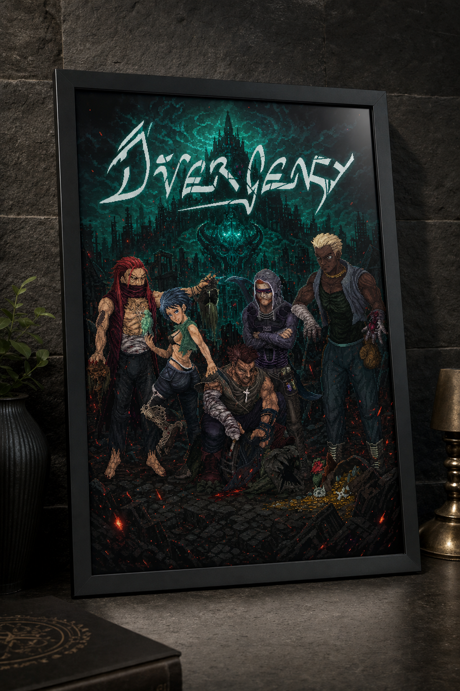
Reward concept
A3 Divergency Poster
One unframed 297 × 420 mm print. Choose it in Scout €99, or receive it in the proposed Collector €199 and tiers inheriting that bundle. Extra copy: €25.
Reward concept
Bastonne Cell Cap
One adjustable embroidered cap. Choose it in Scout €99, or receive it in the proposed Collector €199 and tiers inheriting that bundle. Extra cap: €35. Fit range awaits sampling.
Reward concept
Pixel Patch Set — 3 patches
Choose three designs from Deep, Solei and Jamerson; repeats allowed. Default: one of each. Included in the proposed Collector and tiers inheriting it; extra set €15. Older concept shows additional accessories: keychains, stickers and props are not included.
Concept only — sample and costs pending
Character Figure — one painted resin figure
Choose one character from the final approved lineup. 90 mm overall, including 5 mm base; base diameter 45 mm. Painted resin. Target add-on €65; one included in the Collector €199 proposal. The image shows multiple choices and an unpainted finish reference, not the quantity supplied.
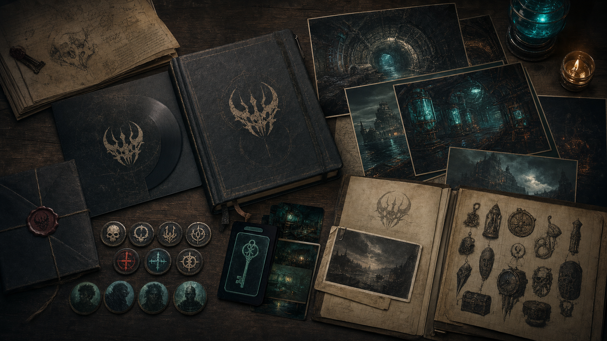
Digital reward
Digital Artbook & Lore Dossier
Downloadable PDF from Crooked-Grin Adventurer €25 and tiers inheriting it. No printed book, physical evidence packet or staging props included.
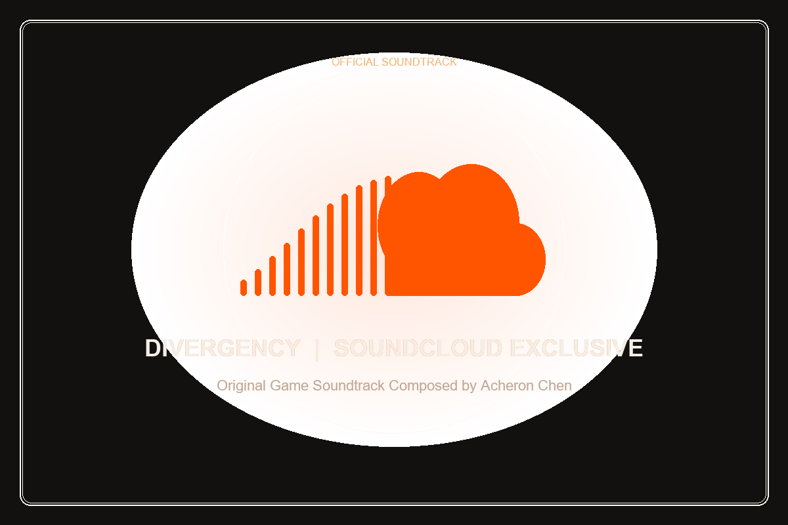
Digital reward
Original Soundtrack & Audio
Composed by Acheron Chen. Complete digital album included in Crooked-Grin Adventurer €25 and all tiers inheriting it.
Estimated physical dispatch: August 2027. Patches, poster, cap and figure are grouped into one dispatch per backer; there is no separate November 2026 patch shipment. Protective packaging may require more than one parcel. The Demiurge physical goods also target August 2027; its creative contribution targets December 2027.
Worldwide shipping is planned to supported destinations, with a country-specific quote before payment. Shipping is charged separately and is not included in reward or add-on prices. A combined quote covers the complete parcel order; do not add a full standalone shipping charge for every small add-on. Any applicable taxes or import charges must be explained before checkout. Do not enable destinations without a shipping quote.
Physical add-ons are for eligible tiers with physical shipping. Digital-only tiers receive digital add-ons. Addresses, patch designs, cap/poster choice and figure character are collected in the backer survey. Reserve replacement stock and confirm packaged weight and breakage protection before launch.
No copyrighted or licensed characters, hate speech, explicit sexual content, real-world political targeting, or content that breaks immersion or Divergency's dark fantasy tone.
The development team keeps final approval on all names, designs, texts, dialogue lines, and mechanics.
If a submission does not meet guidelines, the backer will be asked to submit a revised proposal within a designated time window.
Map Extra PC Digital Game Key only to tiers that already include a game; target price €15. Verify the restriction in Kickstarter preview before launch.
Use one shared item definition for every occurrence of poster, cap, patch set and painted figure. Adding an add-on increases quantity.
Collect Scout choice: one poster OR one cap.
Collect three patch choices from Deep, Solei and Jamerson; allow repeats and default to one of each.
Collect one figure character choice from the final approved lineup. The finish is painted, not a mixed painted/unpainted selection.
Remove bracelet and fix the old Bracelet/Hat item mapping.
Use destination-specific combined shipping quotes, address collection and an address-lock date.
Do not activate the figure or Collector proposal before supplier sample, painting cost, packaging and delivery are approved.
Keep the physical shipping target August 2027, including patches; explain any later change before collecting additional charges.
Kickstarter tier/item settings match the EUR table and exact quantities on this page.
Figure and revised Collector price are validated against actual supplier costs and a physical sample.
Patch sample, cap fit and A3 print proof are approved.
Destination shipping quotes include packaged weight and replacement provision.
The legacy 24-month production plan is reconciled with the August 2027 targets.
Console/Switch delivery is not offered without confirmed platform and release arrangements.
No bracelet, keychain or printed-book inclusion remains in current reward descriptions.
48 Relics · Vũ khí & Dị vật
Kho Vật Phẩm (Item Wiki)
48 artwork và hợp đồng thống nhất với prototype Unity: 20 thụ động, 10 kích hoạt, 15 tiêu hao, 3 nhiệm vụ; cách dùng, cooldown, giới hạn boss và Độ Nhiễu. Chưa chứng nhận multiplayer từ máy khác.
Read
108 min
Sections
7
Tables
6
Kho Vật Phẩm & Cổ Vật Chiến Đấu
Đồng bộ thiết kế 31/10/2026. 48 hợp đồng dùng chung nguồn thiết kế với game, gồm 20 thụ động, 10 kích hoạt, 15 tiêu hao và 3 nhiệm vụ. Prototype có đường xử lý cho đủ 48 món; kiểm thử cục bộ không chứng nhận toàn bộ hiệu ứng, hành trình nhiệm vụ hoặc multiplayer từ máy khác.
48 artwork gốc từ item_in_khoa.png, giữ đúng tọa độ 8 cột × 6 hàng. Item nằm trong inventory, trang bị để nhận hiệu ứng hoặc bấm sử dụng; nhân vật giữ trọn vẹn bộ đòn và vũ khí cố hữu hiện có. Đọc luật chung và các số liệu đã sửa hoặc tra đủ 48 ô.
Artwork, item trang bị và essence khảm chiêu là ba lớp khác nhau. Hợp đồng Unity được xuất từ cùng nguồn thiết kế; asset được nhập bằng Unity API. Mọi hình ảnh vũ khí (chùy, kiếm, đao, búa, lao, kunai) nay đóng vai trò là biểu tượng công năng buff áp lên bộ chiêu sẵn có của nhân vật. Game test không dùng mana/stamina; mọi công năng kiếm được bằng gameplay. Xem phạm vi socket.
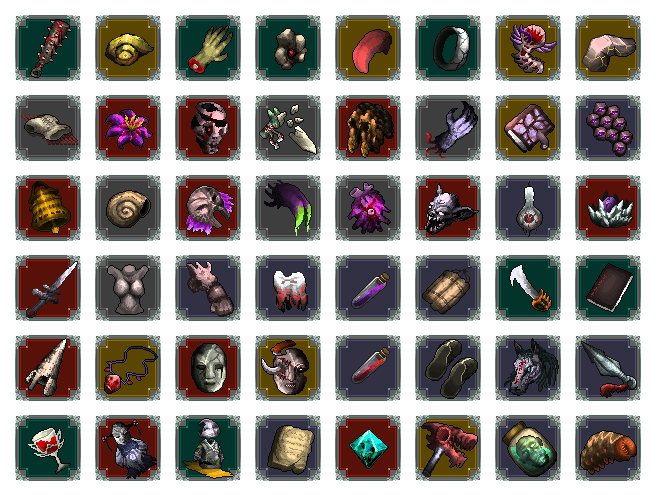
Artwork gốc · 8 cột × 6 hàng · mỗi ô có một bản quy tắc.
48 vật phẩm và tình huống sử dụng
R0·C0
Chùy Gai Rỉ Máu Bastonne
Bloodied Trench Club
Trang bị thụ độngTrang bị thụ động · 1 trong 2 ô
Khối chùy gỗ đặc bịt đai sắt đóng đầy đinh rỉ, thấm đẫm máu khô của các cai ngục và tù nhân trong cuộc hỗn chiến ngục tối.
Cơ chế chiến đấu: Đòn nặng hiện có tăng 25% sức phá đỡ (pressure ×1.25) và gây chảy máu 3 HP/giây trong 4 s, không chí mạng.
Đồng đội phối hợp: Trang bị phá thủ, gây sát thương kéo dài bằng đòn nặng sẵn có của nhân vật; tạo nhánh build phá thế.
Độ Nhiễu: +0 / −0 điểm Nhiễu · kháng 0%. Không tăng, giảm hoặc kháng Nhiễu; hiệu ứng vật lý không tự chặn thần lực.
Cách dùng, thu thập và giới hạn
Loại / mang theo
Trang bị thụ động · 1 trong 2 ô · 1 bản · 1 trong 2 ô trang bị
Mục tiêu
Địch trúng đòn nặng của người đeo
Thu thập
Nguồn đề xuất: rương tiếp tế, thương nhân hoặc thưởng encounter tại Chương 0: Nhà tù Bastonne. Recipe và giá mua mở theo tiến độ.
Thời lượng / hồi
Thụ động theo trang bị; hồi theo điều kiện riêng, không có nút hồi chung
Tình huống dùng
Trang bị phá thủ, gây sát thương kéo dài bằng đòn nặng sẵn có của nhân vật; tạo nhánh build phá thế.
Giới hạn / boss
Bleed cùng nguồn chỉ làm mới, không cộng tầng. Boss chỉ nhận pressure trong cửa sổ hợp lệ; không choáng hoặc phá phase bắt buộc.
Độ Nhiễu
+0 / −0 điểm Nhiễu · kháng 0%. Không tăng, giảm hoặc kháng Nhiễu; hiệu ứng vật lý không tự chặn thần lực.
Cần có trước khi mở
heavy-attack-modifier, bleed
R0·C1
Vỏ Ốc Xà Cừ Hoàng Kim
Golden Nautilus Shell
Trang bị kích hoạtTrang bị kích hoạt · 1 trong 2 ô
Hóa thạch ốc anh vũ biển sâu dát lớp xà cừ óng ánh hổ phách, lưu giữ tiếng vọng của đại dương tiền sử trước thảm họa Sao Rơi.
Cơ chế chiến đấu: Tạo trường bảo hộ 6 s cho đồng minh gần: giảm 40% sát thương âm thanh (sonic/shockwave ×0.60) và kháng 30% Nhiễu nguồn Cái Tai. Hồi 20 s.
Đồng đội phối hợp: Dùng trước sóng âm để giữ tuyến, hỗ trợ đồng đội thao tác tiếp cận và ngắt nguồn.
Độ Nhiễu: +0 / −0 điểm Nhiễu · kháng 30% · nguồn Cái Tai · 6 s. Kháng 30% Nhiễu mới từ nguồn Cái Tai trong trường 6 s; không hạ Nhiễu hiện tại, không chặn nguồn Mắt/Tim.
Cách dùng, thu thập và giới hạn
Loại / mang theo
Trang bị kích hoạt · 1 trong 2 ô · 1 bản · 1 trong 2 ô trang bị
Mục tiêu
Bản thân và đồng minh sống trong bán kính 4 m
Thu thập
Nguồn đề xuất: rương tiếp tế, thương nhân hoặc thưởng encounter tại Chương 1: Cảng Cổ Marseille. Recipe và giá mua mở theo tiến độ.
Thời lượng / hồi
6 s; hồi 20 s
Tình huống dùng
Dùng trước sóng âm để giữ tuyến, hỗ trợ đồng đội thao tác tiếp cận và ngắt nguồn.
Giới hạn / boss
Một trường mạnh nhất áp dụng; không cộng dồn nhiều vỏ ốc. Giảm damage và kháng Nhiễu là hai phép tính riêng.
Độ Nhiễu
+0 / −0 điểm Nhiễu · kháng 30% · nguồn Cái Tai · 6 s. Kháng 30% Nhiễu mới từ nguồn Cái Tai trong trường 6 s; không hạ Nhiễu hiện tại, không chặn nguồn Mắt/Tim.
Cần có trước khi mở
damage-tags, noise-system
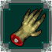
R0·C2
Bàn Tay Quỷ Đứt Lìa
Severed Fiend Claw
Trang bị kích hoạtTrang bị kích hoạt · 1 trong 2 ô
Bàn tay ba ngón xám ngoét với móng vuốt cong hoắm, phần cổ tay đứt lìa vẫn còn rỉ chất dịch đen ma quỷ.
Cơ chế chiến đấu: Khi trang bị, đòn nặng hiện có tăng 25% sát thương. Bấm kích hoạt mở hút máu 8 s: đòn nặng đầu tiên gây mất HP thực hồi 5% MaxHP; cộng 6 Nhiễu. Hồi 20 s.
Đồng đội phối hợp: Cường hóa đòn nặng sẵn có của nhân vật và tự chọn thời điểm bấm kích hoạt để hồi phục trong giao tranh.
Độ Nhiễu: +6 / −0 điểm Nhiễu · kháng 0%. Chỉ +6 điểm khi chủ động mở hút máu; không tính theo số hit hoặc đòn nặng thường.
Cách dùng, thu thập và giới hạn
Loại / mang theo
Trang bị kích hoạt · 1 trong 2 ô · 1 bản · 1 trong 2 ô trang bị
Mục tiêu
Bản thân; đòn nặng hiện có trúng địch hợp lệ
Thu thập
Nguồn đề xuất: rương tiếp tế, thương nhân hoặc thưởng encounter tại Chương 2: Tế đàn Sakuri. Recipe và giá mua mở theo tiến độ.
Thời lượng / hồi
8 s; hồi 20 s
Tình huống dùng
Cường hóa đòn nặng sẵn có của nhân vật và tự chọn thời điểm bấm kích hoạt để hồi phục trong giao tranh.
Giới hạn / boss
Hút máu chỉ một lần mỗi lần mở, không từ xác, bóng vô hại hoặc sát thương 0. Không cấp động tác vật mới hoặc cưỡng bức vật boss. Đòn nặng thường không gây Nhiễu.
Độ Nhiễu
+6 / −0 điểm Nhiễu · kháng 0%. Chỉ +6 điểm khi chủ động mở hút máu; không tính theo số hit hoặc đòn nặng thường.
Cần có trước khi mở
heavy-attack-modifier, lifesteal, noise-system
R0·C3
Khối Đá Mắt Ma Ám
Ghost-Eye Soul Stone
Trang bị kích hoạtTrang bị kích hoạt · 1 trong 2 ô
Khối đá núi lửa màu tro xám với con mắt đỏ ngầu nằm ẩn giữa các nếp đá, liên tục đảo quanh quan sát.
Cơ chế chiến đấu: Soi địch/bẫy gần trong 4 s. Nếu người dùng dưới 25% HP, phát thêm xung đẩy lính trong 3 m để thoát vây. Hồi 30 s.
Đồng đội phối hợp: Trinh sát phục kích, tìm dấu nối nguồn hoặc kích hoạt xung thoát vây khẩn cấp khi thấp máu.
Độ Nhiễu: +0 / −0 điểm Nhiễu · kháng 0%. Chỉ cung cấp thông tin và giải vây vật lý; không tự lọc hoặc miễn nhiễm Nhiễu.
Cách dùng, thu thập và giới hạn
Loại / mang theo
Trang bị kích hoạt · 1 trong 2 ô · 1 bản · 1 trong 2 ô trang bị
Mục tiêu
Người giữ; địch và bẫy vật lý trong bán kính 10 m
Thu thập
Nguồn đề xuất: rương tiếp tế, thương nhân hoặc thưởng encounter tại Chương 3: Hẻm đá Calvaria. Recipe và giá mua mở theo tiến độ.
Thời lượng / hồi
4 s; hồi 30 s
Tình huống dùng
Trinh sát phục kích, tìm dấu nối nguồn hoặc kích hoạt xung thoát vây khẩn cấp khi thấp máu.
Giới hạn / boss
Không bật HP giả, không biến ảnh chiếu thành vật thể, không tự giải mọi câu đố hoặc tiết lộ mục tiêu ẩn cốt truyện.
Độ Nhiễu
+0 / −0 điểm Nhiễu · kháng 0%. Chỉ cung cấp thông tin và giải vây vật lý; không tự lọc hoặc miễn nhiễm Nhiễu.
Cần có trước khi mở
reveal-tags, trap-tags
R0·C4
Lưỡi Quỷ Câm Lặng
Flayed Hex Tongue
Tiêu hao nhanhTiêu hao nhanh · 1 trong 2 ô hotbar
Chiếc lưỡi thịt đỏ lòm bị xẻ đôi của một kẻ cuồng tín, rỉ máu đen phong ấn lời nguyền báng bổ.
Cơ chế chiến đấu: Câm lặng pháp sư và nguồn âm hợp lệ gần đó trong 8 s. Địch vẫn có thể di chuyển và đánh thường.
Đồng đội phối hợp: Ngắt một nhóm niệm chú hoặc tạm dừng loa cộng hưởng có thể câm lặng để tiếp cận công tắc.
Độ Nhiễu: +0 / −0 điểm Nhiễu · kháng 0%. Không trừ điểm trực tiếp. Nguồn âm bị câm lặng ngừng phát Nhiễu trong 8 s; nguồn khác vẫn hoạt động.
Cách dùng, thu thập và giới hạn
Loại / mang theo
Tiêu hao nhanh · 1 trong 2 ô hotbar · 3 chiếc · 1 trong 2 ô dùng nhanh
Mục tiêu
Pháp sư thường và nguồn phát có tag silenceable trong 8 m
Thu thập
Nguồn đề xuất: rương tiếp tế, thương nhân hoặc thưởng encounter tại Chương 3: Thánh đường Calvaria. Recipe và giá mua mở theo tiến độ.
Thời lượng / hồi
8 s; hồi 20 s
Tình huống dùng
Ngắt một nhóm niệm chú hoặc tạm dừng loa cộng hưởng có thể câm lặng để tiếp cận công tắc.
Giới hạn / boss
Boss chỉ bị ngắt 0.5 s trong cửa sổ cho phép; không xóa cơ chế phòng, phase hoặc trận Stranger.
Độ Nhiễu
+0 / −0 điểm Nhiễu · kháng 0%. Không trừ điểm trực tiếp. Nguồn âm bị câm lặng ngừng phát Nhiễu trong 8 s; nguồn khác vẫn hoạt động.
Cần có trước khi mở
silence-tags, source-control
R0·C5
Vòng Xiềng Đá Tội Đồ Bastonne
Bastonne Shackle Torc
Trang bị thụ độngTrang bị thụ động · 1 trong 2 ô
Vòng đai đá cứng bọc sắt rạn nứt mang mã số tù khổ sai, minh chứng cho ý chí sinh tồn không thể bẻ gãy.
Cơ chế chiến đấu: Giảm 35% lực đẩy lùi (KnockbackTaken ×0.65) và 40% lực hất lên khi trang bị. Hợp với lối chơi đứng tuyến đầu.
Đồng đội phối hợp: Giữ vị trí khi đỡ đòn và bảo vệ lối sơ tán; vẫn có thể bị ném hoặc đánh ngã theo luật chiêu.
Độ Nhiễu: +0 / −0 điểm Nhiễu · kháng 0%. Không tăng, giảm hoặc kháng Nhiễu; hiệu ứng vật lý không tự chặn thần lực.
Cách dùng, thu thập và giới hạn
Loại / mang theo
Trang bị thụ động · 1 trong 2 ô · 1 bản · 1 trong 2 ô trang bị
Mục tiêu
Bản thân
Thu thập
Nguồn đề xuất: rương tiếp tế, thương nhân hoặc thưởng encounter tại Chương 0: Nhà tù Bastonne. Recipe và giá mua mở theo tiến độ.
Thời lượng / hồi
Thụ động theo trang bị; hồi theo điều kiện riêng, không có nút hồi chung
Tình huống dùng
Giữ vị trí khi đỡ đòn và bảo vệ lối sơ tán; vẫn có thể bị ném hoặc đánh ngã theo luật chiêu.
Giới hạn / boss
Không cộng với bản sao; lực hất bắt buộc của kịch bản và hố chết không bị vô hiệu hóa. Không tự cộng giảm sát thương HP.
Độ Nhiễu
+0 / −0 điểm Nhiễu · kháng 0%. Không tăng, giảm hoặc kháng Nhiễu; hiệu ứng vật lý không tự chặn thần lực.
Cần có trước khi mở
reaction-modifiers
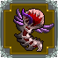
R0·C6
Trùng Tủy Sống Có Cánh
Winged Spinal Parasite
Trang bị thụ độngTrang bị thụ động · 1 trong 2 ô
Sinh vật đốt xương gớm ghiếc có đôi cánh thịt tím thẫm và hàm răng tua tủa, chuyên bám vào đốt sống.
Cơ chế chiến đấu: Một lần mỗi trận, chịu đòn chí tử sẽ còn 1 HP và đẩy lính xung quanh; cộng 10 Nhiễu khi thực sự cứu mạng.
Đồng đội phối hợp: Bảo hiểm trước một sai lầm khi đánh boss, sau đó phải tìm cách hồi HP hoặc rút lui.
Độ Nhiễu: +10 / −0 điểm Nhiễu · kháng 0%. +10 điểm đúng lúc cứu mạng thực sự kích hoạt; không phát sinh nếu đòn đã bị chặn. Đây là hậu quả được báo trước của bảo hiểm chủ động trang bị.
Cách dùng, thu thập và giới hạn
Loại / mang theo
Trang bị thụ động · 1 trong 2 ô · 1 bản · 1 trong 2 ô trang bị
Mục tiêu
Bản thân
Thu thập
Nguồn đề xuất: rương tiếp tế, thương nhân hoặc thưởng encounter tại Chương 4: Hang Rồng Akam Meskul. Recipe và giá mua mở theo tiến độ.
Thời lượng / hồi
Thụ động theo trang bị; hồi theo điều kiện riêng, không có nút hồi chung
Tình huống dùng
Bảo hiểm trước một sai lầm khi đánh boss, sau đó phải tìm cách hồi HP hoặc rút lui.
Giới hạn / boss
Charge chỉ hồi ở checkpoint/encounter mới theo snapshot; không hồi khi tháo/lắp. Không cứu hố chết, kết thúc màn hoặc mất neo Stranger.
Độ Nhiễu
+10 / −0 điểm Nhiễu · kháng 0%. +10 điểm đúng lúc cứu mạng thực sự kích hoạt; không phát sinh nếu đòn đã bị chặn. Đây là hậu quả được báo trước của bảo hiểm chủ động trang bị.
Cần có trước khi mở
lethal-hit-hook, noise-system
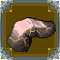
R0·C7
Chân Xác Ướp Phong Ấn
Mummified Stalker Foot
Trang bị kích hoạtTrang bị kích hoạt · 1 trong 2 ô
Cơ chế chiến đấu: Trang bị tăng 25% quãng dash. Kích hoạt để lại vệt tro 3 s, làm chậm địch chạm vào (MoveSpeed ×0.70); cộng 3 Nhiễu. Hồi 12 s.
Đồng đội phối hợp: Tăng khả năng thoát vòng vây; chỉ mở vệt làm chậm khi muốn trả giá cộng hưởng.
Độ Nhiễu: +3 / −0 điểm Nhiễu · kháng 0%. +3 điểm một lần khi chủ động mở vệt tro; không tính theo bước dash, số địch hoặc tick.
Cách dùng, thu thập và giới hạn
Loại / mang theo
Trang bị kích hoạt · 1 trong 2 ô · 1 bản · 1 trong 2 ô trang bị
Mục tiêu
Bản thân; địch thường chạm vệt tro
Thu thập
Nguồn đề xuất: rương tiếp tế, thương nhân hoặc thưởng encounter tại Chương 4: Hầm mộ xương rồng. Recipe và giá mua mở theo tiến độ.
Thời lượng / hồi
3 s; hồi 12 s
Tình huống dùng
Tăng khả năng thoát vòng vây; chỉ mở vệt làm chậm khi muốn trả giá cộng hưởng.
Giới hạn / boss
Dash thường không có chi phí Nhiễu. Không kéo dài i-frame, vượt biên hoặc bỏ qua va chạm; boss bị chậm tối đa 10%.
Độ Nhiễu
+3 / −0 điểm Nhiễu · kháng 0%. +3 điểm một lần khi chủ động mở vệt tro; không tính theo bước dash, số địch hoặc tick.
Cần có trước khi mở
dash-distance, slow-tags, noise-system
R1·C0
Vải Liệm Rách Bastonne
Torn Bastonne Shroud
Tiêu hao nhanhTiêu hao nhanh · 1 trong 2 ô hotbar
Mảnh vải bao bố thô rách tơi tả dính đất bùn và vệt máu khô, vật dụng cấp cứu thô sơ nhưng cứu mạng của tử tù.
Cơ chế chiến đấu: Xóa chảy máu (Bleed) và hồi 10% MaxHP cho bản thân hoặc một đồng minh gần trong 2 m.
Đồng đội phối hợp: Cầm máu sau đòn cào hoặc cứu đồng đội đang rút lui.
Độ Nhiễu: +0 / −0 điểm Nhiễu · kháng 0%. Không tăng, giảm hoặc kháng Nhiễu; hiệu ứng vật lý không tự chặn thần lực.
Cách dùng, thu thập và giới hạn
Loại / mang theo
Tiêu hao nhanh · 1 trong 2 ô hotbar · 5 chiếc · 1 trong 2 ô dùng nhanh
Mục tiêu
Một đồng minh sống trong 2 m hoặc bản thân
Thu thập
Nguồn đề xuất: rương tiếp tế, thương nhân hoặc thưởng encounter tại Chương 0: Nhà tù Bastonne. Recipe và giá mua mở theo tiến độ.
Thời lượng / hồi
Tức thời; hồi 10 s
Tình huống dùng
Cầm máu sau đòn cào hoặc cứu đồng đội đang rút lui.
Giới hạn / boss
Không xóa độc, Nhiễu hoặc khóa MaxHP. Đủ HP và không Bleed thì từ chối dùng, không tiêu đồ.
Độ Nhiễu
+0 / −0 điểm Nhiễu · kháng 0%. Không tăng, giảm hoặc kháng Nhiễu; hiệu ứng vật lý không tự chặn thần lực.
Cần có trước khi mở
bleed, ally-targeting, healing
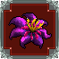
R1·C1
Hoa Huyết Liên Heniana
Heniana Cursed Lotus
Tiêu hao nhanhTiêu hao nhanh · 1 trong 2 ô hotbar
Đóa hoa màu hồng tím rực rỡ với nhị vàng chói lọi, mọc lên từ những khe đá ngấm huyết dịch nguyên thủy.
Cơ chế chiến đấu: Đổi thành đồ thanh lọc: giảm 10 Nhiễu và hồi 10% MaxHP cho người dùng. Bỏ phần Stamina/Synergy.
Đồng đội phối hợp: Chuẩn bị một pha phối hợp cứu hộ; đồng thời lọc một lượng nhỏ Nhiễu cho người dùng.
Độ Nhiễu: +0 / −10 điểm Nhiễu · kháng 0%. Giảm 10 điểm cho người dùng nếu không trong khóa thanh lọc 10 s; không giảm Nhiễu cả đội.
Cách dùng, thu thập và giới hạn
Loại / mang theo
Tiêu hao nhanh · 1 trong 2 ô hotbar · 3 chiếc · 1 trong 2 ô dùng nhanh
Mục tiêu
Bản thân
Thu thập
Nguồn đề xuất: rương tiếp tế, thương nhân hoặc thưởng encounter tại Chương 2: Dược thảo Sakuri. Recipe và giá mua mở theo tiến độ.
Thời lượng / hồi
Tức thời; hồi 20 s
Tình huống dùng
Chuẩn bị một pha phối hợp cứu hộ; đồng thời lọc một lượng nhỏ Nhiễu cho người dùng.
Giới hạn / boss
Mỗi người nhận tối đa một hiệu ứng thanh lọc trong 10 s; không cộng dồn nhiều người dùng liên tiếp.
Độ Nhiễu
+0 / −10 điểm Nhiễu · kháng 0%. Giảm 10 điểm cho người dùng nếu không trong khóa thanh lọc 10 s; không giảm Nhiễu cả đội.
Cần có trước khi mở
cleanse, noise-system, healing
R1·C2
Sọ Nứt Khát Máu
Cracked Crimson Skull
Trang bị thụ độngTrang bị thụ động · 1 trong 2 ô
Hộp sọ vỡ toác để lộ khoang rỗng bốc khói đỏ thẫm, chứa đựng sự hận thù của những đấu sĩ tử trận.
Cơ chế chiến đấu: Dưới 30% HP: tăng 15% sát thương và 20% sát thương chí mạng (CritDamage ×1.20). Hiệu ứng tắt khi hồi đến 35% HP.
Đồng đội phối hợp: Lựa chọn đánh mạo hiểm ở thấp HP; vẫn cần né và hồi phục để sống sót.
Độ Nhiễu: +0 / −0 điểm Nhiễu · kháng 0%. Không tăng, giảm hoặc kháng Nhiễu; hiệu ứng vật lý không tự chặn thần lực.
Cách dùng, thu thập và giới hạn
Loại / mang theo
Trang bị thụ động · 1 trong 2 ô · 1 bản · 1 trong 2 ô trang bị
Mục tiêu
Bản thân
Thu thập
Nguồn đề xuất: rương tiếp tế, thương nhân hoặc thưởng encounter tại Chương 3: Đấu trường Calvaria. Recipe và giá mua mở theo tiến độ.
Thời lượng / hồi
Thụ động theo trang bị; hồi theo điều kiện riêng, không có nút hồi chung
Tình huống dùng
Lựa chọn đánh mạo hiểm ở thấp HP; vẫn cần né và hồi phục để sống sót.
Giới hạn / boss
Không thêm 35% tốc độ animation hoặc cộng 40 điểm phần trăm crit. Không kích hoạt từ tự gây damage giả; không tăng theo thời gian giao tranh.
Độ Nhiễu
+0 / −0 điểm Nhiễu · kháng 0%. Không tăng, giảm hoặc kháng Nhiễu; hiệu ứng vật lý không tự chặn thần lực.
Cần có trước khi mở
low-hp-modifier, crit-damage
R1·C3
Nanh Độc & Xương Nhọn Bẫy Chông
Bone Shards & Venom Fangs
Tiêu hao nhanhTiêu hao nhanh · 1 trong 2 ô hotbar
Cụm xương sườn gãy bén ngót cùng răng nanh thú săn mồi ngâm trong dịch độc màu xanh lục bảo.
Cơ chế chiến đấu: Dùng để đặt bẫy tại vị trí nhân vật; tồn tại 8 s, làm khựng 1.2 s và gây độc (Poison 4 HP/s trong 5 s) cho địch chạm vào.
Đồng đội phối hợp: Chặn sườn, bảo vệ vị trí hồi cứu hoặc dẫn địch ra khỏi nguồn phát.
Độ Nhiễu: +0 / −0 điểm Nhiễu · kháng 0%. Không tăng, giảm hoặc kháng Nhiễu; hiệu ứng vật lý không tự chặn thần lực.
Cách dùng, thu thập và giới hạn
Loại / mang theo
Tiêu hao nhanh · 1 trong 2 ô hotbar · 3 chiếc · 1 trong 2 ô dùng nhanh
Mục tiêu
Địch chạm bẫy đất trong bán kính 2 m
Thu thập
Nguồn đề xuất: rương tiếp tế, thương nhân hoặc thưởng encounter tại Chương 1: Phố Noailles & Cống ngầm. Recipe và giá mua mở theo tiến độ.
Thời lượng / hồi
8 s; hồi 12 s
Tình huống dùng
Chặn sườn, bảo vệ vị trí hồi cứu hoặc dẫn địch ra khỏi nguồn phát.
Giới hạn / boss
Tối đa hai bẫy của cùng chủ. Boss khựng tối đa 0.3 s nếu cho phép; Poison không cộng tầng cùng loại, không làm hại dân/đồng minh.
Độ Nhiễu
+0 / −0 điểm Nhiễu · kháng 0%. Không tăng, giảm hoặc kháng Nhiễu; hiệu ứng vật lý không tự chặn thần lực.
Cần có trước khi mở
ground-trap, poison
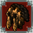
R1·C4
Mặt Nạ Tóc Bện Người Chết
Matted Hair Shroud Mask
Trang bị thụ độngTrang bị thụ động · 1 trong 2 ô
Mặt nạ làm bằng da mặt thuộc thủ công kết hợp tóc bện khô cứng, toát ra tử khí kinh rợn.
Cơ chế chiến đấu: Địch trong 3 m gây ít hơn 10% sát thương (damage ×0.90). Tạo một lựa chọn hỗ trợ phòng thủ cho cả đội.
Đồng đội phối hợp: Giảm áp lực tuyến trước mà vẫn giữ khả năng đọc và phản đòn.
Độ Nhiễu: +0 / −0 điểm Nhiễu · kháng 0%. Không tăng, giảm hoặc kháng Nhiễu; hiệu ứng vật lý không tự chặn thần lực.
Cách dùng, thu thập và giới hạn
Loại / mang theo
Trang bị thụ động · 1 trong 2 ô · 1 bản · 1 trong 2 ô trang bị
Mục tiêu
Địch thường trong 3 m
Thu thập
Nguồn đề xuất: rương tiếp tế, thương nhân hoặc thưởng encounter tại Chương 3: Nhà thờ Calvaria. Recipe và giá mua mở theo tiến độ.
Thời lượng / hồi
Thụ động theo trang bị; hồi theo điều kiện riêng, không có nút hồi chung
Tình huống dùng
Giảm áp lực tuyến trước mà vẫn giữ khả năng đọc và phản đòn.
Giới hạn / boss
Một aura mạnh nhất cho mỗi địch; boss chỉ nhận khi có tag fear-vulnerable. Không điều khiển nhân vật hoặc HUD của người chơi.
Độ Nhiễu
+0 / −0 điểm Nhiễu · kháng 0%. Không tăng, giảm hoặc kháng Nhiễu; hiệu ứng vật lý không tự chặn thần lực.
Cần có trước khi mở
enemy-aura, fear-tags
R1·C5
Cánh Tay Bóng Tối Hư Vô
Abyssal Shadow Arm
Trang bị kích hoạtTrang bị kích hoạt · 1 trong 2 ô
Cánh tay quỷ màu xám tro vươn lên từ các sợi gân máu đen, như muốn lôi tuột mọi sinh linh xuống vực thẳm.
Cơ chế chiến đấu: Kích hoạt kéo một lính đang trên không xuống đất, tạo va chạm khựng 0.8 s trong 2 m quanh điểm rơi; cộng 6 Nhiễu khi kéo thành công. Hồi 15 s.
Đồng đội phối hợp: Bảo vệ đồng đội trước địch bay hoặc chuẩn bị một chuỗi đánh tiếp đất.
Độ Nhiễu: +6 / −0 điểm Nhiễu · kháng 0%. +6 điểm khi cú kéo được server chấp nhận; không tính thêm theo số mục tiêu dính dư chấn.
Cách dùng, thu thập và giới hạn
Loại / mang theo
Trang bị kích hoạt · 1 trong 2 ô · 1 bản · 1 trong 2 ô trang bị
Mục tiêu
Một địch trên không trong 4 m
Thu thập
Nguồn đề xuất: rương tiếp tế, thương nhân hoặc thưởng encounter tại Chương 2: Sakuri. Recipe và giá mua mở theo tiến độ.
Thời lượng / hồi
Kích hoạt tức thời; hồi 15 s
Tình huống dùng
Bảo vệ đồng đội trước địch bay hoặc chuẩn bị một chuỗi đánh tiếp đất.
Giới hạn / boss
Không kéo boss/địch khóa vị trí; không tự kích hoạt theo mọi combo. Thiếu mục tiêu hợp lệ thì không trả chi phí.
Độ Nhiễu
+6 / −0 điểm Nhiễu · kháng 0%. +6 điểm khi cú kéo được server chấp nhận; không tính thêm theo số mục tiêu dính dư chấn.
Cần có trước khi mở
air-grapple, noise-system
R1·C6
Cấm Thư Pha Lê Phong Ấn
Crystal-Bound Grimoire
Trang bị thụ độngTrang bị thụ động · 1 trong 2 ô
Cuốn sách bìa da dày cộp nẹp các phiến đá thạch anh tím phát quang, lưu giữ nghiên cứu cấm về đột biến thể xác.
Cơ chế chiến đấu: Tăng 15% phạm vi kỹ năng hỗ trợ; giảm 20% cooldown của những kỹ năng hỗ trợ thực sự có cooldown. Không thêm ô kỹ năng. Tooltip liệt kê chiêu được hưởng.
Đồng đội phối hợp: Hỗ trợ đội dùng các kỹ năng đã gán thường xuyên hơn, sau khi hệ cooldown tương ứng được triển khai.
Độ Nhiễu: +0 / −0 điểm Nhiễu · kháng 0%. Không tăng, giảm hoặc kháng Nhiễu; hiệu ứng vật lý không tự chặn thần lực.
Cách dùng, thu thập và giới hạn
Loại / mang theo
Trang bị thụ động · 1 trong 2 ô · 1 bản · 1 trong 2 ô trang bị
Mục tiêu
Các kỹ năng hỗ trợ có tag cooldown-modifiable của đội trong 4 m
Thu thập
Nguồn đề xuất: rương tiếp tế, thương nhân hoặc thưởng encounter tại Chương 1: Trạm ngầm MuCEM Shemal. Recipe và giá mua mở theo tiến độ.
Thời lượng / hồi
Thụ động theo trang bị; hồi theo điều kiện riêng, không có nút hồi chung
Tình huống dùng
Hỗ trợ đội dùng các kỹ năng đã gán thường xuyên hơn, sau khi hệ cooldown tương ứng được triển khai.
Giới hạn / boss
Một hiệu ứng sách cho cả đội. Không giảm vrest, thời gian phase, hồi đồ, charge hồi sinh hoặc khóa encounter; không tạo cooldown chung cho chiêu chưa có.
Độ Nhiễu
+0 / −0 điểm Nhiễu · kháng 0%. Không tăng, giảm hoặc kháng Nhiễu; hiệu ứng vật lý không tự chặn thần lực.
Cần có trước khi mở
tagged-skill-cooldowns, support-radius
R1·C7
Ổ Kén Bào Tử Tím
Clustered Spore Pods
Tiêu hao nhanhTiêu hao nhanh · 1 trong 2 ô hotbar
Chùm trứng tím sẫm dập dờn như kén ong bắp cày đột biến, sẵn sàng nổ tung khi chịu lực tác động.
Cơ chế chiến đấu: Tạo đám mây độc 5 s tại vị trí dùng (Poison 4 HP/s); lính trong mây khó phát hiện mục tiêu ở xa.
Đồng đội phối hợp: Che đường rút hoặc thao tác hồi cứu; đồng minh vẫn đọc rõ sàn và tín hiệu đòn đánh.
Độ Nhiễu: +0 / −0 điểm Nhiễu · kháng 0%. Không tăng, giảm hoặc kháng Nhiễu; hiệu ứng vật lý không tự chặn thần lực.
Cách dùng, thu thập và giới hạn
Loại / mang theo
Tiêu hao nhanh · 1 trong 2 ô hotbar · 3 chiếc · 1 trong 2 ô dùng nhanh
Mục tiêu
Địch thường trong đám mây bán kính 3 m
Thu thập
Nguồn đề xuất: rương tiếp tế, thương nhân hoặc thưởng encounter tại Chương 4: Hang Rồng. Recipe và giá mua mở theo tiến độ.
Thời lượng / hồi
5 s; hồi 15 s
Tình huống dùng
Che đường rút hoặc thao tác hồi cứu; đồng minh vẫn đọc rõ sàn và tín hiệu đòn đánh.
Giới hạn / boss
Một mây mỗi chủ; boss không mất mục tiêu, độc theo miễn nhiễm. Sương hóa học không phải nguồn Mảnh Thần.
Độ Nhiễu
+0 / −0 điểm Nhiễu · kháng 0%. Không tăng, giảm hoặc kháng Nhiễu; hiệu ứng vật lý không tự chặn thần lực.
Cần có trước khi mở
poison, enemy-visibility
R2·C0
Chuông Đồng Hồn Bastonne
Golden Funeral Bell
Trang bị kích hoạtTrang bị kích hoạt · 1 trong 2 ô
Quả chuông bằng đồng đúc hoa văn tang lễ, tiếng chuông ngân vang có thể xua tan sự u mê ám ảnh.
Cơ chế chiến đấu: Giải choáng/đóng băng/trói có thể giải cho đội gần, giảm 15 Nhiễu mỗi người và tăng Guard (+25 Guard) trong 8 s. Hồi 30 s.
Đồng đội phối hợp: Giải khống chế để đội rút khỏi vùng phát hoặc tiếp tục cứu hộ; có thể bấm khi bị khống chế thông thường.
Độ Nhiễu: +0 / −15 điểm Nhiễu · kháng 0%. Mỗi đồng minh nhận -15 điểm tối đa một lần trong khóa thanh lọc 10 s; không làm mới thời gian Bùng Nhiễu.
Cách dùng, thu thập và giới hạn
Loại / mang theo
Trang bị kích hoạt · 1 trong 2 ô · 1 bản · 1 trong 2 ô trang bị
Mục tiêu
Bản thân và đồng minh sống trong 4 m
Thu thập
Nguồn đề xuất: rương tiếp tế, thương nhân hoặc thưởng encounter tại Chương 0: Nhà tù Bastonne. Recipe và giá mua mở theo tiến độ.
Thời lượng / hồi
8 s; hồi 30 s
Tình huống dùng
Giải khống chế để đội rút khỏi vùng phát hoặc tiếp tục cứu hộ; có thể bấm khi bị khống chế thông thường.
Giới hạn / boss
Không mở khóa cốt truyện, hồi sinh, xóa Overload/Stranger hoặc chặn nguồn đang phát. Buff cùng loại lấy mức mạnh nhất.
Độ Nhiễu
+0 / −15 điểm Nhiễu · kháng 0%. Mỗi đồng minh nhận -15 điểm tối đa một lần trong khóa thanh lọc 10 s; không làm mới thời gian Bùng Nhiễu.
Cần có trước khi mở
dispel-tags, guard-stat, noise-system
R2·C1
Hóa Thạch Cúc Đá Vực Sâu
Fossilized Ammonite Shell
Trang bị thụ độngTrang bị thụ động · 1 trong 2 ô
Vỏ cúc đá hóa thạch hàng triệu năm tuổi với các đường vân xoắn ốc hoàn mỹ, cứng hơn thép tôi luyện.
Cơ chế chiến đấu: Giảm 30% sát thương đạn có thể đỡ bay đến từ phía trước (damage đạn ×0.70).
Đồng đội phối hợp: Dẫn đầu tiến qua tuyến xạ thủ, dùng góc đứng và địa hình thay vì miễn nhiễm đạn.
Độ Nhiễu: +0 / −0 điểm Nhiễu · kháng 0%. Không tăng, giảm hoặc kháng Nhiễu; hiệu ứng vật lý không tự chặn thần lực.
Cách dùng, thu thập và giới hạn
Loại / mang theo
Trang bị thụ động · 1 trong 2 ô · 1 bản · 1 trong 2 ô trang bị
Mục tiêu
Bản thân; projectile từ cung chính diện 120°
Thu thập
Nguồn đề xuất: rương tiếp tế, thương nhân hoặc thưởng encounter tại Chương 1: Bờ biển Marseille. Recipe và giá mua mở theo tiến độ.
Thời lượng / hồi
Thụ động theo trang bị; hồi theo điều kiện riêng, không có nút hồi chung
Tình huống dùng
Dẫn đầu tiến qua tuyến xạ thủ, dùng góc đứng và địa hình thay vì miễn nhiễm đạn.
Giới hạn / boss
Không áp dụng cho vụ nổ, cận chiến hoặc đòn sau lưng; không tự trang bị khiên cho nhân vật.
Độ Nhiễu
+0 / −0 điểm Nhiễu · kháng 0%. Không tăng, giảm hoặc kháng Nhiễu; hiệu ứng vật lý không tự chặn thần lực.
Cần có trước khi mở
projectile-direction, damage-tags
R2·C2
Mặt Nạ Quỷ Lửa Tím
Phantom Pyre Mask
Trang bị thụ độngTrang bị thụ động · 1 trong 2 ô
Mặt nạ nứt nửa bốc ngọn lửa ma thuật màu tím ma mị, hút lấy tinh thần lực của kẻ thù bị thiêu đốt.
Cơ chế chiến đấu: Đổi thiết kế: mỗi 5 giây trên mỗi mục tiêu, đòn trúng gây thêm một vết bỏng trong 3 giây. Tổng sát thương bỏng bằng 15% đòn kích hoạt; bỏ phụ thuộc vào tài nguyên của quái.
Đồng đội phối hợp: Gia tăng sát thương duy trì theo thời gian lên từng mục tiêu riêng biệt bằng đòn đánh trúng.
Độ Nhiễu: +0 / −0 điểm Nhiễu · kháng 0%. Không tăng, giảm hoặc kháng Nhiễu; hiệu ứng vật lý không tự chặn thần lực.
Cách dùng, thu thập và giới hạn
Loại / mang theo
Trang bị thụ động · 1 trong 2 ô · 1 bản · 1 trong 2 ô trang bị
Mục tiêu
Địch bị đánh trúng thật
Thu thập
Nguồn đề xuất: rương tiếp tế, thương nhân hoặc thưởng encounter tại Chương 2: Sakuri. Recipe và giá mua mở theo tiến độ.
Thời lượng / hồi
Thụ động theo trang bị; hồi theo điều kiện riêng, không có nút hồi chung
Tình huống dùng
Gia tăng sát thương duy trì theo thời gian lên từng mục tiêu riêng biệt bằng đòn đánh trúng.
Giới hạn / boss
Mỗi mục tiêu chỉ chịu một vết bỏng mỗi 5 s; bỏ phụ thuộc vào tài nguyên của quái (quái không có tài nguyên vẫn chịu sát thương bỏng bình thường). Không ngắt phase boss.
Độ Nhiễu
+0 / −0 điểm Nhiễu · kháng 0%. Không tăng, giảm hoặc kháng Nhiễu; hiệu ứng vật lý không tự chặn thần lực.
Cần có trước khi mở
burn-dot, per-target-cooldown
R2·C3
Móng Vuốt Ăn Mòn Axit
Corrosive Acid Stinger
Tiêu hao nhanhTiêu hao nhanh · 1 trong 2 ô hotbar
Móng vuốt bọ cạp cống rãnh đột biến, đầu ngọn nhỏ giọt axit xanh chanh sôi sùng sục làm mủn cả kim loại.
Cơ chế chiến đấu: Buff đòn đánh trong 15 s. Địch trúng bị đánh dấu, nhận thêm 25% sát thương trực tiếp từ đội; boss nhận thêm 10%.
Đồng đội phối hợp: Mở cửa sổ dồn damage vào lính giáp; cần giữ mục tiêu trong khu vực an toàn.
Độ Nhiễu: +0 / −0 điểm Nhiễu · kháng 0%. Không tăng, giảm hoặc kháng Nhiễu; hiệu ứng vật lý không tự chặn thần lực.
Cách dùng, thu thập và giới hạn
Loại / mang theo
Tiêu hao nhanh · 1 trong 2 ô hotbar · 3 chiếc · 1 trong 2 ô dùng nhanh
Mục tiêu
Vũ khí/bộ đòn của người dùng; địch trúng thật
Thu thập
Nguồn đề xuất: rương tiếp tế, thương nhân hoặc thưởng encounter tại Chương 1: Cống ngầm Laundel. Recipe và giá mua mở theo tiến độ.
Thời lượng / hồi
15 s; hồi 20 s
Tình huống dùng
Mở cửa sổ dồn damage vào lính giáp; cần giữ mục tiêu trong khu vực an toàn.
Giới hạn / boss
Một dấu axit mạnh nhất; boss chỉ ×1.10. Không áp lên lớp cứu hộ Ghost, không nhân damage phản đòn/DOT hoặc tự kích hoạt thêm dấu.
Độ Nhiễu
+0 / −0 điểm Nhiễu · kháng 0%. Không tăng, giảm hoặc kháng Nhiễu; hiệu ứng vật lý không tự chặn thần lực.
Cần có trước khi mở
incoming-damage-mark, buff-coating
R2·C4
Trái Tim Tội Lỗi Ngọ Nguậy
Pulsing Heart of Sin
Trang bị kích hoạtTrang bị kích hoạt · 1 trong 2 ô
Khối thịt dạng trái tim màu tím thẫm đập thình thịch, mở ra một con mắt đỏ rực giữa những xúc tu ngoe nguẩy.
Cơ chế chiến đấu: Đổi 2% MaxHP và 12 Nhiễu lấy 20% sát thương (damage ×1.20) trong 8 giây; không làm HP dưới 1. Hồi 25 s.
Đồng đội phối hợp: Đổi tài nguyên lấy một cửa sổ tấn công rõ ràng khi có thể tiếp cận nguồn phát hoặc boss.
Độ Nhiễu: +12 / −0 điểm Nhiễu · kháng 0%. +12 điểm ngay khi chủ động bật. Hiển thị HP và Nhiễu dự kiến trước khi xác nhận; từ chối nếu sẽ chạm 100.
Cách dùng, thu thập và giới hạn
Loại / mang theo
Trang bị kích hoạt · 1 trong 2 ô · 1 bản · 1 trong 2 ô trang bị
Mục tiêu
Bản thân
Thu thập
Nguồn đề xuất: rương tiếp tế, thương nhân hoặc thưởng encounter tại Chương 4: Dị vật nhỏ tại Akam. Recipe và giá mua mở theo tiến độ.
Thời lượng / hồi
8 s; hồi 25 s
Tình huống dùng
Đổi tài nguyên lấy một cửa sổ tấn công rõ ràng khi có thể tiếp cận nguồn phát hoặc boss.
Giới hạn / boss
Không tự bật khi đánh thường, không cộng tầng/làm mới. Đây là dị vật nhỏ, không phải Mảnh Thần Trái Tim lấy khỏi Titan.
Độ Nhiễu
+12 / −0 điểm Nhiễu · kháng 0%. +12 điểm ngay khi chủ động bật. Hiển thị HP và Nhiễu dự kiến trước khi xác nhận; từ chối nếu sẽ chạm 100.
Cần có trước khi mở
active-damage-buff, noise-system
R2·C5
Thủ Cấp Quỷ Đá Galio
Galio Stone Gargoyle Head
Trang bị kích hoạtTrang bị kích hoạt · 1 trong 2 ô
Đầu tượng đá gãy từ mái vòm nhà thờ cổ, nhe hàm răng sắc nhọn với ánh mắt trừng trừng dữ dội.
Cơ chế chiến đấu: Đổi thành buff da đá: giảm 25% sát thương nhận vào nhưng giảm 15% tốc độ di chuyển trong 6 giây. Hồi 25 giây.
Đồng đội phối hợp: Bật da đá khi chịu dồn đòn hoặc đứng giữ vị trí cho đồng đội thao tác.
Độ Nhiễu: +0 / −0 điểm Nhiễu · kháng 0%. Hiệu ứng thể chất thuần túy; không tăng, giảm hoặc kháng Nhiễu thần lực.
Cách dùng, thu thập và giới hạn
Loại / mang theo
Trang bị kích hoạt · 1 trong 2 ô · 1 bản · 1 trong 2 ô trang bị
Mục tiêu
Bản thân
Thu thập
Nguồn đề xuất: rương tiếp tế, thương nhân hoặc thưởng encounter tại Chương 1: Marseille. Recipe và giá mua mở theo tiến độ.
Thời lượng / hồi
6 s; hồi 25 s
Tình huống dùng
Bật da đá khi chịu dồn đòn hoặc đứng giữ vị trí cho đồng đội thao tác.
Giới hạn / boss
Không miễn nhiễm sát thương; tốc độ di chuyển bị giảm trong 6 s hiệu lực. Không cản trở đường cứu hộ.
Độ Nhiễu
+0 / −0 điểm Nhiễu · kháng 0%. Hiệu ứng thể chất thuần túy; không tăng, giảm hoặc kháng Nhiễu thần lực.
Cần có trước khi mở
stone-skin, defense-buff
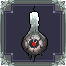
R2·C6
Cây Nến Mắt Lệ Khóc
Weeping Eye Candle
Trang bị kích hoạtTrang bị kích hoạt · 1 trong 2 ô
Cây nến sáp trắng tạc hình con mắt nhỏ lệ, ngọn lửa xanh soi tỏ những thứ ẩn giấu nơi tăm tối.
Cơ chế chiến đấu: Đặt một vùng sáng tồn tại 12 giây: soi dấu ẩn và tăng 10% sát thương lên địch yếu trước ánh sáng trong vùng; kháng 20% Nhiễu nguồn Con Mắt. Hồi 30 giây.
Đồng đội phối hợp: Tạo vị trí quan sát tạm; vẫn phải tiếp cận và ngắt nguồn Mảnh Thần.
Độ Nhiễu: +0 / −0 điểm Nhiễu · kháng 20% · nguồn Con Mắt · 12 s. Trong vùng sáng kháng 20% Nhiễu mới từ Con Mắt; không giảm lượng hiện có hoặc bảo vệ trước Cái Tai/Trái Tim.
Cách dùng, thu thập và giới hạn
Loại / mang theo
Trang bị kích hoạt · 1 trong 2 ô · 1 bản · 1 trong 2 ô trang bị
Mục tiêu
Đồng minh trong vùng sáng bán kính 4 m
Thu thập
Nguồn đề xuất: rương tiếp tế, thương nhân hoặc thưởng encounter tại Chương 1: Mê cung Laundel. Recipe và giá mua mở theo tiến độ.
Thời lượng / hồi
12 s; hồi 30 s
Tình huống dùng
Tạo vị trí quan sát tạm; vẫn phải tiếp cận và ngắt nguồn Mảnh Thần.
Giới hạn / boss
Tối đa một nến mỗi chủ; không xóa Bóng Nhiễu, tắt nguồn, thay camera hoặc làm toàn bản đồ hết ảo ảnh.
Độ Nhiễu
+0 / −0 điểm Nhiễu · kháng 20% · nguồn Con Mắt · 12 s. Trong vùng sáng kháng 20% Nhiễu mới từ Con Mắt; không giảm lượng hiện có hoặc bảo vệ trước Cái Tai/Trái Tim.
Cần có trước khi mở
light-zone, reveal-tags, noise-system
R2·C7
Khối Băng Tinh Linh Thể
Pure Frost Shard Cluster
Tiêu hao nhanhTiêu hao nhanh · 1 trong 2 ô hotbar
Cụm băng vĩnh cửu bao bọc lấy một viên ngọc tím ở tâm, tỏa ra luồng khí hàn băng buốt giá.
Cơ chế chiến đấu: Buff băng 15 s. Đánh trúng cùng một địch bốn lần sẽ đóng băng 2.5 s; đòn nặng phá băng gây thêm 50% sát thương.
Đồng đội phối hợp: Giữ một lính nguy hiểm để cứu người hoặc chuẩn bị đòn đánh nặng.
Độ Nhiễu: +0 / −0 điểm Nhiễu · kháng 0%. Không tăng, giảm hoặc kháng Nhiễu; hiệu ứng vật lý không tự chặn thần lực.
Cách dùng, thu thập và giới hạn
Loại / mang theo
Tiêu hao nhanh · 1 trong 2 ô hotbar · 3 chiếc · 1 trong 2 ô dùng nhanh
Mục tiêu
Địch trúng đòn có gắn lớp phủ
Thu thập
Nguồn đề xuất: rương tiếp tế, thương nhân hoặc thưởng encounter tại Chương 3: Vực gió tuyết Calvaria. Recipe và giá mua mở theo tiến độ.
Thời lượng / hồi
15 s; hồi 20 s
Tình huống dùng
Giữ một lính nguy hiểm để cứu người hoặc chuẩn bị đòn đánh nặng.
Giới hạn / boss
Boss: khựng tối đa 0.5 s nếu cho phép rồi miễn đóng băng 18 s; không đóng băng lặp vô hạn. Không tính hit 0 HP/ảnh chiếu.
Độ Nhiễu
+0 / −0 điểm Nhiễu · kháng 0%. Không tăng, giảm hoặc kháng Nhiễu; hiệu ứng vật lý không tự chặn thần lực.
Cần có trước khi mở
freeze, per-target-hit-counter, buff-coating
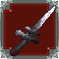
R3·C0
Đoản Kiếm Đấu Sĩ Bastonne
Gladiator Short Sword
Trang bị thụ độngTrang bị thụ động · 1 trong 2 ô
Thanh đoản kiếm chuôi chữ thập đúc từ sắt phế liệu ngục tù, lưỡi kiếm mẻ nhiều vết nhưng mũi nhọn vẫn cực kỳ sắc bén.
Cơ chế chiến đấu: Sau khi đỡ thành công, đòn đánh kế tiếp trong 2 giây tăng 20% sát thương; hồi hiệu ứng 6 giây. Đây là món dành cho phản công.
Đồng đội phối hợp: Trang bị dành cho phản công sau các pha guard/parry thành công bằng bộ chiêu sẵn có.
Độ Nhiễu: +0 / −0 điểm Nhiễu · kháng 0%. Không tăng, giảm hoặc kháng Nhiễu; hiệu ứng vật lý không tự chặn thần lực.
Cách dùng, thu thập và giới hạn
Loại / mang theo
Trang bị thụ động · 1 trong 2 ô · 1 bản · 1 trong 2 ô trang bị
Mục tiêu
Bản thân sau khi đỡ đòn thành công
Thu thập
Nguồn đề xuất: rương tiếp tế, thương nhân hoặc thưởng encounter tại Chương 0: Nhà tù Bastonne. Recipe và giá mua mở theo tiến độ.
Thời lượng / hồi
2 s; hồi 6 s
Tình huống dùng
Trang bị dành cho phản công sau các pha guard/parry thành công bằng bộ chiêu sẵn có.
Giới hạn / boss
Chỉ tăng cho một đòn đánh trúng đầu tiên trong cửa sổ 2 s; không thay đổi vũ khí hay recovery của kỹ năng nhân vật.
Độ Nhiễu
+0 / −0 điểm Nhiễu · kháng 0%. Không tăng, giảm hoặc kháng Nhiễu; hiệu ứng vật lý không tự chặn thần lực.
Cần có trước khi mở
parry-counter, guard-trigger
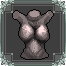
R3·C1
Thân Tượng Đá Nữ Thần Vô Diện
Marble Idol Torso
Trang bị thụ độngTrang bị thụ động · 1 trong 2 ô
Pho tượng bán thân bằng cẩm thạch trắng bị bào mòn bởi sóng biển, toát lên vẻ trang nghiêm bất khả xâm phạm.
Cơ chế chiến đấu: Giữ hướng tăng Guard và trọng lượng: Guard +10 và Weight +20 khi trang bị. Khó bị phá thế hoặc đánh bật hơn.
Đồng đội phối hợp: Giữ thế đứng ở tuyến đầu; vẫn cần chọn thời điểm ra đòn trước đòn nặng.
Độ Nhiễu: +0 / −0 điểm Nhiễu · kháng 0%. Không tăng, giảm hoặc kháng Nhiễu; hiệu ứng vật lý không tự chặn thần lực.
Cách dùng, thu thập và giới hạn
Loại / mang theo
Trang bị thụ động · 1 trong 2 ô · 1 bản · 1 trong 2 ô trang bị
Mục tiêu
Bản thân
Thu thập
Nguồn đề xuất: rương tiếp tế, thương nhân hoặc thưởng encounter tại Chương 1: Đền thờ cổ Vieux-Port. Recipe và giá mua mở theo tiến độ.
Thời lượng / hồi
Thụ động theo trang bị; hồi theo điều kiện riêng, không có nút hồi chung
Tình huống dùng
Giữ thế đứng ở tuyến đầu; vẫn cần chọn thời điểm ra đòn trước đòn nặng.
Giới hạn / boss
Thay mô tả Poise +60% chưa có công thức chung bằng hai stat có tên rõ. Không đồng nghĩa giảm 60% damage HP.
Độ Nhiễu
+0 / −0 điểm Nhiễu · kháng 0%. Không tăng, giảm hoặc kháng Nhiễu; hiệu ứng vật lý không tự chặn thần lực.
Cần có trước khi mở
combat-stat-modifiers
R3·C2
Cánh Tay Xác Sống Trương Phình
Swollen Ghoul Arm
Trang bị thụ độngTrang bị thụ động · 1 trong 2 ô
Cánh tay thây ma cơ bắp phình to quấn chặt bằng gân mục nát, các ngón tay co quắp như móng kẹp sắt.
Cơ chế chiến đấu: Tăng 30% tầm tiếp xúc cận chiến hiện có (melee reach ×1.30); đòn nặng đẩy địch thường vào tường tạo xung đẩy 2 m, tối đa một lần mỗi 8 giây.
Đồng đội phối hợp: Tách đội hình địch ở hành lang và mở đường tiếp cận thiết bị.
Độ Nhiễu: +0 / −0 điểm Nhiễu · kháng 0%. Không tăng, giảm hoặc kháng Nhiễu; hiệu ứng vật lý không tự chặn thần lực.
Cách dùng, thu thập và giới hạn
Loại / mang theo
Trang bị thụ động · 1 trong 2 ô · 1 bản · 1 trong 2 ô trang bị
Mục tiêu
Bản thân; địch thường có thể bị đẩy vào tường
Thu thập
Nguồn đề xuất: rương tiếp tế, thương nhân hoặc thưởng encounter tại Chương 1: Hố rác cống ngầm. Recipe và giá mua mở theo tiến độ.
Thời lượng / hồi
Thụ động theo trang bị; hồi 8 s
Tình huống dùng
Tách đội hình địch ở hành lang và mở đường tiếp cận thiết bị.
Giới hạn / boss
Không cấp đòn vật mới, không đẩy boss hoặc người cần cứu; xung không tạo thêm chuỗi wall-hit.
Độ Nhiễu
+0 / −0 điểm Nhiễu · kháng 0%. Không tăng, giảm hoặc kháng Nhiễu; hiệu ứng vật lý không tự chặn thần lực.
Cần có trước khi mở
melee-reach, wall-impact
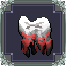
R3·C3
Răng Quỷ Nhuốm Máu Tươi
Blood-Rooted Demon Molar
Tiêu hao nhanhTiêu hao nhanh · 1 trong 2 ô hotbar
Chiếc răng hàm khổng lồ hai chân răng đẫm máu tươi, tỏa ra hơi ấm kỳ dị của loài quái thú hung tợn.
Cơ chế chiến đấu: Trong 10 giây, kháng choáng/ngã/đẩy lùi thông thường; cộng 6 Nhiễu khi kích hoạt.
Đồng đội phối hợp: Tự chọn một pha trụ tuyến ngắn để ngắt máy phát hoặc bảo vệ người đang cứu hộ.
Độ Nhiễu: +6 / −0 điểm Nhiễu · kháng 0%. +6 điểm khi chủ động dùng, không tính theo số đòn chịu trong 10 s; từ chối nếu sẽ chạm 100.
Cách dùng, thu thập và giới hạn
Loại / mang theo
Tiêu hao nhanh · 1 trong 2 ô hotbar · 3 chiếc · 1 trong 2 ô dùng nhanh
Mục tiêu
Bản thân
Thu thập
Nguồn đề xuất: rương tiếp tế, thương nhân hoặc thưởng encounter tại Chương 3: Calvaria. Recipe và giá mua mở theo tiến độ.
Thời lượng / hồi
10 s; hồi 25 s
Tình huống dùng
Tự chọn một pha trụ tuyến ngắn để ngắt máy phát hoặc bảo vệ người đang cứu hộ.
Giới hạn / boss
Không chống hố chết, đòn ném bắt buộc, khóa cốt truyện hoặc Stranger. Không cộng tầng/làm mới khi hiệu ứng còn chạy.
Độ Nhiễu
+6 / −0 điểm Nhiễu · kháng 0%. +6 điểm khi chủ động dùng, không tính theo số đòn chịu trong 10 s; từ chối nếu sẽ chạm 100.
Cần có trước khi mở
reaction-immunity-tags, noise-system
R3·C4
Lọ Độc Dược Tím Đậm
Concentrated Nightshade Phial
Tiêu hao nhanhTiêu hao nhanh · 1 trong 2 ô hotbar
Ống nghiệm thủy tinh nút bấc chứa chất lỏng màu tím phát quang, điều chế từ thảo dược ngầm Marseille.
Cơ chế chiến đấu: Tăng 40% tốc độ di chuyển trong 12 giây; đòn đánh có cơ hội khiến lính thường mất phương hướng trong thời gian ngắn (20% xác suất trong 2 s).
Đồng đội phối hợp: Thuốc chiến thuật giúp rút lui; chỉ địch thường có tag confusion-vulnerable mới đổi mục tiêu.
Độ Nhiễu: +0 / −0 điểm Nhiễu · kháng 0%. Không tăng, giảm hoặc kháng Nhiễu; hiệu ứng vật lý không tự chặn thần lực.
Cách dùng, thu thập và giới hạn
Loại / mang theo
Tiêu hao nhanh · 1 trong 2 ô hotbar · 3 chiếc · 1 trong 2 ô dùng nhanh
Mục tiêu
Bản thân; địch thường bị đánh
Thu thập
Nguồn đề xuất: rương tiếp tế, thương nhân hoặc thưởng encounter tại Chương 1: Quán bar Armorlite. Recipe và giá mua mở theo tiến độ.
Thời lượng / hồi
12 s; hồi 20 s
Tình huống dùng
Thuốc chiến thuật giúp rút lui; chỉ địch thường có tag confusion-vulnerable mới đổi mục tiêu.
Giới hạn / boss
Không tăng i-frame hoặc gây đảo phím người chơi, không điều khiển đồng minh/boss, không làm khuất HUD. Độc dược hóa học không tự là Nhiễu.
Độ Nhiễu
+0 / −0 điểm Nhiễu · kháng 0%. Không tăng, giảm hoặc kháng Nhiễu; hiệu ứng vật lý không tự chặn thần lực.
Cần có trước khi mở
confusion-tags, movement-buff
R3·C5
Bình Rượu Ngục Bện Rơm Bastonne
Bastonne Woven Canteen
Tiêu hao nhanhTiêu hao nhanh · 1 trong 2 ô hotbar
Bình gốm bọc dây gai đan thủ công kèm dây đeo vai, đựng loại rượu nặng giúp tù nhân chống chọi cái lạnh thấu xương.
Cơ chế chiến đấu: Đổi thành hồi phục chậm: hồi tổng cộng 20% MaxHP trong 10 giây (2% HP/s); nhận sát thương sẽ dừng hồi. Dùng lúc có khoảng nghỉ. Bỏ phần Stamina.
Đồng đội phối hợp: Hồi phục an toàn giữa các đợt lính hoặc sau khi thoát khỏi vùng giao tranh.
Độ Nhiễu: +0 / −0 điểm Nhiễu · kháng 0%. Không tăng, giảm hoặc kháng Nhiễu; hiệu ứng vật lý không tự chặn thần lực.
Cách dùng, thu thập và giới hạn
Loại / mang theo
Tiêu hao nhanh · 1 trong 2 ô hotbar · 3 chiếc · 1 trong 2 ô dùng nhanh
Mục tiêu
Bản thân
Thu thập
Nguồn đề xuất: rương tiếp tế, thương nhân hoặc thưởng encounter tại Chương 0: Nhà tù Bastonne. Recipe và giá mua mở theo tiến độ.
Thời lượng / hồi
10 s; hồi 20 s
Tình huống dùng
Hồi phục an toàn giữa các đợt lính hoặc sau khi thoát khỏi vùng giao tranh.
Giới hạn / boss
Nhận sát thương từ kẻ địch sẽ dừng ngay hiệu ứng hồi máu; không cộng dồn thời gian khi dùng liên tiếp.
Độ Nhiễu
+0 / −0 điểm Nhiễu · kháng 0%. Không tăng, giảm hoặc kháng Nhiễu; hiệu ứng vật lý không tự chặn thần lực.
Cần có trước khi mở
slow-heal, combat-break
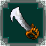
R3·C6
Đao Cong Hải Tặc Vieux-Port
Vieux-Port Harbor Cutlass
Trang bị thụ độngTrang bị thụ động · 1 trong 2 ô
Thanh đao cong một lưỡi với quai chuôi bằng đồng thau nặng trịch, vũ khí ưa thích của giới buôn lậu hải cảng.
Cơ chế chiến đấu: Trong cùng một đợt đánh cận chiến, mục tiêu trúng từ thứ hai trở đi nhận thêm 15% sát thương. Vai trò: đánh đám đông bằng bộ chiêu sẵn có.
Đồng đội phối hợp: Tạo khoảng trống chống bao vây bằng bộ động tác sẵn có của nhân vật.
Độ Nhiễu: +0 / −0 điểm Nhiễu · kháng 0%. Không tăng, giảm hoặc kháng Nhiễu; hiệu ứng vật lý không tự chặn thần lực.
Cách dùng, thu thập và giới hạn
Loại / mang theo
Trang bị thụ động · 1 trong 2 ô · 1 bản · 1 trong 2 ô trang bị
Mục tiêu
Các địch trúng cùng một đợt đánh cận chiến
Thu thập
Nguồn đề xuất: rương tiếp tế, thương nhân hoặc thưởng encounter tại Chương 1: Bến cảng Marseille. Recipe và giá mua mở theo tiến độ.
Thời lượng / hồi
Thụ động theo trang bị; hồi theo điều kiện riêng, không có nút hồi chung
Tình huống dùng
Tạo khoảng trống chống bao vây bằng bộ động tác sẵn có của nhân vật.
Giới hạn / boss
Mục tiêu đầu tiên không nhận bonus; mỗi mục tiêu chỉ tính một lần trong cùng đợt đánh. Không tăng damage projectile, không đổi vũ khí cố hữu.
Độ Nhiễu
+0 / −0 điểm Nhiễu · kháng 0%. Không tăng, giảm hoặc kháng Nhiễu; hiệu ứng vật lý không tự chặn thần lực.
Cần có trước khi mở
multi-target-attack, aoe-melee
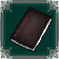
R3·C7
Hắc Thư Khế Ước Laundel
Laundel Smuggler Ledger
Vật phẩm nhiệm vụVật phẩm nhiệm vụ · Ngăn riêng
Cuốn sổ bìa da đen ghi chép các tuyến vận chuyển hàng ngầm và mật mã mở các cửa cống sluice dock.
Cơ chế chiến đấu: Giữ trong inventory; đến đúng điểm tương tác sẽ mở một đường phụ dẫn tới phòng thử thách hoặc kho thưởng.
Đồng đội phối hợp: Đổi thông tin và quyền vào lối tắt, thu rương tùy chọn hoặc đưa dân ra đường an toàn.
Độ Nhiễu: +0 / −0 điểm Nhiễu · kháng 0%. Không tăng, giảm hoặc kháng Nhiễu; hiệu ứng vật lý không tự chặn thần lực.
Cách dùng, thu thập và giới hạn
Loại / mang theo
Vật phẩm nhiệm vụ · Ngăn riêng · 1 bản · không chiếm ô chiến đấu
Mục tiêu
Công tắc/lối tắt có tag Laundel-contract
Thu thập
Nhận qua nhiệm vụ tại Chương 1: Trạm Laundel; cờ chia sẻ cho đội, không bán hoặc chế tạo.
Thời lượng / hồi
Theo cờ nhiệm vụ; không có hồi chiêu
Tình huống dùng
Đổi thông tin và quyền vào lối tắt, thu rương tùy chọn hoặc đưa dân ra đường an toàn.
Giới hạn / boss
Không tiêu khi đọc lại, không bán/craft; đường chính luôn có phương án thay thế. Thay đổi tuyến đường không tự xóa nguồn phát ở phòng cũ.
Độ Nhiễu
+0 / −0 điểm Nhiễu · kháng 0%. Không tăng, giảm hoặc kháng Nhiễu; hiệu ứng vật lý không tự chặn thần lực.
Cần có trước khi mở
quest-flags, optional-route
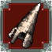
R4·C0
Mũi Lao Đá Silex Cổ
Ancient Flint Spearhead
Tiêu hao nhanhTiêu hao nhanh · 1 trong 2 ô hotbar
Mũi lao tam diện bằng đá hoa cương nhọn hoắt, đẽo gọt công phu từ thời kỳ dựng làng ven biển.
Cơ chế chiến đấu: Đổi thành buff xuyên phá 10 giây: lần đánh trúng đầu tiên lên mỗi địch tăng 20% sát thương và 25% sức phá đỡ.
Đồng đội phối hợp: Sử dụng trước khi mở giao tranh để phá thủ nhanh các kẻ địch chắn đường.
Độ Nhiễu: +0 / −0 điểm Nhiễu · kháng 0%. Không tăng, giảm hoặc kháng Nhiễu; hiệu ứng vật lý không tự chặn thần lực.
Cách dùng, thu thập và giới hạn
Loại / mang theo
Tiêu hao nhanh · 1 trong 2 ô hotbar · 3 chiếc · 1 trong 2 ô dùng nhanh
Mục tiêu
Bản thân; đòn đánh trúng địch
Thu thập
Nguồn đề xuất: rương tiếp tế, thương nhân hoặc thưởng encounter tại Chương 1: Vách đá Calanques. Recipe và giá mua mở theo tiến độ.
Thời lượng / hồi
10 s; hồi 15 s
Tình huống dùng
Sử dụng trước khi mở giao tranh để phá thủ nhanh các kẻ địch chắn đường.
Giới hạn / boss
Mỗi mục tiêu chỉ nhận bonus ở lần trúng đầu trong 10 s; không cộng dồn thời lượng; không tự xuyên qua tường địa hình.
Độ Nhiễu
+0 / −0 điểm Nhiễu · kháng 0%. Không tăng, giảm hoặc kháng Nhiễu; hiệu ứng vật lý không tự chặn thần lực.
Cần có trước khi mở
buff-piercing, first-hit-bonus
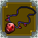
R4·C1
Chuỗi Hạt Ngọc Huyết Tế Lễ
Bloodstone Rosary
Trang bị thụ độngTrang bị thụ động · 1 trong 2 ô
Sợi dây kim loại mảnh xâu các hạt ngọc đỏ rực như giọt máu đông, mang dấu ấn đức tin tử vì đạo.
Cơ chế chiến đấu: Giảm 30% HP tiêu hao của kỹ năng huyết thuật (HP cost ×0.70, tối thiểu 1 HP); tăng 15% phạm vi hỗ trợ bằng máu. Ghi rõ kỹ năng tương thích.
Đồng đội phối hợp: Hỗ trợ Tulas hoặc kỹ năng huyết thuật tương thích đã mở; không cấp phép thuật mới.
Độ Nhiễu: +0 / −0 điểm Nhiễu · kháng 0%. Giảm HP cost không giảm chi phí Nhiễu của huyết thuật; hai nguồn tài nguyên được hiển thị riêng.
Cách dùng, thu thập và giới hạn
Loại / mang theo
Trang bị thụ động · 1 trong 2 ô · 1 bản · 1 trong 2 ô trang bị
Mục tiêu
Người đeo có kỹ năng tag blood-cost
Thu thập
Nguồn đề xuất: rương tiếp tế, thương nhân hoặc thưởng encounter tại Chương 2: Tu viện Sakuri. Recipe và giá mua mở theo tiến độ.
Thời lượng / hồi
Thụ động theo trang bị; hồi theo điều kiện riêng, không có nút hồi chung
Tình huống dùng
Hỗ trợ Tulas hoặc kỹ năng huyết thuật tương thích đã mở; không cấp phép thuật mới.
Giới hạn / boss
Không giảm khóa MaxHP, chi phí Nhiễu, tự hiến tế của Chén Thánh hoặc sát thương nhận vào; không biến HP cost thành MP cost.
Độ Nhiễu
+0 / −0 điểm Nhiễu · kháng 0%. Giảm HP cost không giảm chi phí Nhiễu của huyết thuật; hai nguồn tài nguyên được hiển thị riêng.
Cần có trước khi mở
blood-cost-tags, blood-support-radius
R4·C2
Mặt Nạ Kẻ Lắng Nghe
Mask of the Listening Route
Trang bị thụ độngTrang bị thụ động · 1 trong 2 ô
Mặt nạ đá trắng muốt với đôi mắt nhỏ lệ trầm tư, biểu tượng di sản quý báu của Divergency. Bản có công năng kiếm được trong gameplay; biến thể dành cho backer chỉ khác ngoại hình.
Cơ chế chiến đấu: Sau khi né thành công một đòn, đòn đánh kế tiếp trong 1,5 giây tăng 10% sát thương; hồi 8 giây. Giữ kháng 20% Nhiễu từ nguồn Tai.
Đồng đội phối hợp: Thưởng cho né đúng nhịp và tiếp cận nguồn âm, không tạo slow-motion toàn phòng.
Độ Nhiễu: +0 / −0 điểm Nhiễu · kháng 20% · nguồn Cái Tai · khi trang bị. Kháng 20% Nhiễu mới từ Cái Tai khi đeo; không cộng với vỏ ốc, lấy mức mạnh nhất theo cùng nguồn.
Cách dùng, thu thập và giới hạn
Loại / mang theo
Trang bị thụ động · 1 trong 2 ô · 1 bản · 1 trong 2 ô trang bị
Mục tiêu
Bản thân sau khi né thành công
Thu thập
Nguồn đề xuất: rương tiếp tế, thương nhân hoặc thưởng encounter tại Chương 1: Hầm ngầm Marseille. Recipe và giá mua mở theo tiến độ.
Thời lượng / hồi
1.5 s; hồi 8 s
Tình huống dùng
Thưởng cho né đúng nhịp và tiếp cận nguồn âm, không tạo slow-motion toàn phòng.
Giới hạn / boss
Một đòn thưởng mỗi 8 s; không chỉnh Time.timeScale. Mọi công năng kiếm được bằng gameplay; backer chỉ đổi ngoại hình.
Độ Nhiễu
+0 / −0 điểm Nhiễu · kháng 20% · nguồn Cái Tai · khi trang bị. Kháng 20% Nhiễu mới từ Cái Tai khi đeo; không cộng với vỏ ốc, lấy mức mạnh nhất theo cùng nguồn.
Cần có trước khi mở
dodge-counter, noise-system
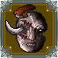
R4·C3
Mặt Nạ Khâu Thịt Đơn Sừng
Stitched Flesh Horned Mask
Trang bị thụ độngTrang bị thụ động · 1 trong 2 ô
Mặt nạ chắp vá từ các thớ thịt thuộc cứng với chiếc sừng quỷ nhọn hoắt bên trán, vương mùi máu tanh nồng.
Cơ chế chiến đấu: Tăng 35% sát thương cho đòn húc, đấm thẳng hoặc lao người đã có. Hạ chỉ huy tạo tiếng gầm làm khựng lính gần đó (1.5 s); hồi 15 giây.
Đồng đội phối hợp: Tập trung xử lý chỉ huy để mở tuyến; không gán đòn đấm hoặc vũ khí mới cho nhân vật.
Độ Nhiễu: +0 / −0 điểm Nhiễu · kháng 0%. Không tăng, giảm hoặc kháng Nhiễu; hiệu ứng vật lý không tự chặn thần lực.
Cách dùng, thu thập và giới hạn
Loại / mang theo
Trang bị thụ động · 1 trong 2 ô · 1 bản · 1 trong 2 ô trang bị
Mục tiêu
Bản thân; địch thường trong 3 m
Thu thập
Nguồn đề xuất: rương tiếp tế, thương nhân hoặc thưởng encounter tại Chương 3: Calvaria. Recipe và giá mua mở theo tiến độ.
Thời lượng / hồi
Thụ động theo trang bị; hồi 15 s
Tình huống dùng
Tập trung xử lý chỉ huy để mở tuyến; không gán đòn đấm hoặc vũ khí mới cho nhân vật.
Giới hạn / boss
Không cộng nhiều tag trên cùng hit. Tiếng gầm không gây Nhiễu, không ngắt boss hoặc khóa liên tục lính mới spawn.
Độ Nhiễu
+0 / −0 điểm Nhiễu · kháng 0%. Không tăng, giảm hoặc kháng Nhiễu; hiệu ứng vật lý không tự chặn thần lực.
Cần có trước khi mở
attack-tags, commander-kill
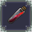
R4·C4
Lọ Huyết Thanh Đỏ Tươi
Vital Crimson Blood Phial
Tiêu hao nhanhTiêu hao nhanh · 1 trong 2 ô hotbar
Ống nghiệm chứa tinh chất máu tươi thanh khiết nút bấc kín, dược phẩm sống còn của mọi chiến binh trên chiến trường.
Cơ chế chiến đấu: Giữ hồi tức thời 60 HP cố định, giảm còn 30 HP khi Bùng Nhiễu (Overload). Cooldown 15 s, tối đa 3 lọ trên hotbar.
Đồng đội phối hợp: Hồi máu khẩn cấp sau khi thoát đòn; đề xuất dùng artwork này cho Healing Potion, chưa xác nhận ánh xạ icon trong Unity.
Độ Nhiễu: +0 / −0 điểm Nhiễu · kháng 0%. Chỉ hồi HP; Nhiễu hiện tại, tốc độ tăng và timer Overload giữ nguyên.
Cách dùng, thu thập và giới hạn
Loại / mang theo
Tiêu hao nhanh · 1 trong 2 ô hotbar · 3 chiếc · 1 trong 2 ô dùng nhanh
Mục tiêu
Bản thân đang sống
Thu thập
Nguồn đề xuất: rương tiếp tế, thương nhân hoặc thưởng encounter tại Chương 0 & Mọi màn chơi. Recipe và giá mua mở theo tiến độ.
Thời lượng / hồi
Tức thời; hồi 15 s
Tình huống dùng
Hồi máu khẩn cấp sau khi thoát đòn; đề xuất dùng artwork này cho Healing Potion, chưa xác nhận ánh xạ icon trong Unity.
Giới hạn / boss
Đủ HP thì không tiêu lọ; không hồi sinh hoặc mở khóa MaxHP. Trong Bùng Nhiễu thường chỉ hồi 30 HP theo hệ số 0.50; không kết thúc Overload.
Độ Nhiễu
+0 / −0 điểm Nhiễu · kháng 0%. Chỉ hồi HP; Nhiễu hiện tại, tốc độ tăng và timer Overload giữ nguyên.
Cần có trước khi mở
inventory-use, instant-heal
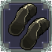
R4·C5
Đôi Giày Thám Hiểm Cảng Cổ
Harbor Runner Boots
Trang bị thụ độngTrang bị thụ động · 1 trong 2 ô
Đôi bốt da đanh dày gót đóng đinh tán, bảo vệ đôi chân chiến binh khỏi bùn lầy, nước bẩn và mảnh thủy tinh vỡ.
Cơ chế chiến đấu: Tăng 12% tốc độ di chuyển (MoveSpeed ×1.12) và giảm ảnh hưởng trượt trên dầu/bùn.
Đồng đội phối hợp: Giữ vị trí và rút khỏi vùng nguy hiểm; đề xuất artwork cho nhánh equipment Wind Boots +12% hiện có trong code.
Độ Nhiễu: +0 / −0 điểm Nhiễu · kháng 0%. Không tăng, giảm hoặc kháng Nhiễu; hiệu ứng vật lý không tự chặn thần lực.
Cách dùng, thu thập và giới hạn
Loại / mang theo
Trang bị thụ động · 1 trong 2 ô · 1 bản · 1 trong 2 ô trang bị
Mục tiêu
Bản thân
Thu thập
Nguồn đề xuất: rương tiếp tế, thương nhân hoặc thưởng encounter tại Chương 1: Khu thợ đóng tàu. Recipe và giá mua mở theo tiến độ.
Thời lượng / hồi
Thụ động theo trang bị; hồi theo điều kiện riêng, không có nút hồi chung
Tình huống dùng
Giữ vị trí và rút khỏi vùng nguy hiểm; đề xuất artwork cho nhánh equipment Wind Boots +12% hiện có trong code.
Giới hạn / boss
Tách khỏi consumable Wind Boots 12 s (+25% speed) cũ; chưa coi hai ID là cùng item. Không cho nhảy vượt biên hoặc miễn bẫy.
Độ Nhiễu
+0 / −0 điểm Nhiễu · kháng 0%. Không tăng, giảm hoặc kháng Nhiễu; hiệu ứng vật lý không tự chặn thần lực.
Cần có trước khi mở
surface-tags, equipment-movement
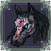
R4·C6
Thủ Cấp Chiến Mã Tế Đàn
Ritual Warsteed Skull
Trang bị thụ độngTrang bị thụ động · 1 trong 2 ô
Đầu ngựa chiến sơn trắng vạch tế lễ đỏ quanh mắt, biểu trưng cho lòng dũng cảm của các kỵ sĩ tử thủ.
Cơ chế chiến đấu: Tăng 30% sát thương và lực đẩy của đòn đá chạy hoặc lao người tương thích. Thiên về mở giao tranh.
Đồng đội phối hợp: Tăng hiệu quả đòn cước lao vào hoặc giải vây; giữ nguyên karate/chân máy của Solei nếu dùng cho cô.
Độ Nhiễu: +0 / −0 điểm Nhiễu · kháng 0%. Không tăng, giảm hoặc kháng Nhiễu; hiệu ứng vật lý không tự chặn thần lực.
Cách dùng, thu thập và giới hạn
Loại / mang theo
Trang bị thụ động · 1 trong 2 ô · 1 bản · 1 trong 2 ô trang bị
Mục tiêu
Đòn có tag running-kick/flying-tackle của người đeo
Thu thập
Nguồn đề xuất: rương tiếp tế, thương nhân hoặc thưởng encounter tại Chương 4: Chiến trường Titan Trái Tim. Recipe và giá mua mở theo tiến độ.
Thời lượng / hồi
Thụ động theo trang bị; hồi theo điều kiện riêng, không có nút hồi chung
Tình huống dùng
Tăng hiệu quả đòn cước lao vào hoặc giải vây; giữ nguyên karate/chân máy của Solei nếu dùng cho cô.
Giới hạn / boss
Không cấp đòn mới, không nhân hai lần với cùng tag, không phá khiên boss ngoài cửa sổ hợp lệ.
Độ Nhiễu
+0 / −0 điểm Nhiễu · kháng 0%. Không tăng, giảm hoặc kháng Nhiễu; hiệu ứng vật lý không tự chặn thần lực.
Cần có trước khi mở
attack-tags, dash-attack
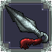
R4·C7
Phi Tiêu Kunai Buộc Dải Lụa Đỏ
Tasseled Throwing Kunai
Tiêu hao nhanhTiêu hao nhanh · 1 trong 2 ô hotbar
Lưỡi thép hai cạnh sắc bén có vòng khuyên buộc dải lụa đỏ thắm, trang bị ném dã chiến tiện dụng.
Cơ chế chiến đấu: Đổi thành buff quấy rối 10 giây: đòn trúng ngắt niệm chú của lính tối đa 0,5 giây; mỗi mục tiêu chịu tối đa một lần mỗi 3 giây.
Đồng đội phối hợp: Buff quấy rối kích hoạt từ inventory để thử ảnh chiếu, phá dây và ngắt nguồn từ xa bằng bộ chiêu sẵn có.
Độ Nhiễu: +0 / −0 điểm Nhiễu · kháng 0%. Bản thân kunai có +0/-0 Nhiễu; chỉ khi thực sự phá nguồn thì quy tắc nguồn phát mới làm cả đội hồi phục.
Cách dùng, thu thập và giới hạn
Loại / mang theo
Tiêu hao nhanh · 1 trong 2 ô hotbar · 3 chiếc · 1 trong 2 ô dùng nhanh
Mục tiêu
Một địch hoặc thiết bị chịu đòn
Thu thập
Nguồn đề xuất: rương tiếp tế, thương nhân hoặc thưởng encounter tại Chương 1: Noailles. Recipe và giá mua mở theo tiến độ.
Thời lượng / hồi
10 s; hồi 15 s
Tình huống dùng
Buff quấy rối kích hoạt từ inventory để thử ảnh chiếu, phá dây và ngắt nguồn từ xa bằng bộ chiêu sẵn có.
Giới hạn / boss
Mỗi lần tiêu một charge; không ngắt boss liên tục, không kích nổ vật thể bảo vệ nhiệm vụ hoặc gây damage dân.
Độ Nhiễu
+0 / −0 điểm Nhiễu · kháng 0%. Bản thân kunai có +0/-0 Nhiễu; chỉ khi thực sự phá nguồn thì quy tắc nguồn phát mới làm cả đội hồi phục.
Cần có trước khi mở
buff-interrupt, cast-break
R5·C0
Chén Thánh Huyết Tế Có Cánh
Winged Sacrificial Chalice
Trang bị kích hoạtTrang bị kích hoạt · 1 trong 2 ô
Chiếc chén bạc tạc hình mắt đỏ có cánh, chứa thứ huyết dịch cổ xưa của các nghi lễ hiến tế trần gian.
Cơ chế chiến đấu: Một lần mỗi trận, đổi 10% MaxHP và 8 Nhiễu lấy thêm 5 điểm phần trăm chí mạng (+5% CritChance) trong 8 giây; không làm HP dưới 1.
Đồng đội phối hợp: Hiến tế có chủ đích trước một cửa sổ dồn sát thương chí mạng; preview rõ HP và Nhiễu sau kích hoạt.
Độ Nhiễu: +8 / −0 điểm Nhiễu · kháng 0%. +8 điểm khi chấp nhận hiến tế, không kháng được bằng đồ bảo hộ. Từ chối nếu sẽ chạm 100 hoặc người dùng đang Bùng Nhiễu.
Cách dùng, thu thập và giới hạn
Loại / mang theo
Trang bị kích hoạt · 1 trong 2 ô · 1 bản · 1 trong 2 ô trang bị
Mục tiêu
Chỉ người kích hoạt
Thu thập
Nguồn đề xuất: rương tiếp tế, thương nhân hoặc thưởng encounter tại Chương 0: Hầm mộ Bastonne. Recipe và giá mua mở theo tiến độ.
Thời lượng / hồi
8 s; hồi theo điều kiện riêng, không có nút hồi chung
Tình huống dùng
Hiến tế có chủ đích trước một cửa sổ dồn sát thương chí mạng; preview rõ HP và Nhiễu sau kích hoạt.
Giới hạn / boss
Không trừ HP đồng đội, không cộng tầng/làm mới; tháo/lắp không hồi lượt. Không khảm toàn bộ công năng này vào mastery hoặc dùng MP ảo thay chi phí thật.
Độ Nhiễu
+8 / −0 điểm Nhiễu · kháng 0%. +8 điểm khi chấp nhận hiến tế, không kháng được bằng đồ bảo hộ. Từ chối nếu sẽ chạm 100 hoặc người dùng đang Bùng Nhiễu.
Cần có trước khi mở
self-sacrifice, crit-modifier, noise-system
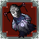
R5·C1
Hình Nhân Rơm Phản Huyết Nguyền
Woven Retaliation Effigy
Trang bị thụ độngTrang bị thụ động · 1 trong 2 ô
Hình nhân đan bằng rơm khô bị ghim đầy kim châm và bọc vải đen rách, kết nối nhân quả với linh hồn người đeo.
Cơ chế chiến đấu: Phản 45% HP thực mất từ đòn nặng, giới hạn 10% MaxHP người đeo mỗi lần; không phản phần bị Guard/shield chặn.
Đồng đội phối hợp: Trừng phạt kẻ tấn công nặng khi đội cần giữ tuyến; vẫn nhận damage đầy đủ trước khi phản.
Độ Nhiễu: +0 / −0 điểm Nhiễu · kháng 0%. Không tăng, giảm hoặc kháng Nhiễu; hiệu ứng vật lý không tự chặn thần lực.
Cách dùng, thu thập và giới hạn
Loại / mang theo
Trang bị thụ động · 1 trong 2 ô · 1 bản · 1 trong 2 ô trang bị
Mục tiêu
Kẻ vừa gây damage HP thật cho người đeo
Thu thập
Nguồn đề xuất: rương tiếp tế, thương nhân hoặc thưởng encounter tại Chương 2: Sakuri. Recipe và giá mua mở theo tiến độ.
Thời lượng / hồi
Thụ động theo trang bị; hồi theo điều kiện riêng, không có nút hồi chung
Tình huống dùng
Trừng phạt kẻ tấn công nặng khi đội cần giữ tuyến; vẫn nhận damage đầy đủ trước khi phản.
Giới hạn / boss
Không phản tiếp damage phản, DOT, tự hiến tế hoặc môi trường; không crit/hút máu/proc. Boss nhận damage bình thường theo phase.
Độ Nhiễu
+0 / −0 điểm Nhiễu · kháng 0%. Không tăng, giảm hoặc kháng Nhiễu; hiệu ứng vật lý không tự chặn thần lực.
Cần có trước khi mở
reflected-damage-tags
R5·C2
Tượng Lữ Hành Vượt Biển Áo Xám
Drifting Pilgrim Figurine
Trang bị thụ độngTrang bị thụ động · 1 trong 2 ô
Tượng nhỏ nặn hình người lữ hành trùm áo choàng đứng trên chiếc bè trôi, tượng trưng cho hành trình an toàn qua bão tố.
Cơ chế chiến đấu: Giảm 50% sát thương từ bẫy môi trường như gai, axit, đá rơi (hazard damage ×0.50).
Đồng đội phối hợp: Giảm rủi ro khi tìm đường phụ hoặc đưa dân qua vùng môi trường nguy hiểm.
Độ Nhiễu: +0 / −0 điểm Nhiễu · kháng 0%. Không tăng, giảm hoặc kháng Nhiễu; hiệu ứng vật lý không tự chặn thần lực.
Cách dùng, thu thập và giới hạn
Loại / mang theo
Trang bị thụ động · 1 trong 2 ô · 1 bản · 1 trong 2 ô trang bị
Mục tiêu
Bản thân; hazard vật lý có tag natural-hazard
Thu thập
Nguồn đề xuất: rương tiếp tế, thương nhân hoặc thưởng encounter tại Chương 1: Vallon des Auffes. Recipe và giá mua mở theo tiến độ.
Thời lượng / hồi
Thụ động theo trang bị; hồi theo điều kiện riêng, không có nút hồi chung
Tình huống dùng
Giảm rủi ro khi tìm đường phụ hoặc đưa dân qua vùng môi trường nguy hiểm.
Giới hạn / boss
Không cứu hố chết, tuyến truyện kết thúc hoặc cơ chế boss; không coi vùng thần lực là hazard thường để bỏ qua Nhiễu.
Độ Nhiễu
+0 / −0 điểm Nhiễu · kháng 0%. Không tăng, giảm hoặc kháng Nhiễu; hiệu ứng vật lý không tự chặn thần lực.
Cần có trước khi mở
hazard-tags
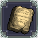
R5·C3
Khế Ước Da Cừu Bastonne Cổ
Bastonne Covenant Scroll
Vật phẩm nhiệm vụVật phẩm nhiệm vụ · Ngăn riêng
Cuộn giấy da dê ố vàng chép các thỏa ước bí mật giữa ban quản ngục Bastonne và tổ chức thế giới ngầm.
Cơ chế chiến đấu: Nhận một nhiệm vụ săn tinh anh tại điểm hợp đồng. Hiện mục tiêu và phần thưởng trước khi bắt đầu; thưởng một lần cho mỗi hợp đồng.
Đồng đội phối hợp: Chấp nhận thử thách phụ để kiếm nguyên liệu bằng gameplay hoặc bỏ qua để tiếp tục cứu người.
Độ Nhiễu: +0 / −0 điểm Nhiễu · kháng 0%. Không tăng, giảm hoặc kháng Nhiễu; hiệu ứng vật lý không tự chặn thần lực.
Cách dùng, thu thập và giới hạn
Loại / mang theo
Vật phẩm nhiệm vụ · Ngăn riêng · 1 bản · không chiếm ô chiến đấu
Mục tiêu
Điểm hợp đồng bounty đã đặt trong màn
Thu thập
Nhận qua nhiệm vụ tại Chương 0: Tủ hồ sơ Bastonne; cờ chia sẻ cho đội, không bán hoặc chế tạo.
Thời lượng / hồi
Theo cờ nhiệm vụ; không có hồi chiêu
Tình huống dùng
Chấp nhận thử thách phụ để kiếm nguyên liệu bằng gameplay hoặc bỏ qua để tiếp tục cứu người.
Giới hạn / boss
Không triệu hồi boss vào phòng cứu hộ/đã kết thúc; không chặn đường chính. Retry không nhân thưởng; có thể hủy trước khi encounter bắt đầu.
Độ Nhiễu
+0 / −0 điểm Nhiễu · kháng 0%. Không tăng, giảm hoặc kháng Nhiễu; hiệu ứng vật lý không tự chặn thần lực.
Cần có trước khi mở
bounty-ledger, optional-encounter
R5·C4
Lam Ngọc Đầu Lâu Hồi Sinh
Emerald Soul Shard
Tiêu hao nhanhTiêu hao nhanh · 1 trong 2 ô hotbar
Khối ngọc bích màu xanh lục trong vắt kết tinh hình đầu lâu, chứa đựng nguồn năng lượng linh hồn thuần khiết.
Cơ chế chiến đấu: Hồi sinh đồng minh gần với 30% MaxHP; mỗi người được nhận một lần mỗi trận.
Đồng đội phối hợp: Cứu một đồng đội khi vùng tương tác an toàn; người dùng phải tiếp cận đúng mục tiêu.
Độ Nhiễu: +0 / −0 điểm Nhiễu · kháng 0%. Mục tiêu giữ Nhiễu đã có trước khi gục; không hồi về 0, không tái mở trận Stranger hoặc xóa cờ cứu hộ.
Cách dùng, thu thập và giới hạn
Loại / mang theo
Tiêu hao nhanh · 1 trong 2 ô hotbar · 1 chiếc · 1 trong 2 ô dùng nhanh
Mục tiêu
Một đồng minh gục có thể cứu trong 2 m
Thu thập
Nguồn đề xuất: rương tiếp tế, thương nhân hoặc thưởng encounter tại Phần thưởng gameplay · biến thể backer chỉ đổi ngoại hình. Recipe và giá mua mở theo tiến độ.
Thời lượng / hồi
Tức thời; hồi theo điều kiện riêng, không có nút hồi chung
Tình huống dùng
Cứu một đồng đội khi vùng tương tác an toàn; người dùng phải tiếp cận đúng mục tiêu.
Giới hạn / boss
Không tạo thêm charge, hồi sinh dây chuyền, vượt khóa kết thúc màn hoặc thay thủ tục cứu Ghost. Công năng kiếm bằng gameplay; backer chỉ đổi ngoại hình.
Độ Nhiễu
+0 / −0 điểm Nhiễu · kháng 0%. Mục tiêu giữ Nhiễu đã có trước khi gục; không hồi về 0, không tái mở trận Stranger hoặc xóa cờ cứu hộ.
Cần có trước khi mở
revive-targeting, encounter-ledger
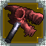
R5·C5
Đại Chiến Búa Sọ Rồng Đỏ
Dragon Bone Warhammer
Trang bị thụ độngTrang bị thụ động · 1 trong 2 ô
Cây búa chiến khổng lồ gắn hộp sọ rồng đỏ sừng nhọn hoắt, nặng tựa ngàn cân với sức tàn phá kinh hoàng.
Cơ chế chiến đấu: Đòn nặng hiện có tăng 30% sức phá đỡ. Mỗi 8 giây, đòn nặng trúng tạo xung nhỏ đẩy tối đa ba lính gần mục tiêu.
Đồng đội phối hợp: Tạo khoảng trống lớn và phá đỡ kẻ địch bằng đòn nặng sẵn có của nhân vật.
Độ Nhiễu: +0 / −0 điểm Nhiễu · kháng 0%. Không tăng, giảm hoặc kháng Nhiễu; hiệu ứng vật lý không tự chặn thần lực.
Cách dùng, thu thập và giới hạn
Loại / mang theo
Trang bị thụ động · 1 trong 2 ô · 1 bản · 1 trong 2 ô trang bị
Mục tiêu
Địch trúng đòn nặng của người đeo
Thu thập
Nguồn đề xuất: rương tiếp tế, thương nhân hoặc thưởng encounter tại Chương 4: Hang Xương Rồng. Recipe và giá mua mở theo tiến độ.
Thời lượng / hồi
Thụ động theo trang bị; hồi 8 s
Tình huống dùng
Tạo khoảng trống lớn và phá đỡ kẻ địch bằng đòn nặng sẵn có của nhân vật.
Giới hạn / boss
Boss không bị hất; đòn vẫn chịu recovery và va chạm. Không đập vỡ nền/cầu/dây cứu hộ không được đánh dấu.
Độ Nhiễu
+0 / −0 điểm Nhiễu · kháng 0%. Không tăng, giảm hoặc kháng Nhiễu; hiệu ứng vật lý không tự chặn thần lực.
Cần có trước khi mở
heavy-attack-modifier, aoe-pressure
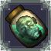
R5·C6
Thủ Cấp Ngâm Hũ Hóa Sinh MuCEM
Preserved Head in Formalin Jar
Vật phẩm nhiệm vụVật phẩm nhiệm vụ · Ngăn riêng
Cái đầu người ngâm trong bình dung dịch hóa chất phát sáng xanh lục, mẫu vật giải phẫu của phòng thí nghiệm dưới biển.
Cơ chế chiến đấu: Mang về bàn nghiên cứu để mở hồ sơ loại địch: MaxHP đã quan sát và điểm yếu ánh sáng có tag đã được thiết kế trong codex.
Đồng đội phối hợp: Đem chứng cứ về căn cứ để chuẩn bị trang bị, không bỏ qua nhiệm vụ cứu người để thu mẫu.
Độ Nhiễu: +0 / −0 điểm Nhiễu · kháng 0%. Không tăng, giảm hoặc kháng Nhiễu; hiệu ứng vật lý không tự chặn thần lực.
Cách dùng, thu thập và giới hạn
Loại / mang theo
Vật phẩm nhiệm vụ · Ngăn riêng · 1 bản · không chiếm ô chiến đấu
Mục tiêu
Bảng nghiên cứu tại căn cứ; loại địch đã phân tích
Thu thập
Nhận qua nhiệm vụ tại Chương 1: Trạm MuCEM Shemal; cờ chia sẻ cho đội, không bán hoặc chế tạo.
Thời lượng / hồi
Theo cờ nhiệm vụ; không có hồi chiêu
Tình huống dùng
Đem chứng cứ về căn cứ để chuẩn bị trang bị, không bỏ qua nhiệm vụ cứu người để thu mẫu.
Giới hạn / boss
Không lộ mọi loại quái hoặc phase cốt truyện; không tạo điểm yếu nguyên tố chưa có. Mẫu nghiên cứu không phải Mảnh Thần Con Mắt.
Độ Nhiễu
+0 / −0 điểm Nhiễu · kháng 0%. Không tăng, giảm hoặc kháng Nhiễu; hiệu ứng vật lý không tự chặn thần lực.
Cần có trước khi mở
research-flags, enemy-codex
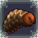
R5·C7
Ấu Trùng Sâu Mộ Ăn Xác
Carnivorous Grave Maggot
Tiêu hao nhanhTiêu hao nhanh · 1 trong 2 ô hotbar
Ấu trùng béo múp màu nâu đốt ngấn với vòng răng kim nhọn hoắt, chuyên rúc trong các hầm mộ ẩm ướt.
Cơ chế chiến đấu: Xử lý tối đa ba xác địch gần, mỗi xác tạo một pickup hồi 5% MaxHP cho một người nhặt. Bỏ phần hồi Stamina.
Đồng đội phối hợp: Thu hồi tài nguyên sau giao tranh; có thể nhường pickup cho đồng đội thấp HP.
Độ Nhiễu: +0 / −0 điểm Nhiễu · kháng 0%. Không tăng, giảm hoặc kháng Nhiễu; hiệu ứng vật lý không tự chặn thần lực.
Cách dùng, thu thập và giới hạn
Loại / mang theo
Tiêu hao nhanh · 1 trong 2 ô hotbar · 3 chiếc · 1 trong 2 ô dùng nhanh
Mục tiêu
Tối đa ba xác địch hợp lệ trong 5 m
Thu thập
Nguồn đề xuất: rương tiếp tế, thương nhân hoặc thưởng encounter tại Chương 0 & Hầm mộ. Recipe và giá mua mở theo tiến độ.
Thời lượng / hồi
10 s; hồi 20 s
Tình huống dùng
Thu hồi tài nguyên sau giao tranh; có thể nhường pickup cho đồng đội thấp HP.
Giới hạn / boss
Server khóa xác và pickup; không ăn dân, đồng minh hoặc xác giả/triệu hồi. Không cho xác tiếp tục sinh loot, không nhận lại khi retry/reconnect.
Độ Nhiễu
+0 / −0 điểm Nhiễu · kháng 0%. Không tăng, giảm hoặc kháng Nhiễu; hiệu ứng vật lý không tự chặn thần lực.
Cần có trước khi mở
corpse-ledger, shared-pickup, healing
1. Trang bị thụ động (20 món)
Đồng bộ thiết kế 31/10/2026. 48 hợp đồng dùng chung nguồn thiết kế với game, gồm 20 thụ động, 10 kích hoạt, 15 tiêu hao và 3 nhiệm vụ. Prototype có đường xử lý cho đủ 48 món; kiểm thử cục bộ không chứng nhận toàn bộ hiệu ứng, hành trình nhiệm vụ hoặc multiplayer từ máy khác.
20 món trang bị thụ động: tự động áp hiệu ứng lên đòn đánh của nhân vật hoặc kích hoạt khi thỏa điều kiện (phá thủ Chùy, phản công Đoản Kiếm, đánh đông Đao Cong, dẹp lính Búa, hộ vệ, chống đẩy lùi, v.v.). Nhân vật vẫn dùng trọn vẹn bộ đòn và vũ khí cố hữu của mình.
Một lần mỗi trận, chịu đòn chí tử sẽ còn 1 HP và đẩy lính xung quanh; cộng 10 Nhiễu khi thực sự cứu mạng.
1 bản · 1 trong 2 ô trang bị Thụ động theo trang bị; hồi theo điều kiện riêng, không có nút hồi chung
+10 / −0 điểm Nhiễu · kháng 0%. +10 điểm đúng lúc cứu mạng thực sự kích hoạt; không phát sinh nếu đòn đã bị chặn. Đây là hậu quả được báo trước của bảo hiểm chủ động trang bị.
Tăng 15% phạm vi kỹ năng hỗ trợ; giảm 20% cooldown của những kỹ năng hỗ trợ thực sự có cooldown. Không thêm ô kỹ năng. Tooltip liệt kê chiêu được hưởng.
1 bản · 1 trong 2 ô trang bị Thụ động theo trang bị; hồi theo điều kiện riêng, không có nút hồi chung
+0 / −0 điểm Nhiễu · kháng 0%. Không tăng, giảm hoặc kháng Nhiễu; hiệu ứng vật lý không tự chặn thần lực.
Đổi thiết kế: mỗi 5 giây trên mỗi mục tiêu, đòn trúng gây thêm một vết bỏng trong 3 giây. Tổng sát thương bỏng bằng 15% đòn kích hoạt; bỏ phụ thuộc vào tài nguyên của quái.
1 bản · 1 trong 2 ô trang bị Thụ động theo trang bị; hồi theo điều kiện riêng, không có nút hồi chung
+0 / −0 điểm Nhiễu · kháng 0%. Không tăng, giảm hoặc kháng Nhiễu; hiệu ứng vật lý không tự chặn thần lực.
Sau khi né thành công một đòn, đòn đánh kế tiếp trong 1,5 giây tăng 10% sát thương; hồi 8 giây. Giữ kháng 20% Nhiễu từ nguồn Tai.
1 bản · 1 trong 2 ô trang bị 1.5 s; hồi 8 s
+0 / −0 điểm Nhiễu · kháng 20% · nguồn Cái Tai · khi trang bị. Kháng 20% Nhiễu mới từ Cái Tai khi đeo; không cộng với vỏ ốc, lấy mức mạnh nhất theo cùng nguồn.
Đòn nặng hiện có tăng 30% sức phá đỡ. Mỗi 8 giây, đòn nặng trúng tạo xung nhỏ đẩy tối đa ba lính gần mục tiêu.
1 bản · 1 trong 2 ô trang bị Thụ động theo trang bị; hồi 8 s
+0 / −0 điểm Nhiễu · kháng 0%. Không tăng, giảm hoặc kháng Nhiễu; hiệu ứng vật lý không tự chặn thần lực.
2. Trang bị có kích hoạt (10 món)
Đồng bộ thiết kế 31/10/2026. 48 hợp đồng dùng chung nguồn thiết kế với game, gồm 20 thụ động, 10 kích hoạt, 15 tiêu hao và 3 nhiệm vụ. Prototype có đường xử lý cho đủ 48 món; kiểm thử cục bộ không chứng nhận toàn bộ hiệu ứng, hành trình nhiệm vụ hoặc multiplayer từ máy khác.
10 món trang bị chủ động: có nút bấm kích hoạt riêng tương ứng trên ô trang bị để mở buff, đặt trường bảo hộ hoặc phát xung giải vây (Vỏ Ốc, Bàn Tay Quỷ hút máu, Trái Tim tăng sát thương, Thủ Cấp Galio da đá, Cây Nến soi ẩn, Chuông Đồng giải khống chế, v.v.).
Tạo trường bảo hộ 6 s cho đồng minh gần: giảm 40% sát thương âm thanh (sonic/shockwave ×0.60) và kháng 30% Nhiễu nguồn Cái Tai. Hồi 20 s.
1 bản · 1 trong 2 ô trang bị 6 s; hồi 20 s
+0 / −0 điểm Nhiễu · kháng 30% · nguồn Cái Tai · 6 s. Kháng 30% Nhiễu mới từ nguồn Cái Tai trong trường 6 s; không hạ Nhiễu hiện tại, không chặn nguồn Mắt/Tim.
Khi trang bị, đòn nặng hiện có tăng 25% sát thương. Bấm kích hoạt mở hút máu 8 s: đòn nặng đầu tiên gây mất HP thực hồi 5% MaxHP; cộng 6 Nhiễu. Hồi 20 s.
1 bản · 1 trong 2 ô trang bị 8 s; hồi 20 s
+6 / −0 điểm Nhiễu · kháng 0%. Chỉ +6 điểm khi chủ động mở hút máu; không tính theo số hit hoặc đòn nặng thường.
Đặt một vùng sáng tồn tại 12 giây: soi dấu ẩn và tăng 10% sát thương lên địch yếu trước ánh sáng trong vùng; kháng 20% Nhiễu nguồn Con Mắt. Hồi 30 giây.
1 bản · 1 trong 2 ô trang bị 12 s; hồi 30 s
+0 / −0 điểm Nhiễu · kháng 20% · nguồn Con Mắt · 12 s. Trong vùng sáng kháng 20% Nhiễu mới từ Con Mắt; không giảm lượng hiện có hoặc bảo vệ trước Cái Tai/Trái Tim.
Một lần mỗi trận, đổi 10% MaxHP và 8 Nhiễu lấy thêm 5 điểm phần trăm chí mạng (+5% CritChance) trong 8 giây; không làm HP dưới 1.
1 bản · 1 trong 2 ô trang bị 8 s; hồi theo điều kiện riêng, không có nút hồi chung
+8 / −0 điểm Nhiễu · kháng 0%. +8 điểm khi chấp nhận hiến tế, không kháng được bằng đồ bảo hộ. Từ chối nếu sẽ chạm 100 hoặc người dùng đang Bùng Nhiễu.
3. Vật phẩm tiêu hao và dùng nhanh (15 món)
Đồng bộ thiết kế 31/10/2026. 48 hợp đồng dùng chung nguồn thiết kế với game, gồm 20 thụ động, 10 kích hoạt, 15 tiêu hao và 3 nhiệm vụ. Prototype có đường xử lý cho đủ 48 món; kiểm thử cục bộ không chứng nhận toàn bộ hiệu ứng, hành trình nhiệm vụ hoặc multiplayer từ máy khác.
15 món tiêu hao trên 2 ô hotbar dùng nhanh: dược phẩm sinh tồn, bẫy chông, mây độc, và các phù chú buff đòn đánh từ inventory (lao xuyên phá, kunai ngắt chiêu, móng vuốt axit, khối băng). Đã loại bỏ hoàn toàn các phụ thuộc ảo vào Stamina/Synergy để khớp với runtime thực tế.
Xử lý tối đa ba xác địch gần, mỗi xác tạo một pickup hồi 5% MaxHP cho một người nhặt. Bỏ phần hồi Stamina.
3 chiếc · 1 trong 2 ô dùng nhanh 10 s; hồi 20 s
+0 / −0 điểm Nhiễu · kháng 0%. Không tăng, giảm hoặc kháng Nhiễu; hiệu ứng vật lý không tự chặn thần lực.
4. Bảng tra cứu toàn diện 48 vật phẩm
Đồng bộ thiết kế 31/10/2026. 48 hợp đồng dùng chung nguồn thiết kế với game, gồm 20 thụ động, 10 kích hoạt, 15 tiêu hao và 3 nhiệm vụ. Prototype có đường xử lý cho đủ 48 món; kiểm thử cục bộ không chứng nhận toàn bộ hiệu ứng, hành trình nhiệm vụ hoặc multiplayer từ máy khác.
Số liệu ở bảng này và thẻ vật phẩm dùng cùng một nguồn; tọa độ [hàng,cột] tính từ 0. Luật đầy đủ.
Đòn nặng hiện có tăng 25% sức phá đỡ (pressure ×1.25) và gây chảy máu 3 HP/giây trong 4 s, không chí mạng.
Trang bị thụ động · 1 trong 2 ô 1 bản · 1 trong 2 ô trang bị Thụ động theo trang bị; hồi theo điều kiện riêng, không có nút hồi chung Bleed cùng nguồn chỉ làm mới, không cộng tầng. Boss chỉ nhận pressure trong cửa sổ hợp lệ; không choáng hoặc phá phase bắt buộc.
+0 / −0 điểm Nhiễu · kháng 0%. Không tăng, giảm hoặc kháng Nhiễu; hiệu ứng vật lý không tự chặn thần lực.
Tạo trường bảo hộ 6 s cho đồng minh gần: giảm 40% sát thương âm thanh (sonic/shockwave ×0.60) và kháng 30% Nhiễu nguồn Cái Tai. Hồi 20 s.
Trang bị kích hoạt · 1 trong 2 ô 1 bản · 1 trong 2 ô trang bị 6 s; hồi 20 s Một trường mạnh nhất áp dụng; không cộng dồn nhiều vỏ ốc. Giảm damage và kháng Nhiễu là hai phép tính riêng.
+0 / −0 điểm Nhiễu · kháng 30% · nguồn Cái Tai · 6 s. Kháng 30% Nhiễu mới từ nguồn Cái Tai trong trường 6 s; không hạ Nhiễu hiện tại, không chặn nguồn Mắt/Tim.
Khi trang bị, đòn nặng hiện có tăng 25% sát thương. Bấm kích hoạt mở hút máu 8 s: đòn nặng đầu tiên gây mất HP thực hồi 5% MaxHP; cộng 6 Nhiễu. Hồi 20 s.
Trang bị kích hoạt · 1 trong 2 ô 1 bản · 1 trong 2 ô trang bị 8 s; hồi 20 s Hút máu chỉ một lần mỗi lần mở, không từ xác, bóng vô hại hoặc sát thương 0. Không cấp động tác vật mới hoặc cưỡng bức vật boss. Đòn nặng thường không gây Nhiễu.
+6 / −0 điểm Nhiễu · kháng 0%. Chỉ +6 điểm khi chủ động mở hút máu; không tính theo số hit hoặc đòn nặng thường.
Soi địch/bẫy gần trong 4 s. Nếu người dùng dưới 25% HP, phát thêm xung đẩy lính trong 3 m để thoát vây. Hồi 30 s.
Trang bị kích hoạt · 1 trong 2 ô 1 bản · 1 trong 2 ô trang bị 4 s; hồi 30 s Không bật HP giả, không biến ảnh chiếu thành vật thể, không tự giải mọi câu đố hoặc tiết lộ mục tiêu ẩn cốt truyện.
+0 / −0 điểm Nhiễu · kháng 0%. Chỉ cung cấp thông tin và giải vây vật lý; không tự lọc hoặc miễn nhiễm Nhiễu.
Câm lặng pháp sư và nguồn âm hợp lệ gần đó trong 8 s. Địch vẫn có thể di chuyển và đánh thường.
Tiêu hao nhanh · 1 trong 2 ô hotbar 3 chiếc · 1 trong 2 ô dùng nhanh 8 s; hồi 20 s Boss chỉ bị ngắt 0.5 s trong cửa sổ cho phép; không xóa cơ chế phòng, phase hoặc trận Stranger.
+0 / −0 điểm Nhiễu · kháng 0%. Không trừ điểm trực tiếp. Nguồn âm bị câm lặng ngừng phát Nhiễu trong 8 s; nguồn khác vẫn hoạt động.
Giảm 35% lực đẩy lùi (KnockbackTaken ×0.65) và 40% lực hất lên khi trang bị. Hợp với lối chơi đứng tuyến đầu.
Trang bị thụ động · 1 trong 2 ô 1 bản · 1 trong 2 ô trang bị Thụ động theo trang bị; hồi theo điều kiện riêng, không có nút hồi chung Không cộng với bản sao; lực hất bắt buộc của kịch bản và hố chết không bị vô hiệu hóa. Không tự cộng giảm sát thương HP.
+0 / −0 điểm Nhiễu · kháng 0%. Không tăng, giảm hoặc kháng Nhiễu; hiệu ứng vật lý không tự chặn thần lực.
Một lần mỗi trận, chịu đòn chí tử sẽ còn 1 HP và đẩy lính xung quanh; cộng 10 Nhiễu khi thực sự cứu mạng.
Trang bị thụ động · 1 trong 2 ô 1 bản · 1 trong 2 ô trang bị Thụ động theo trang bị; hồi theo điều kiện riêng, không có nút hồi chung Charge chỉ hồi ở checkpoint/encounter mới theo snapshot; không hồi khi tháo/lắp. Không cứu hố chết, kết thúc màn hoặc mất neo Stranger.
+10 / −0 điểm Nhiễu · kháng 0%. +10 điểm đúng lúc cứu mạng thực sự kích hoạt; không phát sinh nếu đòn đã bị chặn. Đây là hậu quả được báo trước của bảo hiểm chủ động trang bị.
Trang bị tăng 25% quãng dash. Kích hoạt để lại vệt tro 3 s, làm chậm địch chạm vào (MoveSpeed ×0.70); cộng 3 Nhiễu. Hồi 12 s.
Trang bị kích hoạt · 1 trong 2 ô 1 bản · 1 trong 2 ô trang bị 3 s; hồi 12 s Dash thường không có chi phí Nhiễu. Không kéo dài i-frame, vượt biên hoặc bỏ qua va chạm; boss bị chậm tối đa 10%.
+3 / −0 điểm Nhiễu · kháng 0%. +3 điểm một lần khi chủ động mở vệt tro; không tính theo bước dash, số địch hoặc tick.
Xóa chảy máu (Bleed) và hồi 10% MaxHP cho bản thân hoặc một đồng minh gần trong 2 m.
Tiêu hao nhanh · 1 trong 2 ô hotbar 5 chiếc · 1 trong 2 ô dùng nhanh Tức thời; hồi 10 s Không xóa độc, Nhiễu hoặc khóa MaxHP. Đủ HP và không Bleed thì từ chối dùng, không tiêu đồ.
+0 / −0 điểm Nhiễu · kháng 0%. Không tăng, giảm hoặc kháng Nhiễu; hiệu ứng vật lý không tự chặn thần lực.
Đổi thành đồ thanh lọc: giảm 10 Nhiễu và hồi 10% MaxHP cho người dùng. Bỏ phần Stamina/Synergy.
Tiêu hao nhanh · 1 trong 2 ô hotbar 3 chiếc · 1 trong 2 ô dùng nhanh Tức thời; hồi 20 s Mỗi người nhận tối đa một hiệu ứng thanh lọc trong 10 s; không cộng dồn nhiều người dùng liên tiếp.
+0 / −10 điểm Nhiễu · kháng 0%. Giảm 10 điểm cho người dùng nếu không trong khóa thanh lọc 10 s; không giảm Nhiễu cả đội.
Dưới 30% HP: tăng 15% sát thương và 20% sát thương chí mạng (CritDamage ×1.20). Hiệu ứng tắt khi hồi đến 35% HP.
Trang bị thụ động · 1 trong 2 ô 1 bản · 1 trong 2 ô trang bị Thụ động theo trang bị; hồi theo điều kiện riêng, không có nút hồi chung Không thêm 35% tốc độ animation hoặc cộng 40 điểm phần trăm crit. Không kích hoạt từ tự gây damage giả; không tăng theo thời gian giao tranh.
+0 / −0 điểm Nhiễu · kháng 0%. Không tăng, giảm hoặc kháng Nhiễu; hiệu ứng vật lý không tự chặn thần lực.
Dùng để đặt bẫy tại vị trí nhân vật; tồn tại 8 s, làm khựng 1.2 s và gây độc (Poison 4 HP/s trong 5 s) cho địch chạm vào.
Tiêu hao nhanh · 1 trong 2 ô hotbar 3 chiếc · 1 trong 2 ô dùng nhanh 8 s; hồi 12 s Tối đa hai bẫy của cùng chủ. Boss khựng tối đa 0.3 s nếu cho phép; Poison không cộng tầng cùng loại, không làm hại dân/đồng minh.
+0 / −0 điểm Nhiễu · kháng 0%. Không tăng, giảm hoặc kháng Nhiễu; hiệu ứng vật lý không tự chặn thần lực.
Địch trong 3 m gây ít hơn 10% sát thương (damage ×0.90). Tạo một lựa chọn hỗ trợ phòng thủ cho cả đội.
Trang bị thụ động · 1 trong 2 ô 1 bản · 1 trong 2 ô trang bị Thụ động theo trang bị; hồi theo điều kiện riêng, không có nút hồi chung Một aura mạnh nhất cho mỗi địch; boss chỉ nhận khi có tag fear-vulnerable. Không điều khiển nhân vật hoặc HUD của người chơi.
+0 / −0 điểm Nhiễu · kháng 0%. Không tăng, giảm hoặc kháng Nhiễu; hiệu ứng vật lý không tự chặn thần lực.
Kích hoạt kéo một lính đang trên không xuống đất, tạo va chạm khựng 0.8 s trong 2 m quanh điểm rơi; cộng 6 Nhiễu khi kéo thành công. Hồi 15 s.
Trang bị kích hoạt · 1 trong 2 ô 1 bản · 1 trong 2 ô trang bị Kích hoạt tức thời; hồi 15 s Không kéo boss/địch khóa vị trí; không tự kích hoạt theo mọi combo. Thiếu mục tiêu hợp lệ thì không trả chi phí.
+6 / −0 điểm Nhiễu · kháng 0%. +6 điểm khi cú kéo được server chấp nhận; không tính thêm theo số mục tiêu dính dư chấn.
Tăng 15% phạm vi kỹ năng hỗ trợ; giảm 20% cooldown của những kỹ năng hỗ trợ thực sự có cooldown. Không thêm ô kỹ năng. Tooltip liệt kê chiêu được hưởng.
Trang bị thụ động · 1 trong 2 ô 1 bản · 1 trong 2 ô trang bị Thụ động theo trang bị; hồi theo điều kiện riêng, không có nút hồi chung Một hiệu ứng sách cho cả đội. Không giảm vrest, thời gian phase, hồi đồ, charge hồi sinh hoặc khóa encounter; không tạo cooldown chung cho chiêu chưa có.
+0 / −0 điểm Nhiễu · kháng 0%. Không tăng, giảm hoặc kháng Nhiễu; hiệu ứng vật lý không tự chặn thần lực.
Tạo đám mây độc 5 s tại vị trí dùng (Poison 4 HP/s); lính trong mây khó phát hiện mục tiêu ở xa.
Tiêu hao nhanh · 1 trong 2 ô hotbar 3 chiếc · 1 trong 2 ô dùng nhanh 5 s; hồi 15 s Một mây mỗi chủ; boss không mất mục tiêu, độc theo miễn nhiễm. Sương hóa học không phải nguồn Mảnh Thần.
+0 / −0 điểm Nhiễu · kháng 0%. Không tăng, giảm hoặc kháng Nhiễu; hiệu ứng vật lý không tự chặn thần lực.
Giải choáng/đóng băng/trói có thể giải cho đội gần, giảm 15 Nhiễu mỗi người và tăng Guard (+25 Guard) trong 8 s. Hồi 30 s.
Trang bị kích hoạt · 1 trong 2 ô 1 bản · 1 trong 2 ô trang bị 8 s; hồi 30 s Không mở khóa cốt truyện, hồi sinh, xóa Overload/Stranger hoặc chặn nguồn đang phát. Buff cùng loại lấy mức mạnh nhất.
+0 / −15 điểm Nhiễu · kháng 0%. Mỗi đồng minh nhận -15 điểm tối đa một lần trong khóa thanh lọc 10 s; không làm mới thời gian Bùng Nhiễu.
Giảm 30% sát thương đạn có thể đỡ bay đến từ phía trước (damage đạn ×0.70).
Trang bị thụ động · 1 trong 2 ô 1 bản · 1 trong 2 ô trang bị Thụ động theo trang bị; hồi theo điều kiện riêng, không có nút hồi chung Không áp dụng cho vụ nổ, cận chiến hoặc đòn sau lưng; không tự trang bị khiên cho nhân vật.
+0 / −0 điểm Nhiễu · kháng 0%. Không tăng, giảm hoặc kháng Nhiễu; hiệu ứng vật lý không tự chặn thần lực.
Đổi thiết kế: mỗi 5 giây trên mỗi mục tiêu, đòn trúng gây thêm một vết bỏng trong 3 giây. Tổng sát thương bỏng bằng 15% đòn kích hoạt; bỏ phụ thuộc vào tài nguyên của quái.
Trang bị thụ động · 1 trong 2 ô 1 bản · 1 trong 2 ô trang bị Thụ động theo trang bị; hồi theo điều kiện riêng, không có nút hồi chung Mỗi mục tiêu chỉ chịu một vết bỏng mỗi 5 s; bỏ phụ thuộc vào tài nguyên của quái (quái không có tài nguyên vẫn chịu sát thương bỏng bình thường). Không ngắt phase boss.
+0 / −0 điểm Nhiễu · kháng 0%. Không tăng, giảm hoặc kháng Nhiễu; hiệu ứng vật lý không tự chặn thần lực.
Buff đòn đánh trong 15 s. Địch trúng bị đánh dấu, nhận thêm 25% sát thương trực tiếp từ đội; boss nhận thêm 10%.
Tiêu hao nhanh · 1 trong 2 ô hotbar 3 chiếc · 1 trong 2 ô dùng nhanh 15 s; hồi 20 s Một dấu axit mạnh nhất; boss chỉ ×1.10. Không áp lên lớp cứu hộ Ghost, không nhân damage phản đòn/DOT hoặc tự kích hoạt thêm dấu.
+0 / −0 điểm Nhiễu · kháng 0%. Không tăng, giảm hoặc kháng Nhiễu; hiệu ứng vật lý không tự chặn thần lực.
Đổi 2% MaxHP và 12 Nhiễu lấy 20% sát thương (damage ×1.20) trong 8 giây; không làm HP dưới 1. Hồi 25 s.
Trang bị kích hoạt · 1 trong 2 ô 1 bản · 1 trong 2 ô trang bị 8 s; hồi 25 s Không tự bật khi đánh thường, không cộng tầng/làm mới. Đây là dị vật nhỏ, không phải Mảnh Thần Trái Tim lấy khỏi Titan.
+12 / −0 điểm Nhiễu · kháng 0%. +12 điểm ngay khi chủ động bật. Hiển thị HP và Nhiễu dự kiến trước khi xác nhận; từ chối nếu sẽ chạm 100.
Đổi thành buff da đá: giảm 25% sát thương nhận vào nhưng giảm 15% tốc độ di chuyển trong 6 giây. Hồi 25 giây.
Trang bị kích hoạt · 1 trong 2 ô 1 bản · 1 trong 2 ô trang bị 6 s; hồi 25 s Không miễn nhiễm sát thương; tốc độ di chuyển bị giảm trong 6 s hiệu lực. Không cản trở đường cứu hộ.
+0 / −0 điểm Nhiễu · kháng 0%. Hiệu ứng thể chất thuần túy; không tăng, giảm hoặc kháng Nhiễu thần lực.
Đặt một vùng sáng tồn tại 12 giây: soi dấu ẩn và tăng 10% sát thương lên địch yếu trước ánh sáng trong vùng; kháng 20% Nhiễu nguồn Con Mắt. Hồi 30 giây.
Trang bị kích hoạt · 1 trong 2 ô 1 bản · 1 trong 2 ô trang bị 12 s; hồi 30 s Tối đa một nến mỗi chủ; không xóa Bóng Nhiễu, tắt nguồn, thay camera hoặc làm toàn bản đồ hết ảo ảnh.
+0 / −0 điểm Nhiễu · kháng 20% · nguồn Con Mắt · 12 s. Trong vùng sáng kháng 20% Nhiễu mới từ Con Mắt; không giảm lượng hiện có hoặc bảo vệ trước Cái Tai/Trái Tim.
Buff băng 15 s. Đánh trúng cùng một địch bốn lần sẽ đóng băng 2.5 s; đòn nặng phá băng gây thêm 50% sát thương.
Tiêu hao nhanh · 1 trong 2 ô hotbar 3 chiếc · 1 trong 2 ô dùng nhanh 15 s; hồi 20 s Boss: khựng tối đa 0.5 s nếu cho phép rồi miễn đóng băng 18 s; không đóng băng lặp vô hạn. Không tính hit 0 HP/ảnh chiếu.
+0 / −0 điểm Nhiễu · kháng 0%. Không tăng, giảm hoặc kháng Nhiễu; hiệu ứng vật lý không tự chặn thần lực.
Sau khi đỡ thành công, đòn đánh kế tiếp trong 2 giây tăng 20% sát thương; hồi hiệu ứng 6 giây. Đây là món dành cho phản công.
Trang bị thụ động · 1 trong 2 ô 1 bản · 1 trong 2 ô trang bị 2 s; hồi 6 s Chỉ tăng cho một đòn đánh trúng đầu tiên trong cửa sổ 2 s; không thay đổi vũ khí hay recovery của kỹ năng nhân vật.
+0 / −0 điểm Nhiễu · kháng 0%. Không tăng, giảm hoặc kháng Nhiễu; hiệu ứng vật lý không tự chặn thần lực.
Giữ hướng tăng Guard và trọng lượng: Guard +10 và Weight +20 khi trang bị. Khó bị phá thế hoặc đánh bật hơn.
Trang bị thụ động · 1 trong 2 ô 1 bản · 1 trong 2 ô trang bị Thụ động theo trang bị; hồi theo điều kiện riêng, không có nút hồi chung Thay mô tả Poise +60% chưa có công thức chung bằng hai stat có tên rõ. Không đồng nghĩa giảm 60% damage HP.
+0 / −0 điểm Nhiễu · kháng 0%. Không tăng, giảm hoặc kháng Nhiễu; hiệu ứng vật lý không tự chặn thần lực.
Tăng 30% tầm tiếp xúc cận chiến hiện có (melee reach ×1.30); đòn nặng đẩy địch thường vào tường tạo xung đẩy 2 m, tối đa một lần mỗi 8 giây.
Trang bị thụ động · 1 trong 2 ô 1 bản · 1 trong 2 ô trang bị Thụ động theo trang bị; hồi 8 s Không cấp đòn vật mới, không đẩy boss hoặc người cần cứu; xung không tạo thêm chuỗi wall-hit.
+0 / −0 điểm Nhiễu · kháng 0%. Không tăng, giảm hoặc kháng Nhiễu; hiệu ứng vật lý không tự chặn thần lực.
Trong 10 giây, kháng choáng/ngã/đẩy lùi thông thường; cộng 6 Nhiễu khi kích hoạt.
Tiêu hao nhanh · 1 trong 2 ô hotbar 3 chiếc · 1 trong 2 ô dùng nhanh 10 s; hồi 25 s Không chống hố chết, đòn ném bắt buộc, khóa cốt truyện hoặc Stranger. Không cộng tầng/làm mới khi hiệu ứng còn chạy.
+6 / −0 điểm Nhiễu · kháng 0%. +6 điểm khi chủ động dùng, không tính theo số đòn chịu trong 10 s; từ chối nếu sẽ chạm 100.
[3,4]
Lọ Độc Dược Tím Đậm Concentrated Nightshade Phial Chương 1: Quán bar Armorlite
Tăng 40% tốc độ di chuyển trong 12 giây; đòn đánh có cơ hội khiến lính thường mất phương hướng trong thời gian ngắn (20% xác suất trong 2 s).
Tiêu hao nhanh · 1 trong 2 ô hotbar 3 chiếc · 1 trong 2 ô dùng nhanh 12 s; hồi 20 s Không tăng i-frame hoặc gây đảo phím người chơi, không điều khiển đồng minh/boss, không làm khuất HUD. Độc dược hóa học không tự là Nhiễu.
+0 / −0 điểm Nhiễu · kháng 0%. Không tăng, giảm hoặc kháng Nhiễu; hiệu ứng vật lý không tự chặn thần lực.
Đổi thành hồi phục chậm: hồi tổng cộng 20% MaxHP trong 10 giây (2% HP/s); nhận sát thương sẽ dừng hồi. Dùng lúc có khoảng nghỉ. Bỏ phần Stamina.
Tiêu hao nhanh · 1 trong 2 ô hotbar 3 chiếc · 1 trong 2 ô dùng nhanh 10 s; hồi 20 s Nhận sát thương từ kẻ địch sẽ dừng ngay hiệu ứng hồi máu; không cộng dồn thời gian khi dùng liên tiếp.
+0 / −0 điểm Nhiễu · kháng 0%. Không tăng, giảm hoặc kháng Nhiễu; hiệu ứng vật lý không tự chặn thần lực.
Trong cùng một đợt đánh cận chiến, mục tiêu trúng từ thứ hai trở đi nhận thêm 15% sát thương. Vai trò: đánh đám đông bằng bộ chiêu sẵn có.
Trang bị thụ động · 1 trong 2 ô 1 bản · 1 trong 2 ô trang bị Thụ động theo trang bị; hồi theo điều kiện riêng, không có nút hồi chung Mục tiêu đầu tiên không nhận bonus; mỗi mục tiêu chỉ tính một lần trong cùng đợt đánh. Không tăng damage projectile, không đổi vũ khí cố hữu.
+0 / −0 điểm Nhiễu · kháng 0%. Không tăng, giảm hoặc kháng Nhiễu; hiệu ứng vật lý không tự chặn thần lực.
Giữ trong inventory; đến đúng điểm tương tác sẽ mở một đường phụ dẫn tới phòng thử thách hoặc kho thưởng.
Vật phẩm nhiệm vụ · Ngăn riêng 1 bản · không chiếm ô chiến đấu Theo cờ nhiệm vụ; không có hồi chiêu Không tiêu khi đọc lại, không bán/craft; đường chính luôn có phương án thay thế. Thay đổi tuyến đường không tự xóa nguồn phát ở phòng cũ.
+0 / −0 điểm Nhiễu · kháng 0%. Không tăng, giảm hoặc kháng Nhiễu; hiệu ứng vật lý không tự chặn thần lực.
Đổi thành buff xuyên phá 10 giây: lần đánh trúng đầu tiên lên mỗi địch tăng 20% sát thương và 25% sức phá đỡ.
Tiêu hao nhanh · 1 trong 2 ô hotbar 3 chiếc · 1 trong 2 ô dùng nhanh 10 s; hồi 15 s Mỗi mục tiêu chỉ nhận bonus ở lần trúng đầu trong 10 s; không cộng dồn thời lượng; không tự xuyên qua tường địa hình.
+0 / −0 điểm Nhiễu · kháng 0%. Không tăng, giảm hoặc kháng Nhiễu; hiệu ứng vật lý không tự chặn thần lực.
Giảm 30% HP tiêu hao của kỹ năng huyết thuật (HP cost ×0.70, tối thiểu 1 HP); tăng 15% phạm vi hỗ trợ bằng máu. Ghi rõ kỹ năng tương thích.
Trang bị thụ động · 1 trong 2 ô 1 bản · 1 trong 2 ô trang bị Thụ động theo trang bị; hồi theo điều kiện riêng, không có nút hồi chung Không giảm khóa MaxHP, chi phí Nhiễu, tự hiến tế của Chén Thánh hoặc sát thương nhận vào; không biến HP cost thành MP cost.
+0 / −0 điểm Nhiễu · kháng 0%. Giảm HP cost không giảm chi phí Nhiễu của huyết thuật; hai nguồn tài nguyên được hiển thị riêng.
[4,2]
Mặt Nạ Kẻ Lắng Nghe Mask of the Listening Route Chương 1: Hầm ngầm Marseille
Sau khi né thành công một đòn, đòn đánh kế tiếp trong 1,5 giây tăng 10% sát thương; hồi 8 giây. Giữ kháng 20% Nhiễu từ nguồn Tai.
Trang bị thụ động · 1 trong 2 ô 1 bản · 1 trong 2 ô trang bị 1.5 s; hồi 8 s Một đòn thưởng mỗi 8 s; không chỉnh Time.timeScale. Mọi công năng kiếm được bằng gameplay; backer chỉ đổi ngoại hình.
+0 / −0 điểm Nhiễu · kháng 20% · nguồn Cái Tai · khi trang bị. Kháng 20% Nhiễu mới từ Cái Tai khi đeo; không cộng với vỏ ốc, lấy mức mạnh nhất theo cùng nguồn.
Tăng 35% sát thương cho đòn húc, đấm thẳng hoặc lao người đã có. Hạ chỉ huy tạo tiếng gầm làm khựng lính gần đó (1.5 s); hồi 15 giây.
Trang bị thụ động · 1 trong 2 ô 1 bản · 1 trong 2 ô trang bị Thụ động theo trang bị; hồi 15 s Không cộng nhiều tag trên cùng hit. Tiếng gầm không gây Nhiễu, không ngắt boss hoặc khóa liên tục lính mới spawn.
+0 / −0 điểm Nhiễu · kháng 0%. Không tăng, giảm hoặc kháng Nhiễu; hiệu ứng vật lý không tự chặn thần lực.
Giữ hồi tức thời 60 HP cố định, giảm còn 30 HP khi Bùng Nhiễu (Overload). Cooldown 15 s, tối đa 3 lọ trên hotbar.
Tiêu hao nhanh · 1 trong 2 ô hotbar 3 chiếc · 1 trong 2 ô dùng nhanh Tức thời; hồi 15 s Đủ HP thì không tiêu lọ; không hồi sinh hoặc mở khóa MaxHP. Trong Bùng Nhiễu thường chỉ hồi 30 HP theo hệ số 0.50; không kết thúc Overload.
+0 / −0 điểm Nhiễu · kháng 0%. Chỉ hồi HP; Nhiễu hiện tại, tốc độ tăng và timer Overload giữ nguyên.
Tăng 12% tốc độ di chuyển (MoveSpeed ×1.12) và giảm ảnh hưởng trượt trên dầu/bùn.
Trang bị thụ động · 1 trong 2 ô 1 bản · 1 trong 2 ô trang bị Thụ động theo trang bị; hồi theo điều kiện riêng, không có nút hồi chung Tách khỏi consumable Wind Boots 12 s (+25% speed) cũ; chưa coi hai ID là cùng item. Không cho nhảy vượt biên hoặc miễn bẫy.
+0 / −0 điểm Nhiễu · kháng 0%. Không tăng, giảm hoặc kháng Nhiễu; hiệu ứng vật lý không tự chặn thần lực.
Tăng 30% sát thương và lực đẩy của đòn đá chạy hoặc lao người tương thích. Thiên về mở giao tranh.
Trang bị thụ động · 1 trong 2 ô 1 bản · 1 trong 2 ô trang bị Thụ động theo trang bị; hồi theo điều kiện riêng, không có nút hồi chung Không cấp đòn mới, không nhân hai lần với cùng tag, không phá khiên boss ngoài cửa sổ hợp lệ.
+0 / −0 điểm Nhiễu · kháng 0%. Không tăng, giảm hoặc kháng Nhiễu; hiệu ứng vật lý không tự chặn thần lực.
Đổi thành buff quấy rối 10 giây: đòn trúng ngắt niệm chú của lính tối đa 0,5 giây; mỗi mục tiêu chịu tối đa một lần mỗi 3 giây.
Tiêu hao nhanh · 1 trong 2 ô hotbar 3 chiếc · 1 trong 2 ô dùng nhanh 10 s; hồi 15 s Mỗi lần tiêu một charge; không ngắt boss liên tục, không kích nổ vật thể bảo vệ nhiệm vụ hoặc gây damage dân.
+0 / −0 điểm Nhiễu · kháng 0%. Bản thân kunai có +0/-0 Nhiễu; chỉ khi thực sự phá nguồn thì quy tắc nguồn phát mới làm cả đội hồi phục.
Một lần mỗi trận, đổi 10% MaxHP và 8 Nhiễu lấy thêm 5 điểm phần trăm chí mạng (+5% CritChance) trong 8 giây; không làm HP dưới 1.
Trang bị kích hoạt · 1 trong 2 ô 1 bản · 1 trong 2 ô trang bị 8 s; hồi theo điều kiện riêng, không có nút hồi chung Không trừ HP đồng đội, không cộng tầng/làm mới; tháo/lắp không hồi lượt. Không khảm toàn bộ công năng này vào mastery hoặc dùng MP ảo thay chi phí thật.
+8 / −0 điểm Nhiễu · kháng 0%. +8 điểm khi chấp nhận hiến tế, không kháng được bằng đồ bảo hộ. Từ chối nếu sẽ chạm 100 hoặc người dùng đang Bùng Nhiễu.
Phản 45% HP thực mất từ đòn nặng, giới hạn 10% MaxHP người đeo mỗi lần; không phản phần bị Guard/shield chặn.
Trang bị thụ động · 1 trong 2 ô 1 bản · 1 trong 2 ô trang bị Thụ động theo trang bị; hồi theo điều kiện riêng, không có nút hồi chung Không phản tiếp damage phản, DOT, tự hiến tế hoặc môi trường; không crit/hút máu/proc. Boss nhận damage bình thường theo phase.
+0 / −0 điểm Nhiễu · kháng 0%. Không tăng, giảm hoặc kháng Nhiễu; hiệu ứng vật lý không tự chặn thần lực.
Giảm 50% sát thương từ bẫy môi trường như gai, axit, đá rơi (hazard damage ×0.50).
Trang bị thụ động · 1 trong 2 ô 1 bản · 1 trong 2 ô trang bị Thụ động theo trang bị; hồi theo điều kiện riêng, không có nút hồi chung Không cứu hố chết, tuyến truyện kết thúc hoặc cơ chế boss; không coi vùng thần lực là hazard thường để bỏ qua Nhiễu.
+0 / −0 điểm Nhiễu · kháng 0%. Không tăng, giảm hoặc kháng Nhiễu; hiệu ứng vật lý không tự chặn thần lực.
Nhận một nhiệm vụ săn tinh anh tại điểm hợp đồng. Hiện mục tiêu và phần thưởng trước khi bắt đầu; thưởng một lần cho mỗi hợp đồng.
Vật phẩm nhiệm vụ · Ngăn riêng 1 bản · không chiếm ô chiến đấu Theo cờ nhiệm vụ; không có hồi chiêu Không triệu hồi boss vào phòng cứu hộ/đã kết thúc; không chặn đường chính. Retry không nhân thưởng; có thể hủy trước khi encounter bắt đầu.
+0 / −0 điểm Nhiễu · kháng 0%. Không tăng, giảm hoặc kháng Nhiễu; hiệu ứng vật lý không tự chặn thần lực.
[5,4]
Lam Ngọc Đầu Lâu Hồi Sinh Emerald Soul Shard Phần thưởng gameplay · biến thể backer chỉ đổi ngoại hình
Hồi sinh đồng minh gần với 30% MaxHP; mỗi người được nhận một lần mỗi trận.
Tiêu hao nhanh · 1 trong 2 ô hotbar 1 chiếc · 1 trong 2 ô dùng nhanh Tức thời; hồi theo điều kiện riêng, không có nút hồi chung Không tạo thêm charge, hồi sinh dây chuyền, vượt khóa kết thúc màn hoặc thay thủ tục cứu Ghost. Công năng kiếm bằng gameplay; backer chỉ đổi ngoại hình.
+0 / −0 điểm Nhiễu · kháng 0%. Mục tiêu giữ Nhiễu đã có trước khi gục; không hồi về 0, không tái mở trận Stranger hoặc xóa cờ cứu hộ.
Đòn nặng hiện có tăng 30% sức phá đỡ. Mỗi 8 giây, đòn nặng trúng tạo xung nhỏ đẩy tối đa ba lính gần mục tiêu.
Trang bị thụ động · 1 trong 2 ô 1 bản · 1 trong 2 ô trang bị Thụ động theo trang bị; hồi 8 s Boss không bị hất; đòn vẫn chịu recovery và va chạm. Không đập vỡ nền/cầu/dây cứu hộ không được đánh dấu.
+0 / −0 điểm Nhiễu · kháng 0%. Không tăng, giảm hoặc kháng Nhiễu; hiệu ứng vật lý không tự chặn thần lực.
Mang về bàn nghiên cứu để mở hồ sơ loại địch: MaxHP đã quan sát và điểm yếu ánh sáng có tag đã được thiết kế trong codex.
Vật phẩm nhiệm vụ · Ngăn riêng 1 bản · không chiếm ô chiến đấu Theo cờ nhiệm vụ; không có hồi chiêu Không lộ mọi loại quái hoặc phase cốt truyện; không tạo điểm yếu nguyên tố chưa có. Mẫu nghiên cứu không phải Mảnh Thần Con Mắt.
+0 / −0 điểm Nhiễu · kháng 0%. Không tăng, giảm hoặc kháng Nhiễu; hiệu ứng vật lý không tự chặn thần lực.
Xử lý tối đa ba xác địch gần, mỗi xác tạo một pickup hồi 5% MaxHP cho một người nhặt. Bỏ phần hồi Stamina.
Tiêu hao nhanh · 1 trong 2 ô hotbar 3 chiếc · 1 trong 2 ô dùng nhanh 10 s; hồi 20 s Server khóa xác và pickup; không ăn dân, đồng minh hoặc xác giả/triệu hồi. Không cho xác tiếp tục sinh loot, không nhận lại khi retry/reconnect.
+0 / −0 điểm Nhiễu · kháng 0%. Không tăng, giảm hoặc kháng Nhiễu; hiệu ứng vật lý không tự chặn thần lực.
5. Luật sử dụng, đối chiếu chỉ số và vòng đời
Đồng bộ thiết kế 31/10/2026. 48 hợp đồng dùng chung nguồn thiết kế với game, gồm 20 thụ động, 10 kích hoạt, 15 tiêu hao và 3 nhiệm vụ. Prototype có đường xử lý cho đủ 48 món; kiểm thử cục bộ không chứng nhận toàn bộ hiệu ứng, hành trình nhiệm vụ hoặc multiplayer từ máy khác.
48 item nằm trong inventory: trang bị để nhận buff/chiêu kích hoạt, hoặc dùng tiêu hao để buff đòn đánh; nhân vật giữ trọn vẹn bộ chiêu cố hữu.
Bảo toàn 100% moveset võ thuật và vũ khí của Solei, Block, Mark, Deep, Tulas; không làm loãng animation.
Huyết thanh 40% MaxHP; mang 3 hoặc 3–5; bảng power ghi +90 HP
Hồi 60 HP cố định; thiết kế mang 3, hồi 15 s. Trong Overload thường: 30 HP.
Artwork item_4_4 dùng chung healing_potion trong game; hồi 60 HP, mang 3 lọ và hồi 15 s. Không tạo thêm loại bình máu hoặc tự thanh lọc Nhiễu.
Giày +15%; Wind Boots +25% trong 12 s
Giày artwork đề xuất cho equipment +12% khi đeo; consumable Wind Boots cũ là item khác.
Code CharacterBuildRules đã mô tả +12%; không âm thầm đổi consumable thành equipment.
Giáp/Poise là giảm damage; tốc độ ra đòn áp mọi kỹ năng
Guard/Weight chỉ sửa phản ứng đúng công thức; không tự sửa timing animation hoặc tạo haste chung.
Tượng Vô Diện dùng Guard +10/Weight +20; Sọ Nứt dùng damage ×1.15/CritDamage ×1.20.
Trái Tim +45% damage/+25% tốc độ, hao HP mỗi 10 s combat
Chủ động 8 s: damage ×1.20, HP cost 2% một lần và +12 Nhiễu; hồi 25 s.
Chỉ số thống nhất giữa hợp đồng web và game; không trừ HP lặp theo combo hoặc gọi đây là Mảnh Thần Trái Tim.
Cấm Thư “tăng slot”; Mặt Nạ đốt mana mọi boss
Sách không thêm slot, chỉ sửa cooldown có tag. Mặt Nạ Quỷ Lửa Tím gây bỏng 15% đòn kích hoạt; bỏ phụ thuộc vào tài nguyên của quái.
Chưa mở item nếu hệ phụ thuộc chưa được triển khai; không dùng mana giả cho bản test không mana.
Hoa Huyết Liên, Bình Rượu, Ấu Trùng phụ thuộc Stamina/Synergy
Đổi thành thanh lọc Nhiễu + hồi HP (Hoa), hồi phục chậm 20% HP (Rượu), pickup hồi HP (Ấu Trùng). Bỏ hoàn toàn Stamina/Synergy.
Loại bỏ hoàn toàn phụ thuộc ảo vào Stamina/Synergy để khớp với runtime test hiện tại.
Bàn Tay Quỷ/Cánh Tay Phình To yêu cầu đòn vật mới
Bàn Tay Quỷ cường hóa đòn nặng và hút máu chủ động; Cánh Tay Phình To tăng tầm cận chiến và thưởng va tường.
Dùng bộ động tác hiện có, không cấp thêm hệ vật. Đao Cong thưởng từ mục tiêu thứ hai trong cùng đợt đánh.
Trừ 35% giáp rồi +25% damage; miễn mọi bẫy/giáp boss
Axit là một dấu incoming damage ×1.25 (boss ×1.10); Tượng Lữ Hành chỉ giảm 50% hazard có tag.
Không nhân đôi debuff, không bỏ qua hố chết hoặc cơ chế bắt buộc.
Ô đồ, thu thập và vòng đời
Trang bị & Hotbar: Hai ô trang bị (thụ động tự hoạt động, chủ động có nút kích hoạt riêng), đổi tại điểm an toàn. Hai ô dùng nhanh trên hotbar chọn hai loại đồ tiêu hao từ inventory. Đồ nhiệm vụ giữ ngăn riêng, không chiếm ô trang bị chiến đấu và không bán/craft. Mọi hình ảnh vũ khí/vật ném (chùy, kiếm, đao, búa, lao, kunai) là biểu tượng công năng buff lên bộ chiêu sẵn có.
Điều kiện mở: mỗi thẻ ghi hệ phụ thuộc; khi thiếu hệ, nút dùng/trang bị phải khóa kèm lý do. Profile nhân vật giữ nguyên bản sắc; đồ không tự cấp vũ khí mới. Món có kháng, thanh lọc hoặc giá Nhiễu chỉ mở công năng cộng hưởng sau bài dạy ở tàu ngầm cuối Chương 1.
Nhận và chia đồ: nguồn xuất hiện là đề xuất tại chương ghi trên thẻ. Server chốt một chủ cho mỗi pickup; nhiệm vụ chia cờ cho đội, tiêu hao cộng vào kho người nhận. Trùng gear không tự đổi thành tiền/vật liệu; kho đầy thì giữ trên sàn nếu an toàn hoặc trả về điểm nhận.
Cộng dồn: hai món tăng cùng một thuộc tính cộng phần thưởng rồi áp giới hạn chung. Một hit mang nhiều nhãn vẫn chỉ nhận hiệu ứng của từng món một lần. Cooldown/charge gắn chủ và item ID, không reset bằng tháo/lắp, đổi ô hoặc đổi nhân vật.
Damage đặc biệt & Boss: Bleed/Poison không crit, không tạo hút máu/reflect/proc mới; cùng loại không cộng tầng. Khống chế boss có mức kháng và cửa sổ chịu hiệu ứng riêng; tooltip báo rõ hiệu lực bị giảm. Hút máu chỉ từ HP địch thực mất. Đòn phản không phản tiếp chính nó.
Gục và hồi sinh: timer đã kích hoạt vẫn trôi theo clock server; aura của người gục dừng. Revive không hồi charge hoặc xóa Nhiễu. Khi hồi sinh chỉ các passive hợp lệ còn trang bị được tính lại.
Checkpoint & Retry: khôi phục trạng thái đầu checkpoint, gồm HP, số đồ, lượt sử dụng và phase. Phần thưởng nhận trong lần thử thất bại cũng được hoàn nguyên để tránh nhân đồ.
Khả năng tiếp cận: dấu nguồn, mục tiêu, vùng tác dụng và lý do không dùng phải đọc được. Không lắc camera, đổi hướng input, giả HP hoặc bó buộc một đội hình để qua đường chính. Mọi công năng kiếm bằng gameplay; backer chỉ đổi ngoại hình.
Độ Nhiễu và vật phẩm
Đồng bộ thiết kế 31/10/2026. 48 hợp đồng dùng chung nguồn thiết kế với game, gồm 20 thụ động, 10 kích hoạt, 15 tiêu hao và 3 nhiệm vụ. Prototype có đường xử lý cho đủ 48 món; kiểm thử cục bộ không chứng nhận toàn bộ hiệu ứng, hành trình nhiệm vụ hoặc multiplayer từ máy khác.
Độ Nhiễu hiện tại là trạng thái riêng của từng nhân vật, từ 0 đến 100 điểm; 10 điểm Nhiễu là tăng từ 40 lên 50, còn kháng 20% là giảm lượng Nhiễu mới của đúng nguồn. Thước tiếng động/phát hiện ở Chương 2 là hệ riêng; không chuyển mỗi bước chạy hay đòn đánh thường thành Nhiễu Mảnh Thần.
N mới = clamp(N cũ + G × (1 − R) + K − C, 0, 100). G là Nhiễu mới từ nguồn phát hoặc đòn thần lực; R là kháng đúng tag nguồn, lấy mức mạnh nhất, chặn ở 50%; K là giá cộng hưởng chủ động của item; C là lượng thanh lọc. Kháng không giảm K; hồi HP không tự tạo C. Ví dụ N=40, G=10, kháng 30% → N=47; giá item +6 vẫn cộng đủ 6.
Không trả phí hai lần: mỗi kích hoạt có ID; server xác thực người sở hữu, mục tiêu, cooldown, charge và tài nguyên rồi mới trừ đồ/HP và ghi Nhiễu cùng một giao dịch. Kích hoạt sai hoặc không có tác dụng hợp lệ không tiêu đồ và không cộng Nhiễu. HP cost theo phần trăm được làm tròn lên, tối thiểu 1 HP; chỉ chấp nhận nếu HP hiện tại trừ đủ cost vẫn còn ít nhất 1. Không dùng chặn ở 1 HP để nhận buff hiến tế miễn phí.
Giá chủ động: từ chối kích hoạt có K nếu N + K ≥100 hoặc đang Bùng Nhiễu; hiện preview lý do. Trùng Tủy là ngoại lệ phản ứng cứu mạng đã chọn khi trang bị: giá +10 chỉ phát một lần lúc cứu thật, có thể chạm 100 và đi qua quy tắc Overload/Stranger hiện hành.
Thanh lọc: mỗi người nhận tối đa một hiệu ứng C từ item trong 10 s; khóa chung giữa hoa và chuông, không cộng dồn nhiều người bấm. Dùng chuông để giải stun vẫn hợp lệ khi phần thanh lọc đang khóa. Khóa thanh lọc không chặn rời vùng hoặc phá nguồn.
Hồi phục tự nhiên: ra khỏi mọi nguồn đang phát và không nhận thần lực/giá item trong 5 s thì giảm 2 điểm/s. Phá nguồn cho phép bắt đầu thời gian yên tĩnh; không cho giảm Nhiễu khi vẫn đứng trong nguồn khác. Điểm nghỉ ổn định được cấu hình hồi về 0; không nhân bản đồ hoặc lượt dùng.
Ngưỡng: 0–29, 30–49, 50–69, 70–99 và 100; 11 chân dung chỉ biểu diễn các mốc 0/10/…/100. Sau khi hạ ngưỡng, ổn định 4 s trước Nhiễu môi trường mới; không miễn damage, không giảm K và không tái cấp do tháo/lắp hoặc dao động ngưỡng.
Bùng Nhiễu thường: đề xuất 7 s, giữ quyền chạy/né/đánh thường, chỉ khóa kỹ năng được báo rõ. Hồi HP thông thường ×0.50; thanh lọc có thể hạ số N nhưng không xóa/làm mới timer hoặc Bóng Nhiễu. Hết nguy cấp đưa N về 60, không về 0.
Ghost/Stranger: vật phẩm không bỏ qua quy tắc cứu hộ, giới hạn một trận Stranger, ngoại lệ chơi đơn hoặc giới hạn từ 4-4. Hạ N không tự kết thúc trận cứu; hồi sinh không thay việc cắt nguồn. Dream Sovereign vẫn là sự kiện chính tuyến riêng.
Đổi đồ / đội: kháng áp dụng khi đang trang bị hoặc đứng trong vùng hợp lệ, mất ngay khi rời vùng/tháo đồ; lượng N đã có giữ nguyên. Dự bị không tự thanh lọc ở ngoài màn; đổi đội tại điểm nghỉ. HUD hiển thị số thật, nguồn tăng, kháng và thời gian còn lại; không đảo phím hoặc buộc camera rung.
Mang về bàn nghiên cứu để mở hồ sơ loại địch: MaxHP đã quan sát và điểm yếu ánh sáng có tag đã được thiết kế trong codex.
1 bản · không chiếm ô chiến đấu Theo cờ nhiệm vụ; không có hồi chiêu
+0 / −0 điểm Nhiễu · kháng 0%. Không tăng, giảm hoặc kháng Nhiễu; hiệu ứng vật lý không tự chặn thần lực.
Điều kiện trước khi đưa vào game
Kiểm thử từng item ở HP/Nhiễu 0, gần đầy và đúng ngưỡng; mục tiêu hợp lệ/không hợp lệ; trang bị trùng; thiếu charge; đang cooldown; miễn nhiễm và phase boss; server/client dùng đồng thời; gục/revive; retry/reconnect; kho đầy và đổi màn. Đối chiếu thẻ, matrix, HUD với cùng dữ liệu; không dùng kết quả build web như kết quả gameplay.
use / no-use
Background · Đồng bộ Unity
Ảnh đang dùng, ảnh lưu trữ và bảng chuyển background giữa web local với Unity.
Read
4 min
Sections
0
Tables
2
Background · Đồng bộ web và Unity
Đối chiếu ngày 16/11/2026 từ sprite thực tế trong prefab Unity và nội dung web đang được nạp. PNG từ Aseprite là khung đầu tiên, không phải ảnh chụp gameplay.
Hai thư mục
imgs/backgrounds/use: ảnh đang được web hoặc prefab Unity sử dụng, kể cả thiết kế web chờ tích hợp.
imgs/backgrounds/no-use: bản cũ, ảnh thử và concept chưa được nội dung hiện hành chọn. Ảnh được giữ lại; mở bằng bộ chọn ảnh, nhóm Backgrounds / no-use.
Đồng bộ thư viện ảnh không đồng nghĩa mọi thiết kế web đã chạy trong game. Các mục chờ dưới đây cần được đối chiếu rồi mới gắn vào prefab và kiểm tra sàn, collider, camera. Ảnh khác một pixel, bản cắt hoặc ảnh tham khảo cũng không được tự coi là một map mới.
Ưu tiên đối chiếu các bản khác bố cục
Map Unity
Background hiện dùng
Bản web chờ tích hợp
Khung story trong Unity
Chương 4: tìm thấy 11 prefab có background trong Unity. Đã dựng khung tuyến truyện, timeline, tương tác, portal và checkpoint. Encounter boss còn dùng prototype được ghi rõ trong game; chưa kiểm thử Play Mode.
Chương 5: tìm thấy 9 prefab có background trong Unity. Đã dựng khung tuyến truyện, timeline, tương tác, portal và checkpoint. Encounter boss còn dùng prototype được ghi rõ trong game; chưa kiểm thử Play Mode.
Ngày 31/10/2026, chương 3 cũng đã nhận sảnh thánh đường mới và thay đúng 5 background web đã chọn. Khung Calvaria hiện có 13 môi trường. Boss thiếu asset riêng dùng mục tiêu cơ cấu có thể phá, không coi đó là boss hoàn chỉnh. Bảng đối chiếu toàn bộ bên dưới chỉ rõ file ảnh và prefab thực tế.
Phần thoát Bastonne đã đồng bộ hình ảnh và phương tiện giữa Unity và web: dù prefab nội bộ trong Unity vẫn giữ ID cũ skyjet_to_marseille, cả nền (Chapter0_Cano_Departure_v1.png), tên hiển thị (“Bastonne · Bến ca-nô về Marseille”) lẫn web đều thống nhất dùng ca-nô gắn máy; phần rời Marseille sang Sakuri (ch1_departure) thống nhất dùng tàu đường dài vỏ thép tại bến Corniche (CornicheQuay.png + CornicheOffshoreSteel.png).
Unity → web · 0 ảnh bổ sung trong lần đồng bộ này
Các ảnh dưới đây chưa có bản trùng pixel trên web trước lần đồng bộ này. Các lần bổ sung cũ đã nằm trong bảng đối chiếu đầy đủ.
Web → Unity · 0 ảnh còn cần đối chiếu
Có 0 ảnh đã có file trong Unity nhưng chưa tìm thấy ở background prefab, còn 0 ảnh chưa có bản trùng pixel trong thư viện được kiểm tra. Các ảnh cắt cảnh và concept chỉ là tham chiếu, không phải map chơi được. Chỉ ảnh được đối chiếu pixel với prefab mới được tính đã gắn vào game.
Cần kiểm tra và bổ sung artwork. Không coi NPC, icon hoặc sàn prototype là background. Danh sách này dựa trên sprite nền rộng từ 500×150 trở lên; không xác nhận ảnh runtime được sinh bởi cơ chế khác.
Chi tiết đường dẫn cũ → mới, SHA-256 và đối chiếu pixel nằm trong imgs/backgrounds/sync-manifest.json. Nguồn Unity đã đọc bằng API; chưa chạy kiểm thử gameplay cho các bản thiết kế chờ tích hợp.
Image library
Gallery
Main image assets grouped by source folder, so stage art, direct UI images, items, characters, and other references stay easy to scan.
Folders
12
Images
553
Order
Folder
Backgrounds · use
112 images
Backgrounds / Use - Chapter0 StrangerBackgrounds / Use - Chapter0 Team Deep Solei Tutorial MapBackgrounds / Use - Chapter0 Unity BastonneBackgrounds / Use - Chapter0 Unity Chapter0 Cano Departure V1Backgrounds / Use - Chapter0 Unity Drain PX 20 Background S038Backgrounds / Use - Chapter0 Unity Drain PX 40 Ground S100Backgrounds / Use - Chapter0 Unity Hall02 DepthBackgrounds / Use - Chapter0 Unity Hall03 DepthBackgrounds / Use - Chapter0 Unity Interrogation02 DepthBackgrounds / Use - Chapter0 Unity Road To Tortur RoomBackgrounds / Use - Chapter0 Unity Sanh 4Backgrounds / Use - Chapter0 Unity SpecialJail PX 20 Background S038Backgrounds / Use - Chapter0 Unity SpecialJail PX 40 Ground S100Backgrounds / Use - Chapter0 Unity Torture Room 1Backgrounds / Use - Chapter1 Unity Bar AsBackgrounds / Use - Chapter1 Unity BrigdeWay City 1Backgrounds / Use - Chapter1 Unity BrigdeWay City 2Backgrounds / Use - Chapter1 Unity Ch1 Deep Base Night MapBackgrounds / Use - Chapter1 Unity Ch1 Mucem Service PierBackgrounds / Use - Chapter1 Unity Ch1 Mucem Subway DockBackgrounds / Use - Chapter1 Unity Ch1 Mucem WalkwayBackgrounds / Use - Chapter1 Unity Ch1 Sub 01 DockBackgrounds / Use - Chapter1 Unity Ch1 Sub 02 AirlockBackgrounds / Use - Chapter1 Unity Ch1 Sub 03 CorridorBackgrounds / Use - Chapter1 Unity Ch1 Sub 04 SecurityBackgrounds / Use - Chapter1 Unity Ch1 Sub 05 ArchiveBackgrounds / Use - Chapter1 Unity Ch1 Sub 06 PressureBackgrounds / Use - Chapter1 Unity Ch1 Sub 07 Samples Framing V2Backgrounds / Use - Chapter1 Unity Ch1 Sub 08 Generator ABackgrounds / Use - Chapter1 Unity Ch1 Sub 09 Generator BBackgrounds / Use - Chapter1 Unity Ch1 Sub 10 ReactorBackgrounds / Use - Chapter1 Unity Ch1 Sub 11 ShemalBackgrounds / Use - Chapter1 Unity CornicheOffshoreSteel GunwaleBackgrounds / Use - Chapter1 Unity CornicheOffshoreSteelBackgrounds / Use - Chapter1 Unity CornicheQuayBackgrounds / Use - Chapter1 Unity Harbor 01 DepotBackgrounds / Use - Chapter1 Unity Harbor 02 WharfBackgrounds / Use - Chapter1 Unity Harbor 03 PatrolBackgrounds / Use - Chapter1 Unity In City Marseille GameplayBackgrounds / Use - Chapter1 Unity Sewer1Backgrounds / Use - Chapter1 Unity Sewer2Backgrounds / Use - Chapter1 Unity Sewer3Backgrounds / Use - Chapter1 Unity Sewer4 CanalRipplesBackgrounds / Use - Chapter1 Unity Sewer4 DampStoneBackgrounds / Use - Chapter1 Unity Sewer4Backgrounds / Use - Chapter1 Unity Train Station LaundelBackgrounds / Use - Chapter1 Unity Vallon Gameplay Quay V2Backgrounds / Use - Chapter1 Unity Vieux Port Backstreet GameplayBackgrounds / Use - Chapter2 Unity BA 1 Bamboo ForestBackgrounds / Use - Chapter2 Unity BA 2 Bamboo Forest 2Backgrounds / Use - Chapter2 Unity BA 3 Black Bamboo ForestBackgrounds / Use - Chapter2 Unity BR 0 Bridge 1Backgrounds / Use - Chapter2 Unity BR 2 Bridge 2 R 2Backgrounds / Use - Chapter2 Unity BR 3 Bridge 2 R 3Backgrounds / Use - Chapter2 Unity BR 4Backgrounds / Use - Chapter2 Unity C 0 OutsideBackgrounds / Use - Chapter2 Unity C 3 Noh Theatrr BGBackgrounds / Use - Chapter2 Unity C 4 TempleBackgrounds / Use - Chapter2 Unity C 5 In Temple BGBackgrounds / Use - Chapter2 Unity J 0 Start SakuriBackgrounds / Use - Chapter2 Unity J 1sakuriBackgrounds / Use - Chapter2 Unity J 2 SakuriBackgrounds / Use - Chapter2 Unity P 1 Road HandBackgrounds / Use - Chapter2 Unity P 2 Sin MapBackgrounds / Use - Chapter2 Unity P 4 Cross After PlatformBackgrounds / Use - Chapter2 Unity Platform TestBackgrounds / Use - Chapter2 Unity PlatformBackgrounds / Use - Chapter2 Unity SA 0 5 GateBackgrounds / Use - Chapter2 Unity SA 0 SakurifinalBackgrounds / Use - Chapter2 Unity SA 1 PlatformBackgrounds / Use - Chapter2 Unity SA 2 PlatformBackgrounds / Use - Chapter2 Unity SA 3 Sakuri Final 1 Phase 3Backgrounds / Use - Chapter2 Unity Sakuri Deceptive Hall ColoredBackgrounds / Use - Chapter3 Unity Dusk Haeven PrayBackgrounds / Use - Chapter3 Unity Dusk Haeven RunBackgrounds / Use - Chapter3 Unity Greyard BGBackgrounds / Use - Chapter4 Unity Ch4 03a Blood Lair Arena Pixel V2Backgrounds / Use - Chapter5 Unity Marsile BackgroundBackgrounds / Use - Stage1 Harbor Sunset Battle MapBackgrounds / Use - Stage1 Noailles Market Gameplay V3 MutedBackgrounds / Use - Stage1 Rove Canal Shortcut Sewer Style V1Backgrounds / Use - Stage1 RuinedTrainStation 2 LaundelBackgrounds / Use - Stage3 Ch3 01 Solitary RoadBackgrounds / Use - Stage3 Ch3 02 Slayer JungleBackgrounds / Use - Stage3 Ch3 04 Spirit Citadel ArenaBackgrounds / Use - Stage3 Ch3 04 Spirit Citadel Ritual Floor V3Backgrounds / Use - Stage3 Ch3 05 Tower Chain ElevatorBackgrounds / Use - Stage3 Ch3 06 Under Catacomb PassageBackgrounds / Use - Stage3 Ch3 07 Rescue Raft Gameplay V4Backgrounds / Use - Stage3 Ch3 08 Dusk Heaven PilgrimageBackgrounds / Use - Stage3 Ch3 09 Bone Market CatacombBackgrounds / Use - Stage3 Ch3 10 Barnaby Refuge Gameplay V2Backgrounds / Use - Stage3 Ch3 11 Cathedral Vestibule Context V1Backgrounds / Use - Stage3 Ch3 11 Pain Cathedral ApproachBackgrounds / Use - Stage3 Ch3 12 Voro Choir Contract Arena V2Backgrounds / Use - Stage4 Ch4 01 Dragon Jaw Checkpoint Gameplay V2Backgrounds / Use - Stage4 Ch4 02 Dragon Bone Catacombs Gameplay Pixel V2Backgrounds / Use - Stage4 Ch4 02 Maintenance Clinic Context V1Backgrounds / Use - Stage4 Ch4 02b Guardian Ravine Danger Ledge V2Backgrounds / Use - Stage4 Ch4 02b Guardian Ravine Threshold V1Backgrounds / Use - Stage4 Ch4 02b Guardian Sluice Exit V1Backgrounds / Use - Stage4 Ch4 02b Left Gallery Danger Ledge V2Backgrounds / Use - Stage4 Ch4 03 Glass City Service Street Gameplay V2Backgrounds / Use - Stage4 Ch4 04 Titan Calibration Floor Gameplay V2Backgrounds / Use - Stage4 Ch4 05 Furnace Rift Gameplay V4Backgrounds / Use - Stage5 Ch5 01 Memory Causeway V2Backgrounds / Use - Stage5 Ch5 01a Memory Harbor V1Backgrounds / Use - Stage5 Ch5 01b Warm Window Street V1Backgrounds / Use - Stage5 Ch5 02a Memory Mirror Personal Rooms V3Backgrounds / Use - Stage5 Ch5 02b Confluence Refuge Concept V1Backgrounds / Use - Stage5 Ch5 02b Return Anchor Ring V1Backgrounds / Use - Stage5 Ch5 03 Umbilical Altar Night V2
UI
14 images
UI - Character Selcted StoryUI - Command List GeneratedUI - Command List SpritesheetUI - Heros ShopUI - In Game GeneratedUI - Main Menu Full UiUI - Main Menu Illustration BaseUI - Pause Menu GenereedUI - Relay IP Room Ip Local SelectedUI - Relay IP Room Relay SelectedUI - Settings Menu Generated V2UI - Settings Menu GeneratedUI - Settings Menu Mockup 805x456UI - Settings Menu Mockup V2 805x456
Characters
19 images
Chars - Blood Lai 2560x1440Chars - Blood Lai GifChars - Crepp Stage3Chars / Deep - Deep Sword 1Chars / Deep - Deep Sword 2Chars / Deep - DeepChars - Imge IngameChars / Ingame Ref - Block IdleChars / Ingame Ref - Block Idle2Chars / Ingame Ref - Deep IdleChars / Ingame Ref - Mark IdleChars / Ingame Ref - SoleiChars / Ingame Ref - Stranger AnimChars / Ingame Ref - TulasChars - Model Chapter 1 New 2t1Chars - New Creep 1Chars - New CreepChars - PosterChars - SlashArt 2